Everything you need for the test flight: set up TestFlight, understand the app in ten
minutes, look up every feature — and know what I’m paying particular attention to this time.
The table of contents on the left leads to every article.
As of 10 November 2026 · Build 1.0 (56) · Questions and feedback: support@etmar.app
Part A · Beta programme
What you install, how you get going and what happens to your feedback.
A1What Etmar is — and what it isn’t
So your expectations are right before you cast off.
Etmar is an iOS app for sailors (iPhone and iPad) that brings together a digital logbook,
a regatta module with analysis, a trim diary, instruments from the NMEA network, a harbour guide,
SOS radio procedure cards, a workshop (projects and winter lay-up planning) and a sailing calendar. It is offline-first — at sea
it needs no network —, and it has no account and no server. Your data lives on the
device and, if you like, in your private iCloud.
The idea behind it: Put the phone away, sail, look back afterwards. Everything that
can happen automatically happens automatically — recording, casting off, arrival, the starting gun. Whatever
is operated on deck is designed for one-handed use with wet fingers in a seaway:
large buttons, one or two taps, a mis-tap has no consequences.
Important
Etmar is no substitute for a nautical chart or a chartplotter — it records what happened.
The map display is based on OpenStreetMap: seamarks are community data, and the depth contours
come from a model with a grid of around 100 m (EMODnet). Neither is an official source, and neither
is corrected from Notices to Mariners. Keep navigating with whatever you have navigated with
so far — and test Etmar alongside it.
Deliberately not built: route calculation around land (Go-To is a bearing), social features,
public sharing, a server of its own or an account.
Five minutes once, after that updates arrive on their own.
Download TestFlight from the App Store (by Apple, free).
Open the invitation link from your email on the iPhone. TestFlight opens and shows Etmar.
Tap Install, done. The beta sits alongside your normal apps; the TestFlight symbol
(orange dot) next to the app name shows that it is a test version.
In TestFlight, under Etmar → switch on Automatic Updates. Then every new build arrives
without you doing anything; otherwise TestFlight lets you know with a notification.
iOS 17 or later is required. A build runs for 90 days, after which TestFlight asks for an
update — that is normal and not a bug. On first launch you read the note “What to
Test”; it always says what is new since the last build. In the app, the short version for each build is under
“What’s new” (Settings → Help or Tools → Help & demo).
After an update, the line “New in Build …” in the logbook in harbour points it out; a tap
opens the list. Without a tap it disappears after a week; underway and after a reinstall it does not appear.
When updating
Your data is kept — a new build only replaces the app, not the database. Only if
you delete the app is the local data gone. After reinstalling,
the onboarding comes back, on a second device too.
Its first page is called “Your data”: tap “Continue from
iCloud” there. Then you don’t add a boat, you only answer location and cruising area
(offline maps don’t come from iCloud), and at the end you close Etmar once via the
app switcher and open it again — only then does the app fetch the iCloud copy. Without an
iCloud account on the device, “Continue from iCloud” is greyed out, with the reason below it.
Up to Build 35 you switch on “Back up to iCloud” at the location step instead; the boat that the
onboarding asks for along the way then sits empty next to yours from iCloud and is initially the active one —
you switch to yours via the boat name at the top of the logbook or under Tools
→ Boat, section “Switch boat” (C10). Only there do your
voyages appear. If your boat with its content only arrives while such an empty boat
is active, the app switches over in the logbook by itself; a notice says so, and the empty one stays until you
delete it under Tools → Boat. If both are already there, you switch as
just described. For backup, see C16.
After a reinstall, iCloud needs time. Boat, voyages, entries,
tracks and images follow — with many voyages, over several minutes. Until the
first boat has arrived, the logbook shows “iCloud is loading your boats…”; “Add boat” is only offered there
after ten minutes. While the rest
is still coming in, the line “iCloud is still loading” appears in the logbook under “All voyages”. So during that time the list is
still incomplete, and that is not data loss. Recording, casting off and MOB still
work — but you should only start a new voyage once the line has gone, otherwise you end up
with a second open voyage next to the synced one.
Look around first, then add your own boat — in that order it is quickest.
1. Start demo mode
Tools → Help & demo → Start demo. First the
app asks: Voyage or Regatta. The voyage is the demo as described here; the regatta demo sails
the NSV Wednesday race in Neustadt Bay (C5, C16). The app fills up with
sample data: demo boat “Vertigo Express”, a voyage Kühlungsborn–Gedser with a stretch under engine and
a radio call, an open day sail with a stage plan, a race with a complete analysis,
trim entries, calendar events, seamarks and depths of the Bay of Mecklenburg.
On top of that comes a season to analyse: five more races over six weeks (one of them without a wind sensor, for the GPS estimate), a voyage Neustadt–Grömitz and a strong-wind training session with a reef and storm jib — so no card under Tools → Analyses stays empty.
The app also simulates NMEA data — so you see the instruments too, without onboard electronics.
A magenta “DEMO” capsule at the top centre shows the demo state — nothing moves down to make room for it. In landscape and on the iPad it sits in a narrow band above the tabs.
You end it under Tools → Help & demo, or in the band with a tap on the capsule; when it ends, all demo data is deleted again.
An open point card on the main map closes when the demo starts and when it ends:
boat and position change, and its bearing and distance would otherwise still apply to the old boat.
When the demo starts, the map jumps once to the demo boat, wherever your iPhone happens to be —
if you start it under Tools, the map is there the next time you look at it. After that you pan and zoom freely;
the location button brings you back to the boat.
The demo start does not ask about notifications. The question only comes when a feature needs it:
when recording a voyage of your own, for the anchor alarm (in the demo too), when creating a race or for workshop reminders.
If a recording of your own voyage is running, the demo does not start – the app says so and
asks you to end the recording first. Otherwise simulated positions would end up in the real voyage.
The same applies while the anchor alarm or an MOB alarm is running: the
app names the button you end it with — “Anchor up” on the map or in the logbook, “End”
in the MOB banner on the map. Otherwise the anchor watch would measure against the demo area and report dragging
that isn’t happening. An MOB that you try out in the running demo does not stop it.
It ends with the demo — even if you set it up again via “Regatta demo” —,
without an “MOB ended” entry; its trigger entry goes with the demo data. If
the trigger entry lands in one of your own voyages instead of the demo voyage, it stays there, and
the end of the demo adds “MOB ended” with the note that the alarm was triggered in the demo —
otherwise your logbook would show an open MOB. If the app is closed during the demo, this
closing entry is missing. It does not block the next demo
start. The block only applies to an MOB that came about without a running demo — that
includes one from the demo’s pause (below). Up to
Build 34, a demo MOB stayed after the demo ended, with its bearing into the demo area, until you
ended it.
The race in it is not a computed one: it is the Wednesday race of the Neustädter
Segler-Verein, actually sailed, with 1600 track points at 5-second intervals, the nine course marks
of the club course, a kangaroo start and wind between 4 and 16 kn with real shifts. An analysis
without dips and mistakes doesn’t show what it is there for — so what you see there is a race that
someone actually sailed.
A quick look at another app does not end the demo: it pauses in the background and
carries on when you come back. If the app stays away for more than a minute or is
closed, the demo ends and clears its data. Etmar lifts an anchor set in the demo
in the process — as soon as the app goes into the background, when the demo
ends and after a restart. Otherwise the watch would then compare the iPhone’s real
position against the point in the demo area: “Anchor dragging” without a real anchor.
An MOB triggered in the demo, on the other hand, is left in place by the pause — you find it
again when you come back. It only ends with the demo; if the app is closed in the meantime, it is
gone at the next launch.
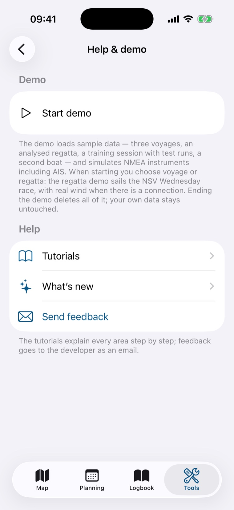
1234
Tools → Help & demo: the starting point for your first tour.
Start demo — sample data plus simulated instruments; while the demo is running this shows “Demo active”, with the Demo tier (Pro / Free) below it.
Tutorials — the built-in guides for each area, some as a tour through the real interface.
What’s new — a few short lines per build on what has changed; the same list as under Settings → Help.
Send feedback — a bug, idea or question as a prepared email (see A6).
Demo mode is the quickest way through the app. If you have no onboard electronics, you still
get to see every Pro feature in action this way.
2. Add your own boat
On a fresh install — also after deleting the app or on a
second device — it is preceded by the “Your data” page with two cards: Start fresh leads through the steps below,
Continue from iCloud skips boat and sails and fetches your boats from
iCloud after a restart (box “When updating” in A2). Below it is the demo button “Let me look
around first — start the demo”.
On first launch an onboarding leads you through five steps (including the profile — see below): Boat (only name, boat type and photo —
you import the polar and ORC certificate later under Tools → Boat → Polar data),
Sails (tap the chips: Main, Jib, Genoa, Spinnaker, Gennaker, Code Zero), Location
(see below; there also the “Back up to iCloud” switch with one sentence on what it means) and Offline area (drag the map section, level of detail fixed at “Medium” —
other levels under Settings → Map → Offline maps —, the download
carries on in the background; below it the question “Load missing areas online” —
visible together with its explanation line at the standard text size without scrolling, because the map preview adapts its height to the
screen; below that, likewise without scrolling, “Fetch wind from open sources” —
suggested on; off means wind only from the onboard network or entered by hand). After that you land in the logbook with the large Cast off button — together with Anchor and MOB fixed at the bottom in the thumb zone, as later on too.
Between Boat and Sails there is a fifth step, Profile: “What do you use
Etmar for?” with three large areas — Racing & training, Cruising, Workshop —, all preselected. A tap
on an area deselects or reselects it; a tick or an empty circle shows what applies. Deselecting all three
is possible — Logbook, Map and Safety always remain. “Next” applies the choice; you can change
it at any time under Settings → Profile (C16).
With “Continue from iCloud” this step does not appear: the profile applies per device, and out of the box everything is on.
3. Location permission
The question comes exactly once, in the onboarding — on land, with both hands free. For
recording in the background you will later also need “Always”; “Cast off” asks for it then.
If you chose “Later”, you can catch up on the map (location button or the blue chip
“Allow location”). Without location permission the app records nothing and the MOB button has
no coordinates.
Test
Does the onboarding come across clearly? After the steps, do you feel ready to get
going — or is something missing before you cast off for the first time? Is it immediately clear on the
“Your data” page which card applies to you? At the
“Profile” step, do you know what you are deselecting — and what you would miss afterwards?
In the beta you can try Pro freely. Pro comes as a subscription; in the TestFlight version the purchase goes through Apple’s test environment, and nothing is charged.
Etmar has two tiers: Free and Pro (what sits where is in B3).
Logbook, map, safety and instruments are free; Pro is the analysis afterwards and, on the onboard network, the sailing compass.
The subscription is available yearly (€24.99 with a 14-day free trial) or monthly (€4.99). In the TestFlight version
the purchase goes through Apple’s test environment, the sandbox: the same path as in the App Store, just without a charge.
You can also try Pro without buying: with your own boat via the beta tier, with sample data
via the demo tier.
What you see when buying
A locked analysis opens “Etmar Pro”: at the top the feature you came from, below it what Pro calculates from GPS and what is added with wind from the onboard network, and at the bottom both subscriptions with prices, restore and the links to the privacy policy and terms of use. Without a running demo, “Try in demo mode” appears above them: the sheet closes, then the demo starts — or the app says why not, for example while a voyage of your own is being recorded. Under Settings → Tier & demo there is “Unlock Pro”, or “Manage subscription” with an active subscription.
With your own boat: the beta tier
Only in the TestFlight version, under Tools → Settings → Tier & demo,
is there the section “TestFlight beta” with the Beta tier: Pro or Free. Out of the box it is set to Free —
the way the App Store delivers the app. Choose Pro, and the tier lines are gone, without a purchase;
the “Tier” line then shows Pro. Below it is the build, so you can mention it in your feedback.
With sample data: the demo tier
If you just want to see quickly how Free or Pro feels, use the demo:
Tools → Help & demo → Start demo, then set the Demo tier to Pro or
Free. The app behaves like the chosen tier — with the collected tier lines, the
Pro overview and simulated onboard instruments, which run in both tiers. The demo tier never lowers you
below the tier you have: if the beta tier is set to Pro, the demo stays at Pro too. For everything with
your own onboard electronics and your own voyages you need the beta tier instead, because the demo only runs with
sample data.
Test
Open “Etmar Pro” from a locked feature, for example under Tools → Analyses: is the right feature at the top, and are both subscriptions listed at the bottom with prices? Buy the yearly subscription in the sandbox, nothing is charged: does the sheet close, is the feature unlocked, does Settings → Tier & demo now show “Manage subscription”? The same with restoring on a second device. Without buying: tap “Try in demo mode”: is the sheet closed before the demo rebuilds the interface? End the demo again and under “TestFlight beta” set the beta tier to Pro: are the tier lines gone?
The points from the current build. Everything else is welcome all the same.
(from the next build)Build 59 — anchor watch, depth and wind alarm temporarily unavailable
No anchor watch (C13): The anchor alarm, depth alarm and wind alarm are hidden — no “Anchor” in the logbook, no “Set anchor” in the map’s layers menu, no “Anchoring” under Tools → Safety, no anchor tile among the instrument fields. An anchor set before the update is lifted afterwards; anchorages and logbook entries remain. Can you still find any way to the anchor watch?
Safety notice again: After the update, “Alarms are aids” appears once more and names only the AIS warning and MOB. Does it appear exactly once?
(from the next build)Build 58 — depths as ready-made files
Reload depths (C3): Save an area again, or reload the depths of a large area with the arrow in the pack row under Settings → Map → Offline maps. Are the depth contours where you expect them, and does the area line show contours, quality and source?
Very large extent (C3): Use “Load seamarks & depths only” for a very large extent. The area line says how many megabytes the depths would be; the app loads the seamarks independently of that. Do you know what to do next?
Build 56 — safety notice on the alarms
New notice at launch: after the update, the sheet “Alarms are aids” appears once; on a new install, directly after the chart notice (“Notice 2 of 2”). Does it appear exactly once, can you read it without scrolling, and is the same text under Settings → About & legal?
Limits on the alarms: in the anchor sheet, at the depth alarm and at the AIS warning there is one line each on the limit — no alarm with a flat battery, depth below the transducer, only vessels with AIS. Does that make clear to you what the depth on your depth sounder is measured from?
Build 55 — Pro can be bought
Buying Pro (A4, B3): open a locked analysis under Tools → Analyses. Both subscriptions are listed at the bottom with prices; in TestFlight the purchase goes through the sandbox, and nothing is charged. Are price and term right, does the sheet close after the purchase, and is the feature unlocked afterwards?
What now belongs to Pro (B3): sailing compass, your own instrument pages, smart fields, the regatta page, several open workshop projects side by side and the planned practice course. Locks only appear in harbour, never on deck. Do you find a lock on a live screen, or a Pro feature that you can use without Pro?
Build 54 — the state for the App Store
Pro preview and Tier & demo (B3): open a locked analysis under Tools → Analyses. At the bottom it says “This analysis is part of Pro. Pro is not available in this version.”, and the same line appears under Settings → Tier & demo. Is there still a sentence about a later update, a price or a buy button anywhere?
Practice course (C8): under “Course type” there is only windward-leeward. Are you missing something there, or is the sheet clearer this way?
Build 53 — your season against the previous one, plan the practice course in advance, equipment away, English revised
Your season (C10, C17): open Tools → Analyses → Your season. At the top you choose the year; below it are seven lines covering all your own sessions: nautical miles, sessions, days underway, longest stage, night hours, harbours & anchorages and the wind profile. Without a subscription, “This season against last” counts both years; Pro sets them value against value, with the wind of both years above; “Share” creates the season PDF. Do the miles, days and harbours match your summer — and does an empty line say why?
Plan the practice course in advancePro (C8, C15): in the Calendar, a training event on your own boat carries “Plan practice course …”: a tap on the map sets the course centre, the axis comes from the forecast for the time of the event, and the app checks depth and shore at the planned location. When creating a training session, the same works with the wind from now. In the training session the tile is then called “Planned course”: the preview places the course at the planned location, takes the axis from the current wind and gives distance and bearing; “Bring to the boat” moves it to the boat. Is the course where you tapped — and does the preview say whether the axis has shifted since the plan?
Away (C10, C1): under Tools → Boat → Equipment, open an item and, under “Maintenance”, use “Send away …” to send it for servicing or lend it — to whom, since when; a sail goes away the same way under “Where is it”. The checklist before casting off names what is still missing; “Back” brings it back with one tap and, after servicing, adds the entry to the maintenance log. In the demo the liferaft is at “Seaservice Kiel”. Can you see before casting off that the liferaft is not on board?
English revised (D2): set the iPhone to English and go through the logbook, training and analyses. Terms and abbreviations have been unified (for example “underway”, “avg”, “mark”); labels that wrapped or overlapped — steering chart, course briefing, season comparison, quick tiles — are readable again in both languages. Where is there still a German word, a truncated label or a term that an English-speaking sailor would put differently?
Build 47 — the course briefing on one screen, entry points where you look for them
“New in Build 47” (C16): after the update, the line “New in Build 47 — take a look” appears in the logbook in harbour. A tap opens “What’s new”, and after that it is gone; without a tap it goes after a week. Did you see it before you went looking for something else?
Course briefing (C6, C5): tap a course under Tools → Courses & waypoints, or “Wind against the course” in the race detail. It opens with the map, and the sketch is one tap away (“Map · Sketch”) — north up as on the map, the wind as an arrow; for each leg the table gives the true course — on upwind and downwind legs both tacks, the long one first — and the distance sailed with “≈”. Try “Now”, “At start time” and “Assumed wind”. Tap a leg in the sketch; the button next to “Sketch” opens it in full screen — a double tap zooms, ±10° turns the assumed wind. Do course and distance match what you sail on your course? Can you read the sketch at a glance, including the wind direction? Can you hit the leg with your thumb?
Entry points: in the context tab “Voyage”, “Race analysis” appears after a race finishes, and “Measured runs” in training (C6, C8). Under Tools → Prepare, “Offline area” names your saved area (C3). In the sheet of the “Wind now” capsule you switch the wind layer under “On the map” (C3). In Settings → NMEA connection, “Check instruments” opens the check for each sensor (C11). At the top of the trim list, “Workbench” leads straight into the workbench (C9). Do you find each of them at the moment you need it — and is an entry point missing that you would have expected?
AIS approach without own course (C4): with GPS on the onboard network, in harbour or at low speed, some sensors leave the course field empty. If the course is older than 10 seconds, the warning calculates with the iPhone’s — if that is also older than 10 seconds, with a stationary boat —, and in the AIS target’s card “without own course” appears after CPA/TCPA. Does a vessel heading towards you still trigger a warning then? Do you understand what the addition means?
Also in Build 47 — your data stays with you, onboard network and map calmer
First launch asks about wind (A3): on a new install, at the “Your area offline” step, the app asks whether it may fetch wind from open sources when there is no wind sensor; on is suggested. If you already use the app, you keep your setting. Do you understand without the handbook what you are allowing there?
Place names, backup, import (C16): the app looks up the place name when casting off and for the berth using a position rounded to about 1 km. The data backup also shows the state before each restore, with size and “Delete”. The app only accepts GPX, Etmar shares and polar CSV with valid values and says how much it left out. Is the place name still right after casting off? Can you find the state before the restore?
Onboard network (C11): over UDP the app only reads the first device after connecting; a second sender shows up as a notice in the connection. The air pressure from the onboard barometer is valid for 10 minutes after the last value. If an NMEA 0183 sensor leaves the course field empty at low speed, the tile greys out the course. Does the air pressure still jump to the iPhone during a short Wi-Fi gap? Does the course grey out in harbour when the sensor stops sending one?
Calmer map (C3): there is now only the Contrast map style; the lighthouse menu is shorter, and voyages and races are grouped together. The wind layer only colours from 17 kn, stations carry an arrow as long as the model’s and recognisable by the dot at the end, and a tap on a station in a harbour opens the station instead of the harbour. Do track, course and laylines stand out? Does the menu fit entirely on screen in portrait?
Speed by point of sail*Pro (C10): after a session without wind from the onboard network, the app fetches the model wind for every hour; the new card under Tools → Analyses → Boat & speed gives the speed over ground by point of sail* and wind band. Does that match what your boat does on those points of sail?
Race on the event (C5): if you create a race in the form with an event, it is attached to that event — the calendar no longer offers a second “Start” for it. The race in the regatta demo is called “NSV Wednesday race (demo)”. Does the calendar still offer you a second “Start” anywhere?
Build 46 — air pressure without an onboard barometer
Air pressure from the iPhone in the logbook (C1, C11): without a barometer on the onboard network, create a new logbook entry. iOS asks for “Motion & Fitness” at this point – only here, not when the app starts. Once you allow it, an air pressure marked “iPhone” appears in the field shortly afterwards. Leave the app open for a good hour or record a session and then create a new entry again: under “More”, the “Tendency” line now gives a word and a number. If you decline the request, the field stays empty, and the line below the Weather section says where to switch it on (Settings → Etmar → Motion & Fitness). Does the request come at the right moment? Does the tendency after an hour match what the sky and wind are doing – and a barometer on board, if you have one?
Build 44 — wind for sessions without a wind sensor
Open “Collect data” in training, sail a manoeuvre series (C8): Create a training session, tap “Collect data” between two runs and start the manoeuvre series. Can you read the target above “End run” at a glance in a seaway? Does the title of a wind row (“Polar: upwind below 8 kn”) match what your boat is really missing?
Session without a wind sensor, then open with a connection (C1, C17): Record a session without wind from the NMEA network, end it and then open the app with a connection. Shortly afterwards, does the session’s daily report show “Wind from station” with the station and distance under every hour, or “Model”? Does the wind roughly match what you had out there, and is it the station you would have expected? Without a connection, or with “Wind from open sources” off, nothing may be fetched.
Wind layer for planning (C3): On the map, switch on “Wind (model)” in the lighthouse menu and zoom out until arrows with knots appear; tap an arrow and a station. Under “Wind” there are now two switches, “Model · from ≈ 30 km” and “Stations · every zoom level”: switch both on, zoom right in to the harbour (stations in view stay, from 20 minutes old with their age, the model arrows go) and then far out until the line under “Wind now” says “Arrows every ≈ … km”; finally switch “Wind from open sources” off once. Does the picture help you plan, can you read the figures at a glance — in night mode and zoomed far out too —, or is something missing from it?
Build 43 — two tiers instead of three: everything on board is free, Pro is the analysis afterwards
(NMEA, AIS, routes, instrument pages, depth alarm and the facts of a race are free; the Plus tier no longer
exists). Switching tier in the beta: Pro · Free — under Tools → Settings →
Tier & demo, section “TestFlight beta” (A4). Test as Free first, then as Pro.
Free on board without a notice (B3, C11): Map, routes, AIS with CPA warning, laylines, offline packages, dashboard with the standard pages (custom pages and sailing compass with Pro, locked only in the page manager), NMEA connection, pre-start with line bias and the live values in the race no longer carry a tier badge or a lock. If data from the onboard network is missing, the tile says “needs NMEA”. Do you still find “Plus”, “Pro” or a lock anywhere on board?
After the race: facts free, one Pro banner (C7): Without Pro, the race analysis shows the key figures and the chapters start, course, manoeuvres and scoring with the facts — mark times, legs, tacks and gybes, legs sailed, SOG profile, zones, course change; distance and crossing at the gun are free in the race detail at the top under “Analysis”. What Pro assesses is gathered in a single collapsed row at the end of the list: “6 more analyses with Pro”. Are the facts enough for you to see where the race tipped — and does the one row make you curious without getting in the way?
Pro preview (B3): A row of the collapsed group opens “Etmar Pro” — what Pro calculates from GPS and what is added with wind from the onboard network, without a price or buy button. After this sheet, do you understand what you would get with Pro — and that you need none of it on board?
Pro without a wind sensor (C7): With the beta tier Pro the analysis calculates from GPS; what needs wind from the onboard network says so with the data reason, for example “Needs wind from the onboard network at the track points.” With Pro, do you still see a tier notice anywhere instead of a data reason?
Build 42 — an MOB point from a late fix is called “approximate”, “ANCHOR DRAGGING” repeats even without movement, on the watch only holding takes back a sync; plus round courses with either direction in the course editor and a profile that lets you hide what you don’t need (safety stays free; nothing moves between the tiers). Keep testing as Free (A4).
MOB point approximate (C13): If the last position is old when MOB is triggered, a precise fix replaces the point only if it is closer to the trigger than the old one — and “Refining position” only shows for as long as that is still possible (three minutes at most). If the new fix comes more than ten seconds after the trigger (on the watch: after the press), the banner permanently says “Point: fix 2 min after the tap”, the radio card “position approximate”. iPhone in your pocket for three minutes, MOB on the watch, wait half a minute, then take the iPhone out: does the banner say “Point refined” (then the location came while still in the pocket) or “Point: fix … after the tap” — and does that time match the time between the press and taking it out?
Anchor dragging, no depth (C13): If the anchor drags and the boat then holds again further out, “ANCHOR DRAGGING” comes again every 60 seconds — notification, vibration, sound —, even if it is no longer moving. With a depth sounder: if the sounding drops out during “SHALLOW WATER”, the anchor banner says “No depth — the depth alarm is not watching”, the logbook tile “No depth”; “Depth alarm off” in the anchor sheet can be undone for six seconds. Do you notice in your bunk that the anchor is still lying out — or that the depth alarm is not watching right now?
Hold instead of tap on the watch (C5): After “Sync” on the Apple Watch a sync bar shows for six seconds, with “Hold: undo” in small type below. A tap is another sync; only holding for half a second takes back the last one, with its own tap on your wrist. Ideally with gloves: does the hold work, and can you feel the difference from the sync?
Postpone the start collapsed (C5): Every pre-start begins with “Postpone the start” collapsed, even if the row with ±5 min was open in the race before. Regatta with two races, expand “Postpone the start” in the first: does the second pre-start begin collapsed, with pin, boat and sync in view?
Build a round course (C6): Under Tools → Courses & waypoints, build a course around an island, under “List” in the “Round course” section switch on “Finish = start line” and “Either direction”, and start a race from it. Before the start, does the question “Which direction?” come up, and does it name the right first mark? To try it out without your own course: the demo template “Round Fehmarn”.
Change direction (C6): After the start, change the direction via Regatta tab → “Course” → “List” → “Change direction”. Does the race bar then show the right side at every mark, including one whose rounding side you set by hand?
Choose a profile, switch areas off, demo (B1, A3): After a fresh install, onboarding asks after the boat “What do you use Etmar for?” — Racing & training, Cruising, Workshop, all preselected. Whatever you switch off loses its entry points: the tile is missing in Tools, and right at the bottom it says “Hidden in your profile: … — Settings › Profile”; what already exists and what is running stays. The demo shows everything, after that your profile applies again. After switching off, is something missing that you still need — or does something stay that you wanted gone?
Known: If the iPhone has discarded a watch sync, the watch still shows the sync bar — holding then does nothing on the iPhone. The “Anchoring” tile under Tools still only says “ANCHOR DRAGGING” when the watch is blind after dragging.
Build 41 — the MOB point says how old it is, shallow water at anchor is visible, the anchor is not dropped on an approximate position; plus undo on the watch and calmer Tools (safety stays free; nothing moves between the tiers). Keep testing as Free (A4).
MOB point provisional (C13): If the last position is older than ten seconds when MOB is triggered, the MOB banner shows “Refining position” in orange with the age of the fix. If a precise fix (up to 50 m) comes within three minutes, the point moves there, and “Point refined” shows for 30 seconds; if none comes, the caveat stays. “Point refined” now only for a fix up to ten seconds after the trigger; later the point is called “approximate” — see “MOB point approximate” above. An MOB from the watch requests a location itself for this. App in the background for a while, open it and tap MOB straight away — or MOB on the watch with the iPhone locked in your pocket: can you see at a glance how reliable the point is?
Shallow water at anchor (C13): If the depth alarm goes off while the anchor is down, the anchor banner turns red and says “SHALLOW WATER” with sounding and threshold, tile and map chip say it in one word; anchor screen and anchor sheet carry “Depth alarm off” at the top. With a depth sounder: set the threshold in the anchor sheet above the measured depth — can you tell in your bunk that it is the depth and not the anchor?
Anchor without precise location (C13): If “Precise Location” is off for Etmar, “Set anchor” no longer sets an anchor — not even if an approximate position is available. At the bottom it says in orange ““Precise Location” off — anchor not set”, a tap on it opens Settings; “Anchor to current position” then does not move the circle either. Switch “Precise Location” off, then “Set anchor” once each from the logbook, the map’s layers menu and Tools → Anchoring: do you find your way back to the switch?
Anchor dragging, watch blind (C13): If the anchor drags and no GPS comes after that, the notification says “ANCHOR DRAGGING — WATCH BLIND” with the last distance; the anchor tile in the logbook carries “Watch blind”, the map chip the age of the fix, the anchor screen the reason. If it happens to you: did you know straight away that the boat was last lying out?
−5 min before the pre-start (C5): If “−5 min” would bring the gun so close that the pre-start begins immediately, the race stays in “Waiting for pre-start”, and at the bottom “−5 min would start the pre-start — tap “Sync” at the signal” shows for six seconds. Race shortly before the pre-start, “−5 min”: does everything stay as it was?
Undo on the watch (C5): After “Sync” on the Apple Watch, “Undo” shows across the full width for six seconds; a tap takes back exactly this sync. Now only undone by holding — see “Hold instead of tap on the watch” above. After the tap, does the countdown jump back on watch and iPhone?
NMEA without a gateway (C11): With no reachable gateway, the app retries at growing intervals up to once a minute instead of every few seconds; immediately when you open the instruments and when you return to the app. Gateway off, back on after a few minutes: is the app connected after a little over a minute at the latest — or straight away when you open the instruments?
Tools in one colour (B1): The tiles are single-coloured with a thin edge, symbol and title at the top left; colour only shows danger and state — SOS always red, Anchoring depending on the watch, “Help & demo” while the demo is running, “Routes” while a route is running; the chosen focus gets a border. In sunshine and at night: do you find each tile as quickly as before?
Entry colours (C1): Entries carry colour only where it means something — cast off and start green, arrival amber, course mark yellow, red only MOB; position, event, radio, tack and gybe are grey, in the list as well as as a pin on the voyage map. Race bar, countdown and Regatta tab show straight digits instead of rounded type. Do you miss a colour — and for what?
Known: If the iPhone has discarded a watch sync, the watch still shows “Undo” — the tap then does nothing. The “Anchoring” tile under Tools only says “ANCHOR DRAGGING” when the watch is blind after dragging.
Build 40 — sync and ±5 min can be taken back, a short tap on the track works again, north is “000°”; behind that, tidied-up code that should otherwise not feel any different (nothing moves between the tiers). Keep testing as Free (A4).
Undo sync and ±5 min (C5): A mis-tap on “Sync” or “±5 min” in the logbook can be undone for six seconds with “Undo” in the bar at the bottom; start time, countdown and signals are then as before. Sync on the map could already do this. In the pre-start tap Sync, then Undo: does the countdown jump to the old time, and do the signals come at the old time?
Tap on the track (C1): On the voyage map a short tap on the track again opens the track point card of the nearest point, a tap on open water closes it; until now this only worked with a long press. With a wet thumb: do you hit the track without aiming precisely?
North as “000°” (C11, C4): Courses and bearings in instruments, Go-To, AIS, MOB banner and report show north as “000°” instead of “360°”, the watch with three digits like the iPhone (“007°”). Likewise course and wind direction in the entry, voyage detail, track point card and text export, plus the wind direction in the report (“000° (N)” instead of “360° (N)”, “007° (N)” instead of “7° (N)”); only the avg COG comparison of two measured runs still shows north as “360°”. On a northerly course, create an entry and open the track point card: are course and wind direction shown with three digits?
Instrument column after rearranging pages (C11): If you delete pages in the page manager, the column (landscape or on the iPad) then pages on from the last remaining page — like full screen and the data strip. Column on the last page, delete this page in the page manager, back to the map, the left arrow in the column: do you land where you expect?
Forms (C1, C10): Boat, sail, equipment, Workshop project, destination, POI, voyage and logbook entry now share one header. It should behave as before: “Cancel” only asks if you have changed something, otherwise it closes immediately; with changes the sheet cannot be swiped away. Open a form, change nothing, Cancel — then with a change: does it ask in exactly the second case?
English interface (D2): The finish entry of a race is called “Finish” instead of “Destination”. Likewise the entry type, the finish line in the course editor and the end of the analysis window. iPhone in English, finish a race: what is the new entry in the logbook called?
Known: In the track point card in night mode the row with the tack is hard to read. The race form asks for confirmation on Cancel even if nothing was changed. Fixed: it now only asks if you have changed something.
Build 39 — lighter while underway, the tracking diagnostics record when the app hangs, plus fixes to MOB, anchor watch and recording (in every tier; nothing moves between the tiers). Keep testing as Free (A4).
Underway (C1, B2): The logbook no longer recalculates everything on every position update, and logbook, Tools and Analyses no longer do so on every saved track point; the map only moves the boat, course vector and bearings along (not yet with AIS targets or laylines), and “All voyages” loads the tracks in the background — the miles and shape of a row may arrive a moment after the row itself. With recording running, at least 20 minutes: switch tabs, scroll “All voyages” to the end, open the longest voyage including its map — does anything stall for longer than the blink of an eye, and where?
Share tracking diagnostics (D3): If the app does not respond for 0.25 seconds or longer, it then writes a line with duration and tab to the log; “Measured hangs since launch” keeps count. Straight after the session, Settings → Tracking diagnostics → “Share diagnostics log” and send it along: does it match what you felt?
Reports from iOS (D3): iOS writes metrics about the app at most once a day; “Share reports from iOS” hands them over as a zip file. A day later: is there at least one report — or still “none yet”?
Old voyage while recording (C1): Viewing another voyage no longer ends or moves the recording; only the voyage that is recording shows Auto-Tracking “on”. Underway, open and close a completed voyage: does the track have a gap afterwards?
MOB without a GPS fix on an old voyage (C13): On the map of a completed voyage, without a fix there is no longer an own boat at the end of the track; an MOB shows “NO POSITION — no fix” and gets its point with the first fix that comes within three minutes — instead of landing at the old end of the track; after that it stays empty instead of marking the boat. In the harbour, location for Etmar set to “Never”, old voyage → map → MOB: is it clear that the point is still missing?
Anchor watch blind (C13): With the app open, no more iOS banner as long as the anchor banner, the anchor tile in the logbook or the anchor screen is visible and no sheet is on top; “ANCHOR DRAGGING” remains a banner. The “Anchor set” tile is labelled in dark green by day. Can you see the state of the watch without a banner covering the header?
Known: With AIS targets in range, laylines to the Go-To target (Pro with a wind sensor), during the MOB alarm and while the map follows the boat, the map still recalculates on every position update. In the demo the recording is on the demo race, which is why the demo boat’s day sail shows the Auto-Tracking switch as off.
Build 38 — the App Store candidate: anchoring without the map, casting off and mooring on the map with one tap, a shorter first launch, the demo in English (in every tier; nothing moves between the tiers). Test as Free (A4).
Set anchor without a GPS fix (C13): Instead of an empty sheet, an orange bar at the bottom says what is missing — “No GPS fix — allow location first”, “Location denied — Settings” or “GPS still searching — anchor not set”; where there is something to do, the bar is the button. Indoors or with location off: Map → Layers → “Set anchor” — do you know straight away what to do?
Anchoring in Tools (C13): Tools → Safety → Anchoring shows one large figure, one state and one button; “Anchor up” without confirmation, six seconds to undo. Without an anchor, “Before anchoring” shows whether notifications, Critical Alerts and location “Always” are allowed. Is one glance enough to see whether the anchor is holding? Does “Set up now” ask all the open questions while you are ashore?
Widen circle (C13): On “ANCHOR DRAGGING”, “All good — widen circle” widens the circle to the current distance plus 10 m; for six seconds Undo brings back the old circle, and the alarm reports again immediately. Set the anchor with 10 m, walk 20 m away: do you hit the right button during the alarm?
Cast off and moor on the map (B2): Without a voyage the green button is called “Cast off” — one tap, no dialog, six seconds to undo; you create races and training sessions in the logbook. If the boat has been stationary for 30 minutes, “Mooring” appears to the left of the logbook button. Do you cast off and moor without switching to the logbook?
Without a boat (C1, C13): The SOS card shows the radio call with “---” instead of name, call sign and MMSI, also via “Radio” in the MOB banner; anchor and MOB are at the bottom of the logbook; “Cast off” on the map first opens the boat form. Freshly installed, still without a boat: can you get to anchor, MOB and the radio call?
First launch (A3): For the boat the app only asks for name, type and photo, and for the cruising area no longer asks for a level of detail. Delete the app, reinstall: is anything missing — or is there still something too much?
Checklist in the logbook (C1): “Before departure” only shows what concerns your tier today, planning only the number of open items; under a minute it says “Fix just now”. At the pontoon: is there anything there that doesn’t concern you?
Demo in English (D2): With the iPhone set to English, the demo’s voyages, entries, trim notes, Workshop and harbour guide are created in English. Where is there still German?
Night mode and dark appearance (B1): At night “No GPS fix”, “Location denied” and “All good — widen circle” are black with an orange edge, tier badges and caveats light; in the dark appearance text on blue is black. Can you tell warning and alarm apart at a glance?
Known: If the anchor watch is blind, the “ANCHOR WATCH BLIND” notification covers the header every minute, even with the app open. (since Build 39 only if neither the anchor banner nor the anchor tile in the logbook nor the anchor screen is visible, or a sheet is on top, C13) In the demo “Mooring” never appears on the map, because the demo boat is always moving.
Build 37 — the whole app in English, smooth with many voyages; large text and night colours in places Build 36 left open (in every tier; nothing moves between the tiers). Keep testing as Free (A4).
English, once through the app (D2): Set the iPhone to English — interface, tutorials, “What’s new” and the SOS page are in English, British spelling (harbour, gybe); the cast-off button is called “Cast off”, nautical miles appear as “nm”. The demo’s sample data (voyage names, notes) was still German in Build 37; since Build 38 it is created in the iPhone’s language. No editor has read the texts yet. Where is there still German, where is a word off?
Pre-start in English (C5): The announcement speaks British English (“Pre-start. 5 minutes to go.” … “One minute.”), the watch says “Pre-start”, Live Activity and race bar are in English; after a general recall “RECALL — New start”. Race with voice announcements, 5-minute pre-start, start at least six minutes ahead (a mark that has already passed is not made up): do you understand every mark the first time you hear it?
SOS data sheet in English (C13): The PDF says “Call sign”, “Persons on board”, “Home port”. Is the sheet free of German words?
Many voyages (C1): “All voyages” opens and scrolls without hangs, voyage detail and voyage map of a long voyage open faster, and without a GPS fix in the harbour the logbook opens quickly. With your real logbook: switch tabs, “All voyages”, longest voyage including its map — and once with flight mode and location off: does anything still stall for longer than the blink of an eye, and where?
MAYDAY card at the largest text size (C13): The chip row, position and “Call sign or MMSI missing” no longer grow with it, “Add now” is shown in full (in portrait on its own line); in landscape the radio call has as much room again as at standard text size. Portrait and landscape, with and without a call sign: can you read the radio call without searching? VoiceOver once on the warning line.
Race status card and “Recent entries” at the largest text size (C1): The pinned card stays compact in the pre-start and race, pin, boat and sync can be hit without scrolling; under “Recent entries” the date is below the type, speed, course and wind one below the other. Start a race with +5, then Quick Log underway with wind: do you hit the three controls, and can you read each item in one piece?
ⓘ, point card and “Next event” at large text size (B2, C15): While the undo bar is showing, the ⓘ keeps its distance from it; on the point card “Add to harbour guide” is on one line, the distance stays with its unit; “Next event” gives the time. iPhone SE in portrait and landscape, plus iPad: hit “Undo” without brushing the ⓘ — and does any word still break?
Night mode in the race, mint by day (C1): At night “Marker”, “Event” and “Trim” are light areas with black text during a race; by day “Hide course” (courses from the community) is in dark mint. Can you recognise both without a second look — at night and in sunshine?
Known: The very first opening of a voyage after app launch still stalls briefly; a long event title can be hyphenated at the largest text size; on the MAYDAY card in landscape at the largest text size you reach the spoken text by scrolling.
Build 36 — safety: MOB from the demo pause, banners never abbreviated, depth alarm after disconnecting; map and logbook at large text size (in every tier; the depth alarm is Pro, it needs the depth sounder on the NMEA network). Keep testing as Free (A4).
MOB from the demo pause (A3, C13): If you press MOB on the watch while the demo is paused in the background, the alarm is real: when you come back the demo ends, and the banner says “NO POSITION” until the first real fix comes. With an Apple Watch: start the demo, lock the iPhone, MOB on the watch, back within a minute — is it immediately clear that the alarm is real?
MOB banner never abbreviated (B2): Bearing, distance and “End” are always shown in full; if the header doesn’t fit on one line, crosshair and “End” move below it, often already in portrait at standard text size. Trigger MOB, portrait and landscape, with normal and large text: can you read the distance at a glance?
Landscape: tab bar next to alarms (B2): If you bring up the tab bar with a wide instrument column, “Anchor up” and MAYDAY stay clear — the buttons on the right only rise to just below the banner. Set the anchor, pull out the bar by its handle: does anything ever lie over an alarm button?
MAYDAY card after a late watch MOB (C13): “Position approximate” moves below “MOB POSITION” if there is no room next to it; the English radio call says “position approximate”. With an Apple Watch: can you read the call out fluently?
Depth alarm after disconnecting (C13): If no sounding comes for a minute — NMEA disconnected or Wi-Fi dropped —, a standing alarm ends; if it is still shallow afterwards, it reports again after three readings. With a depth sounder on the NMEA network: does the second report come with sound?
Go-To in the dark (C4): In the dark appearance without night mode, the warning for a course error of more than 5° is orange on a black capsule. Can you recognise it in sunshine and at dusk?
Point card and harbour jump (B2, C12): If you tap a harbour or destination or jump there from the harbour guide, the symbol sits above the point card at normal text size; long names run to up to two lines, and in the demo the card survives a brief app switch (that of an AIS target comes back a second or two later with the next position update). Can you see the harbour without panning?
“Map isn’t loading” and the ⓘ on the iPhone SE (B2): If the map doesn’t come (for example on harbour Wi-Fi with a login page), the warning also shows next to “Area not saved” and, in landscape, next to the anchor banner; on the iPhone SE in landscape the ⓘ sits above the undo bar and data card. While the undo bar is showing (for example after “Anchor up”), the ⓘ keeps more distance from it in portrait, on the iPad and on the iPhone SE in landscape. Do you hit the warning and the ⓘ — and “Undo” without brushing the ⓘ?
Logbook and harbour guide at large text size (C1, C12): Race buttons, the run button in training and “Auto-Tracking active” no longer break any word; in the harbour guide the distance is below the name. Largest text in Accessibility: can you read every label in full? Known up to Build 36: at the largest text size the race status card fills almost the whole screen in the pre-start. The card no longer grows at very large text sizes and doesn’t hyphenate any word; pin, boat and sync are in full below it. Also known up to Build 36: under “Recent entries” the type, date, speed and course of an entry break mid-word at the largest text size. There the date is now below the type, speed, course and wind one below the other.
Pre-start with signals “Off” or “Silent” (C5): With the app open, the iPhone vibrates at the start of the pre-start, 1:00, 0:30 and 0:10; the pre-start card says that the signals are off. Do you feel every mark?
New device and setup (A2, C16): “Continue from iCloud” in onboarding does not create a boat; after restarting the app, boats and voyages arrive. At location, “Back up to iCloud” and its sentence are in view at standard text size without scrolling. Second iPhone with your iCloud account: is your own boat active afterwards?
Next event on race day (B1, C15): An event from today that has started stays in Planning until midnight, as long as no other one follows today; without an event the row leads to the calendar. Start postponed: is the event right?
Build 35 — anchor and MOB at large text size, at night and without a voyage; every analysis in one place (in every tier; what an analysis shows stays tiered as before). Keep testing as Free (A4).
MOB in an empty logbook (C1, C13): If the boat has no voyage yet, the MOB banner with bearing, distance, time, “End” and “Radio” sits right at the top, not just the tile; anchor and MOB also stay within reach while iCloud loads the voyages after a reinstall. Hold MOB, end it, “Undo”: can you reach everything without a detour via the map?
Anchor and MOB at large text size (B2, C1): At very large text sizes, state, distance and bearing are shown unabbreviated, the buttons one line lower (for MOB up to Build 35 only in landscape, since Build 36 in every orientation as soon as the header doesn’t fit); with a voyage running, no word breaks on the quick buttons any more. In the MOB banner, crosshair and “End” move one line lower as soon as the header doesn’t fit on one line – in every orientation and text size, in landscape next to a wide instrument column even at standard text size. Largest text, set the anchor and trigger MOB, portrait and landscape: do you hit “Anchor up”, “End” and “Radio” with one tap? Known up to Build 35: in landscape the MOB banner abbreviates the distance (“049° 17…”) and, at large text size, “End” to “En…”.
MOB in the demo (A3): An MOB triggered in the demo ends with the demo. Start the demo, trigger MOB, end the demo: is the alarm gone, and does the demo start again afterwards?
MOB from the watch (C13): If a press arrives late and the iPhone knows no position, it fills in the first fix of the following three minutes as an uncertain position; the radio card warns “approximate”. With an Apple Watch: is it clear to you that this point is imprecise?
Go-To at night (C16): If the course is more than 5° off the target, the warning is amber on a black capsule. Can you recognise it at a glance in a seaway?
The ⓘ of the map sources (B2): In landscape it sits clear at the bottom left. Can you reach it with your thumb without hitting a button?
Harbour guide “Nearby” (C12): A tap on a harbour shows it on the map with its point card; it is added with the plus on the right of the row. Does this let you find the harbour you are looking for?
Tools in fixed places (B1): Every tile is always in the same place, the situation only frames one. Without a voyage, the “Planning” context field at the very bottom names the next event in the coming seven days. Do you reach for the right one without looking?
Analyses in one place (C7, C10): Tools → Analyses shows the last race with its track, the last training session, the season and the boat; the boat page leads there with one row and names type and draught. The sailed polar Pro is only with the polar data, the sail crossover only with the sails. Do you find every analysis at the first attempt?
Build 34 — Free, as in the store (Plus and Pro stay on board but cannot be bought). This time, test the app as a buyer gets it: Tools → Settings → Tier & demo, beta tier “Free” (A4).
Tier preview instead of purchase (A4, B3): A locked feature opens a preview of the tier without prices or buy button; at the bottom “Try in demo mode”. Under Settings → Tier & demo, instead of the buy buttons it says “Plus and Pro will follow in a later update”. Do you understand at a glance that there is nothing to buy, but everything to try? Does the sheet close before the demo starts?
Seamarks and depths only from saved areas (C3): Loading seamarks, harbours and depths on demand from Build 33 is switched off for now, until it runs reliably; “Load map online” now only applies to the base map. What the map fetched itself in Build 33 stays and is still listed under “Auto-downloaded”. Sail with a connection into an area you have never saved: is the base map there, does the chip say “Seamarks & depths not loaded here”, and does a tap in the harbour lead to Offline maps? After “Load seamarks & depths only”, do buoys and depths appear?
Sharing and file picker in night mode (C16): While the share sheet or the file picker is open, the red filter pauses; up to Build 33 neither responded at night. At night, share the shopping list, an inventory PDF or the backup and import a file: does every sheet respond, and is the red back immediately afterwards?
Boundary of the loaded depths and seamarks (C3): A thin dashed blue-grey line labelled “End of depths and seamarks” outlines where both are stored on the device. The line is finely dashed and pale, the label only appears zoomed in and only on long edges. Do you find the line at the edge of your saved area when you look for it — by day in sunshine and at night —, without it drowning out buoys, wind layer and track? Do two adjoining areas get a shared edge?
Cast off, anchor and MOB at large text size (C1, B2): Without an open voyage, all three stay fully in view; at the largest text sizes anchor and MOB are one below the other. In the anchor banner “Anchor up” stops growing so that state and distance keep their room, and the circular menus of the logbook button and the long press stay fully on screen. Set the largest text size in Accessibility: do you hit Cast off, anchor and MOB with your thumb, and can you read every item of a circular menu, even at the edge of the screen? With a voyage running, the labels of the quick buttons no longer break mid-word either. Cast off with the largest text size and immediately tap Sails or Engine: does the undo bar leave the buttons clear, and can you read every label in full, including Entry and Radio? If you have to scroll for it, add whether the harbour is shown above the buttons.
Camera in the boat form (C10): “Camera” no longer closes by itself after a second and no longer takes the form with it, unsaved input and all; wherever you attach photos, camera and full screen stay open until you close them. Create a boat, type in some details and take a photo: is everything still there afterwards?
No demo next to anchor and MOB (C13): If a real anchor is down or an MOB alarm is running, the demo does not start — as already with a recording running, the app says what has to be ended first. Anchor and alarm keep running meanwhile. Set the anchor, then start the demo: does the sentence appear, and does the watch stay on?
Finish only after the first mark (C5): A finish crossing only counts once you have been closer to the first course mark than to the start line — a leeward mark just above the line used to end the race shortly after the gun. Sail a course whose finish is on the start line: does the race only end at the finish?
“No” to iCloud (C16): Without your yes, the app no longer sets up iCloud sync; what was already uploaded before stays in your iCloud until you delete it there. Reinstall and leave “Back up to iCloud” off during setup: does Settings → Data backup say “Stored locally only”, without an error message and with the link to switch it on?
“Measured” without Plus (C9): In the trim entry, in Free “Measured” names the duration of the run and the tier that brings its key figures — like “Rated” in the workbench; avg and σ of speed are only shown there from Plus. In the demo tier Free, can you read what is missing and why?
Age of the fix (B2): The “Fix … min ago” label on the boat arrow keeps counting every minute without a new fix, and after two minutes without a fix the arrow turns grey by itself and the Go-To row is struck through — until now often only once you touched the map. Put the phone somewhere it gets no fix, without touching the map: does the arrow turn grey after two minutes?
Build 33 — honest depths, seamarks and depths by themselves, the map during an alarm (depths, loading on demand and map controls in every tier; AIS with Pro):
Depths against the map’s water (C3): Contours and soundings now only appear where the depth model and the map’s water agree; rivers and harbour basins narrower than about 800 m stay without contours, in the demo for example the shipping channel at Warnemünde. Does a contour still run over land in your area? Is one missing in a wide basin where you expect it?
“≈” and “Quality unknown” (C3): Dashed lines marked “≈” are approximate — close to the shore, on a coarse grid and where EMODnet rates the survey as low or has not rated it; larger unrated areas carry “Quality unknown”, the area row in Offline maps names quality and source. In the demo off Gedser. Do you read dashed as “approximate” at a glance, at night too? Does the quality the area row gives for your area match what you know of it?
Loading online (C3): With “Load map online”, the map fetches the seamarks, harbours and depths of the visible area by itself, underway too, as soon as you are not looking at an overview; for this, Offline maps has the row “Auto-downloaded”. The demo does not load anything. Sail with a connection into an area you have never saved: do buoys and depths appear by themselves, and are they still there without a connection? Switched off again for now — see Build 34.
Button column during the MOB alarm (B2, C13): The buttons on the right start below the banner; at large text size + and − give way first, during the alarm then the round button — the location button stays. Quiet hints pause while the alarm is running. Trigger MOB in the demo at large text size: does a button lie on the banner? Do you hit “End” and the radio button with one tap?
Map in landscape (B2): Banners only move in when there is enough width, the data card takes up at most just under half the height and sits next to or above the left row of buttons. In landscape, tap a harbour: is the data card clear, without covering a button?
Stale AIS targets (C4): If no position comes from a target for 3 minutes, it is shown dashed without a vector (in the overview as a hollow dot), CPA and TCPA are no longer calculated, the point card names the last report — in the demo the freighter after five minutes. Can you recognise “stale” by the shape, at night too?
CPA warning next to the Go-To (C4): The warning is never shortened; if it doesn’t fit next to the Go-To, the Go-To chip gives way. Is “CPA … nm” still fully readable above the MOB banner too?
Go-To dashed (C4): The course line to the target is dashed, the COG vector solid, by day as at night. Can you tell the two apart at a glance, even with a small course error?
“Start / finish” (C6): If start and finish line are the same line, one label is shown there instead of two on top of each other. Is that right on your windward-leeward course?
Build 32 — the anchor watch overnight, the second morning of a multi-day voyage and the trim workbench (safety and logbook in every tier; the workbench too, its key figures tiered as in training):
Anchor watch overnight (C13): As long as an anchor is down, Etmar registers the watch with iOS as ongoing background work — even without a recording running, the normal case after mooring. Set the anchor without an open voyage, lock the phone, leave it overnight; in the morning, still locked, walk out of the circle with the phone. Does the alarm come immediately? How much battery did the night cost? You share the log for this under Tools → Settings → Tracking diagnostics → Share diagnostics log.
The second morning of a multi-day voyage (C1): If yesterday’s destination is still in the voyage and you cast off right there, it only counts after you have left its radius — the first fix no longer stops the recording. The form of a new cast-off entry says below the destination that you are within its radius. Does the recording keep running? And on a round trip: when you return to this harbour, does “Mooring (stage)” come?
300 m for new destinations and stages (C2, C12): Whatever is created without its own radius when casting off, in voyage planning or by a long press on the map gets 300 m instead of 1000 m. Does the recording end at the breakwater and not half a mile before it? Destinations already saved keep their radius.
Trim workbench (C9): At the top of the trim list, the “Workbench” row leads to “Rated” (each trim from a measured run next to the performance of the run), to “Wind axis” (all entries per point of sail over the wind, with the gaps) and to “Compare” (two entries side by side) — in the demo with the “Forestay trim training”. At your desk, can you see which trim paid off, where you are missing one and what was different on a good day? Set the demo tier to Plus and Free as well: does every row say what it measures and what is missing?
Night mode (C16): At night, locked main buttons carry muted light-red text instead of black on dark, green confirmations such as “Position recorded”, the check marks and the “Cast off” tile are amber. Can you read both at a glance at night, and does a locked button look locked?
Demo anchor (A3): An anchor set in the demo goes with the demo — as soon as the app goes into the background. Demo, set the anchor, end the demo: does it stay quiet, without an anchor banner? Known up to Build 33: if a real anchor was already down when the demo started, the demo assessed it against the position in the demo area. Now the demo does not start and says that “Anchor up” has to be tapped first.
Build 31 — Workshop and maintenance, for everyone planning the winter on the boat (everything in every tier; in the demo everything is already set up):
Workshop home page (C14): at the top the winter at a glance — photo, completed tasks with a ring, days to the next event, what the winter has cost —, below it the shortcuts “This week” and shopping list and the “Maintenance” row. Do the figures match what is in your projects? Do you hit the shortcuts with gloves?
Project header: photo, progress ring and a timeline with start, today, the events as flags and the end; the costs are shown as bars, also per category. Do you hit a flag when two events are close together?
Adding tasks quickly: “New task” at the end of each category — title, Return, next; the categories carry a symbol derived from their name. Does the keyboard stay open between two tasks, also with an iPad keyboard?
Album and before/after: “All photos” in the project opens the album; a task with two photos shows before and after — in the demo on the sacrificial anode. Is the right photo under “Before”? Do the images stay sharp when you rotate the iPhone or iPad?
Choosing photos: “Choose from photos” now responds to the whole row, and at night the red filter pauses while the picker is open. Does a tap next to the text open the picker? Can you choose a photo or tap “Cancel” at night, and is the red back and the screen dimmed afterwards? Known up to Build 33: the share sheet could not be operated at night. It responds at night too (see above).
Maintenance cockpit (C10): The equipment is sorted by due date, a bar shows for each part how much of the interval is used up, due is shown in orange instead of red, and “Send to Workshop” (swipe left, long press or button in the detail) puts a part into a project as a task. Does the task land in the category you expect? Does the swipe work with gloves?
Maintenance log: “Serviced” in a part’s detail records date, engine hours reading, note and amount; the Workshop records it too when you confirm the service while checking off a task. Does the prefilled reading match the hour meter on your engine? If you have two devices: does the entry arrive on the other one?
Inventory as PDF: The share symbol in the equipment list makes a PDF with photos, serial numbers, maintenance status and the latest entries of the maintenance log. Email it to yourself: is it readable and handy?
Build 20 (as of 21 September 2026) — four things first:
Pre-departure checklist: Before casting off, it shows how long the free storage will still hold the raw recording — under six hours in orange, “estimated” without a measurement of its own. Does the figure roughly match what your phone has free? And: the course row now opens Offline maps directly on the course — is the map section right?
Raw log archive: Next to the share symbol there is a bin with a confirmation, the swipe left stays. Can you hit it with wet fingers without sharing by accident?
Map: If a track stays single-coloured, the legend says why (no wind from the bus or missing tier) — where there is no legend, the voyage detail says it. The map bar no longer collapses while a hint is over the map, and in landscape a new user can find the navigation too. Are you missing the explanation anywhere?
Analysis and calendar: In the full-screen chart a swipe moves the time axis, before it could only be zoomed; a tap in the chart shows the spot on the map — in every chart with a time axis, including the speed build-up around the gun. “Start” on the calendar event is now easier to hit. Does the swipe pan, or does it still zoom?
Also: “What’s new” under Settings → Help lists what has changed for each build. The race editor checks the course like the template editor, and Undo in the course editor keeps a mark’s pinged accuracy.
From Build 19, still valid:
Demo mode: If a recording is running on a real voyage, the demo no longer starts. Is the message understandable, and can the demo be started again after you finish?
“Reopen” in the voyage detail brings back end date, race timer and recording; an automatically set finish stays as “Finish (discarded)”. Does the undo bar appear at the bottom, and does it take everything back?
NMEA raw recording: Below 500 MB of free storage it stops by itself, with a notification; the voyage recording keeps running. Only those with little storage will see this.
Regatta — only with a course that knows an extension (time rule or marked extension leg): The finish ends the race, not the voyage. The recording keeps running until mooring, at mooring the race gets its departure port as destination, two hours stationary end it if need be; after the scored finish the logbook shows the voyage controls (Mooring) instead of “Finish race”. Without such a course nothing changes; the course editor warns if there are two finish lines and none is marked. The NSV Wednesday race from the community library (version 3) is such a course, joining is enough; if you already have it, you see “New version available” and choose “Switch — delete the old version” or “Keep both”.
Also: After restarting the app, the phone’s last known location no longer ends up as a point in the voyage (it could be hours old and far away). If you quit the app during a voyage and open it again later: the track should not show a jump.
Workshop (formerly “Winter storage”), for everyone already planning: the tool is now called Workshop, because work on the boat doesn’t only come up in winter. Photos are now also available on the project, progress counts the same everywhere (tasks including subtasks, without materials). New: tasks can have a due date, events such as crane or yard are shown at the top of the project and in the calendar, and “This week” (at the top of the Workshop list) gathers across all projects what is due by Sunday — this replaces the weekend planning per project. Reminders come at most three times a week (Friday 5 pm, the evening before an event, the morning after a missed due date), and can be switched off under Settings → Notifications. Plus amounts on materials (“Bought” asks for the actual amount), a cost row with budget in the project and a shopping list across all projects with parts as text. Also “Concerns”: tasks are linked to a piece of equipment, checking off asks about the service, the winterising/recommissioning templates suggest services that are due, and projects can be completed (history per winter). And who does it: per task Myself, Boatyard or Helper with a name, a yard filter in the checklist and “Share work list” under Planning — the tasks of one assignee as a PDF with tick boxes, photos and boat name. Questions: do the figures in the Friday notification match “This week”? Is anything missing in “This week” that the old weekend view had? Does the total in the project match what you entered? Does the work list arrive at your yard as a readable PDF?
Since Build 19: your race analyses from before show different figures.
This is intentional. After the first fully recorded race, every analysis could be
recalculated against real measured data instead of just being read against the code — and that turned up
errors that could not be seen at the desk. The analysis is calculated afresh from the track every time it
is opened, so the corrections apply retroactively to all your races.
What changes:
Polar performance rises by about three percentage points, more upwind. The ORC grid ends
at 52° and 150°; anything tighter or deeper was previously measured against the edge value — in a
real race that affected 60 % of all points. Now the beat and run optima of your polar
are used as additional support points, and between the columns the interpolation is curved instead of
linear.
Tacks and gybes are counted differently. The type of manoeuvre now comes from the
wind angle at the change of tack instead of the classification of the whole leg. In a test race
“6 tacks, 1 gybe, 4 course changes” became the actual 7 tacks and 4 gybes.
The start loss in metres disappears for races that don’t start upwind. It
compared windward progress against a boat that would have beaten for the same time — on a
reaching start a meaningless figure. Instead, the progress to the first mark is shown.
Extra distance counts differently. Instead of “sailed ÷ straight line” (on the beat never under 130 %)
it is now the excess over what is typically needed for the point of sail — 141 % becomes +8 %.
OCS is claimed less often. On a drawn line, 20 m is drawing error,
not a premature start.
Mark times can change. Marks that only have to be
passed now get their time abeam instead of from the detection radius — where there used to be a
dash there is now a time, and where the buoy happened to lie within the radius, it shifts by
seconds. The same applies to a rounding mark whose radius you missed: if it lay in the narrow
corridor around the buoy, the moment abeam counts. Leg times and the time-loss waterfall
follow suit.
If one of your figures shifts more than seems plausible to you: write to me.
That is exactly what the beta is for.
The map is the workspace. The green button on the map starts a voyage, race
or training session — directly from there, without a detour via the logbook. You plan routes on the
main map too. The “Contrast” map style is the default: land and roads toned down so that
track and course stand out. It is the only one — the “Chart” option
under Settings → Map is gone.
Can you find everything you need underway from the map — or are you missing the
way back anywhere?
Courses from the community. Below your own courses there are now some that come with the
update, with organiser, area, start procedure and dates. “Join” creates your
own copy and adds the dates to the calendar. The other way round, you submit your own course,
a harbour entry or a route via the share menu (“Send to Etmar”).
Is the way understandable?
Destinations from the chart data. When choosing a destination, harbours, marinas and
anchorages from the chart data also appear — offline, sorted by distance.
Do you find your home harbours? Are the VHF channel and number of berths that are carried over to the harbour guide
correct?
Polar without typing. Polar diagrams are completely free; new is reading in the
ORC certificate as a PDF — polar, boat data and sails in one step.
If you have a certificate: does everything arrive correctly?
Wind suggestion in the logbook: Without an onboard network,
wind speed and direction from the nearest station or the model are shown in grey in the empty
fields; only “Apply” enters them; the app no longer prefills gusts, pressure and weather
conditions. With NMEA on board, your own instruments take priority.
Does the suggestion match the wind outside? Empty fields mean: no connection, no station within
range or “Wind from open sources” is off.
The map in landscape. In landscape the map screen now looks different: the
tab bar is a capsule with four symbols, hides straight away when you rotate and comes
back via the handle at the bottom edge; the instrument column starts
narrow with SOG and COG. Plus the map image in the race analysis: a tap on a
manoeuvre, a leg, a mark or the start shows the spot in the track.
Is the capsule there when you need it, and gone when you need the map? Do you recognise in the
map image where you were?
The logbook in harbour and underway. As long as no voyage is running, the logbook no longer
shows the map of the last voyage, but what counts at the pontoon: berth, age of the GPS fix, the
open items of the checklist and the choice of engine or sail — under sail straight away with the
sail combination. Cast off, anchor and MOB sit fixed at the bottom edge. In return, the voyage maps have
moved into the list under “All voyages”, each voyage with the shape of its track.
When a voyage is running, the buttons are no longer nine equal-sized tiles in nine colours:
Quick Log, Sails and Engine are large and coloured at the top — those are the controls you use
minute by minute —, below them at half height and only outlined Trim, Anchor, Mooring, Entry and Radio.
Colour now only says something about the state: Engine yellow while it is running, Anchor green when it is
down, MOB red. The reason is the night filter and the sun — there green, orange and
purple become three similar shades, while a tile’s position stays.
At the pontoon, is what you need there? Underway, do you hit the three large buttons blind, and
do you find the small ones when you need them? Do you recognise your voyages by their shape — or do you
miss the large map on the start page?
Readability on deck. Most important: can you read the values in sunshine, when wet and
at night? Do you hit the buttons one-handed, with wet fingers, in a seaway?
I want to know everything that sticks there.
If you have NMEA on board: four new fields from the bus — pressure, pressure trend, log and trip. With
pressure, the trend matters, not the number: a fall of more than 1 hPa per hour means wind.
Three ways, all of them reach me. The first is the best.
From within TestFlight — with a screenshot
At the moment the problem occurs, take a screenshot (side button + volume up). A preview briefly
appears at the bottom left; tap it, then tap Share → “Share Beta Feedback”.
Add a sentence. TestFlight automatically sends the screenshot, device, iOS version and build
along with it — by far the most useful kind of feedback. Alternatively, in the TestFlight app:
Etmar → Send feedback.
From within the app
Tools → Help & demo → Send feedback: choose the type
(Error / Idea / Question), write, “Next” — the app opens a prepared email. Technical
details (version, device, iOS, language, tier, demo on/off) are attached if you wish and are shown
in plain text on screen beforehand. No position, no voyage or boat data. The email is sent
by you, never by the app.
Directly by email
support@etmar.app — for anything longer than a
screenshot: suggestions, technical sailing points, “that’s the wrong way round, seamanship-wise”.
What helps me most
What did you do, what happened, what did you expect? Plus the situation: ashore or at
sea, in hand or in a mount, sun or night, with or without onboard electronics. A “button too small in
a swell” is a complete bug report.
No server, no account. Voyages, trim, harbours and images are stored on the device. If iCloud
is on, the app syncs to your private CloudKit container — I have no
access to it.
What the app sends out: map tiles and seamarks/depths when loading an
area (OpenFreeMap, the seamark files via Cloudflare or GitHub Pages, EMODnet — (from the next build) the depths from EMODnet, delivered as ready-made files via Cloudflare, and EMODnet itself only if that source cannot be reached) and, while “Load map online” is on, for the
section you are looking at (only the map tiles for that, no seamarks and depths), place names during geocoding, wind without a wind sensor from the Deutscher Wetterdienst, from DMI and from NOAA (in the USA also from the NDBC buoys and coastal stations, with the station ID only, and in Sweden from SMHI, with the ID and the setting “last hour”, “last day” or “last months”) — “Wind now” on the map, the wind suggestion in the entry and the hourly wind after the session (station ID or the 1° × 1° grid square only, no coordinate; for the map layers under “Wind”, “Stations” queries up to ten station IDs, “Model” sends the bounds of the map section instead of the grid square, rounded to quarter degrees, at most 4° × 4°, more coarsely rounded when zoomed far out, at most 64° × 64°; the app has not queried Apple Weather since Build 44). All without position history and only when you use the respective feature.
TestFlight feedback reaches me via Apple: text, screenshot, device model, iOS version,
build. Apple additionally logs crashes.
iCloud is not a backup — an error gets synced along with everything else. Before larger
experiments, make a backup file: Settings → Data backup → Save / share
backup (one file, all data including images, see C16).
Try it without riskMOB, anchor alarm and SOS are real features (the next build hides the anchor alarm), but they alert no one outside
your device — no distress call, no DSC transmission, no phone call. You can safely run through them
in the harbour. New for the anchor alarm: the sound breaks through the silent switch and Sleep focus. For this,
the app asks once for Critical Alerts when you drop anchor — allow it, otherwise
with the phone locked it stays at vibration; with the app open it sounds even without. Try the alarm once in the harbour before you rely on it
at night.
Three things that explain everything else: where things are, why the map is at the centre and what your tier unlocks.
B1Layout: four tabs
The position never moves — wet, at night and in a swell, muscle memory is the only thing that works reliably.
Map — where the app opens at launch and your workspace (B2).
Context slot — one place, three faces: without an open voyage “Planning”
(how many items are still open before casting off — the checklist itself is in the logbook —, plan a voyage; if an event is coming up in the next seven days,
“Next event” at the very bottom — a tap opens it; calendar, courses, harbour guide and routes
are now only under Tools), after casting off
“Voyage” (next stage, destination, stage plan, voyage details; during a
training session “Measured runs” appears instead of the stage plan, after the scored finish of a race
“Race analysis”), with a race created
“Regatta” (course, analysis, in the race four tiles with the next mark). The switch depends on events —
casting off, creating a race, closing —, never on a countdown: the app never switches the tab
by itself while you are looking.
Tools — everything else, grouped by situation; the order follows usefulness without a subscription:
“Safety” (SOS across the full width; below it up to version 1.0 “Anchoring”, hidden from the next build, C13), “On board”
(Trim, Harbour guide), “Prepare” (Calendar, Courses & waypoints, Routes, Offline area), “Boat” (Boat, Workshop),
“Instruments & analysis” (Instruments, Analyses) and “App” (Settings, Help & demo).
Every tile always stays in the same place, whether a voyage or a race is running;
the situation or focus only adds a frame: “Courses & waypoints” during a race, “Routes” during a voyage. Instruments and
Analyses open in every tier. The dashboard needs no tier, so the “Instruments” tile
carries no badge — what may be missing there is data from the onboard network, and the
tiles say so themselves. “Analyses” carries no badge either: without a subscription they show the key figures and
the facts of every session; what Pro adds is stated by a collapsed row at the end of the list. The tiles are single-coloured; colour only shows danger and state — SOS always red, Anchoring depending on the watch, “Help & demo” while the demo is running, “Routes” while a route is running.
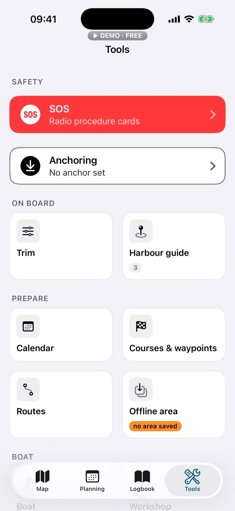
1234
Tools in the Free version, in the demo with an open voyage: grouped by situation, not by object — Safety at the top, “Instruments & analysis” and “App” follow below “Boat” (scroll).
Safety: SOS across the full width — the radio procedure cards, always at the top, always free. Up to version 1.0, Anchoring with the state of the watch stood below it (hidden from the next build, C13).
On board: Trim and Harbour guide — what is needed underway.
Prepare: Calendar, Courses & waypoints, Routes — always in this order; next to them Offline area with the most recently saved offline package, here without a package “no area saved”. “Routes” carries the frame because a voyage is open. Below (scroll) Boat with Boat and Workshop, Instruments & analysis with Instruments and Analyses, and App with Settings and Help & demo.
The tab bar: Map · context slot (here “Voyage” — the demo has a voyage open; without a voyage it says “Planning”) · Logbook · Tools.
Switching boats: the boat name is the title above the logbook and, from two boats on, is also
the switcher — tap it, choose a boat; you will find the same switch under Tools
→ Boat, section “Switch boat”. You may switch at any time, even underway. If a recording is still running
on another boat, the app asks when you cast off instead of quietly
taking it over.
Profile: under Settings → Profile you choose
what you use Etmar for — Racing & training, Cruising, Workshop (the page itself: C16).
Whatever you deselect loses its entry points for creating new items. In Tools the tile disappears
(“Courses & waypoints”, “Routes” or “Workshop”), the others move up in the same order,
and below the grid it says “Hidden in your profile: … — Settings › Profile”; a tap on it opens
the Profile page. Without Racing & training, “New race” and “New training” are also missing from the
logbook menu, and a race event in the calendar shows the sentence “Racing is hidden in your profile” instead of “Start”;
likewise “Regatta” and “Training” are missing while moored, and a training event says “Training is hidden in your profile”. What is already there stays: your races in the logbook, their analysis and the
race record, workshop events in the calendar. Anything running always stays — if you deselect in the middle of the pre-start,
you lose nothing until the race is over, and a running route keeps its tile. Logbook, map
and safety can never be switched off; the demo and the help show everything.
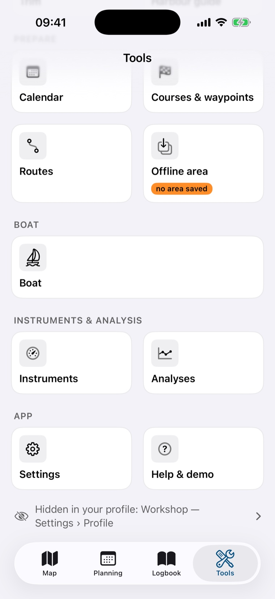
12
Tools with Workshop deselected (scrolled down); the section below is called “Instruments & analysis”.
Boat stands alone across the full width — the “Workshop” tile is missing, the others keep their places.
The row “Hidden in your profile: Workshop — Settings › Profile”; a tap opens the Profile page, where the same switch brings the tile back.
iPad: the same destinations appear as a sidebar instead of a tab bar at the bottom — in landscape at the
chart table the full area stays free for the map. The Instruments button places the values there
beside the map instead of over it.
Night mode: as a moon item in the map’s layers menu and in the menu (⋯) of the logbook and dashboard, or as a switch in
Settings — puts a red filter over the whole app. The “from sunset” automatic switches
on according to the sun’s position at your location. On the SOS page the filter is deliberately suspended.
Under the filter, tier badges (“Pro”) and caveats appear
at full brightness instead of grey, and warnings — “All good — widen circle” on the anchor screen, the
“Location denied” chip, “No GPS fix — ping not possible” — are black areas with an orange border so that
they stand out from the red alarm (MOB, “ANCHOR DRAGGING”). In the dark appearance without night mode, the text on blue areas
(Go-To line, chips, buttons) is black.
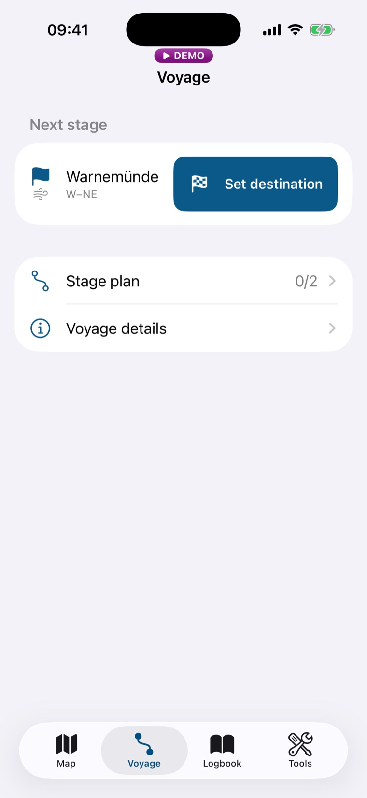
1234
The context slot after casting off: the “Voyage” face.
Next stage from the stage plan, with the wind condition of the option.
“Set destination” — one tap chooses the day’s destination, sets the Go-To and the destination for arrival detection.
Jump to Stage plan and Voyage details.
The second tab is now called “Voyage”; before casting off “Planning”, with a race created “Regatta”.
Underway you are on the map. So that is where the tools are, too.
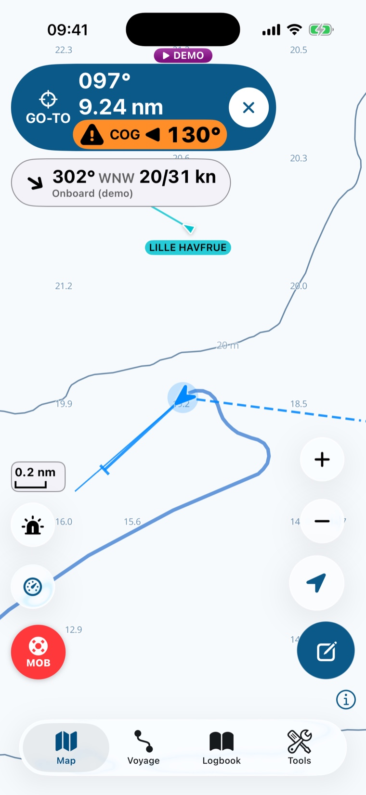
123456
Main map during a running voyage with Go-To to Warnemünde: at the top a single line with destination name, bearing and distance — no destination bar above it, no “Area not saved” notice.
Top bar — here the Go-To line with the destination name; underway it also carries the arrival time as soon as one can be calculated — from the averaged approach over the last few minutes (see C4). In the first minute after setting the destination, after restarting the app and as long as the boat is not closing on average, there is none: the line leaves out the arrival time, and the ETA and TTG tiles show “--”. If the width is not enough, the arrival time gives way — as here, where destination name, bearing and distance fill the line. At most two bars stand at the top; outside the race an alarm such as the CPA warning counts as one of them, in the pre-start and race the race bar is at the very top. A tap on the line expands the full tile.
Left button column: Layers (lighthouse) and the instruments data strip. In the layers menu, below them, are Night mode, “Set anchor” (hidden from the next build) and “Tab bar off” — on the map itself there are only the buttons needed underway. “All layers” and offline saving are under Tools → Settings → Map, “Map centre” under the logbook actions on the round button at the bottom right (6) — only with an open voyage; without a voyage the long press remains.
Zoom +/− — more reliable than pinching when wearing gloves. The map is always north-up and cannot be rotated with two fingers; so it does not need a “north up” button.
Location: centre on the boat and follow; any gesture of your own releases follow mode. During an MOB alarm it fits boat and MOB point into view together.
MOB — hold for 0.6 s. Fixed place, in every mode.
Logbook button (with a voyage) or green Cast off button (without a voyage; casts off with one tap) — the same spot. Underway, “Map centre” is also there under the logbook actions: the long-press menu for the map centre — Harbour, Anchorage, Waypoint, Go To, Route. Without a voyage the long press remains for this.
Tab bar in landscape (no marker, see Landscape below): in landscape the map has its own narrow bar — four symbols in a capsule instead of a labelled band across half the width. In landscape it is collapsed from the start: when you rotate it does not appear at all; at the bottom edge there is only a handle (arrow pointing up) that brings it out. Then it goes again after ten seconds without input or with the first map gesture. Only at the very first launch does it stay while the chart notice or first-run hints are on the map, and goes after ten seconds once they are gone. “Tab bar off” in the layers menu conversely sends it away permanently — what was done by hand does not come back when rotating either; then only the handle brings it back. This only applies to the map; Voyage, Logbook and Tools keep the labelled bar, and in portrait everything stays as before.
The map works without an open voyage too: destinations from the harbour guide as orange dots,
seamarks and depth contours from the loaded areas, your boat as a blue arrow with a COG vector
(six minutes ahead, plotter convention), grey as soon as the position is more than two minutes old.
Then “Fix … min ago” appears at the arrow, and the Go-To line strikes through bearing and distance.
The point card, the card of a tapped harbour and the expanded Go-To tile give the same
minute and keep counting without a new fix.
The COG vector is bolder and ends in a cross-bar: that is where you will be
on the same course and at the same speed once the time has run. You set the time under
Tools → Settings → Map → COG vector to 3, 6 (default) or
12 minutes; the vectors of the AIS targets use the same. At the bottom left, above the map buttons,
there is a scale bar — a round distance in your distance unit (nm or km, under
Settings → Units) that recalculates when zooming and is amber at night;
it is absent in the voyage story.
With a compass on the NMEA network, the
boat arrow turns to the heading (HDG), and underway a thin line in the direction of the bow lies under the COG vector,
reaching beyond its cross-bar — so the bar belongs to the vector alone.
The angle between the two is leeway plus current. If the compass sends magnetic, the map needs the variation (from the bus or under
Settings → NMEA connection → Advanced); if it is missing or the
compass is silent for more than ten seconds, the arrow shows COG as it does without a compass. In demo mode a
simulated compass steers against a simulated current — line and vector diverge by a few degrees.
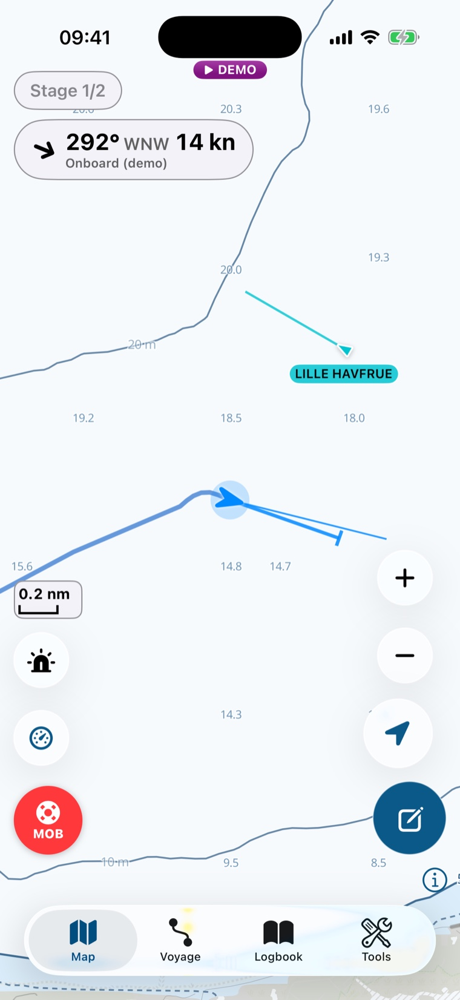
123
Demo mode, zoom 12, COG vector six minutes: the boat is going roughly east over the ground, the simulated current sets it a few degrees off the heading; the thin line reaches beyond the cross-bar.
Scale bar — here 0.2 nm; the length of the bar between the end ticks is the distance.
Cross-bar at the end of the COG vector: that is where you will be after six minutes on the same course and at the same speed.
Boat arrow by heading and the thin heading line in the direction of the bow, reaching beyond the cross-bar — the angle between it and the vector is the set.
The most important moves
Touch and hold on an empty spot opens a round menu: Harbour, Anchorage, Waypoint,
Go To, Route — within the radius of a harbour also POI, with an open voyage with a stage plan also “Stage”.
“Map centre” (under the logbook actions, with an open voyage): the same menu for the centre of the screen — move the map until the
target is under the centre, then underway tap the round button at the bottom right:
the logbook actions → “Map centre”. With wet hands a more reliable move than the long press.
Without a voyage this route does not exist: the green button is then called “Cast off” and casts off immediately.
Location button (bottom right, 60 pt): centres on the boat and switches follow mode
on; any map gesture of your own releases it again. Underway it is already on when
the map opens — provided a voyage is running and the position (no more than two minutes old) shows at least
1 kn of speed, on the first opening after app launch and for the map of this voyage from the
logbook. The boat is then in the centre, with a good nautical mile across the iPhone — close enough for
all seamarks. If the first position only arrives after opening (GPS still without a fix), the map
catches up within the first minute, as long as you have not moved it yourself. In the harbour, while planning and in
the voyage story the map opens with the overview as before; if you then switch between tabs,
the section stays as it was. During an MOB alarm the map does not follow
the boat alone: the button brings boat and MOB point into view together (C13).
Zoom buttons: with gloves, pinching is unreliable. The map always stays north-up — a two-finger move with a wet hand does not rotate it, so boat arrow, AIS triangles and their vectors are always correctly aligned with the map. If a banner at the top reaches down to the button column — such as the MOB banner with the line “Bearing out of date” at large text sizes —, + and − are dropped and the column starts below it; zooming then works with two fingers, in also by double-tap, out with a short tap with two fingers at once. The banner is never shortened for this. If there is still not enough room during an MOB alarm, the round button (Logbook or Cast off) also gives way — with an open voyage Etmar writes the MOB entry itself. The location button always stays: during the alarm it brings boat and MOB point into view together.
Instruments button: places the values next to the map instead of over it — in portrait as a
data strip at the bottom, in landscape and on the iPad as a column on the right. The column starts narrow
(SOG and COG, two tiles one above the other); you make it wider in the layers menu
(“Change column width”, C3), and the sailing compass now only has room in full screen — in a 210 pt wide column it was
smaller than the dial of a wristwatch.
What is at the top and bottom
At the top the context bar: underway destination harbour and stage (the Go-To line carries remaining distance and arrival time to the Go-To destination, see below); in the pre-start
and race instead countdown, distance to the start line, time-to-burn and line bias — the same
figures as in the logbook, just where your boat can be seen relative to the line. A tap opens the
Context tab.
At the top there are at most two bars. Priority goes to the
route planning band, in the race the race bar, then the Go-To line, the “Reverse course?” offer, the
quiet notices (course shown, offline package, missing seamarks) and finally the voyage’s destination bar
— whatever has no room appears as soon as a bar goes. If you are steering to your own
destination in the race and the course offers the next mark at the next rounding, the button for it sits in the
Go-To line next to the ×; your navigation stays. In the pre-start and race
your own destination appears as a narrow line without a blue area below the race bar (“GO-TO Name 266° ·
30.1 nm”), and above the mark name of the race bar it says COURSE — so it is clear at a glance what you are
steering to; a tap expands the line as usual. The distance to the next
mark is shown in whole metres below 0.5 nm (or 1 km), as with the Go-To. An alarm — CPA warning, anchor watch,
MOB — counts as one of the two bars outside the race and stands below the route band, race or
destination bar, ahead of all the others; in the race it is added below the race bar. The CPA warning and
anchor watch share one line: next to the CPA warning the anchor watch becomes a chip, a tap on it
opens it with “Anchor up”; if an MOB alarm is running, both appear as chips above its banner. While an MOB alarm is running, whatever is neither alarm nor navigation rests at the top: the quiet notices, the course offer and the destination bar — in an emergency they are ballast. Warnings — Low Power Mode, missing position, offline without a package, map not loading —
always stand. If a voyage is running, the Go-To line carries destination name, bearing, distance and arrival time; if
the Go-To is the voyage destination or the voyage has none, the destination bar above it is dropped — previously
both showed the same distance. If the Go-To is steering somewhere else, the destination harbour stands above it, as long as there is room
at the top. If the width is not enough, a course error of up to 5° gives way first; if you are more than 5° off,
the name is shortened first, and without an arrival time (the boat is not closing) the warning always
stays. With large text, bearing ends up above distance, without name and arrival time; the course error moves below as a third line (above 5° as a warning), and in the race the course button gives way if necessary (the × leads to the same destination). The line including the × stays in view; in the three largest accessibility text sizes it grows no further. The “Area not saved” notice only appears while no voyage is running — in the harbour, where
you can still load; underway “Seamarks & depths not loaded here” only lets you know,
you can load in the harbour. For now the map does not load seamarks and depths by itself: “not
loaded here” means that no area is saved for the section or part of it (or
its download failed); “Loading seamarks & depths …” only appears briefly after launch, while the app reads in its
saved areas. If “Load map online” is off, it says “Offline maps only …” instead
(C3, “Load online”).
At the bottom right the large round button: without a voyage green “Cast off” (see below),
with a running voyage the Logbook button with the logbook actions as a radial menu.
“Running” means: a voyage is open somewhere – even on another boat,
without a boat or while you are viewing the map of an old voyage. The entry then goes into the
running voyage – the one being recorded, otherwise the one shown, otherwise the one started most recently, as with
MOB –, and “Cast off” only appears again when no voyage is open any more.
If the entry does not go into the voyage the map is currently showing, the
undo bar names the target too – for example “Engine on logged · Ansegeln NSV” –, and VoiceOver says it
on the Logbook button. If the map writes into the voyage shown, the bar names only the entry. If there is no
boat at all, Radio, Trim and Entry are missing from the radial menu; instead it offers “Add boat”.
“Map centre” is also in the radial menu; without a voyage the long press remains for this. The Cast off and
Logbook buttons sit in the same place so that your thumb does not have to learn the spot again. MOB and anchor watch keep
their own buttons in a fixed place — they must be hit blind.
The green button is called “Cast off” and does what the button in the logbook does: one tap starts the
voyage and recording immediately, with no form and no dialog, using the engine or sail choice from the logbook.
For six seconds the undo bar “Voyage started” appears at the bottom — a tap on it reverses an
accidental touch.
You create races and training sessions via the menu at the top right of the logbook, destinations at the map centre without a voyage
via the long press. Only with the focus “Regatta” (Settings → Display)
does the button first ask “Race …” or “Cast off”. If no boat has been created yet, the button does not cast off but
opens the “New boat” form — a voyage needs a boat, otherwise it would have no logbook and no “Mooring”. After
saving, the next tap casts off.
“Mooring” when stationary. When the boat is stationary — recording pauses after 30 minutes
below 1.5 kn —, a second round button with the chequered flag appears to the left of the Logbook button. One tap closes
the voyage like “Mooring” in the logbook: mooring entry, backdated to roughly the time the boat came to a stop, voyage closed,
recording off. For six seconds the undo bar “Voyage closed” reverses this. A voyage over several
days asks, as in the logbook, whether only a stage ends or the whole voyage. Underway the button is not there — an
accidental tap in a swell does not close a voyage —, during a race only after the finish. A voyage without recording knows
no standstill; you close it in the logbook. If a voyage without a boat is running that the logbook does not show,
this button closes it.
Landscape: the map gets the space
In landscape the map is wide and flat — every band across the full width costs more there than
in portrait. That is why the screen looks different in landscape: the tab bar is a capsule with four
symbols without text. When you rotate into landscape it is collapsed straight away — rotating is the statement
“I want map area”. The handle at the bottom edge brings it out; it then stays for ten seconds
and goes immediately as soon as you touch the map. The map buttons move
up while the capsule is showing, so that they do not end up underneath it. The undo bar
and data card leave room on the right for the button column; the column no longer rises around the undo bar.
While the bar or card is showing, the handle waits instead of lying over
“Undo”. If a widened instruments column leaves too little room next to the left row of buttons,
the undo bar sits above it instead of next to it, so that “Undo” stays legible.
In landscape the anchor banner also ends before the button column – “+” does not lie over
“Anchor up”. This applies as long as the banner has enough width next to it: if the
instruments column is set wide, it runs across the full width – otherwise only the first letters of the state
“Awaiting GPS” and of “End” in the MOB banner would remain –, and the button column starts below it. If the column does not fit in the height together with a data card, the
+ and − buttons give way until there is room again; zooming then works with two fingers, in also by double-tap,
out with a short tap with two fingers at once.
In landscape the data card takes up at most just under half the height; whatever does not fit,
you scroll within the card. It sits next to the left row of buttons or, if there is too little room
beside it, above it – like the undo bar. If it still gets tight, the track legend is the first thing to drop
out of the column. If the banner runs across the full width with a very wide column,
data card and button column then sit side by side in landscape: the column starts at the bottom, the
data card may reach up to below the banner and notice, and the track legend gives way while
the data card is open. With very large text, the anchor banner puts the
settings button and “Anchor up” on a line of their own below state and distance – in portrait as in
landscape –, and in landscape the MOB banner also puts the crosshair and “End” below bearing and distance; this keeps
both unshortened. In the MOB banner this no longer depends on the text size:
if the header does not fit on one line, the crosshair and “End” go below it – in every orientation,
in landscape next to a wide instruments column even at the standard text size, and bearing and distance stay at
full size. The banner gets taller for this; in landscape the “Area not saved” notice gives way
while the banner is showing. With the instruments column set wide, the
data card in landscape then only gets the rest below the banner: while the tab bar is showing,
from the second of the larger text sizes its header with name and ✕ is also cut off; once the
bar is collapsed again, the data card gets that height back. The location button always stays; the round button only gives way during an
MOB alarm, when the banner lies over the column and there is no other room (see Zoom buttons above).
If the banner lies over the column, the capsule only lifts the column as far as there is room up to the
banner – the column stays at least 8 pt below it, “Anchor up” and MAYDAY stay clear,
even with very large text. If there is not enough room, the column rises less, and the capsule lies
in front of the lowest button of the column for its ten seconds.
The instruments column sits
on the right next to the map and is narrow by default: SOG and COG, two tiles
one above the other, large digits. You make it wider in the layers menu (“Change column width”, three
steps), and remove it completely with the same button you used to bring it up.
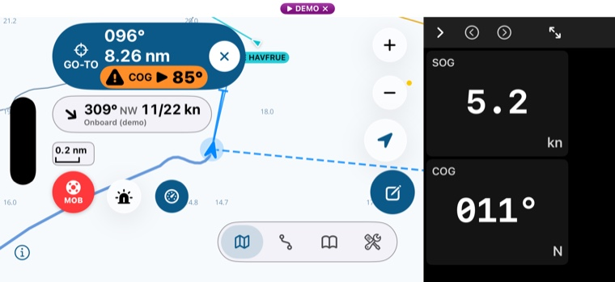
1234
Landscape in demo mode: tab capsule instead of tab band, instruments column on the right, map in between. The course line to the Go-To destination is dashed, the COG vector solid.
Tab capsule — four symbols without text: Map · context slot · Logbook · Tools. Collapsed from the start in landscape; the handle (arrow pointing up) brings it out, after which it goes after ten seconds or with the first map gesture.
Instruments column — narrow by default with SOG and COG. The arrow at the top left collapses it, the symbol next to it opens the full-screen dashboard (where the sailing compass is too).
Buttons move out of the way — MOB, Layers and Instruments move up while the capsule is showing, and back down when it goes.
Context bar — here the Go-To line; notices and warnings stack below it, never behind it.
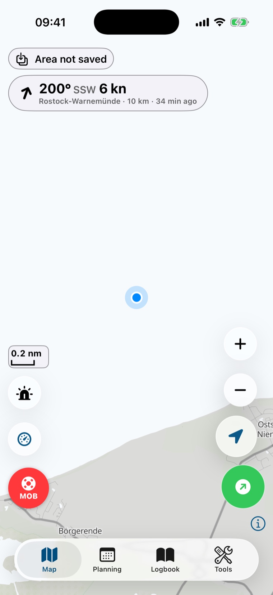
1
One tap casts off: the green Cast off button without an open voyage.
Cast off — voyage and recording start immediately, with no form and no dialog; for six seconds the undo bar “Voyage started” reverses an accidental touch. You create races and training sessions in the logbook via the menu at the top right; only with the focus “Regatta” does the button first ask “Race …” or “Cast off”.
No mode survives an app launch: whoever opens the app at night gets the navigation map, never
a tool from yesterday.
Two tiers, one rule. In the beta you can try out both.
Everyday use on board is free. Pro is the analysis afterwards — what a start, a manoeuvre, a rounding
cost you — and, on the onboard network, the sailing compass. Up to Build 42 there was a third tier in between, Plus; its on-board features are
now free, its analyses belong to Pro.
Safety is always free — MOB, SOS, AIS warning; the anchor alarm and depth alarm are currently hidden (C13).
Free on board, Pro afterwards: everything that runs during the session — recording, navigation,
instruments from the iPhone and from the onboard network, warnings, live values in the race — is free. What a race
leaves behind in facts also stays free: times at the marks and per leg, distance at the gun, tacks
and gybes, SOG history, boards, zones, the side at a passing mark. Pro passes judgement: against the polar,
against other sessions or as a loss. On board, everyday use is free and anything further is Pro: sailing compass, custom instrument pages, Smart fields and the Regatta page with VMG against the polar; the four standard pages with all values from the onboard network stay free. Locking happens in the page manager, never on deck.
No gate on the way out — export, report and sharing are free, including the map image in the
report; analysis pages in the report contain what your tier has.
Tier
What it contains
Free
Everyday use on board: logbook with Auto-Tracking, trim diary, harbour guide, safety, workshop,
calendar; map with seamarks, depths and offline packages without limit, routes, AIS with CPA warning,
laylines; NMEA connection (2000 and 0183) with dashboard and standard pages; races with
countdown, line bias and live values in the race. Afterwards: key figures and facts of the race analysis,
measured runs with duration, polar diagrams, PDF report with map image, voyage story, GPX export.
Pro
The analysis after the session. From the iPhone GPS: race map, time-loss waterfall, start summary,
manoeuvres with cost (without a wind sensor with estimated tack), leg summary, rounding quality and finish approach, form curve and learning curve,
figures per measured run with A/B comparison. With wind from the onboard network as well: polar performance, VMG, wind &
shifts, sailed polar, sail crossover, tack asymmetry and the other boat analyses.
On the onboard network: sailing compass, custom instrument pages, Smart fields and the Regatta page.
Pro is available as a subscription: yearly (€24.99 with a 14-day free trial) or monthly (€4.99). You can try everything beforehand in demo mode (A4). If the subscription expires, logbook, voyages, tracks, trim entries, offline maps and safety remain usable; only the Pro features are locked, nothing is deleted.
Locked analyses never disappear silently —
and they do not stand individually between the free rows either. Per screen they are gathered in one
collapsed row at the end of the list, with a counter: “6 more analyses with Pro”, below it a sentence on
what Pro brings here and where the values come from. A tap expands it, each
row leads to the Pro overview. In the analysis hub the page is long — there the row stands at the end of each category’s section (“2 more with Pro”), not once at the end of the page. On the live screens — map, dashboard, pre-start,
anchor alarm — there is no tier: what may be missing there is data, and the screen says so with
the source, for example “needs NMEA” on an instrument tile.
A Pro notice in the app always says where the values come from:
“From GPS: start, manoeuvres (port or starboard estimated), legs and roundings. Polar, VMG, sailing compass and shifts need wind from the
onboard network.” If a single analysis needs a specific sensor, it is named on the row, for example
“Pro · wind sensor (NMEA)”. If you have Pro and only the data is missing, the row says so without a tier:
“Needs wind from the onboard network at the track points.” In this handbook Pro appears as a badge after the
heading; whatever carries no badge is free.
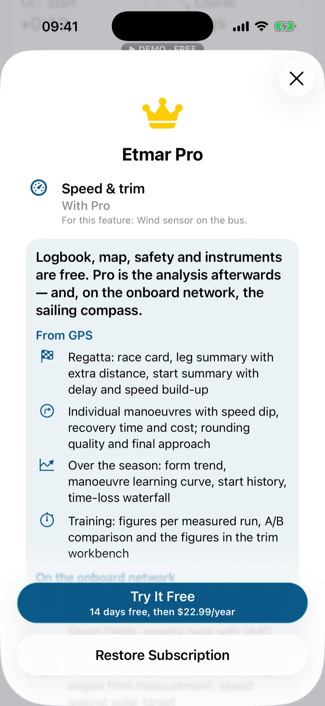
12
“Etmar Pro”, opened here without a running demo via Settings → Tier & demo. Coming from a lock row, the feature you came from also appears above it, with “With Pro”. The purchase button and prices come from Apple; language and currency follow your App Store account.
The card — “Logbook, map, safety and instruments are free. Pro is the analysis afterwards — and, on the onboard network, the sailing compass.”, below it what Pro calculates from GPS; further down follows what is added on the onboard network (sailing compass, custom pages, Smart fields and Regatta page; polar, wind & shifts, boat).
The purchase — the button gives the price and trial period of the selected subscription, below it Restore. If you scroll to the end of the page, both subscriptions are there to choose from, the links to the privacy policy and terms of use and, without a running demo, “Try in demo mode”: the button closes the sheet and starts the demo, or the app says why not right now (A4). If the demo is running as Free, a sentence above the purchase says where to switch it to Pro.
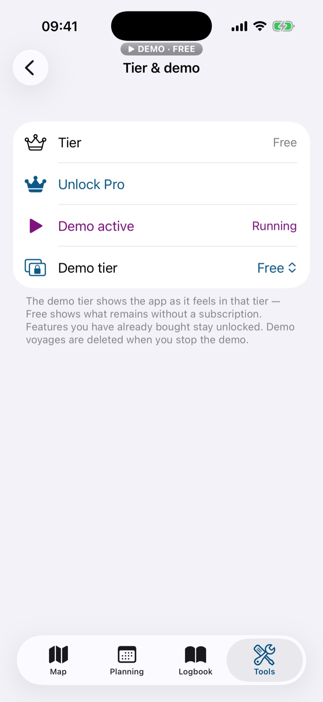
1234
Settings → Tier & demo in the Free version, here with the demo running and demo tier Free.
Tier — which one currently applies, here Free.
“Unlock Pro” — opens the purchase; with an active subscription it says “Manage subscription” here.
Demo active — the demo is running; without it, it says “Start demo” here.
Demo tier — Pro or Free, here Free: this is how the app shows what remains without a subscription. Only in the race demo does “Regatta demo” appear below it, for switching between pre-start and race running (C16). The sentence below says that the demo deletes its voyages when it ends; without a running demo it says instead what the tiers are — Free: everyday use on board; Pro: the analysis after the session, from GPS and with wind from the onboard network.
In the beta
Under Settings → Tier & demo, with the demo running, you can choose the
demo tier: Pro or Free. This lets you try out both tiers without buying
anything — including tier rows and the Pro overview. That is exactly what it is for: in the Free version,
do you miss anything on board? And after the race, do you understand what Pro would tell you beyond the facts?
Every area of the app in one article: what it does, how to use it, what you can check while testing. Screenshots with numbered highlights — the list next to them explains the numbers.
C1Logbook & voyage
From casting off to the finished voyage report: how a voyage is created, what you record underway with one tap, how recording runs in the background and how you rework track and entries at leisure in the harbour.
In the harbour: “Before departure”
The logbook has two faces. When the boat is moored, the top shows what matters at the pontoon.
First the answer to “Can I go?”, large and with a symbol: “Ready to cast off”
with a tick, otherwise “One item open” or for example “3 items open” with a warning triangle (with
a question mark if only unresolved items are open) – counted as in Planning; a notice with “i”
does not count. Below that the items of the departure checklist that are still open, then the choice
cast off under engine or sail, the berth (name from the harbour guide, otherwise
the place name) and the GPS row with the age of the last fix (under one minute “Fix
just now”, after that in whole minutes that keep counting without a new fix, orange from two minutes
on). Up to Build 43, berth and fix age (row “Last fix”) are at the top and the choice
of engine or sail at the bottom, and “Ready to cast off” only appears when nothing is open.
Below the header – and below the “Current harbour” block when you are in a harbour – is
the same row as in Planning: “Next event: title · day · time”; with no event in
the next seven days, “No event in 7 days — open calendar”; a tap opens the event
as in the calendar, or the calendar (C15). Before a boat’s first
voyage, “Today” with “Regatta” and “Training” and this row appear below the “No voyages”
notice — so the first training session works without the menu (⋯). The
departure checklist is only here – before the first voyage as a block above the “No voyages” notice –,
and it only shows what concerns you today: offline map for the area, location “Always”,
maintenance due, Low Power Mode; with an upcoming race the course, with a set-up NMEA gateway
(or with Pro) missing polar data, with a set-up gateway the remaining capacity of the raw recording —
the data source decides, not the tier. In Free without a race and without a gateway that is
at most four open items. If equipment or a sail is being serviced or is lent out, “Off the boat” is added (“Liferaft with Seaservice Kiel”, “2 items off the boat”) and leads to the equipment — an item that only your own entry creates and that “Back” resolves with one tap (C10). The
Planning view in the context slot now only gives the number of open items and leads here with one tap.
If you have never answered the question about the iCloud backup, you also see a notice with “i”
instead of a warning triangle, which does not count as an open item; a tap leads to
Data & privacy. If you have deliberately switched iCloud off, you see
no row – that is a choice, not an omission. Cast off, Anchor and MOB
sit fixed at the bottom edge in the thumb zone and do not scroll away — even before a boat’s very first voyage. With very large text all three stay fully in view: the labels of Cast off and Anchor stop growing beyond the second-largest standard size, at the larger text sizes from the second step on Anchor and MOB sit one above the other – MOB on the right below, 60 pt as always –, and the “No voyages” notice before the first voyage can be scrolled when it no longer fits above the bar. If an MOB alarm is running, its banner – bearing, distance, time, “End” and “Radio” – appears at the very top of the logbook even before the first voyage, above the “No voyages” notice. If iCloud is still loading your boat’s voyages after a reinstall, Anchor and MOB are at the bottom – casting off is then only possible via “Cast off anyway” in the notice, so that no second open voyage is created next to the synced one. Without a boat created – for example after “Continue from iCloud”, before your boats have arrived – Anchor and MOB are at the bottom, without Cast off: a voyage needs a boat, Anchor and MOB do not. When the anchor is down, the tile shows its state, and a tap on it opens the anchor alarm; the anchor banner then appears on the map. When a voyage is running, the
map carousel takes the place of the header, and the quick buttons are below it. Their labels also stop growing beyond the second-largest standard size: at the larger text sizes no word breaks in the middle any more, the rows stay flatter, and Entry and Radio move up. The arrangement stays – MOB as a red circle at the top right, 60 pt as always. The undo bar after casting off likewise only grows up to this size. Equally capped are the buttons of a running race (pings, sync, ±5 min, recall, marker, event, engine, sail, trim), the run button in training and the status line, for example “Auto-Tracking active” with the number of track points – up to Build 35 words broke in the middle there at the larger text sizes. Under “Recent entries” – and likewise in a voyage’s entry list – at the larger text sizes the date sits below the entry type instead of to its right, and speed, course and wind are stacked; up to Build 36 words and times broke in the middle there.
The map of the last voyage is no longer on the start page: in the harbour the track
of a closed voyage answers no question. It lives in the voyage list under “All voyages” – there
every voyage carries the shape of its track as a small image, next to it date, duration and miles. The shape
is recognised faster than the name: the zigzag of a beat, the triangle of a race course.
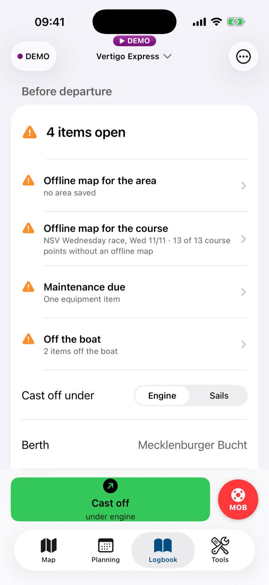
123
The logbook while no voyage is running: at the top what matters at the pontoon – at the bottom the one control that gets you going.
Before departure — at the top the answer, here “4 items open”, below it the items of the checklist that are still open (here: no offline map for the area, none for the course of the Wednesday race, one maintenance item due and “Off the boat” with the two items the demo has put into servicing and lent out; each row leads to where it can be fixed), then the choice engine or sail – under sail with the sail combination; berth, the GPS row and “Next event” follow when scrolling. If everything is fine, “Ready to cast off” appears at the top. The checklist is only here; Planning in the Context tab only gives the number of open items. If a race of your boat is in the calendar in the next seven days, a row “Offline map for the course” is added as long as the course is not covered: the berth is in the harbour, the course three miles off it — all marks of the stored course are checked (for lines both ends, each position only once) plus the four corners of the course with two nautical miles of buffer, each point individually, so that an approach package over the windward mark does not pass as “covered”. The marks alone decide the warning; if only the buffer for the approach and start area is partly uncovered, the course counts as covered. The row then appears as a notice with “i” in the list — “Approach and start area only partly covered” — and leads to the offline maps, but does not count as an open item. If the event does not have a course yet, the row says so and leads to the calendar. It needs no GPS fix; you can deal with it at home the evening before — that is also where the Wi-Fi for loading is.
Cast off — the one control, fixed at the bottom in the thumb zone and the only colour-filled area on the screen. Below it it says what it records: “under engine” or “under sail”. Up to version 1.0 a separate row with “Anchor” and MOB stood below it; from the next build the anchor is hidden and MOB sits next to “Cast off”.
MOB — hold for 0.6 seconds. Even without an open voyage: man overboard while motoring out happens before anyone has tapped “Cast off”. Alarm and bearing then work just the same. There is only a logbook entry if a voyage is open – then also one of another boat (C13). If the alarm is running, the “ACTIVE” tile appears here instead of the button, as in the bar with a voyage – holding a second time can no longer move the point and time.
Casting off – one tap or none at all
One tap on Logbook → Cast off is enough (on the map it is the green Cast off button with the same single tap, see B2). The app immediately creates the voyage and the first entry of type “Cast off”. No form opens, everything else happens by itself:
GPS position, course and speed are captured in the background and filled in.
The voyage is named after the nearest place (e.g. “Voyage Kühlungsborn – 08/08/2026”), the entry is then called “Departure: Kühlungsborn”.
The sails last set on the previous voyage are carried over – without downwind sails, nobody casts off with a gennaker.
Auto-Tracking starts immediately.
Under sail, a “Sails” row appears in the checklist with the combination that was last up (downwind sails stay out). A tap opens the same sail list as the sail change underway – with wind fit, if the wind is known. The choice goes into the cast-off entry so that sail comparison and sailed polar later know what was up.
Casting off under engine (segment in the checklist above, default engine) additionally creates an “Engine on” entry: the harbour exit counts as engine distance from the first second (yellow on the map, engine hours in the statistics), and the engine button then stands at “Engine off” for the moment the sails go up. The choice applies equally in the entry form (type “Cast off”) and for automatically detected casting off; the app remembers it.
You can add weather, images or notes at any time later via the entry under “Recent entries”. A voyage closed by mistake can be reopened in the voyage details – important for multi-day voyages. “Reopen” removes the end date and brings recording back to this voyage – provided no other voyage is being recorded and the last entry is not a mooring (after a mooring things continue as always with the next “Cast off”); 6 s undo as when closing.
Motion autostart. Even if you tap nothing, you get a logbook: if Auto-Tracking is active but there is no cast-off entry yet (“Waiting for departure”), the app watches the GPS. If the boat makes way continuously for more than a minute (above 1.5 kn), a cast-off entry is created automatically – backdated to the start of the movement – and recording begins. The minute’s grace filters out warping in the harbour and GPS outliers. A notification on the lock screen confirms: “Departure detected – auto-tracking is now recording.”
NoteAutostart requires the app to be receiving NMEA data at that moment (a real onboard network or demo mode). Only then is it certain that the phone is moving with the boat – phone GPS alone cannot tell a car or bike ride from a boat trip. Without NMEA data the status line shows “Waiting for departure entry”, and the voyage starts via the Cast off button or a manual entry.
Underway: the quick buttons
As soon as a voyage is open, the map runs edge to edge at the top of the logbook and scrolls along when you scroll the page. It is sized so that the large action buttons are ready without scrolling even on small devices; its footer shows the voyage name, speed and course. A tap takes you to the voyage details. Underway you can also reach the same actions directly on the map via the logbook button at the bottom right (B2).
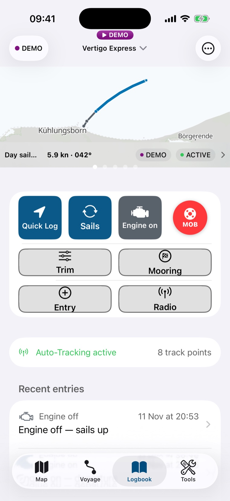
12345
Logbook underway: the edge-to-edge map, below it the three controls with MOB, the quiet row and the recent entries.
Voyage map — edge to edge, flatter underway; in the footer the voyage name, duration and, on the right, speed and course. A tap opens the map full screen.
The three controls — Quick Log (one tap, one position entry), Sails (tap the wardrobe) and Engine on/off. Large, because you need them every few minutes.
MOB — hold for 0.6 seconds. A circle, so it can’t be confused with any rectangle (C13).
The quiet row — Capture trim and Mooring (up to version 1.0 “Anchor” between them, hidden from the next build), below them Entry and Radio. Outlined rather than filled: needed less often, but just as easy to hit.
Recent entries — this is where you later add weather, photos and notes to each entry.
Size tells you how often you reach for it.Quick Log, Sails and Engine
are large in the first row — these are the every-few-minutes controls —, with MOB to the right
as a red circle. Below, flatter and outlined, what is needed less often: Capture trim,
Anchor, Mooring, Entry, Radio. Colour now only carries state: Engine turns yellow while it
is running, the anchor gets a green edge when it is set and a red fill when it is dragging.
At 25 knots at night you find the right one by its position — under the red filter colours
make no difference anyway, and in the sun they wash out.
Quick Log: one tap, one position entry with the current GPS position, course and speed. Sails and the weather free text come from the last entry; wind only fresh from the NMEA network (at most 60 s old), otherwise the field stays empty – old wind values are never carried forward, and that also applies to sail changes and the entry form. No form, haptics confirm.
Sails: tap the current wardrobe, done. Every sail row can be tapped across its full width (tick on the left); with five sails or more the sheet opens straight to full height instead of half. Creates an event entry with the new sail combination. Afterwards a bar “Capture trim too” is offered for ten seconds: a tap creates a trim draft with the new sails and opens the form – change first, then trim. After “Cancel” no bar appears.
Entry: the full form for an event entry – type, time (can be backdated), title, GPS (automatic, can be corrected manually), sails, weather/wind, images from the gallery or camera, and notes.
Engine on / Engine off (yellow/grey): one tap immediately creates the matching engine entry, no form. The button always shows the next action and glows yellow while the engine is running. The stretch between “Engine on” and “Engine off” is yellow on the voyage map.
Radio: opens the entry form with the type “Radio call” – station, channel and what was agreed go into the note. Radio contacts belong in the logbook; in a dispute, the record is what counts.
Mooring: the finish with one tap. On a day sail the app closes immediately (arrival entry, backdated to when the boat stopped, an undo bar instead of a confirmation). On a multi-day voyage – open stages or a start before today – a dialog asks: “Mooring (stage)”, the voyage stays open, or “Close voyage”.
MOB and Anchor are also in the button group, in a fixed place – both are described in C13. “Trim” captures the current trim and belongs to the trim diary.
Wind as a suggestion. When you create an entry, a grey suggestion appears in the empty wind and wind direction fields – the current value of the nearest station (DWD, DMI; in Sweden the SMHI, in the USA the NOAA buoys and coastal stations, there at measurement height, not converted to 10 m), otherwise from the GFS weather model, the same one as “Wind now” at the top of the map (C3); below the section it says where it comes from. It only goes into the entry with “Apply” in the header of the Weather section – nothing is saved before that. Without a network the last fetched value is shown as long as it is at most three hours old, and the line below the section then gives its age; otherwise the fields stay empty. The app no longer queries Apple Weather (up to Build 43 the suggestion came from there, with gusts, pressure and weather conditions). Without an onboard network, gusts, visibility, temperature and weather conditions are manual entries; pressure is pre-filled by the sensor in the iPhone (see below). With onboard electronics on the NMEA network your own instruments take precedence: bus wind and bus barometer fill the fields, and when the voyage is closed the wind of the departure and arrival entries is averaged from the first and last ten minutes of the recording respectively – the momentary value in the harbour is gusts and shelter, the average out on the water is the honest wind. Wind entered by hand always stays as it is.
Pressure from the iPhone. If no barometer on the onboard network is supplying fresh pressure, the app pre-fills “Pressure (hPa)” with the sensor in the iPhone – also in the short form, which saves the value with it. Next to it is the label “iPhone” as long as the pre-filled value is unchanged in the field; the onboard barometer gets no label. A value from the onboard barometer counts as fresh for 10 minutes after it arrives – pressure changes over hours, and the 1–2 hPa offset from the iPhone would be larger than what happens in that time; a short gap in the Wi-Fi therefore does not switch to the iPhone, but disconnecting does. In the Weather section (behind “More”), new entries then show the “Tendency” line – arrow, word and number, for example “↓ falling quickly · −1.4 hPa/h” – and the curve of the measured time, at most three hours. The tendency applies from one hour of measurement; before that the line says how much longer. The word follows the number shown: below 0.2 steady, up to 1.0 slowly, up to 2.0 quickly, above that very quickly (hPa per hour). Tendency and curve always come from one source, onboard barometer or iPhone, never mixed. Measurements are only taken while the app is open or a recording is running, every five minutes. The sensor can differ from the onboard barometer by 1–2 hPa, and 8 m of height difference makes about 1 hPa – the tendency is reliable as long as the iPhone stays at the same height. iOS asks for the “Motion & Fitness” permission at the first new entry without pressure from the onboard network; if it has been denied, the footer says where to switch it on. When editing an entry there is no pre-fill, tendency or curve – they belong to “now”. Only the value in the field is saved, pre-filled in whole hPa – no tendency, no curve.
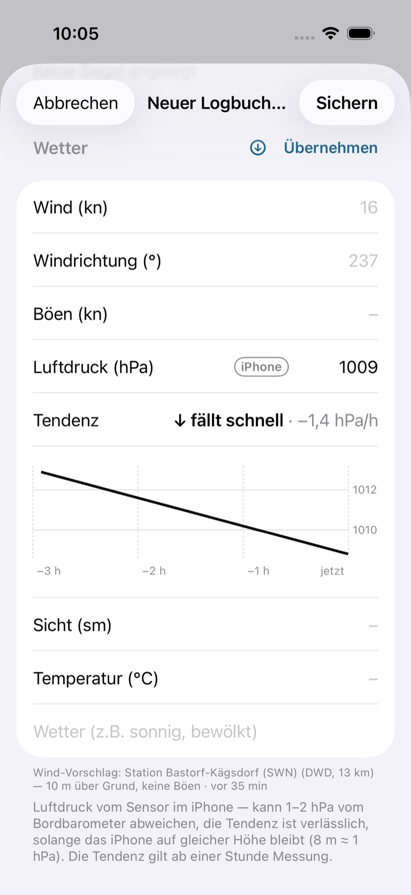
1234
New entry without an onboard network, Weather section behind “More”. Pressure, tendency and curve come from a simulated sensor here; the grey wind suggestion is a real station value.
Pressure — pre-filled by the sensor in the iPhone, with the label “iPhone” next to it; from the onboard barometer without a label.
Tendency — arrow and word in bold, the number in hPa per hour after them; from one hour of measurement.
Curve — the measured time, at most three hours, from “−3 h” to “now”.
Source — where the value comes from and how far it can differ from the onboard barometer.
Photos are stored entirely in the app: each image is scaled to screen size when saved and stored locally – it is sharp even without a network and is kept if the photo library is tidied up later. Etmar does not access the other photos on the device; photos taken with the camera are also saved to the library. With several images in one entry: touch and hold an image and choose “As preview image” (star) – this image appears as a photo pin on the map.
Mis-taps without consequences. After every one-tap action – Quick Log, Engine on/off, Cast off, Close voyage, pinging the start or finish line – a large undo bar appears at the bottom edge for 6 seconds; the whole area can be tapped. A tap reverses the action: entry deleted, voyage open again and tracking back on, ping back to its previous state. There are deliberately no confirmation dialogs before the action – they cost glance time on deck; undoing afterwards is the better protection. In the dialog “Complete open voyage?” (for a regatta “End running regatta?”) closing is deliberately not red — as everywhere, the undo bar afterwards carries the weight.
Forms protect what you enter. Swiping down or “Cancel” asks for confirmation in every form as soon as there really is something unsaved in it – and only then; unchanged forms close with one tap. Number fields accept both comma and point. And saving never fails silently: if a database save goes wrong, a red bar “Saving failed — the change may be lost” appears on every screen, tap to dismiss, otherwise visible for 8 seconds.
All entries can be edited afterwards. That is the intended way: only the essentials at sea, fill in the rest at leisure in the harbour.
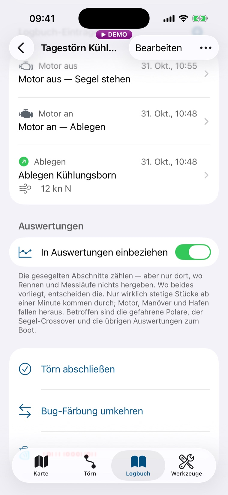
12
The entries of a voyage: type symbol, time and – where available – wind. Every entry can be tapped and edited afterwards. The symbol only carries colour where it means something: Cast off green, Engine grey.
Engine entries — one tap each on the Engine button; the stretch in between is yellow on the map.
Departure entry — automatically named after the place, with wind (“12 kn N”).
Further down in the voyage details: Close voyage sets the end date and stops tracking; reopening is possible at any time. Invert tack colouring swaps the red/green assignment of the tack colouring on the voyage map; the colouring itself needs wind data from the NMEA network.
Auto-Tracking
Where the position comes from. If the boat is on the NMEA network, the app records the position of the boat, not of the phone — an antenna on deck or at the masthead sees more sky than a phone in an oilskin pocket. If the gateway fails, the phone takes over writing immediately; the track never breaks off. Map, voyage header, instruments, MOB and the watch all show the same source — previously the voyage header could show “0.0 kn” while the tiles showed five knots. The raw data export states for each point where it came from.
Auto-Tracking records the route in the background as GPS track points – even with the screen locked and after an app restart. It is activated automatically when you cast off (in the entry form, too, the switch is always “on” for a new departure entry – important on multi-day voyages, because arrival stops tracking) and works economically with adaptive intervals:
Underway (above 1.5 kn): one point every 30 seconds, every 5 seconds in races.
When stationary: every 5 minutes. After 30 minutes without movement tracking pauses automatically (one point every 10 minutes) and resumes immediately once the boat is moving.
Saving is done in batches of 10 points – which saves the battery further.
The status line in the logbook says what is happening: “Active” (green, with track point counter), “Waiting for departure — starts automatically when underway”, “Paused” or, in red, “No location permission — nothing is being recorded” with a direct jump to the iOS settings. Storage errors and active Low Power Mode are shown too. With an NMEA connection and a wind sensor, the true wind and the tack (starboard/port) are also stored with every track point – the basis for tack colouring and race analysis. The position always comes from the iPhone GPS: if the NMEA connection drops, recording continues seamlessly; for tack colouring and analysis the last known wind data is used for up to 30 minutes, after which the points stay without wind rather than guessing with outdated values.
Robustness and diagnostics. While recording, a significant-location anchor runs: if iOS terminates the app (memory pressure, crash), a significant change of location wakes it up again, and tracking is restored when the process starts – not only the next time you open it. If there is no GPS fix for 5 minutes, a notification warns you. All state changes, app launches, foreground/background, GPS permission, GPS silence and storage errors end up in the log under Settings → Tracking diagnostics – a text file, shareable, without positions. This lets gaps be explained afterwards.
ImportantRed in the status line means: nothing is being recorded. With “No location permission” the jump leads straight to the iOS settings; active Low Power Mode is shown too. Check the status line once after casting off – one glance before the phone goes into your pocket.
End of voyage: stage or final
When mooring, the app distinguishes two entry types: “Mooring (stage)” for an intermediate stop – recording stops, the voyage stays open, and the next morning you carry on without detours – and “Arrival” for the final mooring, which closes the voyage. Both can also be chosen in the entry form; a manually created “Arrival” also closes the voyage.
Most important rule: every automatically detected arrival is a stage mooring. The automation never closes a voyage by accident, and nobody has to reopen it. It only becomes final automatically at the final destination:
Final destination: In the voyage form (Voyage details → Edit) you set a destination harbour – usually the harbour you started from – with an arrival radius, optionally with a “Return from/until” period. If the boat arrives there after having left the radius once (and, if set, within the period), the closing “Arrival” is created and the voyage is closed.
Stage detection: If the boat reaches the arrival radius of the chosen stage destination or of the tracking destination, a “Mooring (stage)” is created automatically and recording stops. The radius is enough for this, even at full speed. Only the place where you cast off counts here, too, only after you have left it: if yesterday’s destination is still in the voyage on the second morning of a multi-day voyage, the first fix does not stop recording. If you cast off via the form of a new departure entry, a line below the destination says that you are inside its radius. Harbour guide destinations, on the other hand, only count if the boat enters slowly (below 1.5 kn): sailing quickly past a harbour entrance triggers nothing, and the departure harbour only counts after you have left it once.
Standstill suggestion: If the boat has been stationary for more than two hours, the app suggests closing the voyage – as a button in the logbook (“Arrived? Complete trip”) and as a notification on the lock screen. Closing creates an arrival entry backdated to the moment the boat came to a stop. The suggestion stays as a highlight on the Mooring button. While the anchor watch is set, the app does not ask: the notification and button stay off, and the logbook shows a quiet line instead; after “Anchor up” the two hours start again. “Mooring” on the map remains.
Choosing a destination: For the final destination, the day’s destination and stages, the harbours, marinas and anchorages from the chart data are available alongside your own harbour guide and the place search – offline, sorted by distance, tappable directly on the map. A harbour chosen this way goes into the harbour guide with its category, VHF/berth note and a suitable arrival radius (anchorage: 150 m instead of 90 m). Unnamed anchorages are simply called “Anchorage”; areas marked as no-anchoring are not offered at all.
123
The context tab with the “Voyage” face: the short way to the stage destination, stage plan and voyage details while underway.
Next stage — destination harbour with wind range; “Set destination” makes it the voyage destination and the Go-To; distance to go and arrival time then appear at the top of the map in the Go-To line.
Stage plan — intermediate stops and final destination of the voyage, see C2.
Voyage details — summary, export, map and all entries.
Lock screen: Live Activity and notifications
While recording, a Live Activity runs on the lock screen and in the Dynamic Island: sailing boat symbol, voyage name, the distance sailed since the last cast-off (in nm, large on the right) and the average speed since casting off in the status line (“Ø 5.2 kn since casting off”). As long as no distance has accumulated yet, the track point counter is shown on the right. In races it shows the countdown to the starting gun to the second and, after the start, the running race time. Put the phone down, a glance is enough – and the glance is honest: if there is no update for 15 minutes (app crashed or terminated by iOS), the display dims and says “No current data — open the app” instead of continuing to claim “Recording”; the compact island symbol becomes a grey exclamation mark instead of the green recording dot.
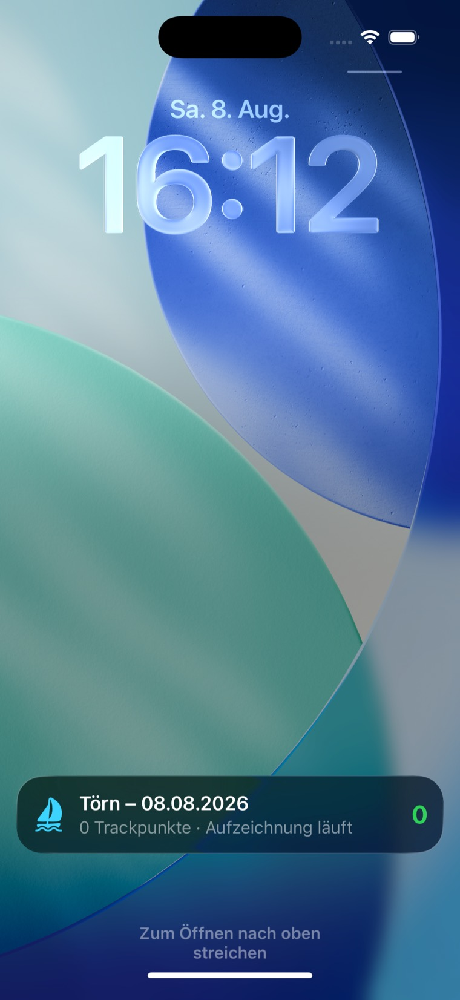
12
Live Activity straight after casting off: the voyage status can be read without unlocking.
Voyage name and status line — track points or, later, “Ø … kn since casting off”; if there is no update for 15 minutes, the display dims and asks you to open the app.
Large value on the right — the distance sailed since casting off in nm; as long as there is no distance yet, the track point counter.
So that you can trust the phone in your pocket, the app reports important events with local notifications (no server, no data sharing):
Tracking problems: track points cannot be saved; GPS permission was revoked; no GPS fix for 5 minutes.
“Finish trip?” after two hours stationary – works even if iOS has terminated the app.
Regatta: start of the pre-start phase and the starting gun. In addition, a notification one minute before the gun, and the pre-start notification gives the chosen pre-start duration instead of always 15 minutes.
Permission for notifications is only requested when tracking or a regatta is activated – not at app launch.
Voyage details: export, map and post-editing
You reach the voyage details from the carousel (tapping the preview opens the voyage map, “Back” leads to the details), via “All voyages” or via the “Voyage” context tab. It brings together everything about a voyage: summary (status, period, duration, distance, avg SOG, engine time, max wind, sail combinations used), the stage plan, the Auto-Tracking switch, the map, the daily report, pressure and all entries in chronological order. “Edit” opens the voyage form, in which you set the final destination and the return period.
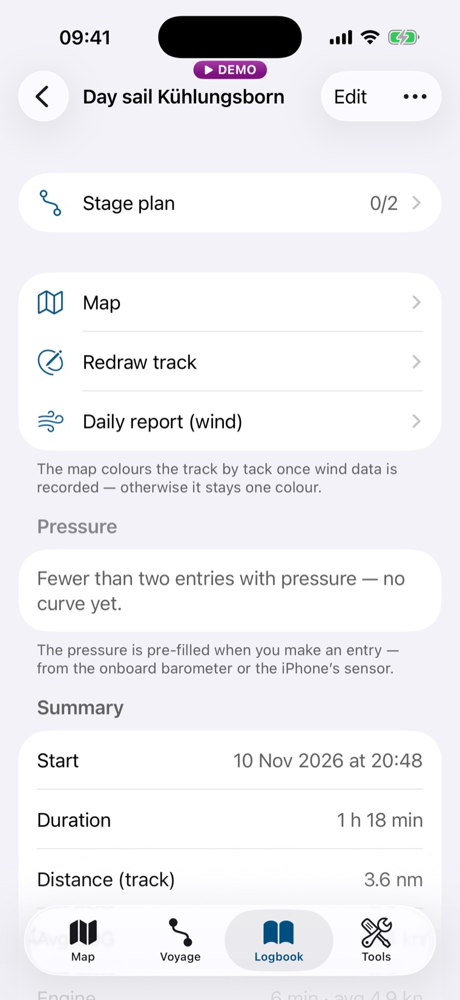
123
Voyage details of a day sail: access to the stage plan at the top, below it the summary; further down come tracking, map and entries.
Edit — voyage form with final destination (destination harbour with arrival radius) and “Return from/until”.
Stage plan — intermediate stops and final destination of the voyage, see C2.
Summary — start, duration, track distance, avg SOG, engine time with avg speed, max wind, sail combination and note.
Export via the share menu in the voyage details – everything goes through the system share sheet:
Logbook as text (.txt) – all entries as plain text.
Track as GPX – the recorded track as a GPX file.
Raw data (CSV) – every track point as a table row: time, position, SOG/COG and, where an NMEA bus was recording, STW, HDG, wind, heel; gaps stay empty rather than invented. For races additionally Mark times (CSV) with the stamped roundings and leg times. Comma-separated with a decimal point, for Excel, Numbers or Python.
PDF voyage report – A4; page 1 with a map image of the track, key figures (distance, duration, avg/max SOG, sailed, engine), a regatta line and notes; from page 2 all entries in chronological order with position, SOG/COG, wind, pressure, weather, sails, note and up to three photo thumbnails. The map image is on page 1 in every tier — offline from the saved map packages, otherwise from the network; if it cannot be loaded, a track sketch with a north arrow appears there instead. The Wind section on page 1 shows the wind from the NMEA network where it was recorded, otherwise the wind from your logbook entries — averaged, with the maximum, the direction where noted and the number of entries —, and without either, a sentence explaining why it is empty. If the track carries no wind and the voyage has hourly wind from a station or the model, that comes before the entries — in the same order of precedence as the daily report, with its header (“Wind from station”, “Wind from model”) and its caveat including the source note: the average over the hours, the mean direction and, only with hours from a station, “to” with its strongest value — not a gust; what it measures is stated in the caveat. If you have entered the wind for every hour yourself in the logbook, the wind from the entries is kept.
Voyage story (image) – a 1080 × 1350 portrait image: map at the top, a dark panel with name, date, distance/duration/max SOG, for sharing in messengers or social media.
The report and story are deliberately free – they carry the voyage to the crew and the club.
Share report. Once the voyage is closed, the row “Share report” appears at the very top of its details, with “PDF voyage report or story image” below it. A tap opens the choice of “Voyage report (PDF)” – for a regatta “Race report (PDF)” – or “Story (image)”, and the choice opens the share sheet; while the map image is loading (up to 10 s), “Creating report — map image loading …” appears at the bottom. With an open voyage the row is missing: the report comes once the voyage is closed – on a day sail with “Mooring”. Without opening the details, it works under Logbook → All voyages: touch and hold the voyage – the “Share” menu offers the same two choices. The share menu at the top right stays as it is.
The voyage map opens zoomed so that the complete track is in view, with numbered pins for each entry (a tap opens the details including photos). For a running voyage underway it opens on the boat instead, with follow mode already on (B2); the voyage story still shows the whole voyage. The pins scale with the zoom: close in, large with a number; zoomed far out, small dots in the type colour. Only types for which colour means something carry it – Cast off and start green, Arrival and Mooring (stage) amber, course mark yellow, Engine grey, man overboard as the only red; position, event, radio, tack and gybe are neutral grey, at night light with a black number. The symbols in the entry list carry the same colours. Entries with photos show their preview image instead of the dot when you zoom in, with number and outline in the event colour; further out they remain dots with a camera symbol. Direction arrows along the track show which way the boat was sailing. Engine stretches are always yellow. With wind data the track is coloured by tack (pastel shades; default: red = wind from starboard, green = wind from port; can be inverted via “Invert tack colouring” in the voyage details, and the legend always shows the current assignment) – beats and gybes can be seen at a glance. If the track stays one colour, the legend – where there is one – says that this voyage did not record any wind; without a legend the sentence appears in the voyage details. In addition, a small arrow sits at every change of tack; when you zoom out the markers disappear again, otherwise the beat would be buried under them. What a manoeuvre cost and whether it was a tack or a gybe is in the race analysis – the map only shows the where. The daily report shows the true wind for each hour with a direction arrow and avg/max speed, grouped by day on multi-day voyages. Above the chart it says where the wind comes from — “Wind from the onboard network”, “Wind from station”, “Wind from model” or “Wind from the logbook”. Without a wind sensor, for new voyages the app fetches the hourly wind of the nearest station (Deutscher Wetterdienst, DMI; in Sweden the SMHI, for voyages in the last 120 days, in the USA NOAA buoys and coastal stations, for voyages in the last 45 days) or of the GFS weather model as soon as it is opened with a network after the voyage; the top then says “Wind from station”, below each hour the station and distance (“Pelzerhaken · 2 km”) or “Model”, and the source in the footer. Wind you have written into the logbook by hand takes precedence. The fetch can be switched off under Tools → Settings → Data & privacy with “Wind from open sources”. The image below shows the daily report of the demo evening race. With an open voyage, the open stage destinations appear as turquoise flags on the map; closed voyages show no destinations. Event pins can be edited directly from the map sheet (“Edit” button) – also on closed voyages. Harbours, seamarks, your own boat and all map controls behave exactly as on the main map (B2, C3).
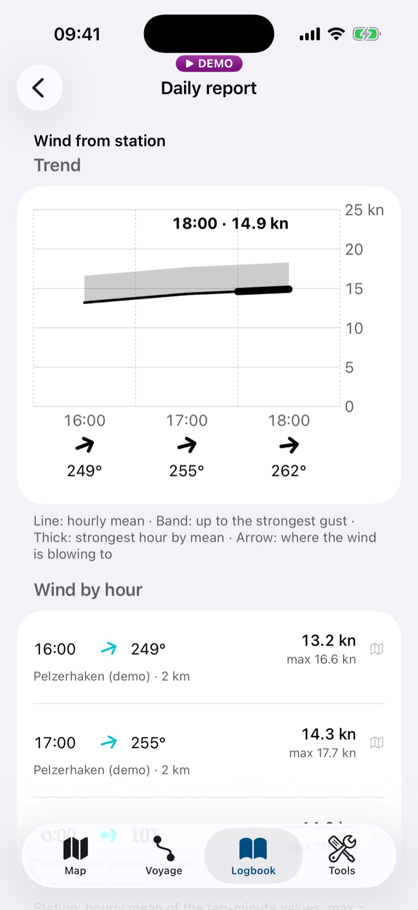
1234
Daily report of the evening race without a wind sensor (demo values).
Source — above the chart and the hours, here “Wind from station”; otherwise “Wind from model” or both, with a wind sensor “Wind from the onboard network”, from the logbook “Wind from the logbook”. The footer at the bottom says how to read the values and names the source.
Chart — line: mean per hour, band: up to the strongest gust, thick and labelled: the strongest hour by mean.
Direction — for each hour the arrow showing where the wind is blowing to, below it where it comes from in degrees; here the wind shifts by about 13° over three hours.
Per hour — station and distance from the voyage, here “Pelzerhaken (demo) · 2 km”; from the weather model it says “Model” and there is no “max”.
Pressure. After the map and the daily report, the “Pressure” section shows the barograph of the voyage: one point per logbook entry with pressure, joined by straight lines – between two entries nobody knows how the pressure went. The steepest fall is drawn thick and labelled; below it are “Steepest fall” with times and hPa per hour, and “Over the voyage” with the first and last value. The app calculates the fall over at least 30 minutes, so that 1 hPa between two entries in quick succession does not become a storm; if the pressure only rises or stays the same, it says “no fall”. No entry, no point: the curve is as dense as your logbook. With fewer than two values the section stays in place and says where the pressure comes from. The demo voyage “Kühlungsborn – Gedser – Kühlungsborn” contains demo values.
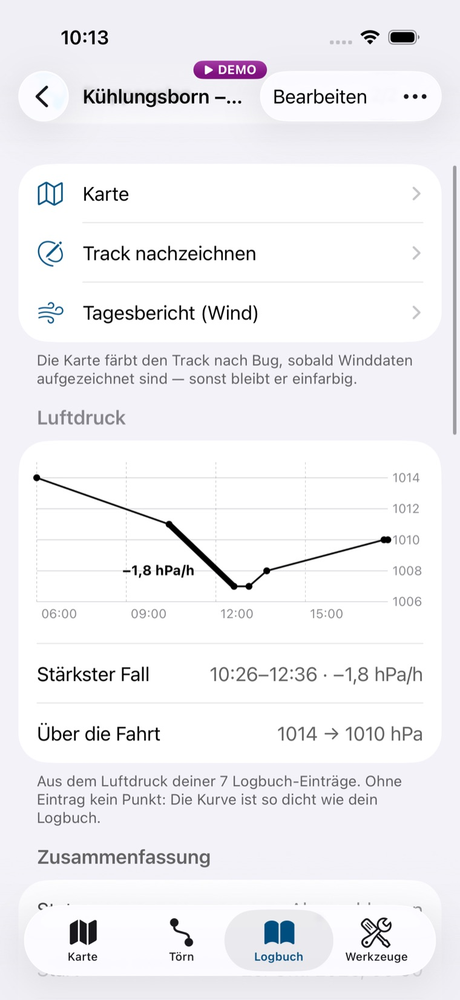
123
“Pressure” section in the demo voyage Kühlungsborn – Gedser – Kühlungsborn (demo values).
Barograph — one point per entry with pressure, joined by straight lines; the steepest fall thick and labelled with hPa per hour.
Steepest fall — times and rate; without a fall it says “no fall”.
Over the voyage — first and last value of the voyage.
The button at the top right switches to the voyage story: a single-colour track, events as photos with numbers, direction arrows – the tidy view for remembering and sharing (e.g. by screenshot), without legend, stage destinations and harbours; inspecting track points with a tap remains. The choice is remembered per voyage, and the map opens next time in the view last chosen; the default for voyages without their own choice is set by “Map opens with” in the settings.
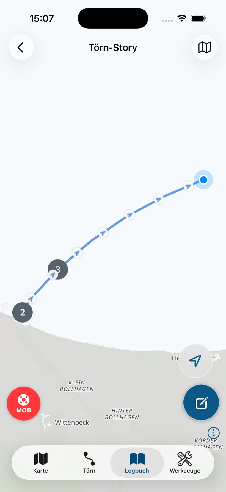
123
Voyage story of a running voyage: a track in one colour, numbered events, arrows in the direction sailed – nothing else.
Toggle — switches between the voyage story and the technical view with legend, tack colouring and stage destinations; the choice is remembered per voyage.
Event pins — numbered in the type colour; entries with a photo show their preview image when you zoom in. A tap opens the details including photos.
Direction arrows — show along the track which way the boat was sailing.
Post-editing. The principle “only the essentials at sea, finish the rest at leisure in the harbour” also applies to the track itself:
Track point inspection: Tap anywhere on the track – the nearest track point shows a small boat pointing in the direction of travel, next to it a discreet arrow from the direction the wind was coming onto the boat at that moment. The data card at the bottom of the map gives time, SOG, COG, true wind and tack (wind from stbd/port). “Create entry here” turns it into a logbook entry after the fact – time, position and speed data of the track point are pre-filled.
Redraw track: The drawing map also shows seamarks, depths and – for a race – the course with its dashed connecting line, and the existing track is fully visible – without both you would be drawing blind, and the straight line across a gap is almost never the route actually sailed. If a section is missing (tracking forgotten, no GPS), “Redraw track” in the voyage details finds the gaps automatically: time jumps of more than 10 minutes as well as missing pieces before the first and after the last point. Only what also covered distance counts as a gap (at least 250 m) – time spent in harbour or at anchor does not show up as pseudo-gaps. Choose a gap, set points with a long press; they join up in the order they were drawn. Times and speeds are calculated back from the drawn distance and the speed of the edge points (fallback 5 kn, capped at the duration of the gap – gaps with time moored do not produce crawls lasting days), the wind of the edge points is interpolated and provides the tack colouring; a wind direction entered by hand takes precedence. If the gap contains time moored, the sailing time is placed at the matching edge and the seam is closed with a stationary point – no remaining gap is left. Redrawn sections stay recognisable: thinner and paler on the map, marked as “reconstructed” in the track point card.
Gap list with suggestion: Gaps of the kind “Probably sailed continuously” (course before and after the gap fits the connection – up to 45° each side –, plausible speed of 1.5–12 kn, line not into the wind) you fill after a visual check with one tap on “Apply connection” – without setting points. The connection is not a hard straight line: the course vectors before and after the gap are extended until they meet, and the intersection becomes a curve – the track looks as if it had been drawn through (without course data still a straight line). “Redraw manually” (mooring and casting-off manoeuvres, course changes in the gap, beating against the wind, breaks) remains handwork; the reason is given at each gap.
Gap caused by casting off: If the movement autostart only began recording once the boat was underway, the short stretch from the berth is missing – recognisable by the departure entry in the gap window. “Correct departure & fill in” moves the departure entry to the berth (the mooring position before it) and fills the stretch with a straight line – timed from the moment of casting off, so the time at the berth does not turn into a crawl. If more than about 2 km of distance is missing, the gap deliberately stays with “Redraw manually”. A departure entry moved afterwards is also detected as a gap; when filling in, the times are calculated backwards and the entry’s time is moved along with it.
Choose a section freely: Tap two points on the track and redraw the stretch between them – for instance to replace GPS outliers or zigzag. The existing points between the edges are only replaced after explicit confirmation; the edges themselves are kept.
Move an entry’s position: In the edit form of an entry, “Choose Position on Map” opens a map with the voyage track as a reference. A long press sets the new position (pressing again overwrites it), “Use this position” confirms – more precise and quicker than typing in latitude and longitude.
Coordinates by hand: Under “Edit manually” you type latitude and longitude as an absolute value in decimal degrees (comma or point) and choose the hemisphere next to it – N or S, E or W. This also lets you enter western longitudes and southern latitudes, for example in the English Channel. The hemisphere preselected is that of the position entered; if the field is empty, that of the most recent entry with a position in the voyage, otherwise N and E.
NoteTo try it without a gap of your own: the demo voyage Kühlungsborn–Gedser contains a 29-minute dropout on the downwind board – ideal for playing through “Apply connection” and manual redrawing once.
Test
Cast off once with the button and once just by setting off (NMEA has to be running for this): are the departure time, place name and the sails carried over correct? Did the notification “Departure detected” arrive?
Phone in your pocket, sail for a few hours, then look at the track: are there gaps? If so, please share Settings → Tracking diagnostics straight away and say whether the phone was locked, in Low Power Mode or without a network in between.
At the destination: did stage detection or the standstill suggestion hit the right moment – and did the automation never close the voyage without asking?
On the voyage, the stage plan answers the question “Where to next?” — planning is done at home, the decision is made at sea with one tap.
Where to find it
The stage plan belongs to a voyage. You open it via Voyage details → Stage plan; the row carries a progress indicator, e.g. “2/2”. With a running voyage, the “Voyage” context field also shows the next open stage directly — more on that below.
Planning ashore
A stage plan is a sequence of stages in a fixed order. Each stage can have one or more destination options — that is the core: “With a westerly to Gedser, with an easterly to Klintholm.” Which option applies you only decide on the day itself.
Create a stage via the + at the top right. The stages are numbered consecutively and form the order of the voyage.
Choose a destination: “Add destination” leads to the search or into the harbour guide. A harbour from the harbour guide brings its arrival radius with it — the app needs it later to detect the arrival.
Optionally set a wind condition: a direction sector from–to in eight compass points (also across north, e.g. NW to NE) and a maximum wind speed. “Max 25 kn” means: from 25 knots this option is no longer a recommendation. Add notes too, for instance on the course or the approach.
Create further options with “Add alternative” — each with its own destination and its own wind condition.
Via the … menu of a stage you move it up or down, tick it off by hand, reopen a ticked-off stage or delete it.
At sea: one tap
During the voyage the “Voyage” context field shows the next open stage. If it has several options, the app asks “Where to today?” — one tap chooses the day’s destination. If wind data is available (NMEA or demo), the app marks the option that fits the current wind with “matches the wind”. The marking helps with the choice; you still tap by hand.
Linked to Go-To and arrival
“Set destination” means navigating, not just booking. Choosing an option therefore does two things at once:
Go-To active. The map shows the course line to the destination; the plotter tiles provide BRG, DTW, VMC and TTG.
Destination for Auto-Tracking. The app now knows the destination harbour including its arrival radius. When you sail in, it detects the arrival, ticks off the stage and makes the next stage active — without you having to do anything in the stage plan.
Changing your mind has no consequences: if the wind shifts or the plan changes, you simply tap a different option. Go-To and destination follow.
Stage destinations on the map
With an open voyage, the voyage map shows the open stage destinations as turquoise flags: the chosen destination bold, alternatives muted. Completed stages and closed voyages no longer show destinations — the planning is done, the track tells the history.
Stages can also be created directly on the voyage map, without going through the list:
Tap a harbour → As stage destination.
Long press on a free spot → Stage. The app fetches the place name by geocoding, and the harbour guide is updated automatically. A stage set this way gets a 300 m arrival radius.
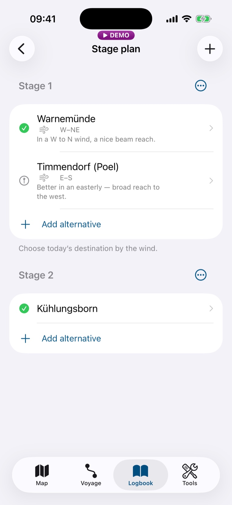
12345
Stage plan with two stages: stage 1 has two destination options with a wind sector (Warnemünde with W–NE, Timmendorf with E–S), stage 2 a fixed destination.
Plus — creates a new stage.
… menu of the stage — move up/down, tick off, reopen, delete.
Chosen option — green tick, below it the wind sector and note. This is the current day’s destination; Go-To and Auto-Tracking point here.
Alternative — muted with a pin symbol; a tap in the “Voyage” context field (“Where to today?”) makes it the day’s destination.
Add alternative — a further destination option for the same stage.
TestIn demo mode or on a voyage of your own, create a stage with two options and different wind sectors: is the matching option marked “matches the wind” in the “Voyage” context field? Does a tap on the option immediately set the Go-To on the map? And is the stage ticked off by itself after you sail into the arrival radius, so that the next stage becomes active?
What layers and styles the main map offers, and how to save your cruising area so that the map, buoys and depth contours are there at sea even without a network.
ImportantEtmar is no substitute for a nautical chart or a chartplotter — it records what has happened. The map is based on OpenStreetMap: seamarks are community data, the depth contours come from a model with a grid of about 100 m (EMODnet). Neither is an official source, and neither is corrected according to Notices to Mariners. Dashed depth contours marked ≈ are approximate — close to the shore, in poorly surveyed or unassessed areas and where the grid is coarse. The app shows this notice once when the map is first opened (“Got it”); it is permanently available under Settings → About & legal and in the “Main map” tutorial.
ImportantAIS warning and MOB help — they are no substitute for a watch or a lookout. They can fail: battery flat, iOS terminates the app, no GPS, onboard network gone, device out of earshot. The AIS warning only sees vessels that transmit AIS. (from the next build) The anchor watch, depth and wind alarm are hidden; up to version 1.0 the notice named them too. The app shows this safety notice once at first launch, directly after the chart notice, and once on its own after the update; it is permanently available under Settings → About & legal and in the “Limits of the alarms” tutorial.
Wind now
At the top left of the map, in every situation – in the harbour, underway, in the pre-start and in the race – there is a small capsule “Wind now”: an arrow that flies with the wind, plus direction (“from”, true, with the compass point small next to it, for example “220° SW”) and speed in knots, large enough for a glance. With very large text the compass point is dropped and the degrees remain. Below that, quietly, the source and, from 20 minutes on, the age of the value. With very large text, direction and knots take priority: the source then gives whole kilometres (“Falsterbo · 9 km”) and wraps into a second line if necessary, and the capsule stays entirely in view. The order of precedence: onboard network, if a wind sensor is supplying fresh values; otherwise your set wind (valid for one hour, direction only); otherwise the nearest station (DWD or DMI, in Sweden the SMHI, for example “Falsterbo · 9 km”, in the USA and on the Great Lakes a NOAA buoy or coastal station, for example “44013 Boston · 12 km”; name and distance are shown); otherwise the GFS weather model. The app queries station and model every 15 minutes when online – only the station ID or grid cell goes out, no position, and none of it is saved. Without a network the last value stays with its age; after three hours the capsule shows “—”. A station counts when fetched as long as its latest value is at most an hour and a half old – otherwise the app asks the second-nearest station and then the model. Stations that only report once or twice an hour (all of the SMHI’s, some NOAA coastal stations) count for two hours: their new value only appears a while after the full hour (at the SMHI a good 20 minutes after it), and until then the capsule stays with the station instead of briefly jumping to the model. A tap opens a sheet with source, distance, time of reading and the caveat: DWD and DMI stations measure at 10 m height on land, NOAA stations at their measurement height (buoys 3–4 m), the model calculates on a grid – general mean wind, no shifts, no wind shadow. If the sheet shows a station, its gust in knots appears below the speed, for example “Gusts 17 kn” – the highest up to the time of reading: at DWD and DMI from the last 30 minutes, at NOAA the peak of the reports within it, at the SMHI from the last full hour. If the gust has a different time of reading from the mean – for example at the SMHI, when it appears later –, that time is shown with it (“Gusts as of”); if the station reports none, the line is missing. If the sheet shows the onboard network, “Gusts” is the highest 3-second mean of the true wind from your wind sensor in the last 10 minutes – the gust as defined by the WMO, without a time of its own; the line only appears once at least 5 of those 10 minutes have been received. The model and the set wind have no gust. The model brings its calculated gust with it: if the sheet shows the model, it is under “Gusts”; alongside another source it is under “For comparison” as “Model gusts” – an estimate for the model hour, not a measurement. If it is gusty at a station or on the onboard network, the capsule also writes the gust next to the wind, for example “14/22 kn” – for a station measured against its mean, for the onboard network against the ten-minute mean of your wind sensor, by the same rule as “mean/gust” at the stations of the wind layer (below); the number before the slash remains the current value. With the model and the set wind it stays at one number. In demo mode the onboard network blows a few gusts every 30 minutes; after a good five minutes the gust usually stays in the capsule for a while (with very little base wind the margin is not enough). In the sheet the speed is also given in Beaufort, for example “9 kn (3 Bft)” – the capsule stays with the one number in knots. If the capsule shows the onboard network, set wind or a station, below it “For comparison” shows the GFS model at the same place, for example “GFS model here · 190° · 11 kn (4 Bft)” with “00 UTC run · grid mean wind” below it: this lets you see whether the station matches the general situation or whether land is sheltering it. The model value is only fetched when the sheet is opened, and only once per model run, hour and grid cell (only the grid cell goes out); until it arrives it says “Fetching model …”, and without a network, in Low Data Mode, without a position or with “Wind from open sources” off, the reason is given. If the capsule already shows the model, the line does not exist – it would be duplicated. In demo mode a demo value is shown with “(demo)”, without fetching. That is also where “Set wind” is, the wind rose from the pre-start. The sheet is ordered by glance time: values, “For comparison”, “On the map”, without an onboard network directly afterwards “Set wind” with its footnote. The caveat below is a line that expands and is collapsed when opened – “General mean wind, not at the boat — more”, with the onboard network (once there are gusts) “Highest gust in the last 10 min — more”; expanded, the sentence reads as before. If a value is missing, the sheet says why (switch off, no network, no GPS fix, no station in range). The switch is now called “Wind from open sources” (Settings → Data & privacy) and applies to the capsule, the wind suggestion in the entry and the hourly wind after the voyage.
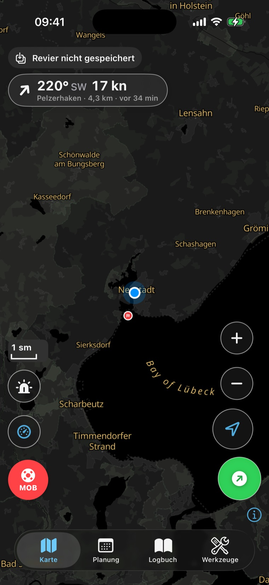
1
Neustadt harbour without a wind sensor: the capsule carries the wind of the nearest coastal station — direction, speed, source, age.
Wind now — the arrow flies with the wind (here from 220° SW, so towards the north-east), 17 kn; below it the source “Pelzerhaken · 4.3 km” and “34 min ago”. A tap opens source, time of reading, caveat and “Set wind”.
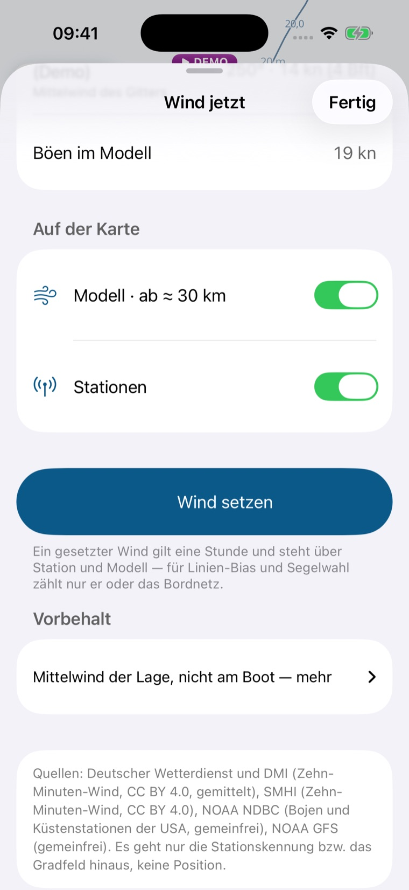
12
The sheet behind the capsule, without a wind sensor (demo station Pelzerhaken), pushed up: below the values, “For comparison” and “On the map” comes “Set wind” directly, below it the caveat as a single line.
Set wind — the wind rose from the pre-start, directly below the switches; the footnote below says that a set wind is valid for one hour and takes precedence over station and model.
Caveat — one line, collapsed when opened; a tap expands the full sentence on measurement height, gusts and model. With an onboard network the line reads “Highest gust in the last 10 min — more”.
Wind layer
For planning – where is it blowing more, how does the wind shift across the bay? – the lighthouse menu has “Wind” with two switches that you turn on separately: “Model · from ≈ 30 km” for the arrows of the weather model and “Stations · every zoom level” for the measured values; by default both are off. The same two switches are also in the sheet of the “Wind now” capsule under “On the map” – a tap on the capsule, then the switch; whatever is on there carries the tick in the menu. If “Wind from open sources” is off, the way to Data & privacy appears there instead of the switches. From about 30 km map width, at every grid point of the GFS weather model (every 0.25°, in the Baltic about 28 × 16 km) there is an arrow that flies with the wind, with the whole number of knots to its right; below 2 kn a circle. Zoomed further out, there is only an arrow at every 2nd, 4th, 8th or 16th grid point (every 0.5°, 1°, 2° or 4°), with the value of exactly that point, not averaged – so the arrows stay about a centimetre apart on the screen, right out to the whole Baltic, in portrait as in landscape; further out still they move closer together again. Coastal stations of DWD and DMI (also those of the SMHI in Sweden, in the USA NOAA buoys and coastal stations) in the view (at most ten; as far apart from one another as the model arrows – if two are too close, the one nearer the centre of the screen stays) carry an arrow, a dot and knots above, and displace model points right next to them. They appear at every zoom level, even zoomed in off the harbour, and if a measured value is 20 minutes old or older, its age appears below it (“27 min ago”, from two hours “2 h ago”). Model and stations are grey below 17 kn and above that carry the colour of their base wind, at night both amber – the dot on the marker tells the station apart even without colour; see “Colour and symbols”. Below the “Wind now” capsule a line says what the arrows are: “Wind · GFS model, 06 UTC run”, from 20 minutes with the age, in demo mode “Wind · demo field”; without a field it gives the reason (switch off, no network, no model run reachable), and zoomed in it says nothing – “from ≈ 30 km” is already said by the switch. If the grid is thinned out, the line gives the spacing of the arrows (“· Arrows every ≈ 30 km”, east–west in the centre of the map, rounded to 5 km) – that is the closer spacing: north–south the arrows stand further apart, because a degree of latitude is longer than a degree of longitude. If one of the two layers is on but “Wind from open sources” is off, it says at every zoom level “Wind layer: “Wind from open sources” is off — Settings → Data & privacy”, and a tap on it opens Data & privacy. A tap on an arrow or a station opens the sheet with direction, speed, source, time of reading and caveat – titled “Wind at the grid point” or the name of the station, without “Set wind”, because it is the wind there, not at the boat. If a station is in a harbour, at another destination or next to a seamark, the tap opens the station; anchor, AIS targets, route waypoints, course marks and logbook entries take precedence over it. The speed is also given in Beaufort there, and the sheet of a station compares “For comparison” with the GFS model at the station itself. If the station reports gusts, they appear there as in the “Wind now” sheet (“Gusts 17 kn”, with a different time of reading with “Gusts as of”). Data is only fetched while the map is open and “Wind from open sources” is on, not in Low Data Mode: the model field at most once per hour and view, each station at most every 15 minutes, nothing is saved. Without a network the field stays until its model hour is three hours in the past; if you switch “Wind from open sources” off, it is gone immediately. In demo mode, without a network, the layer shows a built-in field around the Bay of Mecklenburg and three stations (Rostock-Warnemünde, Gedser, Lolland Falster) with invented values – the field with “Model”, the stations with “Stations”, see “Colour and symbols”; the sheet then shows “(demo)” after the source.
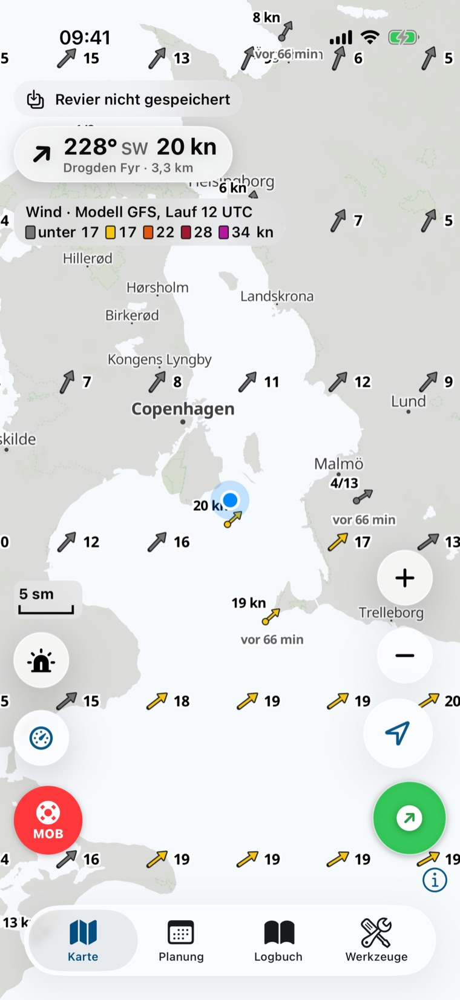
1234
Øresund with a network, zoomed out, both layers on, south-westerly of about 20 kn: the model at every grid point (every 0.25°), grey up to 16 kn, yellow from 17 kn, plus the stations.
Legend — says what the arrows are: GFS model with run and, from 20 minutes, the age, in demo mode “Wind · demo field”; when thinned out, with the spacing of the arrows (for example “Arrows every ≈ 30 km”; here every grid point is still shown); after that the grey field “under 17” and the four colour fields.
Grid point — the arrow flies with the wind (here from the south-west, so towards the north-east), next to it the whole number of knots; grey below 17 kn. A tap opens “Wind at the grid point”.
Station — arrow with a dot at the end in the colour of its mean, here yellow, as long as a model arrow, with the knots above (here 19 kn); a tap opens the sheet with the station’s name.
Age — from 20 minutes, below the station it says how old its measured value is (here “66 min ago”).
Wind layer: colour and symbols
The number on the arrow comes first – in sunlight, at night under amber and with colour vision deficiency the layer says the same without colour. By day and in the dark appearance, model arrows and stations also carry the colour of their mean wind by Beaufort, as you know it from wind maps – only from 17 kn; below that they are grey: yellow 17–21 kn (Bft 5), orange 22–27 kn (Bft 6), dark red 28–33 kn (Bft 7), magenta from 34 kn (Bft 8 and above). So colour means: from Bft 5 (in Build 46 seven bands, including blue-violet up to 6 kn, blue 7–10 kn and green 11–16 kn). The colour follows the whole number on the arrow – “16” is never yellow –; a station goes by its mean. Every symbol has the same fine edge, almost black by day, almost white in the dark appearance – so every symbol stands out against water and land (in Build 46 the edge switched between light and dark per band). Signal red does not appear: the orange is redder than that of the warnings, the dark red darker than the alarm red. The symbols are slimmer so that the planning layer is not louder than seamarks and boat, and the number is neutral: black by day, white in the dark appearance, amber at night – equally legible in every band (in Build 46 it carried the colour of its band). You recognise a station by its shape: by the dot at the end of its arrow – the arrow itself is as long as a model arrow –, both in the colour of its mean; without a direction, just the dot (in Build 46 a circle with a dark edge in the middle of the arrow). If it is gusty there – the gust reaches at least 1.4 times the mean and 6 kn more; both conditions, because the factor alone triggers in a calm (4/6 kn) and the difference alone in strong wind (26/32 kn is steady wind) –, the marker shows “mean/gust” instead of “17 kn”, for example “17/24”, calculated with exactly these whole numbers; if the station reports no gust, it stays with the mean. There is no longer a wreath of rings; the second number tells you the gustiness (in Build 46 the gusty station carried one ring, the very gusty one two). The gust only goes away below 1.3 times or a 4 kn difference, so that it does not flicker with the rhythm of the measurements – which is why “12/17” can stand on the marker. At night everything is amber: then the number alone tells you strength and gust. A tap on a symbol opens its sheet; it registers within 28 pt of its centre. Zoomed out with “Model”, the line under “Wind now” carries, except at night, a grey field “below 17” and four colour fields with the start of each colour band (“17 · 22 · 28 · 34 kn”; in Build 46 seven fields from 0 kn); a tap on the line opens the “Wind layer” legend with bands, Beaufort, station, gust, rule and caveat. The sheet of a station with gusts explains “mean/gust” at every zoom level (under “Gust on the marker”). Caveat: gusty at a land station in offshore wind mainly shows the station’s location, not the water – in one measurement week in October, land stations such as Fehmarn and Darßer Ort were gusty or more 67 to 71 per cent of the time, the sea station Drogden just under 10 per cent. The gust per station comes in the same 15-minute cycle as the mean, with the same station identifier; the model brings its calculated gust in the same request, and in the sheet of a grid point it is under “Gusts”. In demo mode the built-in field, zoomed out, ranges from a calm in the south to 35 kn in the north, and three stations with invented values show the gust: Rostock-Warnemünde calm (“12 kn”), Gedser gusty (“17/24”), the Lolland Falster airfield inland very gusty (“10/21”).
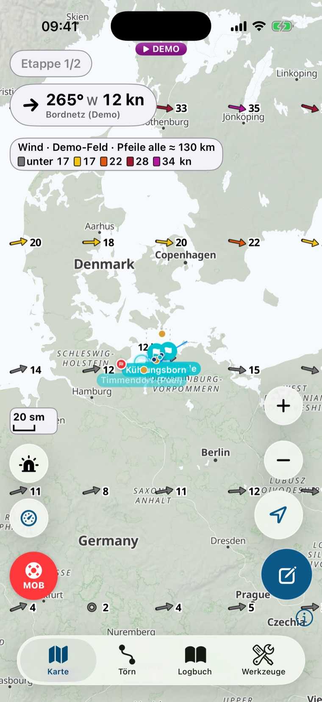
1234
Demo mode, zoomed far out with “Model”: the built-in field ranges from a calm in the south to 35 kn in the north – grey up to 16 kn, above that all four colours (demo values).
Line with colour fields — under “Wind now” the grey field “below 17” and the four colour bands, each with the knots from which it applies; a tap opens the legend with Beaufort, station and gust.
Magenta — from 34 kn (Bft 8 and above), here 35 kn; to its left dark red (Bft 7) with 33 kn.
Yellow — 17–21 kn (Bft 5), here 18 kn; the first colour, everything below is grey. Every symbol carries the same fine edge.
Calm — below 2 kn a circle replaces the arrow, grey like everything below 17 kn.
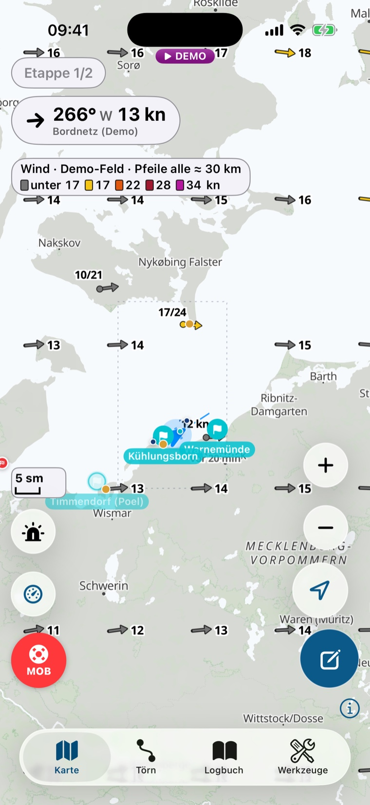
123
Demo mode, closer in: two gusty stations between the model arrows, each an arrow with a dot at the end (demo values).
Very gusty — Lolland Falster: mean 10, gust 21 kn, 2.1 times and 11 kn more – “10/21”; grey by its mean (Bft 3, below 17 kn).
Gusty — Gedser: mean 17, gust 24 kn, 1.4 times and 7 kn more – “17/24”; yellow by its mean (Bft 5).
Model arrow — the same scale without a dot at the end, here grey with 14 kn (Bft 4).
Layers menu (lighthouse)
The lighthouse button in the map’s left button column opens a menu with checkmarks: Seamarks, OSM harbours (harbours and anchorages from OpenStreetMap), Depth contours, Harbour guide, AIS targets, plus Races. You switch each layer individually — so you can, for example, hide the dense Danish club harbours without losing the buoys. The state stays saved; the symbol is filled as long as at least one layer is on.
Depth contours are off at first, also after the update. Anyone who switches them on — in the lighthouse menu or via “All layers on” under Settings → Map — gets a half sheet every time: the lines come from a model with a grid of around 100 m, are not an official source and are not intended for navigation. “Cancel” leaves them off, “Show” switches them on. In demo mode they are on, without a sheet; your own setting is not affected.
The menu is shorter: ten entries — Races, Voyages, the five layers, “Hide tab bar”, “Set anchor” (as long as no anchor is down; hidden from the next build) and at the very bottom, right above your thumb, Night mode; only with the instrument column open (landscape or on the iPad) is “Change column width” added. With “Wind (model)” there are six layers and eleven entries. In its place is “Wind”, with the switches for Model and Stations as a submenu – one entry, the menu stays at eleven. Without a draught on the boat, “Depth contours” carries the hint as a second line. With thirteen entries it stuck out of the top of the screen in portrait. Voyages and races sit together in the submenu “Voyages & races” (with one each for voyages and for races inside), and “Tab bar off” fits on one line: ten entries; in portrait, with normal text size, the menu fits fully on screen again from 6.3 inches (iPhone 17 and larger); one size larger, only “Voyages & races” at the top sits behind a swipe. In landscape the menu is taller than the screen — swipe down there, then voyages and races appear; the actions at the bottom are always available without swiping. “All layers on/off” has moved to Tools → Settings → Map; you save the visible area in the harbour via the hint “Area not saved” or under Settings → Map → Offline maps. “Map centre” now sits below the logbook actions on the round button at the bottom right, only with a voyage open (see B2).
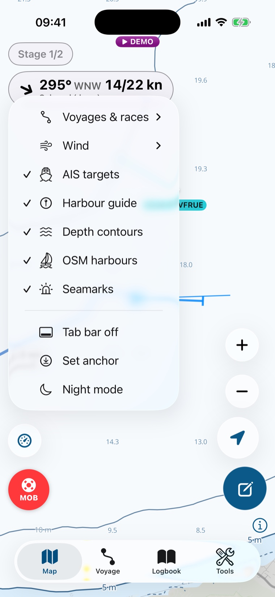
123
Lighthouse menu on the main map, ten entries: at the top “Voyages & races”, below it “Wind” and the layers with checkmarks, at the bottom the actions — Night mode right above your thumb.
Voyages & races — with one submenu each for voyages and for races inside: show the boat’s earlier sessions individually.
Wind and layers — “Wind” opens the switches for Model and Stations; AIS targets, Harbour guide, Depth contours, OSM harbours and Seamarks can be switched individually; the state stays saved. Without a draught on the boat, a hint under “Depth contours” tells you where to enter it.
Tab bar off, Night mode — up to version 1.0 “Set anchor” stood between them while no anchor was down (hidden from the next build). “All layers on/off” and offline saving are under Settings → Map.
Map style: Contrast
The map uses the “Contrast” style: land and roads almost colourless on neutral grey, so that track, course, laylines and AIS targets are the only elements carrying colour. In glaring sun on a wet display, all that remains of the base style is the coastline — exactly what you need then. The style recolours the tiles at runtime; saved offline packs remain valid. It is the only style: the “Chart” option under Settings → Map is gone, and anyone who had chosen it now also sees “Contrast”.
“Contrast” shows roads only from harbour zoom and their names only when you zoom in further; road signs (A 20, B 105) and the colourful symbols for shops and car parks disappear completely, buildings vanish into the land colour. So on a beat there are no more motorway signs between the buoys. The calm depth contours are drawn much stronger in “Contrast” by day and in the dark appearance — before, they were barely visible, and only the numbers carried the information. With night mode they stay deliberately subdued; at night what counts is the safety contour in amber: the line for your draught, without a draught the 2 m line.
Dark map. If the iPhone is set to the dark appearance, the map becomes a night chart: water in pure black (on OLED displays the pixels there are off — maximum contrast, minimum consumption, night vision preserved), land dark grey, roads and borders heavily dimmed, labels muted. The red filter of night mode is laid over it as well. This applies to all maps, including previews. In the dark, road signs and POI symbols also leave the picture, and buildings recede — under the filter they glowed brighter than everything else.
Seamarks
Buoys, beacons and lights from OpenStreetMap appear with their chart shapes: lateral buoys red (can) and green (cone), cardinal buoys yellow-black with double-cone topmarks, special marks yellow, safe water marks red-white, lights as a magenta star. Names only appear at close zoom. In night mode the map draws the seamarks in night colours: red stays red, green, yellow and the white edges become amber. This also applies to the topmarks, the star of the lights (instead of magenta) and the anchor of harbours and anchorages, which at night sits on a black disc. So at night the green conical buoy is an amber cone — you tell them apart by shape, conical or can. At night the safe water mark is striped red and black, the special mark a solid amber disc.
The display is graded by relevance: lighthouses, cardinal, isolated danger and safe water marks already appear in the area overview — small, so that far out they are not a blob of colour, and they grow as you zoom in. Lateral buoys join from area zoom, special marks and beacons only close in. There is deliberately no filter for this — no further menu on deck. The layer is on by default.
Pier lights appear only from area zoom, together with the lateral buoys, and as a smaller star — in the overview only the lighthouse remains, not every harbour entrance. Lighthouses, cardinal and danger marks are larger in the overview than before, so that you can tell a north cardinal from a south cardinal by its topmark.
The seamarks are loaded automatically with every offline pack: one download per area, stored locally, available offline. The same download brings harbours, marinas and anchorages onto the map as indigo anchors. Demo mode includes real seamarks of the Bay of Mecklenburg.
By day, red and green buoys carry the colours of the chart — a deeper red and green that stand out better against the bright water in the sun —, and harbours appear as an indigo ring with an anchor on a light disc, so that next to the buoys they are not the loudest symbols. On the dark map the strong colours and the solid indigo disc remain; at night, the night set.
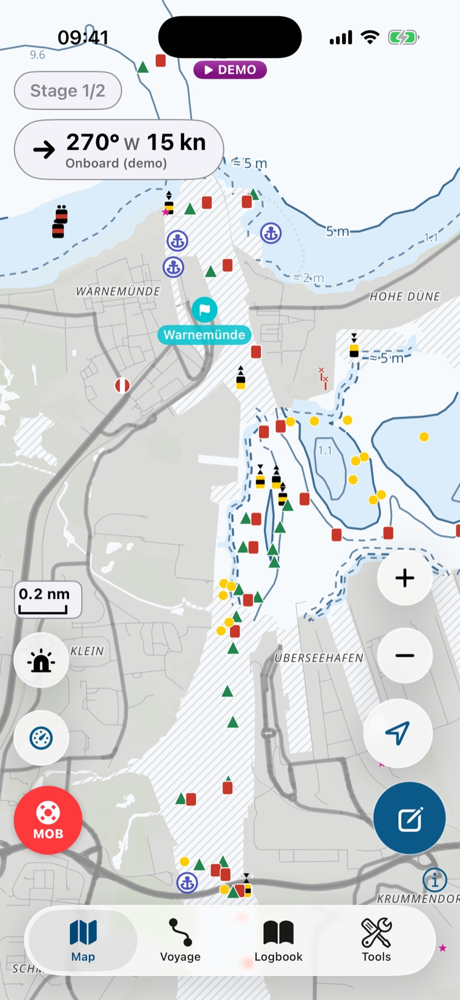
1234
Warnemünde fairway: lateral buoys, cardinal buoys with topmarks, lights and OSM harbours — all from one download, available offline. In the sea canal and on the Unterwarnow there are no depth contours — narrower than around 800 m; in front of the entrance and in the wide harbour basins they remain. At the top and bottom the blue-grey boundary of the downloaded area.
Cardinal buoys — yellow-black with topmarks; visible already in the area overview.
Lateral buoys — red can, green cone along the fairway; from area zoom.
OSM harbour — indigo ring with anchor, comes with the same download as the seamarks.
Light — magenta star as on the chart.
Depth contours and safety contour
Depth contours at 2, 5, 10 and 20 m — subtle, smoothed, each line with an upright depth label as on the chart. Before drawing, the model grid is scaled up to double density and smoothed twice: the lines run more calmly, the jags at the grid cells are smaller. They do not become more accurate — their position remains that of the model. Depths are a separate layer in the lighthouse menu, independent of the seamarks, and like these are loaded with every offline pack and are then available offline. (from the next build) They come as ready-made files, see “How fine the depths are” below. The model covers European waters and part of the Caribbean; outside, the area line says so, without a retry button, and map and seamarks are saved anyway. For now the map does not load either of them by itself (see “Loading online — off for now” under Offline packs): they only come with a saved area. Demo mode includes the depths of the Bay of Mecklenburg.
Checked against the map’s water. Lines and soundings only exist where the depth model and the map’s water areas agree — no line runs across land; only at the shore itself can one still lie up to one grid cell beside the map’s shoreline. In rivers and harbour basins narrower than around 800 m (seven grid cells), the map shows no depth contours or soundings at all — whichever direction the water runs. The 800 m apply to the 120 m cells of a normal area; in large areas with a coarser grid the limit is correspondingly higher. So there are no depth contours in the Schlutuper Bucht and on the narrow stretch of the Trave up to the Pötenitzer Wiek, nor in the Warnemünde sea canal and on the Unterwarnow up to Rostock; in front of the entrance and in the wide harbour basins they remain. This is intentional, not a fault: there the chart with its channel and line of buoys applies, and a model line would lie within its own error. So that such water does not look like deep water, it is finely hatched in grey, as are inland lakes and harbour basins the model does not know; larger areas carry the note “No depths – use chart” from zoom 10. The hatching only lies on the map’s water, up to the shore, not on mole and quay; in night mode it is only very faint, without a bright area. Areas from an earlier build only get it, like the shading, after reloading. Wider stretches of water such as the Pötenitzer Wiek or the Dassower See keep their lines. If the app could not fetch the map’s water while loading, the area line under Settings → Map → Offline maps says so, with “Try again” below it.
Safety contour. If a draught is stored on the boat (Tools → Boat), the map emphasises exactly one line: the shallowest contour that still lies deeper than draught plus buffer (at least 1 m, with a deep keel half the draught — so with a draught of 1.65 m, the 5 m line). All other contours are subdued, because on the plotter the one line that counts is the one you do not cross.
Without a draught, the 2 m line is the default: it is emphasised and carries the label “2 m (default)”; in the layers menu, “Depth contours” carries a second line telling you where to enter the draught (Tools → Boat). The number of the safety contour takes precedence over seamark names and soundings — before, a buoy name or a sounding could push it aside. It does give way to the seamarks themselves, so that it does not hide a topmark; the names sit below their buoy. Depth figures follow the unit under Settings → Units: on the lines with unit (“16.4 ft”), the soundings in the same unit without.
Shallow water shaded. Water shallower than the safety contour is lightly shaded — like the shallow water on a paper chart and the shallow-water shading of a plotter: where it gets tight for your boat, you see it at a glance, without reading numbers. The shading only appears where the depth model knows something. It ends at the safety contour, at the edge of the downloaded area, in front of inland lakes the model does not know, and in front of rivers and harbour basins narrower than around 800 m — where there are no depth contours either; that water is hatched grey instead (see above). Towards the shore it ends where the model sees the coast; that is not exactly the map’s shoreline, so depending on the spot a narrow strip stays unshaded or a little shading lies on land. Without a draught on the boat it reaches to the 2 m line. The safety contour is somewhat narrower than before, because the shading helps carry it, and remains the strongest line. In the dark appearance the shading is a dark blue; in night mode it disappears, so that no bright area costs you your night vision — then the amber safety contour carries it alone. Areas you downloaded with an earlier build only show the shading once their depths have been reloaded: if “Load map online” is on, the app reloads them quietly the first time the map is opened after an app start, if there is a connection then — if the connection only comes later, it catches up then, and in iOS Low Data Mode it waits until a normal connection is back. If the switch is off, their lines stay without shading until you refresh the depths under Settings → Map → Offline maps with the arrow in the pack row. An area’s depths need more space for this, three times as much for the demo area (about 860 instead of 280 KB).
How fine the depths are.(from the next build) The depths come from EMODnet, delivered as ready-made files via Cloudflare: one file per 1° × 1°, already calculated and checked against the water of the map. Nothing is calculated on the device any more, and every area loaded this way is equally fine: the grid is around 120 m, the resolution of the EMODnet model. The lines are simplified during calculation; no omitted point lies more than 10 m from the line. For very large extents the app declines the depths before loading instead of loading them coarser: the area line gives the size, for example “Depths for this area: about 85 MB — choose a smaller area.”; the app loads map and seamarks independently of that. Large areas you have already saved stay as coarse as they were loaded until their depths are reloaded — by hand with the arrow in the pack row under Settings → Map → Offline maps. If the source cannot be reached, the app calculates from EMODnet itself as before: up to an area of around 80 × 80 nm the grid is then about 120 m, larger extents are capped and therefore coarser. If the source answers but not all files arrive, the app saves nothing; the area line says so, with “Try again” below. Model data — for planning, not for anchoring to the metre.
Dashed means approximate. A depth contour whose position the model does not give precisely is dashed — that is how the chart draws an approximate depth contour — and carries “≈” before the number: “≈ 2 m”, for the default contour “≈ 2 m (default)”. This happens in three places — close to the shore, with a coarse grid, and where EMODnet rates the survey as low or does not rate it (paragraph “Survey quality” below). Close to the shore: where a line runs over a grid cell that borders land or is land itself, its position is only accurate to about one cell, so around 120 m in a normal area; only that stretch is dashed. Coarse grid: in an area whose grid is coarser than 200 m — that starts at around 60,000 km², about 130 × 130 nm —, every line is dashed, and the area line under Settings → Map → Offline maps says “coarser than 200 m — lines dashed”. (from the next build) Areas loaded from the ready-made files always stay below that; so this only affects large areas from earlier builds and those the app had to calculate itself. Colour and weight stay as they are: even dashed, the safety contour is the strongest line, amber at night. Strong and dashed means: “It gets shallow here — exactly where, the model does not know.” The chart notice above says it in one sentence.
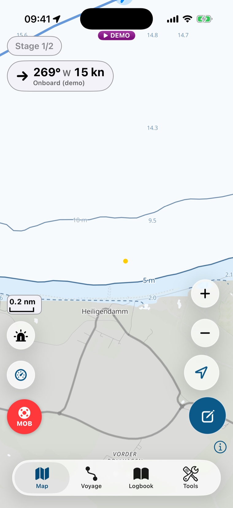
123
Depth contours off Heiligendamm in demo mode, each with an upright label. The demo boat has a draught of 1.49 m, so the 5 m line is emphasised; the 2 m line at the beach is dashed and carries “≈”. Between the beach and the 5 m line the water is lightly shaded.
10 m line — calm and solid; contours only lie on water that both model and map know.
5 m line — the safety contour for the boat’s draught, the strongest line; the shallower water up to it is shaded.
Dashed — close to the shore the line’s position is only accurate to about one grid cell; the number then carries “≈”, the sign means “approximately”.
Survey quality. The depth model is assembled from surveys by different agencies and decades, and EMODnet rates each with a quality index from 0 to 100 that combines accuracy, age and purpose of the survey. It comes with the area when downloading, and the app draws accordingly: where EMODnet rates the survey as low (below around 46) or does not rate it at all, the line is dashed and carries “≈” — the safety contour too. Contiguous unrated water areas of 5 km² and more carry the note “Quality unknown” from area zoom — in the calm colour of the depth contours, amber at night, several times on large areas, at least around 8 km apart, without fill and without hatching. The note does not say “unsurveyed”, because EMODnet does not rate some sources at all — for example the Danish depth model, which covers large areas in the South Funen Archipelago: soundings were taken there, only the index does not say how accurately. The soundings therefore remain, and likewise with low quality. The demo bay shows all classes: off Kühlungsborn and Warnemünde the lines are solid except for stretches close to the shore, north of there and off Gedser dashed, with “Quality unknown” in between.
The area line under Settings → Map → Offline maps tells you how much of the water area is of good (index from around 62), medium, low or unknown quality, for example “Water area quality: good 62 % · medium 1 % · low 12 % · quality unknown 24 %” — counted grid cells, each class rounded to whole per cent; water for which the index says nothing at all counts towards no class. Below that is the source of the depths at one point in the area, for example “Source GERMANY-BALTIC-SEA-DTM 2024” in the Bay of Mecklenburg. If the app could not fetch the quality index while downloading, the line says so in orange, with “Try again” below it; the lines are then not dashed by quality.
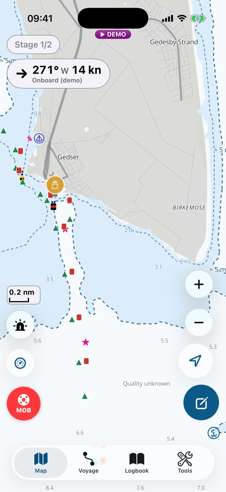
123456
Off Gedser in demo mode: for this water EMODnet rates the survey as low or does not rate it — every line is dashed and carries “≈”, including the safety contour for the demo boat’s draught. Between the coast and the 5 m line the water is lightly shaded.
“≈ 5 m” — the number of the safety contour, approximate.
Safety contour — strong and dashed: it gets shallow here, exactly where, the model does not know.
“Quality unknown” — unrated water area of 5 km² and more: surveyed, but without a rating.
Sounding — the numbers remain even where the quality is unknown.
“≈ 2 m” — the 2 m line at the coast, dashed like all lines here.
Shaded — shallower than the safety contour. The channel to Gedser lies deeper in the model and stays light.
Offline packs
The base map (OpenFreeMap/OpenStreetMap) only works at sea if you have saved the area beforehand — ideally on the harbour Wi-Fi. Packs come without a limit and at every level of detail, including “Fine”. The way there: Settings → Map → Offline maps or, as long as no voyage is running, the hint “Area not saved” on the map (see below). Tools → Prepare → Offline area also leads there without a detour through Settings. The tile names the most recently saved pack with name and date, for example “Kieler Bucht · As of 27 Oct 2026”, or says “no area saved” in orange — one glance before casting off tells you whether there is a map on board at all. Whether it covers today’s area, the tile does not say; the cast-off checklist in the logbook does.
Move the map at the top onto the area.
Choose the level of detail: Coarse = overview, Medium = area, Fine = harbour approach. The size estimate is shown next to it before you download.
Tap “Save visible area”. The app rejects extents that are too large instead of downloading half of Europe.
The pack list shows name (automatically after the place in the centre), progress and size; delete with a swipe and confirmation.
Load seamarks & depths only. The second button fetches buoys, harbours and depth contours for the extent, but no map tiles — (from the next build) a few MB depending on the extent, up to Build 57 a few hundred KB, instead of hundreds of MB. Offline, the base map then stays empty, but shallow water and seamarks are there. Included in all tiers: shallow water is safety information, the Free limit only caps map tiles. For now the map does not fetch this data without a button press (next paragraph): this button and saving an area are the ways to seamarks and depths.
Loading online — off for now. Loading seamarks, harbours and depths on the fly is switched off until it works reliably: they only come from areas you save or fetch with “Load seamarks & depths only”. “Load map online” applies only to the base map — its tiles come from the network for the extent. What the map fetched by itself in Build 33 stays saved and is drawn; the “Auto-downloaded” row (below) remains so that you can clear it. Outside saved areas, the chip at the top says “Seamarks & depths not loaded here” (without a running voyage a tap leads to Offline maps), with the switch off “Offline maps only …”. The next paragraph describes how loading on the fly worked in Build 33.
Where the downloaded data ends. A thin dashed blue-grey line — information, not a warning, amber at night — labelled “End of depths and seamarks” outlines the area in which depths and seamarks are both on the device: your saved areas and what the map fetched by itself in Build 33, in demo mode the demo area. Like the chart boundary on a plotter, it shows the edge before the view shows the gap. Areas that adjoin or overlap get a shared border without a middle edge; outside, buoys, depth contours or both are missing, the base map continues. The line appears as long as seamarks or depth contours are shown, from the overview down to the harbour. It is finely dashed and pale: background information that does not drown out buoys, wind layer and track — whoever looks for it finds it, and what it says the map shows anyway: beyond it, buoys and depth contours end. The label only appears zoomed in, from about the scale at which a bay like the Kieler Förde fills the screen (scale around 1 nm), and only on edges that are at least as long on screen as half the width of an iPhone — in the middle of the edge, on a long edge also twice in the picture; close to a very long edge it can lie outside the picture. You cannot tap the line — a long press on it opens the radial menu, as everywhere. In all tiers.
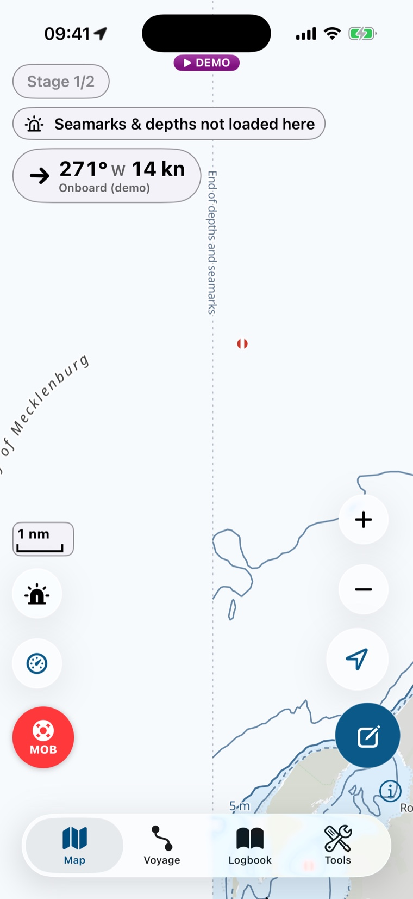
12345
The western edge of the demo area off the Salzhaff, by day at 1 nm: to the right of the line, depths and seamarks are on the device; to the left, they are not.
“End of depths and seamarks” — the label runs along the line, only when zoomed in and only on long edges.
The line — finely dashed and pale, information in the background; amber at night.
Inside — a buoy and the depth contours off the coast.
Outside — water without depth contours and without buoys; the base map continues.
“Seamarks & depths not loaded here” — part of the picture lies outside; the chip says so even without the line.
Loading online, as it worked in Build 33. If Settings → Data & privacy → Load map online is on, the map fetches not only the tiles for the extent but also seamarks, harbours and depths by itself — in all tiers and also under way, as soon as there is a connection and you are not looking at an overview. The view the map opens with in the harbour is enough for this; on the iPad it takes one more zoom level. Loading happens in fixed blocks of 0.5° × 0.5° — in the western Baltic around 32 × 56 km —, each block once; after that it is saved and available at sea without a connection. A block costs a measured download of around 1 MB (0.7 to 1.3 MB for five blocks between Flensburg and the Bay of Mecklenburg, most of it the depth grid) and takes up to around 400 KB on the device (measured on ten blocks around Flensburg and Kiel, depending on the coast and the number of seamarks). At 6 kn, a new block is added every three to five hours by calculation — that is how long the boat takes to cross one. While a block in view is loading, the top says “Loading seamarks & depths …” — except in the harbour with your own boat in view, where “Area not saved” takes precedence; usually depths and buoys are there within a few seconds; if the seamark server throttles, it can take two minutes. Seamarks and depths load separately, so a throttled seamark server does not hold up the depths. If a download fails, the map retries the same block with this service after ten minutes at the earliest; after two failures in a row the service rests for ten minutes entirely — the “Auto-downloaded” row below gives the reason. If the switch is off, the map loads nothing by itself, and the top says, as before, “Offline maps only — this area is missing” (without a saved pack “… none saved yet”). The demo loads nothing on the fly; it brings its bay with it.
What you downloaded by hand takes precedence. If an automatically downloaded block overlaps an area you saved or fetched with “Load seamarks & depths only”, the depth contours and soundings of the area apply there: the block’s lines end at the area’s edge, nothing is drawn twice. Seamarks appear on the map only once anyway.
Two areas overlapping. If two areas you downloaded overlap, the one with the finer grid applies there — with the same grid, the one downloaded last. The lines and soundings of the other end at its edge, nothing appears twice. In the area list the other one carries a grey line “overlaps … — … applies there”; if it lies entirely within the finer one, it says “lies entirely within …”.
Download approaches — a fine map (zoom 14) only within a radius of three nautical miles around each destination in the visible extent, all destinations in one pack. You need “Fine” where it gets tight (fairways, pier heads, approach buoys), not on a beat: a good megabyte per destination instead of around 50 MB for the same zoom level across the whole area. You download the area itself alongside in “Medium”.
How long it takes. A small extent is there in seconds. A large area is split into blocks, and the button counts along (“Seamark 7 of 36”). “Cancel” below it costs nothing: downloaded blocks remain, a later attempt adds the missing ones. The seamarks come from separate files built once a week from OpenStreetMap; “As of” in the area line is their data date, and if it is older than three weeks when downloading, the line says so. If a block fails, the app retries in several rounds; whatever is missing at the end is shown in the area line, also after a restart, and “Try again” adds it.
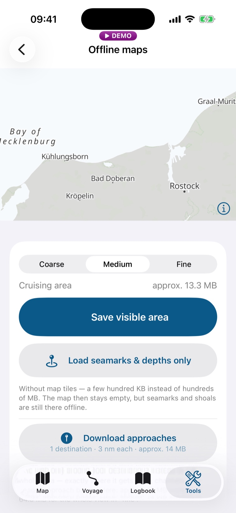
1234
Offline maps: extent at the top, below it level of detail with size estimate, “Save visible area” and “Load seamarks & depths only”; the pack list and downloaded areas follow further down.
Extent — move the map so that the area is in view; the pack is named after the place in the centre.
Level of detail and size estimate — Coarse, Medium or Fine — in every tier; “approx. 13 MB” is shown before you download.
Save visible area — tiles, seamarks and depths come together.
Load seamarks & depths only — (from the next build) a few MB depending on the extent, up to Build 57 a few hundred KB, in all tiers.
Downloaded areas, map storage, hint on the map
Downloaded areas is the separate list below the packs: name, number of seamarks and harbours, depth contours, size and date; “Refresh” fetches the extent again. Seamarks and depths are stored separately from the map tiles. If you delete a pack whose extent does not match exactly, they stay and carry the marker “no map package” — swiping left deletes them individually. If a depth download fails, the reason appears in red in the row, along with “Try again”, also after an app restart. If an area’s grid is coarser than 200 m, “coarser than 200 m — lines dashed” appears below the depth contours: on the map, every one of its depth contours is then dashed. Below the depth contours there are also the water area quality in per cent and the source (see “Survey quality” in C3); if the quality index was missing when downloading, an orange line says so.
What the map loaded by itself in Build 33 is not listed individually but as one row “Auto-downloaded” at the very top — only as long as such blocks are on the device: number of blocks, storage used, most recent date and the sentence that for now the map does not load new blocks by itself. Swipe left → “Clear” removes them all after a confirmation; after that nothing comes back by itself — if you need the area, save it. Anyone who wants to manage an area permanently and individually downloads it by hand.
Map storage shows how much space offline packs and tiles viewed along the way take up together — one combined number, because both live in the same file. “Clear the cache” discards only the viewed tiles; packs, seamarks and depths remain.
“Area not saved”. With a connection, this hint appears at the top of the map as soon as your boat is in view and no pack covers the extent — a tap leads straight to saving. When you are just moving the map around, it stays quiet. Without a connection, a chip shows “Offline: <pack>” instead, or in orange “no pack for this area”. The hint is meant to come while you can still download — not only once the connection is gone. It only appears as long as no voyage is running: you download an offline pack in the harbour, not at six knots on a beat. Under way, a hint “Seamarks & depths not loaded here” only says that the map shows no buoys or depths here — an empty chart does not mean “no dangers”; you can download them in the harbour. The hint means: no area is saved here — for now the map does not load seamarks and depths by itself (see “Loading online — off for now” above). If you hold the iPhone in landscape with a very large text size set, the hint gives way while the anchor banner is at the top — its buttons then need a line of their own (see B2). Afterwards it returns if it still applies; during the MOB alarm it rests anyway.
Test
Save your home area in “Medium”, switch on flight mode and open the map: are tiles, buoys and depth contours all there? Does the number under “Downloaded areas” match what you see on the map?
Enter your draught under Tools → Boat (⋯ → Edit boat, section “Dimensions”): is the emphasised safety contour the line you would choose for your boat yourself?
Read the map in sunshine on deck: does it stay legible — and is there any information you miss in the Contrast style?
Steer for a destination, follow a sequence of waypoints and keep an eye on other vessels — all on the main map, with numbers that stay calm on a beat and in a seaway.
Go-To: steering for a destination
Go-To is the simplest form of navigation: a bearing to a point. You start it in three ways:
A long press on any point on the map, then Go-To in the radial menu.
The Go-To button in the point card of a harbour, a course mark or a seamark. Seamarks can be tapped and show name, type, bearing and distance.
The destination choice of the next open stage (“Where to today?” — a tap chooses the day’s destination) in the “Voyage” context field: “Set destination” means navigating, not just recording — the course line appears on the map, and the plotter tiles BRG/DTW/VMC/TTG run along.
On the map, the Go-To appears as one blue line at the top left: bearing, distance, course error and the × to end it — the glance on the way to the buoy needs no more, and the map stays clear. Before the number is the word GO-TO — under the crosshair, or above the destination name while a voyage is running —, and the course error carries the abbreviation COG: “COG ▶ 12°” means your course over ground lies 12° to the left of the destination — the arrow points to the side on which the destination lies; VoiceOver says it in words. A tap on the line expands the full tile, another collapses it again: bearing and distance large, below them the course error (COG against bearing as ◀ or ▶ with degrees, above 5° orange with a warning triangle — by day as an orange tag with black text, because orange directly on the blue was too weak in the sun; at night amber on a black capsule, see C16; in the dark appearance orange on a black capsule, because orange there could hardly be read on the light blue), the ETA and the deviation from the starting line (XTE) — how far you are to the side of the original course line boat → destination. While a voyage is running, the line also carries the destination name and arrival time (B2); if the width is not enough, a course error up to 5° drops out of the line first — it remains in the expanded tile. If you are more than 5° off, the name is shortened first; if there is no arrival time because the boat is not getting closer, the warning always stays in the line. On the map, the course line from boat to destination is dashed – the solid one is the COG vector. The destination stays active until you end it with “×” — even across an app restart. Bearing, distance and the COG comparison are free.
In a running race, the Go-To follows the course (see C5): at the starting gun the course takes over the destination, even one of your own from the pre-start – “Undo” brings it back. A destination you set yourself during the race stays until you end it with ×. When it ends — with × on the map, with “End” in the routes or because a route of your own has finished —, the app immediately follows the course again.
ImportantGo-To is a bearing, not routing: the course line to the destination and every leg of a route run straight, even across land and shoals. Whether a leg is clear, you check yourself on the chart.
ETA: from the approach, not from the momentary speed
The ETA is calculated from the averaged approach over the last few minutes — how fast the remaining distance is actually shrinking. The momentary VMC is no good for this: on a beat, the momentary speed towards the mark is meaningless, and in a seaway such a display jumped between twenty minutes and two hours. If you are moving away from the destination or lying still, you see no ETA instead of an invented number — the line and the expanded tile leave it out; “--” is then shown only by the ETA and TTG tiles on the “Navigation” page.
Laylines
If wind data is available (NMEA network or demo), the map also draws the laylines from the mark: green the starboard layline, red the port layline. The angle comes from your boat’s polar optima; without polar data, 45° and 150° apply. Whether it is an upwind or a downwind leg, the app detects by itself.
Planning routes
A route is a sequence of waypoints that you create ashore under Tools → Routes. The most direct way is the route mode of the main map:
Press and hold on the map and choose Route. A blue band at the top says what a press does now, and has exactly one exit: Done.
Each further long press adds a waypoint — blue line, numbered pins, in the band a counter and Undo.
Done opens the route form with the points you set.
While route mode is on, a running Go-To route is hidden. MOB and anchor watch stay in their place in every mode, and no mode survives an app start: if you open the app at night, you get the navigation map, never yesterday’s tool.
You bring existing routes back onto the map with Edit on the map in the form; Done saves back once, and an undo bar takes it back. Waypoints also come from the harbour guide, the waypoint library, the seamarks or from your own position. For each waypoint you set a name and an arrival radius (50–500 m); you change the order by touching and holding a waypoint and dragging it, and for a saved route also via Edit at the top right. The list shows the bearing and distance of each leg as well as the total length. Planning is free.
Following a route
Start route makes the first waypoint the Go-To destination. As soon as you are within the arrival radius, the route moves on by itself — with haptics and the notification “Waypoint reached”. The waypoint reached becomes the base of the new intended course line, so the XTE always refers to the current leg. The banner shows “WP 2/5”, the name of the waypoint and, after Σ, the remaining distance to the end of the route. A large Next button moves on by hand, for example when you deliberately skip a buoy; an undo bar brings the waypoint back. On the map, legs already sailed are grey, upcoming ones in the accent colour, the waypoints numbered. The plotter tiles BRG, DTW, XTE, VMC, ETA and TTG always refer to the active waypoint.
In demo mode the route “Kühlungsborn – Warnemünde” with four waypoints is ready.
AIS: other vessels
If your NMEA network provides AIS data (NMEA 2000 or NMEA 0183; multi-part sentences are assembled), the map shows other vessels with a 6-minute vector, and with names when zoomed in close. Class A is dark blue, Class B turquoise; after 3 minutes without a new position a target counts as stale (see below), after 6 minutes it disappears. You switch the layer in the layers menu. The length of the vector follows the same time as for your own boat — six minutes, unless you choose otherwise under Settings → Map → COG vector.
From area zoom, each target appears as on a plotter as a filled triangle with its tip in the direction of travel (course over ground), Class A somewhat larger than Class B; the vector grows from the tip. A circle instead of the triangle means: no current course. Without a vector, the vessel is not making way or not sending a course — or it is no longer reporting, in which case it appears dashed (see below); with a vector, its last course report is more than a minute old — for small craft under 2 kn that is normal, they then only transmit every three minutes —, and the vector shows the last reported course. If a target falls below the warning threshold, it is red with a ring around it. At night both classes are light grey, the names amber on black; the dangerous target stays red, its name black on red. To tap, you do not have to hit the triangle exactly — a tap just beside it opens the point card too.
How far you zoom in determines how much a target shows: in the overview it is a small dot with its vector, from area zoom the triangle, and the name only appears close in — before, the vessel names piled up over the harbour name in the overview. A target below the warning threshold shows symbol and name at every zoom.
For each target the app calculates CPA and TCPA against your own vessel. If a target falls below the warning threshold — default 0.5 nm CPA and 20 min TCPA, adjustable under Settings → Map in the range 0.25–2 nm and 10–30 min —, it turns red, and a red warning button appears at the top: “CPA 0.3 nm” large, name and TCPA as a second line. The warning button is never shortened: if it shares the line with the Go-To – which happens above the MOB banner while an alarm is running –, the name of the Go-To destination is shortened first, and if not even its bearing fits beside it, the Go-To chip gives way entirely. If, with a very large text size, the width is not enough even for the warning button alone, it wraps onto another line. At the same time the app reports the danger as a time-sensitive notification — per target on entry, after that at most every 5 minutes — even with the phone in your pocket. A tap on a target opens the point card with vessel type, MMSI, call sign, speed and course, CPA/TCPA, length and age of the data.
Without a fresh course of your own. If no course has come from the onboard network for more than 10 seconds — many sensors leave the course field empty at low speed —, the approach is calculated with the phone’s course; if that is not fresh either, with your own boat standing still. A target heading towards you then keeps warning, and in the point card “without own course” appears after CPA/TCPA.
Target without a new report. If no new position comes from a target for more than 3 minutes, it appears as on a plotter as a “lost target” at its last position, without a vector: from area zoom as a dashed symbol without fill, by day in the colour of its class, at night in light red — you recognise “stale” by the shape, not the colour; in the overview it is a hollow dot, a ring without fill. The app does not continue calculating CPA and TCPA from the old position: the red warning button disappears, and instead of “CPA … · TCPA …” the point card names the last report. Directly under the name, in semibold in a dashed capsule with a clock symbol, it then says “STALE · 4 min” — even before bearing and speed, which are thus to be read as old. Below that, smaller, “CPA then 0.3 nm” — the CPA that applied when the last report arrived; if the target was already moving away then, it says “was moving away then”. The word appears exactly when the symbol on the map is dashed. If the target was dangerous at its last report, it stays red with ring and name until it leaves the map after 6 minutes: a vessel whose AIS cuts out close to you is very probably still there.
For CPA and TCPA the app uses your measured own course and measured speed, not the display values smoothed by damping: after a tack, the warning calculates with the new course instead of one that is still lagging behind. Warning button, red targets and point card calculate with the same values as the notification.
Demo mode shows three targets: a ferry, a freighter and a sailing yacht that converges and triggers the warning. The freighter falls silent after about two minutes, and on purpose: this way you see what a target that has gone quiet looks like. After about three minutes it appears as a circle instead of a triangle, the vector still shows its last course. After five minutes it is stale — dashed without fill and without vector —, after eight it disappears. After that only the ferry and the sailing yacht remain on the map. If you restart the demo or come back after briefly switching to another app, the sequence starts from the beginning.
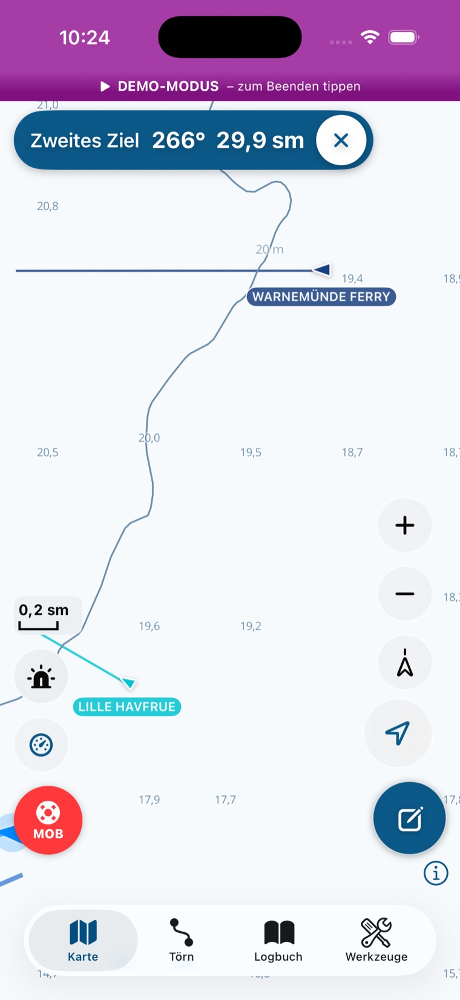
123
Main map with the AIS layer switched on, zoomed in close: the ferry and the sailing yacht appear as triangles in the direction of travel, the vector grows from the tip, the name is below.
AIS target Class A — the ferry in dark blue, the larger triangle, tip pointing west, ahead of it the 6-minute vector.
AIS target Class B — the sailing yacht in turquoise, the smaller triangle; a tap on or just beside the triangle opens the point card with CPA/TCPA.
Layers button — opens the layers menu, in which you switch the AIS targets on and off.
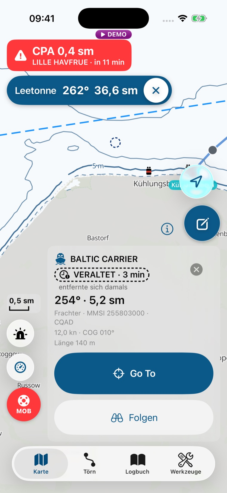
12
The demo freighter a good five minutes after the start: no position has come for three minutes.
Target without a new report — dashed circle without fill at the last position, no vector.
Status word — “STALE” with the age of the last report, directly under the name; below it, what applied when that report arrived: here the freighter was already moving away; had it been approaching, the CPA from then would be shown. The app does not continue calculating CPA and TCPA from it.
TestSet a Go-To on a buoy and beat towards it: does the ETA stay steady, and does it show “--” as soon as you move away? In the demo (any demo tier), sail the route “Kühlungsborn – Warnemünde”: does the route advance within the arrival radius, does the notification arrive, and does the undo bar bring the waypoint back after Next? If you have AIS on board: does the CPA warning match what your plotter shows, and does the notification reach you with the phone in your pocket?
A race is a voyage with a starting gun: once it is created, pre-start, countdown, tracking and — with a finish line set up — finish detection run on their own — you only operate what is really needed on the water.
Creating a race
A race is a special voyage type with a start time, countdown and its own analysis. There are three ways in:
Map → Cast off → Race … — only with the “Regatta” focus; otherwise the green button creates a voyage straight away.
Logbook → Menu (⋯) → New race — the same form.
Tools → Calendar — for a regatta event, a “Start” button appears on race day (with a confirmation). It creates the race together with the stored course template. The same button is also at the bottom of the opened event — for example when you open it via “Next event” in the logbook.
The form asks for name, starting gun time, course, scoring and notes. The course row offers your saved course templates — marks, lines and time rules come along when you save. If there is a calendar event with a course for today, it is already filled in. Also in the form: the length of the pre-start phase, selectable as 5, 6, 10 or 15 minutes (5 for 5-4-1 starts).
If notifications are off for Etmar, a row with a crossed-out bell appears below the pre-start length: pre-start and starting gun then won’t alert you on the locked phone. Tapping the row opens the notification settings. The countdown in the app still runs.
Below the pre-start length you choose the Signals: “Sound + voice”, “Sound only” or “Off” — like the length, a default for the next races. Below that, Preview signals plays a compressed sequence (double tone, “One minute”, three ticks, gun): listen once ashore to check the volume is enough. The row about notifications being off then adds that sound and voice still play as long as the app is running.
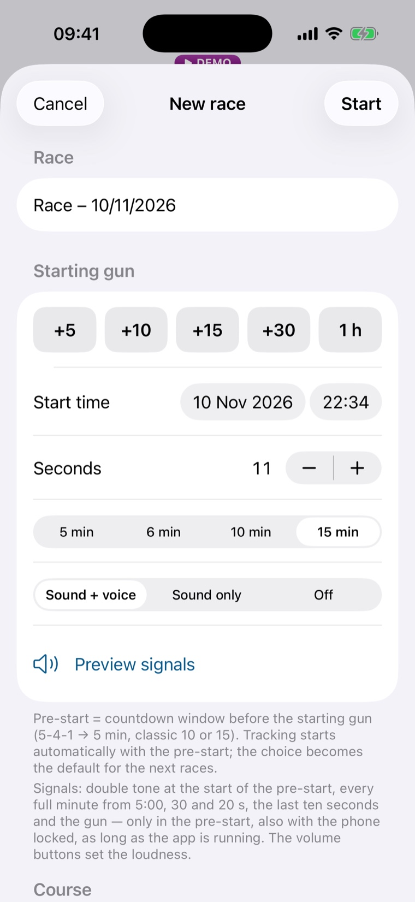
1234
“New race” form: starting gun with seconds field, pre-start length and course template.
Start time — date, time and a separate seconds field for the starting gun.
Pre-start length — 5, 6, 10 or 15 minutes; 5 for 5-4-1 starts.
Course — choose a saved course template; marks, lines and time rules come along.
Start — creates the race; from here on everything runs automatically.
Special case, pursuit start: if a course carries a start procedure in which not everyone starts at the same time (kangaroo/pursuit start by Yardstick, group starts), the app asks for your own start time straight after you join such a course (for example a course from the community), as long as the course still has upcoming dates — to the second, with its own seconds field below the time, because the sailing instructions require starting to the second by radio or GPS clock. The time applies to all dates of the course; you change individual race days in the calendar. The bundled Wednesday race has no upcoming dates any more (the dates in September 2026 are over) — so the app doesn’t ask for it.
Wind against the course
Which leg is upwind, which close reach, which broad reach, which downwind — and on which tack? Headsail, spinnaker and the work before the windward mark depend on it. Before the start, at the top of the Race details sits the row Wind against the course: wind at the start and at the finish from the GFS forecast, the borderline cases with a diamond, and how many legs are upwind or downwind. During the race it sits below the analysis, after the finish as a way into the briefing, without a forecast. Until the gun, a row below the race buttons in the logbook leads straight there (“1st leg beam reach · 2 borderline”).
A tap opens the table — at the standard text size without scrolling. The row and the logbook row open the race’s briefing (C6). The separate screen is gone: table and sketch are in the briefing itself. It opens with the map, “Map · Sketch” below switches to the sketch, “At start time” is set to the start time before the gun, and instead of the angle to the wind the table gives the course — true, both tacks on upwind and downwind legs — and there the distance sailed. The angle to the wind is still in the sketch and in the borderline note. The point of sail before the start is calculated against the stored polar: closer than its tacking angle means beating, deeper than its gybing angle means tacking downwind, in between close reach up to 70°, beam reach up to 110°, broad reach above that. This is deliberately not the threshold of the analysis, which counts every sailed board up to 75° to the wind as upwind.
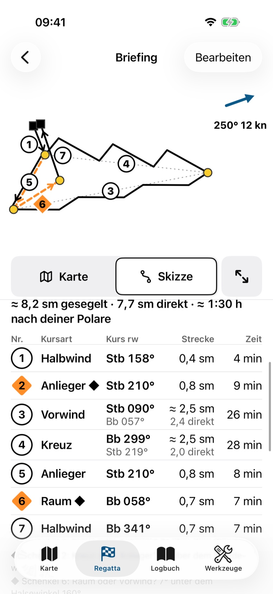
1234
Briefing for the NSV Wednesday race with the Albin Express polar, “At start time” set to the start time, the sheet pushed up. The forecast is made up for the picture (wind 250° veering to 267°) so that two borderline cases are visible.
Map · Sketch — two large targets. The briefing always opens with the map; here “Sketch” is selected. The sketch is north-up like the map; at the top right an arrow shows where the wind at the start is blowing to. Zigzag means upwind or downwind, borderline cases dashed, plus the leg numbers — if two collide, the shorter one’s is left out; the table lists them all. A tap on the leg shows the tack in words (“Stbd long” on upwind and downwind legs, dead into the wind “Stbd = Port”); mark names, the tack on the legs, finish wind, legend and scale are in full screen — if space gets tight there, a name goes first, then a tack. The wind choice in the sheet (pushed up here) applies to table and sketch; the map stays put when you switch.
Total — with upwind or downwind legs, the distance sailed with “≈” and the direct length of the course, plus the time from the polar, rounded to 5 minutes. Above it, wind at the start → at the finish, GFS run and age; from one hour before the start, the local wind applies at the start (“Manual wind in the pre-start, trend from GFS”).
Borderline — diamond at the number and point of sail. Below the table, the question “Upwind or close reach?” or “Broad reach or downwind?” with the reason in degrees: the leg is within 10° of the tacking or gybing angle, or the forecast shifts across the threshold during the leg.
Downwind and upwind — course true: both tacks at the polar’s gybing or tacking angle, the long board on top and in bold. Distance over the boards with “≈”, the direct line small below it. On close reach, beam reach and broad reach, the course is the bearing to the mark with the tack sailed. Course without current and leeway, distance without tacking losses — the footnote says so, and below it the caveat: GFS doesn’t know the coast; the direction is often 10–20° off.
Times only with a polar. The app calculates the legs from the boat’s stored polar: upwind and downwind via VMG, the other courses via the speed on the course, each leg with the wind of its estimated departure time. It does not use the sailed polar for this; measured values get in via “Transfer into the stored polar”. Without a polar, the wind at the start time applies to all legs, upwind and downwind start from an assumed 45° and 150°, and instead of the times it says “Times per leg need a polar.” The app does not calculate extension legs. The forecast is fetched as soon as you choose “At start time” in the briefing; upwind and downwind are calculated over the boards at the tacking or gybing angle, without tacking losses, and without a polar it says “No polar, no times” with the link to the polar data.
Empty doesn’t mean gone. Without a course the row says “No legs without a course.” and leads to the course; if the start is more than 5 days away, it names the day from which the forecast is available; with no connection and no saved data, “The forecast needs a connection once.” In the demo, the race of “Nordwind” carries a made-up forecast — the source then says “(demo)”.
Pre-start: runs on its own
Once the race is created you don’t need to trigger anything; the app also survives a restart:
When the pre-start phase begins, the pre-start entry is created automatically, GPS tracking starts, and a notification sits on the lock screen. In addition, RAW data recording starts if an NMEA network is connected.
Even with the iPhone in your pocket: from 2 hours before the start the app stays ready in the background, and the timers fire on time without the app open. If the race was created earlier, a significant location change — typically the drive to the harbour — wakes the app up again, even if iOS has terminated it.
The countdown is shown large in the logbook; in the last minute the orange capsule “LAST MINUTE” sits above it, and after the gun the race time runs in green. The phases: waiting → pre-start (yellow) → race (green). Before the gun the countdown rounds up: the digits say how many full seconds remain at most, the last second reads -0:01, at the gun the logbook shows +0:00 and the tile GO; before the gun, map, logbook and tile show the same second. During the race the app records a track point every 5 s instead of every 30 s, so that tacks and VMG can be analysed cleanly.
In the pre-start and race, the voyage’s map preview is dropped from the logbook — your own track answers no question there — and the controls sit directly below the countdown or race time. On the right of the first row, next to “Ping pin”, “Ping boat” and “Sync” or the finish pings and “Recall”, is MOB (hold for 0.6 s) — the same place as in a voyage. With the large accessibility text sizes, two controls and MOB stay on top, and the third sits full width below. Engine, sails and trim are at the same height. At night, “Race in progress”, the race time and pinged finish ends are shown in amber instead of green.
The same figures appear at the top of the map in the context bar: countdown, distance to the line, time-to-burn and bias above the picture in which you see your boat relative to the line. A tap on the bar opens the Regatta tab.
At the starting gun, the start entry is created exactly at the start time, with a strong haptic pulse and a notification. With the app open, the pre-start, one-minute and starting-gun notifications don’t lay themselves over the countdown as banners and don’t sound in addition to the signal — they land silently in Notification Centre. If the signals in the race form are set to “Off”, or you have muted them in the pre-start (it then says “Silent” there), the open app stays without sound but still vibrates at the fixed marks (pre-start start, 1:00, 0:30, 0:10); at the gun comes the strong haptic pulse of the start entry. Below the header of the pre-start card it then says “Signals off — vibrates at 1:00, 0:30, 0:10”.
Pre-start signals. In the pre-start the app makes itself heard, so that in the last minutes your eyes stay on the line and the committee boat: a double tone and “Pre-start” at the beginning, from 5:00 a tone with a call-out every full minute (“Four minutes”), at 1:00 a double tone and “One minute”, at 30 and 20 seconds a high tone, from ten a tone every second and a long one at the gun. Above 5:00 it stays quiet — counting starts from the warning signal, not from the start of the app’s pre-start. With the app open, the iPhone vibrates at the start of the pre-start, 1:00, 0:30 and 0:10 — even when the signals are set to “Off” or “Silent”. At the top right of the pre-start card in the logbook, Sound mutes the signals for this race (it then says “Silent” there; only tone and call-out, the vibration stays), with undo in the bar; Sync and ±5 min leave that as it is, and after an app restart the sound is back on. The signals also play with the ringer muted; the volume buttons control them. And they come out of your pocket: with the screen locked and with the app in the background, as long as it is running — in the pre-start the background GPS keeps it awake (location permission “Always”); music is turned down while this happens, not paused. If iOS has terminated the app, the notification one minute before the gun remains. Limits: only in the pre-start — never while waiting, not after a recall before the warning signal; a phone call interrupts them, and they don’t make up missed marks.
Apple Watch. The watch app is not included in version 1.0.
At the gun, “Sync” doesn’t turn into “Engine on” straight away: for ten seconds the same place shows “Race”, dimmed, and only then the engine button. A Sync press that comes a second too late therefore doesn’t write an engine entry into the race.
ImportantBackground readiness requires the location permission “Always” — check it in the iOS Settings before your first race.
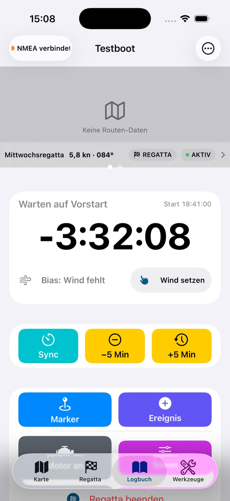
12345
Logbook before the start: countdown to the pre-start, bias row, Sync and postponement, below them the two race buttons.
Countdown — runs large; in the last minute the orange capsule “LAST MINUTE” sits above it; after the gun, green race time.
Bias / Set wind — opens the wind rose; without a wind set it says “Bias: no wind set”. If the wind is almost along the line, the app no longer names a favoured end but says “No windward start” — there is no end advantage to be had there.
Sync — tap once at the signal; the starting gun is rounded to the next full minute.
−5 min / +5 min — postpone the start: AP postponement and reversal in full five-minute steps.
Marker / Event — the two race buttons: set a GPS point or open the full form.
Sync and postponement
Sync: tap once at the race officer’s signal — the starting gun is rounded to the next full minute, and the countdown is then right to the second. The button sits where it is needed: in the pre-start block of the logbook next to the pin/boat pings, on the map in the pre-start bar to the right of the ping buttons, in the same place throughout the pre-start.
Postponement (AP): “+5 min” moves the gun by a full five minutes; timers, countdown and notifications are rescheduled. Tapping several times adds up, “−5 min” takes it back. No date picker at sea. ±5 min is folded away behind “Postpone the start” in the logbook — rarely used things stay off the map.
Undo: Sync and ±5 min change the start time immediately, without confirmation. A mis-tap can be reversed for six seconds with “Undo” in the bar at the bottom (Sync on the map too); start time, countdown and signals are then back as before. “−5 min” is locked as soon as less than 5:10 remains — otherwise the gun would fall while the bar is still showing.
−5 min before the pre-start: as long as the race still shows “Waiting for pre-start”, “−5 min” never moves the gun so that the pre-start would begin immediately or within the next ten seconds. Instead of jumping, the bar then says “−5 min would start the pre-start — tap “Sync” at the signal”; nothing has changed. An undo couldn’t reverse that: recording and the pre-start entry begin with the pre-start. If you expand “Postpone the start” in the pre-start, the row with ±5 min moves up so that the undo bar doesn’t cover it after the first tap; if you collapse it again, the list is as before, with pin, boat and Sync in view. Every pre-start begins collapsed, even if the row was open in the race before. Create a race with a 15 min pre-start and a start in 30 minutes, tap “−5 min” three times: do the first two postpone, and does the third show the note without the pre-start beginning?
Recall after the gun: after a general recall (First Substitute) or an abandonment (flag N), the “Recall” button appears in the logbook next to the finish pings for the first ten minutes — tap it at the recall signal. The race is back in the pre-start; you don’t have to finish it and create it again. There is no countdown yet: the warning signal only comes one minute after the flag is lowered, and how long it stays up only the race committee knows. The status card therefore says “RECALL — new start”, the map bar and countdown tile show “RECALL”, the lock screen “Recall · new start”; time-to-burn is dropped, and no gun is fired. At the warning signal you tap “Warning” — the button sits in the logbook where Sync otherwise is. The start is then exactly five minutes ahead, and countdown, Sync, ±5 min, gun and starting-gun notification run as in the first pre-start. Until then, Sync in the map bar points to “Warning”. Pings, manual wind, course and recording stay, and the old start remains in the logbook as an ordinary “Start (recall)” entry. Instead of a confirmation, the bar with “Undo” appears — after “Recall” for 30 seconds, because after that there is no way back into the race; after “Warning” for 6 seconds. Only the device on which you tap “Recall” knows the waiting state: if Etmar is running on an iPad with the same iCloud at the same time, it counts there to the earliest possible start time and sets a start there.
Start line, bias, time-to-burn
Pinging the line: in the pre-start, sail past the pin end and the committee boat and tap “Ping pin” or “Ping boat” — the start line is set from your GPS position. Pinging again simply overwrites; a mis-touch has no consequences. A ping without a GPS fix tells you so; the ping ticks survive an app restart.
Distance to the line & time-to-burn: as soon as pin and committee boat are pinged, the pre-start block shows the perpendicular distance to the start line and time-to-burn — countdown minus the time to the line at the current approach. Red means: too early. Both are based on GPS and are free.
Line bias: once the line is in place (pinged or from the course), the pre-start block shows which end is to windward — “Pin +7° · 12 m” or “Boat +7° · 12 m”. The metre value is the windward advantage (line length × sin bias); below 3° it says “Line square”. You set the wind direction via “Set wind”: a wind rose that you turn with your thumb; it clicks every 5° with haptics, plus ±5° buttons and “Head to wind — take the course”, which makes your heading (HDG, otherwise COG) the wind direction. The direction stays saved but only applies for one hour — see below. With a wind sensor on the NMEA network or in demo mode it comes in automatically as TWD; the button shows the source. The row carries no tier badge — in the pre-start, the countdown is what counts.
A manual wind applies for one hour. For that long “manual” appears beside it, from ten minutes on with the age (“manual · 25 min ago”) — in the logbook’s bias row below the wind direction, in the bar on the map below the bias, in the sail choice after the wind direction as soon as a course is set. After that the app no longer calculates with it: no bias, no course side, no wind angle for the sail choice and no wind in the start entry at the gun. The bias row and sail choice instead say “Wind at 18:05 — stale” (from another day, with the date), and a tap on it opens the wind rose; the bar on the map says “Wind stale” in place of the bias with the time below it, as long as there is room for that next to countdown and distance. A wind from yesterday on a course that lies differently today is worse than none. “Clear manual wind” in the wind rose removes it immediately; ending the demo clears it too. If the wind is stale, the wind rose starts empty (or with the wind from the bus) and says below the rose what you had – “Last 215° at 18:05 – stale, take a new bearing”. “Done” thus only confirms a freshly taken wind, not the old one.
Pinging the finish line: “Ping finish stbd” and “Ping finish port” are available during the race, from the gun — starboard and port ends as seen when crossing the finish. Once both ends are set, the app detects the finish automatically. In the course editor there is also “Use current position” for each end — no typing in coordinates.
During the race
During the race there are deliberately only two buttons. Marker sets a GPS-tagged point with one tap for moments you want to look at later: a bad start, a shift, a near-collision. Event opens the full form. You don’t need to log tacks, gybes and mark roundings — the analysis detects them afterwards from the track. On the map, only what is needed at the helm remains in this phase: pinging, as long as the line is incomplete, and Sync.
Live analysis: during the race, four equally sized tiles in fixed places sit at the top of the Regatta tab, one figure each. Next mark: the name on one line, the side as a word and colour next to the label (“gate” at a gate), the bearing in large type, the distance beside it — the same calculation as the bar and the logbook. VMG vs. polarPro: VMG against the polar as a delta (“+0.3 kn” / “−0.4 kn”), below it the target (“Target 4.1 kn”); if you are more than 0.2 kn below, it also says “below target” — orange as text alone doesn’t hold up in the sun. Without Pro — and without wind from the onboard network — this place shows VMC to mark with “Progress to mark · GPS”, without a target and without colour; there is no lock during the race. Tacking angle: the average of the last tacks from the track (“Avg of 3 tacks · GPS”; botched tacks are left out, and a gybe is not a tack — only changes of tack upwind count). To the layline: the distance to the layline of the set mark; with no polar for the boat, “assumed 45°” or “150°” is shown with it. Deliberately nothing more: a tack counter, time on the wrong tack and distance totals need a comparison over time and belong in the analysis after the finish — anyone reading a table on the beat isn’t sailing.
Every tile is always there. If the value is missing, it shows “—” and the reason below, for example “No polar for this boat”, “No target when reaching” (between 60° and 120° to the wind the polar gives no VMG target), “No tack yet” or “No GPS fix”. Without wind from the onboard network the second tile is called VMC to mark: progress towards the next rounding from GPS, without a target and without colour, below it “Progress to mark · GPS”; negative means the mark is astern. On reaching and downwind legs that is the figure to steer by; on the beat it is no measure of pointing — whoever maximises the figure there pinches or bears away towards the mark. With Go-To the same figure is called VMC. The app detects tacks from the wind from the onboard network; without wind it reads the boards from the courses over ground of the last 50 minutes or so — two courses 70–110° apart, between which the boat switches on the same leg. The gun and mark roundings separate the legs, so bearing away at the mark doesn’t count as a tack, and the angle is shown from the first tack of the beat; on reaching and downwind legs the one from the last beat remains. Until then it says “From the first tack · GPS”, after that “Over ground from 3 tacks · GPS”. The layline needs the wind and a set mark — without wind it says “No layline without wind”, because a guessed figure that you steer by is worse than none; with no polar for the boat it calculates with 45° upwind and 150° downwind and says so below the figure. The mark is a Go-To destination you have set yourself, otherwise the next mark of the course. If the course expects a gate or the finish line, it says “Gate/finish: no layline”; if the mark has been missed and lies astern, “Mark missed”. Without an onboard network, then, mark, VMC and tacking angle show values from the iPhone GPS; only the layline gives the reason.
Finish and guest boat
You finish manually via “Finish race” (immediately, without confirmation; for six seconds “Undo” brings the race back) — or automatically: if a finish line or finish area is set up in the course, the app detects the crossing of the line. The finish entry is then created, the countdown stops, and the notification “Finish line crossed!” appears. Recording only stops at this point on courses without a possible extension; if the course has one (time rule or marked extra leg), it continues at the voyage rate until you are in the harbour – the finish ends the race, not the voyage. For this, every new race gets its departure point as its destination when it is created (300 m radius): returning there ends the recording, otherwise two hours of standstill do. In the technical view of the voyage map this way home is drawn thinner and paler, legend “After the finish” – the race course stays readable, and the miles still count. If the race is abandoned or you retire, the scoring window ends at the last scored mark rounding, not at the pontoon. For the first 60 seconds after the start there is a grace period, because the start and finish lines are often close together. As a safety net, after two hours of standstill the app asks by notification whether the race is over – and if the finish has already been scored while recording is still running, it doesn’t ask but ends the recording: a mooring entry at the time of the standstill, race completed, notification “Recording ended”; undo in the voyage detail via “Reopen”. The “Arrived?” button in the logbook now also appears for races. If the anchor watch is on, both wait until two hours after “Anchor up”; if the boat then stays put, the mooring entry is placed half an hour before “Anchor up”, not at the moment the anchor was dropped (the entry can be edited).
Finished too early? If the automatic detection triggered at a line that will be crossed again, open the race in the voyage detail with “Reopen”: countdown, course on the map and recording come back. The wrong finish stays in the logbook as an ordinary “Finish (discarded)” entry until you delete it – with time, position and anything you noted there. The next finish crossing counts again; 6 s of undo, as when finishing.
The course on the map. As long as the race is running, it sits on the main map without you doing anything – you don’t have to show it or open the voyage first. The next mark is larger and carries a ring and its name; the other marks are subdued but fully opaque. Deliberately subdued rather than transparent: on wet glass in the sun a semi-transparent mark disappears instead of being discreet – size and shape survive sun, wet and zooming out. After the finish the course is gone again.
The bar during the race. After the starting gun, the bar at the top of the map shows which mark is next: name, the side to leave it on (port or stbd as a word and colour, “gate” for a gate), the bearing in large type, then the distance and the race time in small type. After each rounding it moves on. If the app has not detected a rounding, tap Next on the right – the mark shown counts as done, and “Undo” in the bar at the bottom reverses it. A calmer way is via the map: tap the mark, Continue here. If a mark already lies astern without having been rounded, a warning sign appears in front of the name; it is never skipped automatically. If no side is shown, it can’t be read from the course – then choose it by hand in the course mark. Without a course the bar stays on the race time. As long as it carries the Go-To destination, there is no second Go-To row below it. Above the mark name is the word COURSE; if you are sailing to your own destination, it sits below as a narrow row with the word GO-TO and no blue background – you steer by the bar. If space gets tight — portrait on the iPhone, with the side capsule —, the race time goes first, then the name is shortened; the distance to the mark stays. In portrait, the side first moves next to COURSE, and the name gets the row below to itself; only if it doesn’t fit there either is it shortened – at the end (“Windward m…”), no longer in the middle. In landscape on the iPhone the bar stays on one line.
Next mark in the logbook, course in the Regatta tab. During the race the same mark also appears in the logbook, below the race time: name and side (“Windward mark · Port”), below that, in large type, bearing and distance from your position — the same calculation as in the bar; logbook and map never give two figures for one mark. Without a GPS fix it shows “—”, an old fix is dimmed and struck through, and a mark astern that hasn’t been rounded carries the warning triangle; without a course it says “No course set”. In the Regatta tab it appears as the “Next mark” tile; below that only After that: the completed roundings as one quiet row (“✓ 1–4 done”, on the right the mark that is next), then at most three open ones, the rest behind “+n more”. At the very bottom are three equally sized controls, 60 pt high: Course (opens the course), Analysis and Details (the race details). Before the gun, the tab shows the course as a list, one row per rounding (“2 · Windward mark · Port”, on laps “Windward mark (2nd)”), at most ten; “+n more” opens the course — for learning the course. Without a course it says “No course set — add one in Race details”.
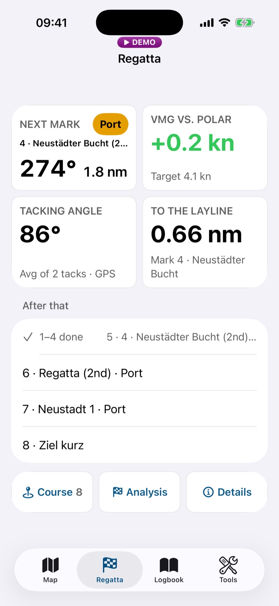
123
Regatta tab in the regatta demo “Race running”, 40 minutes after the gun on the NSV Wednesday race, at the standard text size on the iPhone — all without scrolling. All figures come from the demo’s simulated data.
Tiles — next mark with side, bearing and distance; VMG vs. polar with the target below it (needs wind from the onboard network, simulated in the demo — without wind, VMC to mark from GPS appears here); tacking angle as the average of the last tacks; distance to the layline of the next mark.
After that — start and the first three marks as one row “1–4 done”, on the right the rounding that is next; below that the next three.
Controls — Course (with the number of marks and lines), Analysis, Details; in the same place in every phase.
The Go-To follows the course. After the starting gun the app sets the first waypoint, after each rounding the next, and at the end the finish line – there on the point closest to you, not the middle. In the pre-start it stays off: the start line is a line, not a point; that is what the line bias is for. If you set a destination yourself during the race, it is not overwritten – the app asks again at each rounding whether it should take over (with a button with a finish flag and the mark name in the Go-To row, next to the ×). A destination that is still left over from the pre-start at the gun is taken over by the course – “Undo” brings it back. If you end your own destination during the race with the X, the app goes straight back to the course. The same applies to “End” for routes and to your own route once it has finished; “Undo” after the takeover at the gun also appears in the logbook if you are there. You can switch this off under Settings → Regatta. After the finish the app clears its own Go-To; one you set yourself stays. Gates are not yet stamped individually; at the leeward gate the Go-To points to the mark behind it. A mark with “Pass only” counts as done as soon as it was abeam; a narrowly missed mark as soon as it lies a few hundred metres behind you.
The course must have been sailed. On many courses the finish line is the same line as the start, and in the pre-start you sail across it several times in both directions – the 60-second grace period alone isn’t enough against that. That is why a finish crossing only counts once the boat has, since the starting gun, been closer to the first course mark than to the start line at least once. It is measured against the first mark of the course, not any mark: otherwise a leeward mark just above the line would release the finish while still in the start area, and on a windward-leeward course with a shared start and finish line the race would end shortly after the gun. This condition comes from your course, not from a setting: a large course has large distances, a small one small ones. It also needs no detected rounding, just a single track point on the way to the mark – with patchy recording, the points at the mark are otherwise exactly the ones missing.
If the course has no course marks at all – for example because the race was started without a course by mistake –, there is nothing to compare. The finish then counts as soon as the boat has, since the starting gun, been far enough away from the finish line once; you set the distance under Tools → Settings → Regatta (100 to 2000 m, default 1000 m). “Finish race” works in every case.
Sailed on someone else’s boat? Via Edit voyage → Boat you can assign a race (or any voyage) to another of your boats afterwards — or mark it as “Sailed on another boat” with the name of the guest boat. Such voyages stay in the logbook (blue badge with the boat name) but don’t count towards the mileage and engine statistics of your own boat; in the statistics you can add them with a switch. In the demo, the calendar event “Club race — crewing” on the guest boat “Freya” shows this.
In demo mode
You can try out the pre-start without a boat and without a race: Tools → Help & demo → Start demo, then Regatta and Pre-start (C16). The demo shows the NSV Wednesday race with the real course from the library (C6, here with “Finish (short)” as the finish) on the demo boat “Nordwind”: both line ends pinged, the gun in 20 minutes. Until one minute before the gun the boat hovers behind the line, then it gets going. After that it sails the whole course in real time according to the Albin Express polar: upwind at the tacking angle with tacks at the layline, downwind with gybes, each mark on its side. In 12 kn of wind this takes about an hour and a half by calculation; tacks and gybes are then in the track. Race running, the second choice, sets the gun 40 minutes back: the track so far is already there, and the boat is in the middle of the course. You switch between the two while the regatta demo is running under Tools → Settings → Tier & demo → “Regatta demo”; the demo then restarts.
The regatta demo’s wind. With “Wind from open sources” and a connection, the demo fetches the current wind from the nearest station and the GFS forecast for Neustadt Bay — not for your position. “Wind against the course” then says “Wind: real (GFS/station) · Boat: simulated”, and the simulated wind sensor follows this wind, so row, sketch and instruments match. Without a connection or with the switch off, the demo sails with built-in wind (south-west 12 kn, slowly veering), and the source shows “(demo)”. The run knows nothing of current, land, depths or other boats; the demo’s seamarks and depths lie off Kühlungsborn, and in Neustadt Bay the map says “Seamarks & depths not loaded here”.
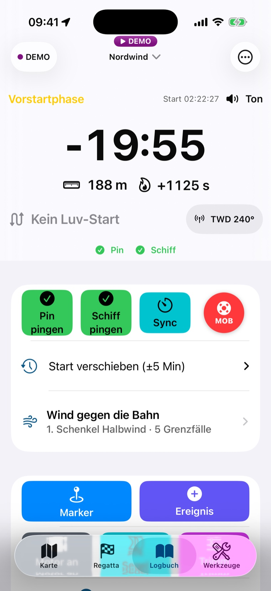
123456
Regatta demo “Pre-start” in the logbook: NSV Wednesday race, just under 20 minutes to the gun. All figures come from the demo’s simulated data, the wind here from the built-in demo wind (captured without a connection).
Countdown — to the gun; in the last minute the orange capsule “LAST MINUTE” sits above it.
Distance and time-to-burn — perpendicular distance to the line; if the boat is heading for the line, the time left over at the current approach is added.
Line bias — which end is to windward, for example “Boat +17° · 35 m” or “Line square”; if the first leg is not upwind, it says “No windward start”. On the right the wind direction, in the demo from the simulated wind sensor.
Pin and boat — both ends pinged; otherwise distance and time-to-burn are missing.
MOB — on the right of the first row, hold for 0.6 s; the voyage’s map preview is dropped in the pre-start, and the controls sit directly below the countdown.
Wind against the course — until the gun, the shortcut to the table: point of sail of the first leg and the number of borderline cases. The whole row opens the race’s briefing.
Test
Start the regatta demo with “Pre-start” and let it run to the end: does the demo boat round every mark on the correct side, does the app write the finish entry after about an hour and a half, and does the analysis then find the tacks and gybes?
Create a race with the starting gun in 20 minutes, lock the iPhone and put it away: do the pre-start and start notifications arrive on time without you opening the app?
Tap “Sync” at the signal: is the countdown then right to the second with the race officer’s clock?
Listen to the signals in the pre-start, phone in the mount and app in front: do tone and call-out come on time with the race officer’s clock, and are they loud enough against wind and water? And with the phone locked in your pocket, put away before the pre-start begins: do tone and call-out arrive there too — including the double tone at the start of the pre-start —, and does your music carry on at full volume afterwards?
Ping both finish ends: does the app detect the finish crossing, and do tracking and countdown stop on their own?
From the bundled club course to the running countdown — the complete route, using the Wednesday race of the Neustädter Segler-Verein as the example: join, understand the course in the editor, start on race day.
In Etmar a course is the race track as a data record: start line and finish line from two points each, course marks with detection radius and rounding side, and if needed gates, zones, info points and the time rules of the notice of race (shortening, extension, time limit per mark). On the map: start line green, finish line dark grey, marks yellow, course sequence dashed. If the finish line is the same line as the start – both ends at most 30 m apart, as on many windward-leeward courses –, a single label “Start / finish” appears there instead of two on top of each other. If two lines cross or their centres lie close together, there are still two labels, the finish’s one row lower.
It comes in two forms with the same controls: the course template, which you maintain ashore under Tools → Courses & waypoints and which applies every week, and the course profile of a voyage, which is copied from the template when you start and applies only to that race. The app calculates all times from the track — so a course can also be created or corrected after the race.
The quickest way in is a course from the community: sent in by other sailors, shipped with the app update — with organiser, area, dates and notes on the course. “Join” creates your own copy and enters the dates as a series in the calendar. You don’t have to place a single mark yourself.
Part 1: Getting the course
Tools → Courses & waypoints opens the course library. It sits under “Prepare” next to the calendar: courses are created here, their dates there.
12
Tools: the course library is always under “Prepare”, next to the calendar.
Courses & waypoints — course templates, waypoint library and the courses from the community.
Calendar — this is where the course’s dates end up; on race day you start from there (Part 3).
At the top, a segment switches between “Courses” and “Waypoints”. Without a course of your own there is an empty state, below it “Courses from the community”. The “NSV Wednesday race” card names organiser and area, the next date (or, once the season is over, that the next ones will come with an update), the number of course marks and the version. The note “Pursuit start” warns in advance that the date is only the first start. Below it the notice of race appears on three lines, followed by “More” — so “Join” stays close instead of disappearing under a wall of text.
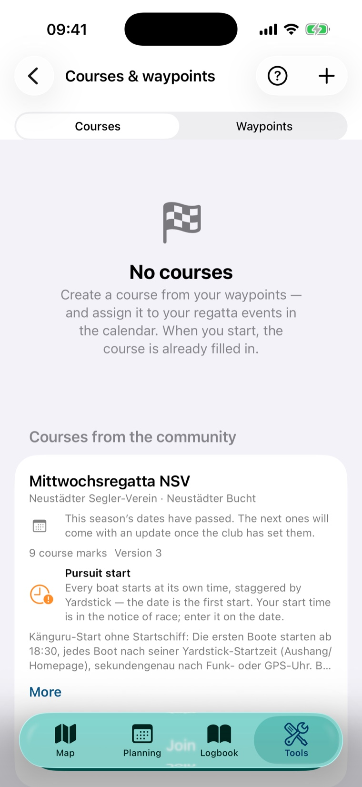
123456
No course of your own yet — but the NSV Wednesday race is waiting in the community section.
Courses / Waypoints segment — courses on the left, the waypoint library on the right.
Name, organiser, area — Neustädter Segler-Verein, Neustädter Bucht.
Dates, marks, version — in the picture the season is over; the card says the next dates will come with an update; nine course marks, version 3. When a course changes, the version number goes up.
Pursuit start note — the date is the first start; your time is in the notice of race.
“+” — creates your own course from scratch (see below).
Notice of race and “More” — the first three lines; “More” expands the whole text in the row.
“More” expands the notice of race in the row, “Less” collapses it again. It contains the sailing instructions word for word — course sequence, rounding sides, extension and shortening rule, time limit, shallow patch. Check it against the organiser’s documents. “Join” creates the copy. If the club changes the course later, “New version available” appears here: switch (old copy gone, dates move across, your own changes are lost) or keep both.
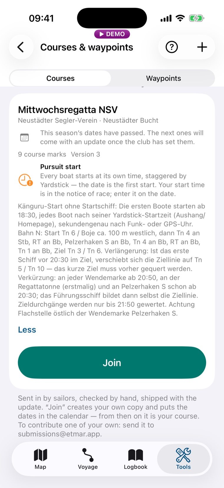
12345
After “More”: the complete sailing instructions for course N, “Less” and the “Join” button.
Version — number of the bundled course; a new version is offered here.
Sailing instructions — course sequence with rounding sides, extension if finishing before 20:30, shortening from 20:50, finish crossings until 21:50.
Less — collapses the notice of race back to three lines.
Join — creates your copy and enters future dates in the calendar.
Origin — sent in by sailors, checked by hand, shipped with the update.
In a kangaroo start (pursuit start) not everyone starts at the same time: each boat starts staggered according to its Yardstick, the calendar date is only the first start, and your time is in the notice of race or on the notice board. If such a course still has upcoming dates, the app asks for your start time straight after you join — to the second, with its own seconds field below the time, typed or set with the arrows, because the iOS time picker can’t do seconds but the sailing instructions require starting to the second by radio or GPS clock. “Take the start time” saves the time for all dates of this course; you change individual race days in the calendar. “Later” leaves the first start in place — the countdown would run out too early. With a new version the app asks again, because the rating changes from season to season.
The bundled dates of the Wednesday race (September 2026) are over — so the app doesn’t ask for the start time when you join, and the course goes straight into your courses (next step). In the demo the race days still appear in the calendar: the demo creates the Wednesday race as its own weekly series.
Back in the community card, below “Show course on the map”, is the green row “Joined — the course is in your courses”. The button draws the course on the main map.
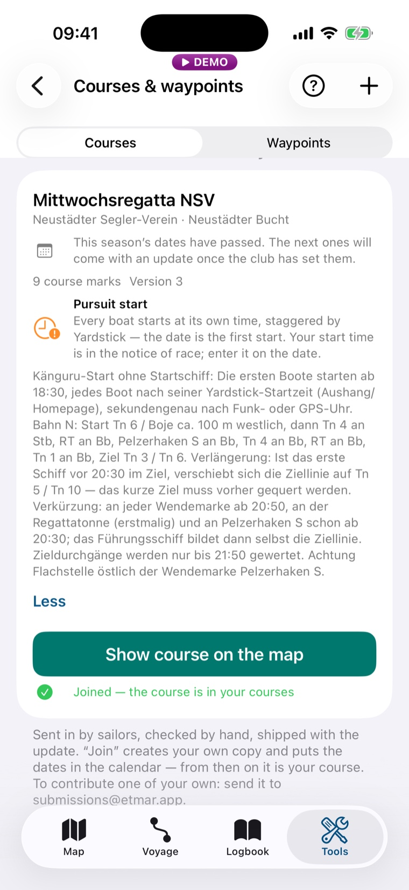
12
Joined: “Join” has become “Show course on the map”.
Show course on the map — draws marks and lines on the main map.
Joined — the copy is in your “Courses” list.
The “Courses” list now shows “NSV Wednesday race” at the top with “9 course marks” — your copy. From here on it is your course: editable, deletable, selectable as a template in the calendar and when starting. The community entry below it stays for switching to a new version. “Join” enters future dates in the calendar as a weekly series (Part 3) — for the bundled course only once the club has fixed the next season and it comes with an update.
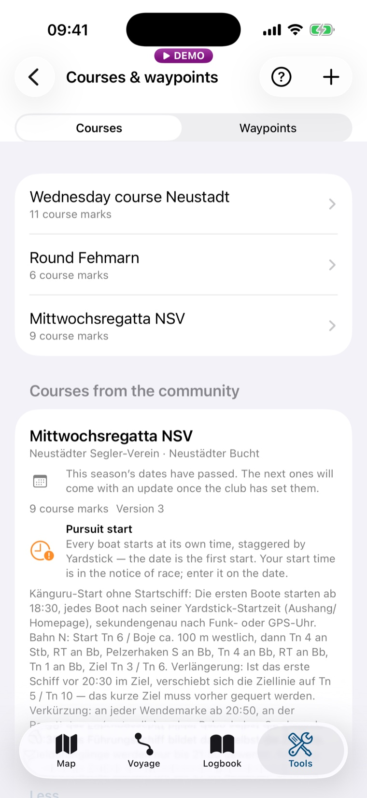
12
Your own copy at the top of “Courses”; the community template remains below it.
Your own course — nine course marks; a tap opens the course’s briefing, and “Edit” there opens the course editor.
Community entry — stays as a reference; “New version available” appears here later.
Part 2: Understanding and adjusting the course
A tap on your own course first opens its briefing — the course against the current wind: at the top first the map, each leg drawn by point of sail (upwind dashed, downwind dotted, otherwise solid) and, where there is room, labelled “number point of sail” — long legs first; whatever is crowded at the start is in the table. The names of the marks are not shown there but in the table — the map shows course and points of sail. Below it the wind choice Now · At start time · Assumed wind, a row with wind, source and age, the total time and for each leg the point of sail, the course true — on upwind and downwind legs both tack courses, the long one on top —, there the distance sailed with “≈” and the direct line small below it (the total row gives both), plus the time from the polar of your active boat. One tap further, the sketch: it is north-up like the map, with the wind as an arrow in it; “Map · Sketch” switches (C5, “Wind against the course”). Without wind there is no point of sail and therefore no sketch — it then says why. A diamond ◆ marks a borderline case; the footer says why. Without a polar there are no times, and upwind and downwind are classified against an assumed 45° or 150° to the wind; without wind, length and bearing are shown, and the sheet says what is missing.
Now is the value of “Wind now” on the map, fixed for the whole course, without shifts; if the course is more than 15 km away from you, the briefing fetches station or model at the course and says so in the row — without a connection and in the demo it stays with the wind from here, and a second row gives the distance. At start time calculates with the GFS forecast for each leg at its departure time: − and + step hour by hour from the next full hour up to 5 days ahead (held down, they keep counting); the row gives the run and age of the forecast. Without a connection, with “Wind from open sources” switched off or in the demo, the sheet says why there is no forecast. Assumed wind you set in steps of 10° and 2 kn, starting from the last wind shown: “what if it veers 20°”. It is called “assumed”, applies fixed over the whole course and is not saved. At the very bottom, under “Races on this course”, are the races that were created from this course — date, wind (mean and direction, plus the word for the source), race duration and place; a tap opens the race. No verdict or comparison is given there; that stays in the analysis.
Briefing of a race. Every race has the same view, with its own marks: in the Race details via the “Wind against the course” row (“Briefing” on the right) — before, during and after the race —, until the gun also via the same row in the logbook and via “Briefing” below the course list in the Regatta tab. “Edit” there opens the race’s course (Marks & lines), not the template; without a course it says “No legs without a course.” with “Choose course”. At start time begins at the race’s start time before the gun and calculates with its forecast, from one hour before the start with the local wind — at the start time the same points of sail and borderline cases appear as in “Wind against the course”. Table and sketch are in the briefing itself (C5, “Wind against the course”). Under “Races on this course” are the other races from the same template; if the race was created without a template, the sheet says so. In the regatta demo, “NSV Wednesday race (demo)” shows its briefing; “At start time” there calculates with the built-in forecast (“(demo)” at the source) or, with a connection and “Wind from open sources”, with real GFS and the note “Wind: real (GFS/station) · Boat: simulated”.
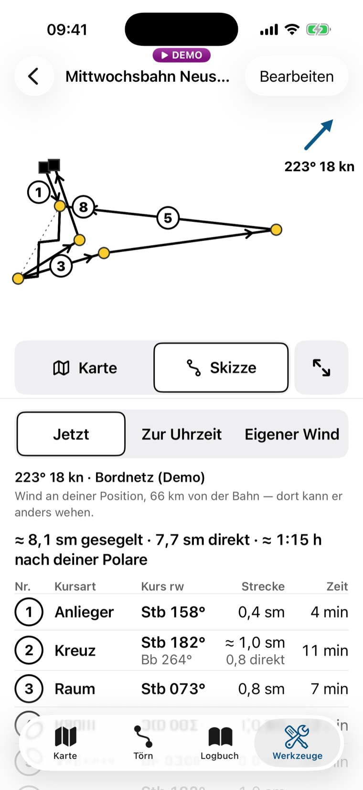
123456
Briefing for the demo course “Wednesday course Neustadt” with the current wind — here the demo’s simulated onboard-network wind, 35 nm from the course.
Edit — opens the course editor.
Number — the numbers on the legs of the sketch; the diamond means borderline, here leg 3; if two numbers collide, the shorter leg’s is left out; the table lists them all. Zigzag is upwind or downwind; the arrow at the top right shows where the wind at the start is blowing to. A tap on the leg shows the tack; names and tack on the legs are in full screen (if space gets tight, a name goes first, then a tack). On the map, “number point of sail” appears at the line; upwind dashed, downwind dotted, otherwise solid.
Map · Sketch — the briefing always opens with the map; a tap on “Sketch” shows the course as in this picture.
Wind choice — Now, At start time (GFS) or Assumed wind (assumed).
Source row — wind, source and age; far from the course, a second row says where the wind comes from.
Table — above it the sailed and direct distance and the total time, for each leg point of sail, course true with tack, distance and time from the polar; ◆ marks a borderline case.
Tapping the sketch, and full screen. Small in the briefing, the sketch shows only lines, numbers, marks and the wind at the start. Tapping a leg highlights it — wider, with a halo, its number filled (a diamond gets a ring), the others thinner and paler —, names the tack on it and shows its row from the table at the bottom of the sketch: point of sail, true course with the longer board first, distance and time. You don’t have to hit the line exactly; a thumb next to it is enough. A tap on empty space or on the same leg clears the selection. The button to the right of “Map · Sketch” opens the sketch full screen, portrait and landscape: the course fills the area, top right there is a panel with the wind at the start (solid) and at the finish (dashed), bottom left the legend and scale, plus mark names and the tack on the legs. No label covers another — when space gets tight, a name goes first, then a tack, and last the number of the shorter leg; zoomed in, they reappear. Double-tap zooms around that spot, + and − in steps up to six times, “Whole course” goes back, pinching with two fingers works too; zoomed in, you move the sketch with one finger. With −10° / +10° and −2 kn / +2 kn you turn the wind or change its speed; held down, the buttons keep counting: the first press switches to “Assumed wind · set by you”, starting from the wind currently shown, and sketch, row and table recalculate immediately; the view stays where it is. It is the same assumed wind as in the briefing, and it is not saved. In landscape, the row and buttons sit to the right of the sketch.
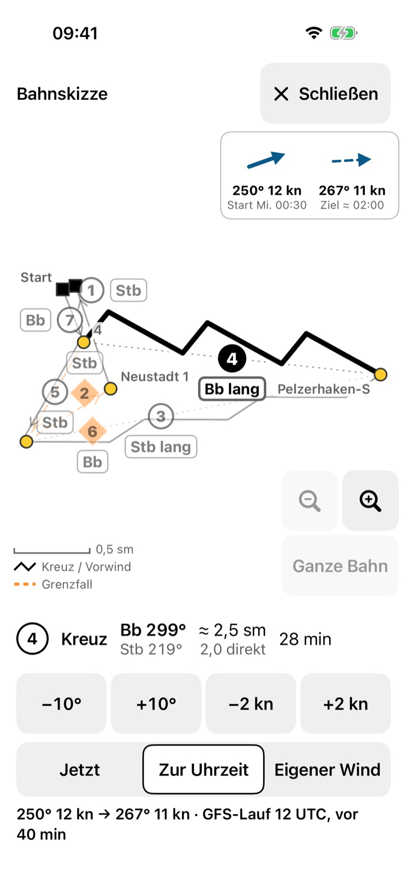
1234567
The sketch of the NSV course full screen, at the start time from GFS — as in C5, the forecast is made up for the picture; leg 4 has been tapped.
Close — back to the briefing, with the same wind choice.
Wind panel — wind at the start solid, at the finish dashed; each arrow shows where the wind is blowing to, with value and time below. If the course would otherwise lie underneath, it moves away from it.
Selected leg — wider, with a halo and a filled number (a diamond gets a ring); the others thinner and paler. This still works in night mode, where only red remains.
Zoom — − and + in steps, “Whole course” goes back; double-tapping the sketch zooms around that spot.
Leg row — the same values as in the table; without a selection, a hint.
Wind buttons — the first press switches to “Assumed wind”, starting from the wind shown.
Wind choice and source — as in the briefing; after a wind button it reads “Assumed wind · set by you”.
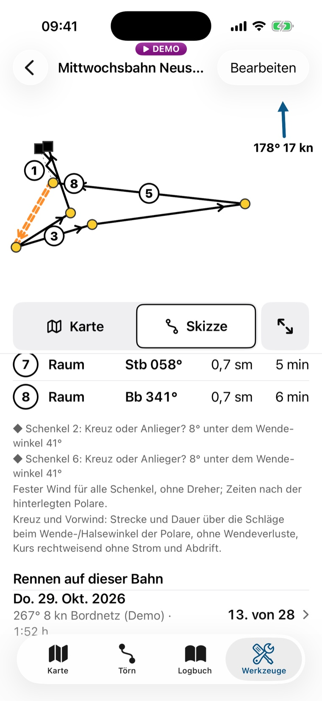
12
The same sheet scrolled down: the map stays in place.
Footnotes — the reason for the borderline case, then: steady wind without shifts, distance and duration on beats and runs over the boards without tacking losses, true course without current or leeway.
Races on this course — the sailed demo race with date, wind and source, race duration and place; a tap opens it.
“Edit” at the top right of the briefing opens the course editor as a full-screen map. On the right the tool palette (Mark, Gate, Info, Zone, Start, Finish), at the bottom the strip with the course sequence. With the “Mark” tool: tapping a buoy or a waypoint adds it to the course, tapping open water creates a new mark there, and tapping a course mark again means “round it again” (laps). The tool stays active; only after the second end of a line does the palette jump back to “Mark”. The arrow at the top undoes the last step on the marks, one step at a time. “?” shows a short help on how to use it, “Done” closes.
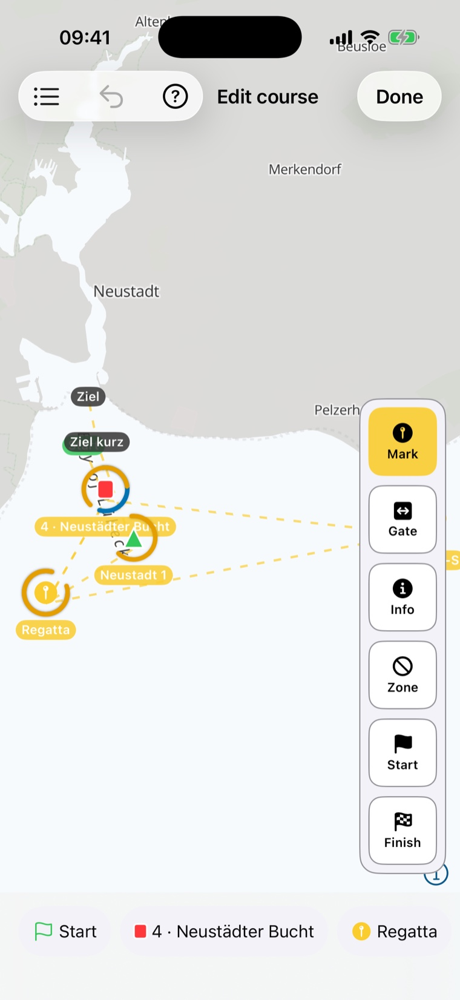
12345
Course editor with course N: start and finishes off Neustadt, the Regatta mark, Pelzerhaken-S in the east; the buoys carry their rounding arcs.
List — opens “Order & basic data” (next step).
Undo — takes back the last editing step on the marks, several times in a row.
? — short help on the palette and taps.
Tool palette — Mark, Gate, Info, Zone, Start, Finish; the active tool is orange.
Course sequence — start, marks, finish in order; a tap opens the mark’s sheet.
“List” opens “Order & basic data”: name, start procedure (class start, pursuit start or group starts) and the course order. “Edit” enables dragging. The chips “Stbd” and “Port” are the rounding sides: derived from the order — a left turn around the buoy = to port (red), a right turn = to starboard (green) —, and changeable by hand by tapping the row.
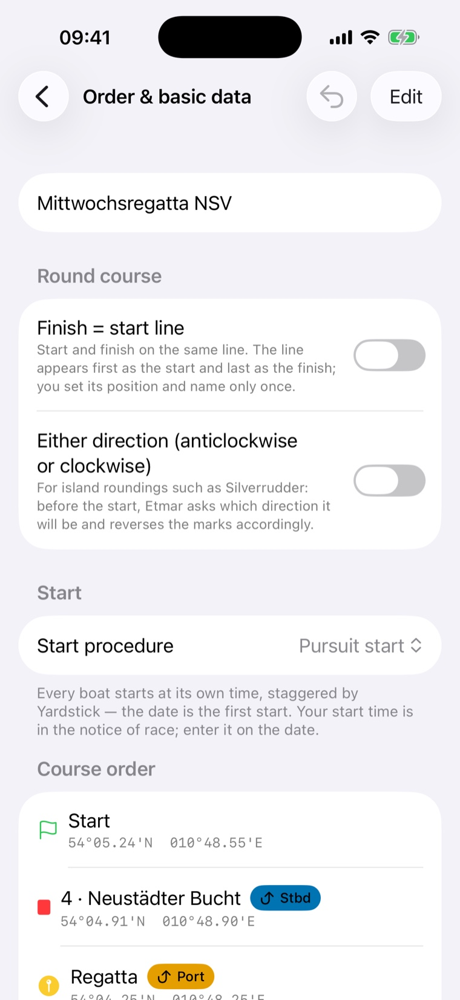
1234
“Order & basic data”: start, mark 4 to starboard, Regatta and Pelzerhaken-S to port, second lap, Neustadt 1.
Edit — change the order by dragging, remove marks.
Name — the name of the template; the events in the calendar carry it as well.
Start procedure — pursuit start; with upcoming events, the app therefore asks for your start time.
Course order with rounding sides — Stbd/Port chips for each passage, derived from the order, changeable with a tap.
Further down are the two finishes “Finish (short)” and “Finish” — course N has an extension. Then the info points, here “Shallow patch” east of Pelzerhaken-S. An info point is a note pinned to a spot in the area and deliberately not a course element: not in the course order, never timestamped. On the map it is yellow with an “i”; a tap opens the text. It comes with the course into the race on the main map — edit it in the editor, during the race read only.
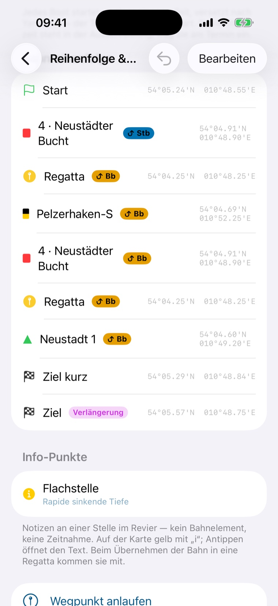
1234
Two finishes, an info point and the rows for adding via the list.
Finish (short) and Finish — first finish (mark 3 / mark 6) and extended finish (mark 5 / mark 10).
Info point “Shallow patch” — a note in the area, not a course element; readable on the main map during the race.
Add — Round waypoint, Start line (2 points), Gate (2 marks), Finish line (2 points).
Note on laps — round the same waypoint several times. The sentence begins with “Laps:”.
At the end of the list is “Course change”. Shortening and extending are interventions by the race committee with a fixed time in the notice of race — which is why they belong to the course. “Shorten course from time” (here 20:50): anyone who reaches a rounding mark only from then on is scored there. “Extend course if finishing before” (here 20:30): if the first finish is crossed before this time, the fleet sails the extra leg; which marks belong to it you set on a course mark (step 13). On the row of the first finish sits the switch “Treat as a gate when extended”: off means the first finish is no longer part of the course when extended; on means it becomes a gate with a passage time. This is only scored in the analysis: the app merely suggests the shortening, and it only scores the extension when it is beyond doubt.
The editor checks along. Two finish lines, but neither marked as the extension? Then a warning appears below the course order with the button “Mark second finish line as extension” – it marks the second finish and everything in between; Undo works as for every step. An extension time without an extension mark gets a note on the time rule that it has no effect, and the analysis says so too (“Extension: not applicable”) instead of staying silent. Without the marking, every race ends at the first finish. The same check is in the voyage’s course: Regatta → Course → List shows the warning and button in the same way — anyone who only creates the course on race day, or touches it up there, now sees it as well. In the analysis, the note appears directly below the extension time you set, not just in the footnote underneath.
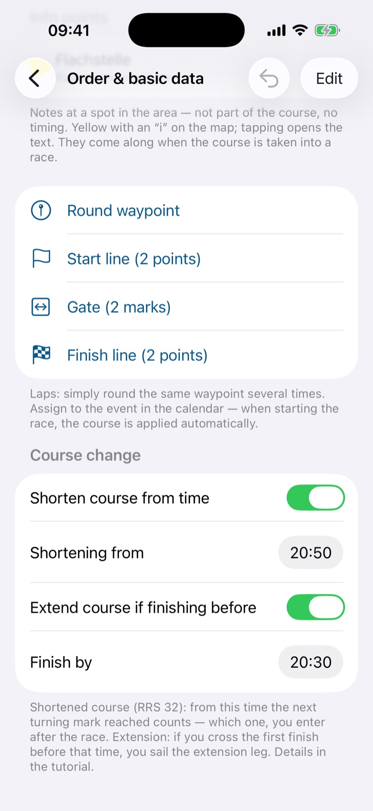
123
“Course change”: the times from the sailing instructions, both switched on.
Shorten course from time — 20:50; the general shortening time at every rounding mark.
Extend course if finishing before — 20:30; first finish crossed before this time = extra leg.
Explanation — how the analysis handles both cases and where the extra leg is marked.
Tapping a mark in the course sequence opens the “Mark” sheet, here Pelzerhaken-S. At the top, name and position; the symbol in front shows the seamark type (inflatable buoy, lateral buoy, cardinal buoy, beacon, ship) that the map draws when you zoom in. “Rounding side” is set to “to port”; “Pass only” is for buoys that are to be left on one side without being rounded. The detection radius (default 60 m, 20–200 m) is only the tolerance within which the buoy counts as reached; the timestamp is the point of closest approach. “Time limit at this mark” is the earlier limit for this rounding mark, here 20:30: it is inherited backwards by earlier buoys without their own limit, never applies to the start, and with laps only to that one passage.
If you switch on “Pass only”, the detection radius disappears from the sheet — it does not apply to such a mark. It gets its time at the moment it is abeam, even at a distance of one or two nautical miles (up to 5 nm, at most one leg length); in place of the radius, a sentence explains this. For that it needs its side: if the course runs straight past it, Etmar takes the side of the course line on which it lies. If the course bends at it or it lies on the line, Etmar does not set a side itself — at a headland the inside would be meant, at a boundary buoy the outside, and only the notice of race says which; a note then appears there, and the mark is saved anyway. And the other way round: if you missed the detection radius of an ordinary rounding mark because the buoy had been moved, the row no longer stays empty — the moment abeam applies here too, as long as it was within the narrow corridor around the buoy: ten times the radius, at least 500 m, so 600 m with the default radius.
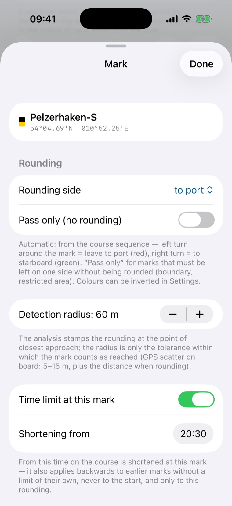
1234
Mark Pelzerhaken-S: to port, 60 m radius, its own time limit 20:30.
Name, position, seamark type — the symbol in front of the name is the type the map shows when you zoom in.
Rounding side / Pass only — to port (red) or to starboard (green); “Pass only” for buoys that are not rounded.
Detection radius — 60 m default, 20–200 m; only the tolerance, not the timestamp.
Time limit at this mark — 20:30, earlier than the general shortening; inherited backwards.
Further down in the same sheet: “Round again (another lap)” adds the same buoy to the course again — position, name and radius are maintained only once, and each passage gets its own rounding time and a lap badge. “The extension starts after that” sets the cut for the extra leg: everything after this row belongs to the extension, the row itself does not. On the NSV course the cut therefore belongs after the first finish (“Finish (short)”): the first finish triggers the extension and is never part of it; at Pelzerhaken-S the switch stays off.
1234
The same sheet, scrolled down: laps and the cut for the extra leg.
Explanation of the time limit — inherited backwards, never for the start, per passage.
Round again — put the same buoy into the course sequence one more time.
The extension starts after that — off, because the cut belongs after the first finish.
Explanation — everything after this row counts towards the extra leg, the row itself does not.
You meet the second editor on board: in the “Regatta” context tab, “Course” opens the course profile of the current voyage; in the Course chapter of the analysis, the way in is called “Adjust course”. Same full-screen map, same palette, same course sheet — only the scope is different: in the template you maintain what applies every week; here, what applies today. If the race committee moves a buoy at short notice, you correct it here without touching the template, and if needed save the changed course as a new template via the menu.
1234
The editor on board in the regatta demo “Race running” on the NSV Wednesday race: the same map and palette as in the template, at the bottom the race’s course sequence.
Back “Course” — leads to the voyage’s context tab.
Undo, ?, List, menu — as in the template; via the menu the changed course can be saved as a new template.
Course sequence — the race’s marks in order, here Start, 4 · Neustädter Bucht, Regatta and onwards (the bar can be pushed sideways). For a voyage without a course it reads “Tap a mark or the water”: the first mark is created with a tap.
Part 3: From the event to the starting gun
Tools → Calendar shows the series under “Upcoming”: every Wednesday “NSV Wednesday race” — with a pursuit start at your start time, not the first start; in the demo at 18:00. On race day you tap “Start” in the event. The training event “Forestay trim training II” on Tuesday also carries “Start”: it creates the training, without a countdown. With “+” you create your own regatta events, with the row “Course template”. Series can be edited together: “Apply to future events in the series” carries over name, time, boat, course and notes to all outstanding events.
123
Calendar in the demo: the weekly series of the Wednesday race at 18:00 with the boat “Vertigo Express”, other events in between.
Series events — every Wednesday with course, start time and boat; individual days can be changed.
Start — on race day creates the race including course and countdown, after confirmation.
“+” — your own event, for regattas with the row “Course template”.
The other way is via the logbook: with no voyage open, the menu at the top right (⋯) offers “New voyage”, “New race” and “New training”; “New race” opens the same form as Map → Cast off → Race …, which the map only offers with the focus “Regatta”. “Cast off” below it, on the other hand, starts a normal voyage without a countdown. With no voyage open, “Regatta” and “Training” also appear directly in the list, in the “Today” section above “Next event” — the same forms as in the menu.
12
Menu (⋯) in the logbook: create a race without a calendar event.
New race — opens the form from the next step.
Cast off — normal voyage without a starting gun; not for the race.
The form asks for name, starting gun (quick picks +5 to 1 h, or date, time and seconds), pre-start duration (5, 6, 10 or 15 minutes; 5 for 5-4-1 starts), course and scoring. The course row offers your templates — marks, lines and time rules come along. If there is a calendar event with a course today, it is pre-filled; the picture shows “None” because there was no event on the day it was taken. Without a course, the pre-start has no line, distance or bias. Tracking begins with the pre-start; “Start” creates the race.
12345
“New race” from the menu (⋯): starting gun with a seconds field, pre-start duration, course template.
Name — pre-filled with the date, freely editable.
Starting gun — quick-pick chips, date, time and a separate seconds field.
Pre-start duration — 5, 6, 10 or 15 minutes; tracking runs from here.
Course — choose a template; with a calendar event on race day it is already filled in.
Start — creates the race.
“Start” in the calendar asks first — “Create race”: “NSV Wednesday race” is created with course and countdown, in the demo “Start 18:00”. “Create now” creates the race with course profile, time rules and your start time; a mistaken tap on “Start” has no consequences.
12
Confirmation when tapping “Start” from the calendar.
What is created — name, course, countdown and the start, here 18:00.
Create now — only this tap creates the race.
The context panel switches to “Regatta”: at the top the course as a list, mark by mark in course sequence, below it three handles — “Course” with the number of marks and lines (opens the editor on board, step 14), “Analysis” and “Details”. Until the gun, “Briefing” sits below the list: the race’s course against the wind (C6); during the race the row disappears. Countdown, distance to the line and bias appear at the top of the map during the pre-start, not here. After the scored finish the tab is called “Voyage” again and shows the voyage too. There, instead of the stage plan, it then shows “Race analysis” — a tap opens the same analysis as “Analysis” before the finish.
123456
“Regatta” context tab before the gun, taken in the regatta demo “Pre-start” (just under 20 minutes to the gun): the course of the NSV Wednesday race, eight marks and lines. The three handles sit above the tab bar, without scrolling.
Course as a list — one row per passage with number, name and side; during the race the tiles and “After that” appear here.
Briefing — the race’s course against the wind (C6); only until the gun.
Course — with the number of marks and lines, opens the editor on board.
Analysis — after the race; see Race analysis.
Details — the race details (next step).
“Regatta” tab — the context panel now shows this face.
“Race details” is the race’s voyage detail: Analysis, “Course” with Marks & lines, Map, Redraw track, Daily report (wind) and below that the summary with the starting gun to the second. Here you check before casting off whether starting gun and course are right. The row “Wind against the course” opens the race’s briefing (C6) — before the start at the very top, during the race and after the finish below the analysis.
123
Race details after the finish: analysis at the top, the course has been carried over; the starting gun appears further down in the summary.
Analysis — after the finish the key figures and the start; a tap opens the race analysis.
Wind against the course — after the finish without a forecast, only the way into the race’s briefing (C6); before the start the forecast appears here (C5).
Course — Marks & lines — here ten elements from the template, correctable afterwards too.
In the logbook the race appears as “Waiting for pre-start” with the countdown to 18:41:00. “Sync” rounds the starting gun to the full minute at the race officer’s signal; “−5 min” and “+5 min” move it when the start is postponed. “Set wind” supplies the wind direction for the line bias as long as there is no NMEA wind. Everything else — pre-start, pinging the line, race, finish — is in C5.
1234
“Waiting for pre-start”: the countdown runs to your own start time of 18:41:00.
Countdown — time to your own starting gun, with seconds.
Sync — tap once at the signal, and the starting gun snaps to the full minute.
−5 / +5 min — start postponement; tapping several times adds up.
Set wind — wind direction for the line bias.
Your own course without the community
If your race is missing from the community list, you build the course yourself — via “+” in Tools → Courses & waypoints. You don’t have to type in the buoys of the area: under “Seamarks in the area” the waypoint library shows the named buoys from the loaded chart data, sorted by distance; a tap takes over name, position and type. Adopted seamarks are kept separate from your own waypoints; deleting removes only the copy.
Round course: Finish = start line. If the course ends where it begins – island races such as Silverrudder –, open the course under Tools → Courses & waypoints, tap “List” at the top and in the “Round course” section (directly below the name) switch on “Finish = start line”. In a race’s course, the same section is at the very top of the list. The line then appears twice in the course: at the front as the start, at the end with “as finish”. You enter coordinates and names only once. Without a start line the switch is locked (“Set a start line first.”); it replaces a separate finish line only after confirmation, and the undo arrow at the top brings it back. If you round the same buoy several times, in Etmar you are sailing “Laps” – “Round course” only means start = finish.
Either direction. If the course can be sailed anticlockwise or clockwise, switch on “Either direction (anticlockwise or clockwise)” in the same section. Before the start the app then asks for the direction; the course marks are reversed accordingly, rounding sides set by hand flip with them (the list shows them as “Port”/“Stbd”), and the start and finish lines stay where they are. Without the switch the question does not come – otherwise it would appear before every club triangle. A shared course keeps the switch. In demo mode, the template “Round Fehmarn” shows both.
The direction question. If a race is running on a course with two directions and the starting gun has not yet gone, a selection panel appears in the middle – whether you started from the calendar, from the logbook or not yourself at all. The app works out which direction is clockwise and names the first buoy for each choice. “Later” postpones it until the next time you open it; after the gun it no longer asks. If you sail the other way after all, the app notices this from the track after a few minutes and offers once to reverse the course.
Changing direction. The chosen direction is shown in the race’s course – Regatta tab → “Course” → “List”, “Round course” section – as “Direction: Clockwise — first …”, below it the large button “Change direction”. It also works after the gun and does not ask for confirmation: the same button turns it back. If nothing has been chosen yet, both directions are offered there. The course row in the Regatta tab states the direction as a word (“anticlockwise” or “Direction open”).
123
Template “Round Fehmarn”, list: the “Round course” section below the name.
Finish = start line — the start line also appears as the finish at the end of the course.
Either direction — before the start the app asks “Which direction?”.
Course order — built clockwise, Flügge first; “Stbd” is the rounding side.
Start and finish lines are each made from two ends — a buoy from the area, a tap on the map, a pinged position or coordinates from the notice of race; the selection also offers the seamarks in the map view plus 5 nm around it. A gate is two buoys that you sail through; the passage is timestamped. Zones are areas you need to know about (prohibited area, nature reserve, shoal, note): “Zone” tool, tap at least three corners, “Done”, name and type. Neither a zone nor an info point is rounded.
Waypoints on the map and with a note. In the “Waypoints” segment there is a map at the top with all your own and adopted waypoints, as turquoise pins with names; tapping a pin opens the waypoint just like tapping its row. The map fits all waypoints into view, shows a single one in a 4 km view, and without waypoints your position. When you search, it shows only the matches. If waypoints lie close together, their names overlap – zooming in separates them. In a waypoint’s form there is a small location picture at the top with the seamarks around it; a tap on it opens the position picker like “Choose on map”. Further down, the “Note” field takes what you need to know about the spot (“lies further east in winter”). The list shows the note as a quiet line below the position, the search also finds text in it, and the GPX export includes it as the description. In demo mode, “4 · Neustädter Bucht” and the committee boat carry a note.
Images on the waypoint. In a waypoint’s form the “Images” section takes up to ten photos – “Choose from photos” or “Camera”, for example the buoy as it looks from seaward. A tap on an image shows it large, the × at its corner removes it; changes are only kept with “Save”, and “Cancel” discards the images too. With ten images both buttons are locked, and the line below says that one has to go first. The first image appears in the list on the left, in place of the seamark symbol. No images appear on the maps, and neither the GPX export nor a shared course includes them. In demo mode, “4 · Neustädter Bucht” carries a sample image.
12
Waypoint library: the map at the top, your own waypoints below; further down come the adopted seamarks and the seamarks in the area.
Map — all your own and adopted waypoints with names; tapping a pin opens the waypoint.
Your own waypoints — Neustädter Bucht, pin end, committee boat; created yourself, with seamark type. The grey third line is the note. Neustädter Bucht carries its own image, shown on the left instead of the seamark symbol.
Sharing
A course leaves the app in three ways, all free. Etmar share: touch and hold in the course list → “Share (Etmar share)” creates an .etmarshare file for AirDrop, Mail or a messenger; info points travel with it, and the recipient adopts it with one tap after a preview. Marks, info points and zones with invalid values (position or radius) are not adopted by the app — a line only with both ends, a zone only with all corners; the preview and the “Adopted” display say how many entries were left out. GPX for the plotter: “Share as GPX (plotter)” in the same place exports the course as a GPX 1.1 file for B&G, Garmin, Raymarine & co. — buoys become waypoints, the course order a GPX route. Send to Etmar: the same menu item as for feedback opens a ready-made email with an attachment; you send it, never the app, and what goes with it is stated in the email text along with a rights statement. No server, no account: it is checked by hand and delivered with the next update.
Test
Is the way Join → Calendar understandable without instructions? Where would you have got stuck?
Do the marks, rounding sides, time rules and events of the NSV course match the notice of race? Name every discrepancy.
Can you find the rounding side and the time limit of a single buoy in the editor without reading this article?
After you cross the finish, Etmar breaks the race down into numbers. At the top an overview that answers “how did it go” — below it six chapters that answer “why”.
All analyses have one place: Tools → Analyses; from the boat page, an “Analyses” row leads there. The page sorts them by category — Races, Manoeuvres & helming, Boat & speed, Sails & trim, Training, Season & voyages — and shows each analysis as a card with a title and a key figure (“8 legs”, “5 races”); key figure and chart come from the same calculation as the detail, and if wind from the onboard network is missing for it, the card says what is missing. How the cards are built is described in the next paragraph. Races, trim and training are calculated by the page immediately; the analyses across all sessions (season, helming steadiness, polar, target angles, heel, tack asymmetry, crossover, statistics) show key figure and chart once you have opened their detail once — until then they read “Key figure and chart after you first open it”. The app calculates these cards itself, without holding up the controls: a few seconds after launch, after a change of boat and when a voyage is added, ends or is deleted — also when the demo starts. The cards fill one after another; until then they read “Calculating …”. While a voyage is being recorded it does not calculate, and the first opening still applies. After a correction it recalculates as soon as you are back on the page. What a card has shown once is there again after the app restarts, until a new voyage or a correction can change the number. That way the page stays instantly usable even with hundreds of sessions. A tap opens the detail; the race cards (Start, Course, Manoeuvres, Speed & trim, Wind) open their chapter of the latest race with a track directly — or of the chosen race: if the boat has two races with a track, the race picker sits above the race cards, like the boat picker at the top; the choice applies to all race cards and the pages behind them, and the large card is called “Race” instead of “Last race”. Without data the card says why it is empty and where you create it; without a race with a track, a line below the large race card names the other race cards. What only Pro shows sits in a collapsed row at the end of each category (“2 more with Pro”). Each analysis lives only here: boat, polar data and trim list say in one sentence where their analysis is and lead here with a row. The only direct ways to the same detail are the voyage detail of a race (“Analysis”) or training (“Measured runs”), the “Analysis” row in the context tab during a race, the crossover in the sail list and, in the trim entry, “Compare with …” together with its measured run. What each card shows, where its numbers come from and where it goes wrong is in C17.
A grid of equal-sized tiles. Under each category the cards sit as tiles, all the same height — two side by side on iPhone, three on iPad; one per row on iPhone from “Large text” upwards, so that no title is truncated, and everywhere with the larger accessibility text sizes. Every tile reads the same way: the title at the top, the arrow on the right; below it the key figure on one line; below that, in up to two lines, what it refers to (“7 tacks · 4 gybes” under “11 manoeuvres”, “missing: upwind below 8 kn …” under “53 %”); at the bottom exactly one thing — the detail’s chart in miniature, the coverage as a bar, the source of the values, the way to create it, or “Calculating …”. Coverage. Sailed polar, target angles, target heel, sail crossover, trim by wind speed and strengths profile carry a bar at the bottom, with the covered fields to its right (“8/15”: wind band per point of sail for which the analysis has enough data); where the values come from is stated in their detail. “53 %” as the polar’s key figure counts the same fields — it is not speed against the polar. If one of these tiles cannot fill at all without a particular source, such as heel without an attitude sensor, it names the source, and the bar stays empty (“0 %”). The tile carries no explanatory sentence, and “From demo data” no longer appears on every card: in demo mode the DEMO badge at the top says so, and only a tile whose source differs carries “estimated” (start line drawn instead of pinged) or “Demo” next to the title. When the numbers are from is stated once under the category heading (“12 sessions up to 31 Oct 2026”, “Season 2026 · 6 races up to …”); which race the race tiles show is stated by the race picker above them, or, with only one race with a track, by the line under “Races”. Only these have the full width: the large “Race” card (chart on the right), the boat and race pickers, the “Data quality” tile, an empty card with a way in, the “Practice courses” and “Collect data” rows — together in one panel — and the Pro row.
123
“Boat & speed” category in demo mode with Pro, iPhone, standard text size. All numbers come from the demo sessions.
Key figure and status — the share of covered fields (“53 %”), below it what is missing; with a two-line title there is one line left for that, the full text is in the detail.
Coverage — the bar with the covered fields (“8/15”: wind band per point of sail). It appears instead of chart and source; the detail shows both.
Finding and coverage — target angles and heel keep their value as the key figure; the bar counts their grid (upwind and downwind 10 fields, upwind only 5). Without a wind sensor it shows “—”, the sentence on the source and an empty bar with “0 %”.
Which boat? If you have created more than one boat, the boat name sits in a row at the very top of Tools → Analyses — built like the race picker of the race analysis. A tap opens “Choose boat” with all boats in the order of the boat list; after that all cards calculate for the chosen boat. The active boat for instruments and logbook stays the same, and when opened again the page shows the active one. Voyages on a guest boat are not a boat of their own; they count towards the boat they are attached to. The row is always there, even with one boat — then without an arrow, and a tap opens nothing. Under the name it says quietly what is being calculated for: type, sail number and the sessions and races of the current season with the date of the latest (“12 sessions, 6 races · Season 2026 up to 31 Oct”) — counted, not rated; voyages on a guest boat are not counted there. If the page shows a boat other than the active one, “active boat: …” appears below. In demo mode, “Vertigo Express” and “Nordwind” sit side by side.
Data quality. Directly below the boat name there is always the “Data quality” tile: how many analyses have everything they need with your equipment — as a count, not as a percentage: “16 of 25 full”. The count is against the analyses that are possible at all with what is on board. Anything that needs a sensor your boat doesn’t have does not count against you and is listed separately (“With wind sensor: 8 more”). Without an onboard network, the tile therefore counts only what GPS can provide; what can only be done more coarsely from it, for example with an estimated tack, counts, but not as full. Below that, what is not full (“6 partly · 3 missing”, without an onboard network “5 coarser from GPS”), and in the footer the one next step that opens up the most analyses (“→ Sail downwind above 20 kn”, “→ Add trim entry”). On the right there is a dot for each analysis; the shape tells the state, even at night under the red filter: full (circle with a tick), partly (half circle — gaps in the wind grid or coarser from GPS, for example with an estimated tack), missing (dashed — something you can make up yourself: trim entry, polar, sails, training, course, start line, the first session, the next race) and sensor (struck through — needs hardware). Anything still calculating does not count anywhere; if there is no step yet, “Calculating …” appears in the footer.
A tap opens the “Data quality” page. At the top the next step: what it unlocks and a button to where you take it — “Collect data”, Polar data, Sails, “Check instruments” (if a gateway is set up but there is no wind on the track points) or the race details; trim entry, training, first session and next race are in other tabs, so the way there is given as a sentence. Below that, per category, each analysis with its state and reason — it is the same sentence its card says —, on the right “full”, “coarser”, “missing” or the coverage (“6/15 fields”). Analyses with the same reason share a row; only what leads to a step has an arrow; what needs a sensor sits collapsed at the end of the category. At the very bottom, under “Which sessions count”, there is now the row “Data basis”. Without Pro the tile counts the free analyses, and the second line says in advance: “Pro: 6 of 13 would work for you” — a prediction from what is on your track points (wind, log, heel), not a calculation.
123
Top of the analyses hub in demo mode with Pro and onboard network, iPhone, standard text size. All numbers come from the demo sessions.
Key figure and status — “16 of 24 full” counts the analyses that have everything with this equipment; below it, what is partly there or only calculates more coarsely from GPS. If the boat lacks a sensor, a second line appears here (“With wind sensor: 8 more”).
Dot matrix — one dot per analysis, the shape tells the state: tick for full, half circle for partly or coarser. Dashed (missing) and struck through (sensor) do not occur in the demo with onboard network.
Next step — the one step that unlocks the most; here a wind band missing in three grids. A tap on the tile opens the page with the “Collect data” button.
Your performance.Pro Above the categories there are five tiles: Start delay, Per manoeuvre, Extra distance, Result and Speed vs polar. A sixth, “How it’s calculated”, gives the calculation in one sentence; it opens nothing. Each shows a level across your scored races of the current season — the calendar year of your most recent scored race: the first race sets it, and each further race pulls it a third of the way towards its own value — for extra distance, a long race pulls harder. Below it, it says whether the latest race made the level better or worse, and by how much; the upward arrow always means “better”, even where the number falls, and below a small threshold it says “unchanged”. The units do not depend on the length of the race: seconds after the gun, the median cost per manoeuvre, extra distance as a share of the distance sailed, the result as place divided by fleet size (“Top 20 %”), speed as polar performance. A level appears from three races with a value, the trend from the fourth; before that, the tile says how many races with a value there are so far (“2 so far”). Extra distance and speed need wind from the onboard network and a polar — without them the tile says so; start delay, manoeuvres and result work with GPS and your placing (with an estimated tack, “From GPS: port or starboard estimated” appears alongside). A tap on a tile opens the analysis with the value per race. If there is a previous season with a level, its level at the end of the season appears after the trend (“End of 2025: 11 s”). Without Pro, a row sits in this place.
How well covered. Six cards collect over many sessions into a grid of point of sail and wind band — Sailed polar, Target angles from measurement, Target heel, Sail crossover, Trim by wind speed and Strengths profile. Instead of a counter they say how much of it is covered (“53 % covered”), and in a line of its own what is missing (“missing: upwind below 8 kn, broad reach and one more”). On the tile the share appears briefly as “53 %”, with what is missing below it. 100 % means every wind band (per point of sail the analysis calculates) — not just those in your area. For polar, crossover and trim the share is the key figure; for target angles, heel and strengths profile it appears below the finding. If a card cannot fill at all without a particular source — wind sensor, attitude sensor, stored polar —, it names the source instead of a number. What “covered” means for each card is in C17.
The analysis has two levels. Level 1 is the overview: race sketch, race card, key figures and the time-loss waterfall — the page that opens after you cross the finish, readable in one go. Level 2 is six chapters, each on its own page with its own help button: Start, Course, Speed & trim, Manoeuvres, Wind and Scoring. Previously, all of it was in one single long list; anyone who wanted to see the start distance scrolled past everything else.
Which race? At the very top is the row with the name and date of the race you are looking at — likewise above a race chapter you opened from Tools → Analyses. It has two lines: the name, below it the date and gun (“31 Oct 2026 · Gun 18:00”). A tap on it opens the list of this boat’s races with a track, newest first, with placing, the one shown with a tick; the choice recalculates the whole page, and you stay in the same chapter. From the analyses, the latest race with a track is preselected — or the one you chose there above the race cards —; from the voyage detail and the context tab, the one you came from.
Where the values come from. Every analysis that reads values from the onboard network says so in a quiet line — on its card in Tools → Analyses and at the end of the chapter: measured, “Onboard network: TWA · AWA”; without a wind sensor, the substitute, such as “From GPS: port or starboard estimated (wind entered by hand at the start)” or “Wind from the logbook”. Without a log, the app calculates true wind over ground; Speed & trim says so in its line instead of claiming STW: “Onboard network: TWA · TWS over ground (SOG), no log”. Without a wind sensor, the analysis counts tacks, gybes and boards from the GPS track; overview and chapter then carry the estimate caveat under “Where the values come from”. Without any tack, the racing tally shows “–” instead of 0. In demo mode, the “Evening race without wind sensor” shows this — via the race picker at the very top. On the tile in Tools → Analyses the line sits at the bottom: a substitute always, even instead of the chart; measured values where the tile carries no chart (the performance tiles name only the substitute) — otherwise the chapter says it.
The chapters are cut by the question you ask, not by the data source. That is why the SOG trace sits with the manoeuvres — there you tap a manoeuvre and it is highlighted in the trace. The zones sit with the start, because you open them when you want to know whether you were clean before the gun. And the course change sits with scoring: it writes the same field as the race outcome — kept separately, contradictions would arise.
Level 1: the overview
Race sketch — directly below the race picker the race appears as a picture: the course as in the briefing, north up, straight legs with their numbers, start and finish as squares, marks as circles; on top of it your track from the gun to the finish crossing (without a finish, to the end of the recording), blue by day, amber at night. A leg is always selected — on opening, the one with the most extra distance, i.e. the one the race card names; without a polar, leg 1. Its stretch of track is drawn wide, and its row appears below: at the top in semibold, point of sail, time and distance sailed (“Upwind · 35:21 · 2.8 nm”), below it extra distance and manoeuvres (“Extra distance +8 % · 7 manoeuvres”, without a polar the raw “Detour”) Pro; in the free version it reads “Extra distance and manoeuvres with Pro”. Without wind from the onboard network the point of sail is estimated from the track — it then carries an asterisk, and below it says quietly “* estimated from the track”. You change the leg with a tap on the line or with ‹ › to the right of the row (60 pt each; after the last comes the first again) — the safe way in a seaway, because in a tight corner of the course two lines lie under one finger. “Full screen” shows the same sketch with zoom (double-tap, + and −, “Whole course”), portrait and landscape, with the same row. If the race has no course, the sketch shows only the track with start and finish and says where to create the course. The sketch needs no network and no chart packs. If you have scored an extension, the track runs beyond the drawn course: the sketch draws the course up to the first finish, and the legs of the extension have no number.
Race cardPro — three sentences at the top of the overview: what the start cost, the leg with the most extra distance, the best and worst tack (with wind from the onboard network, the upwind performance against the polar instead). The single glance — and at the same time the way down: every sentence can be tapped and opens the chapter that explains it (start sentence → Start, extra-distance sentence → Course, third sentence → Manoeuvres or Speed & trim). If a finishing position has been entered, the card shows “3 of 14” with a Change button next to it; without the fleet size “Place 3”, without an entry the prompt to enter it. Both routes lead to the Scoring chapter.
Key figures — free from the iPhone GPS: race duration, distance in the race, avg and max SOG, speed at the starting gun (with a log on the NMEA network the speed through the water, otherwise over ground — polars apply through the water, so the log takes precedence). Only the race phase from crossing the start line to the finish is counted — the pre-start and the way back to the harbour would distort distance, avg SOG and tack balance. Next to it is the official time from the starting gun, and the difference as start loss. Only what was sailed and measured is scored: reconstructed sections and engine phases according to the logbook are left out of distance, avg and max SOG, tack balance and manoeuvre costs; mark and manoeuvre times remain. An orange line below the distance says how much time this affected (“11 min reconstructed — not scored”); if it is almost the whole race — usually a forgotten “engine off” —, a sentence there shows the way into the logbook.
Directly below sits “Times wrong? Correct window & gun”. The button leads into the Start chapter and opens the editor there straight away — and it is there in every tier, because all the key figures depend on this window. Putting a correction behind a lock would be the wrong kind of economy.
No analysis window. If the starting gun lies after the end of the recording — the race was ended in the pre-start or after a recall without a warning signal —, there is no race to calculate over. Instead of “No track data”, the analysis then gives both times, the stored gun and the last track point, and offers the gun correction directly below — the same as in the Start chapter. If there are at least two track points between the corrected gun and the end of the recording, the analysis appears immediately; otherwise the correction stays in the same place. Or you leave the race unscored; the recording is kept as a voyage. If start and end of the window have been set the wrong way round or too close together by hand, “Reset window correction” resets the correction. If a correction in a chapter dissolves the window — such as a window start after the finish in the Start chapter —, the chapter shows the same reason and way out on the spot instead of an empty page; once the window is back, the chapter is back too.
Time-loss waterfallPro — it breaks your deficit down into items: race duration, reference time, + start, + manoeuvres (n × avg), + extra distance (nm), + speed & the rest. The total adds up exactly; whatever the measured items don’t explain is shown as the rest. If the start can’t be quantified — no start line in the course, no crossing of the start line found or course side cannot be determined —, a muted sentence with the reason takes its place, on screen as in the PDF report, and its time goes into the rest; a start at the gun is called “Start without loss”. This sets priorities: if extra distance costs eight minutes and manoeuvres 1:39, tacking practice is the wrong investment. From GPS alone the reference is your best own race on the same course: the same course template or the same marks, each no more than 100 m from its counterpart; shortened, extended, abandoned and retired races don’t count. With wind from the onboard network it is the polar-optimal time for the course, leg by leg with the wind that actually blew there: upwind via the beat VMG (the necessary zigzag is included in the reference), downwind via the run VMG, reaching against the polar target speed for the true wind angle sailed. Extra distance then only counts the distance beyond what that point of sail requires. Against your best race, its name appears in the reference row, the items are simply called “+ start”, “+ manoeuvres” and “+ extra distance”, and “there” in each sub-line says against what. Extra distance then counts the distance you sailed more or less than there on each leg — the necessary zigzag is included in both races. A leg only counts if both races recorded it completely from mark to mark; otherwise its time is in the rest. Without a wind sensor the number doesn’t say whether it was wind or tactics. Start and manoeuvres are also the difference to that race: the start with both times underneath, the manoeuvres with both figures, for example “20 × avg 7 s, there 16 × avg 6 s, from the speed dip”; over the line earlier or lower costs than there are shown with a minus. The manoeuvres are measured the same way on both sides: from the speed dip (the time lost from the drop in speed in the GPS) as soon as either race lacks wind from the onboard network, from the VMG loss only if every manoeuvre of both races has it. Tapping an item leads into its chapter, and there the comparison sits where the number arises: in the Course chapter under each leg the distance there and the difference (“there 2.3 nm · +0.1 nm”, below 0.1 nm in metres; if the leg is missing there or not fully recorded, “there — (not fully counted)”, if a piece is missing here, “there — (not fully counted here)”), in the Start chapter under “Line crossed +15 s” the line “There: line crossed +11 s”, in the Manoeuvres chapter at the very top both figures as under the item. The name of the race appears once in each of these chapters. The same applies if you open Course, Start or Manoeuvres directly from the hub: the chapter first shows your values, and those from there are added as soon as the reference race has been found. If either race lacks the start, a sentence gives the reason, for the reference race with its name, and its time is in the rest. The last item is called “speed & the rest” — besides speed it also contains the inaccuracy of the reference, because it is a model calculation.
The items of the waterfall are also the table of contents. Tapping “+ start” leads into the Start chapter, “+ manoeuvres 1:39” to the manoeuvres, “+ extra distance” into the course, “+ speed & the rest” to Speed & trim. Race duration and reference are reference values and therefore carry no chevron — they lead nowhere. If you lack the tier for the target chapter, the tier appears as a word on the item — “speed & the rest · Pro · NMEA” — and tapping opens the tier overview instead of an empty page.
Below it is the chapter list — and at the very end, after everything free, a single collapsed row for what your tier doesn’t calculate: “6 more analyses with Pro”, below it the sentence “Pro rates start, course and manoeuvres from the GPS track — with wind from the onboard network also polar, point-of-sail balance and wind shifts.” and where the values come from. Tapping expands the rows — race card and time loss, start summary, extra distance, roundings and final approach, speed & trim, manoeuvre costs and best board, wind & shifts —; each leads to the Pro overview.
123
Level 1, upper part: below the race selection the race sketch of the Wednesday race, leg 5 selected; below that the race card begins. Key figures, “Times wrong?” and the waterfall follow further down.
Race sketch — course with leg numbers, over it the track from the gun to the finish; the selected leg drawn wide.
Leg row — number and point of sail, to the right ‹ › to step through; below time and distance, after them extra distance and manoeuvres Pro.
Race cardPro — three sentences: what the start cost, the leg with the most extra distance, the upwind performance; below it the finishing position.
Level 2: the six chapters
Chapter
What’s in it
Tier
Start
Start summary, analysis window & starting gun, zones
mixed: window and zones free, start summary Pro
Course
Marks & times, rounding quality, legs, final approach
mixed: marks, times and legs (duration, distance, SOG) free; VMC, extra distance, rounding quality and final approach Pro
Speed & trim
Point-of-sail balance, tack balance, polar matrix, groove, heel, over ground vs. through the water, current & leeway
Pro
Manoeuvres
Tacks & gybes, boards, SOG over time
mixed: number of tacks and gybes, boards and SOG over time free; cost per manoeuvre, VMG per board and best board Pro
Wind
Wind & shifts, wind over time
Pro
Scoring
Result and finishing position, scoring, course change
free
No chapter ever disappears. If data is missing, the subtitle says what is missing — “Needs a course set up with marks”, “Needs wind from the onboard network at the track points”. If, on the other hand, the tier is missing, the chapter does not stay as a lock between the open rows: it moves into the collapsed row at the end of the list, together with everything else that is locked. This only affects the two chapters that are entirely Pro — Speed & trim and Wind —, and tapping opens the Pro overview. At the top of the list there are therefore only chapters you can actually open: in the free version Start, Course, Manoeuvres and Scoring. The mixed chapters never carry a tier in their subtitle: they contain the facts of the race next to Pro content, and the row says what you get there without Pro — for the start “Correct times and the starting gun”. Locking them away would close correction routes that are open.
Start chapter
Analysis window and starting gun — free in every tier. The section names the origin of both limits: line crossing, log entry, starting gun or — marked orange — only the end of the track. Under “Correct the limits” you set both by hand or reset them to automatic. That is also where the starting gun is — in case it was wrong in the voyage, for example with a pursuit start with your own start time. Either directly as a time or via the route you really have on board: “I was X seconds late over the line”. The OCS verdict, delay, speed at the gun and the official time you compare with the results list all depend on it. The window is most reliable with a start and finish line set up.
Start summaryPro — distance to the line at the gun, delay until the crossing and the position on the line (pin third, middle, boat) as a marker between pin and boat. With the manual wind entered in the pre-start, also the line bias at the gun and whether the favoured end was taken, plus the speed build-up from 30 s before to 60 s after the gun. If the boat was over the line at the gun, this is shown in orange with a warning triangle — but only if the distance is greater than the accuracy of the line: pinged ±5 m, drawn on the map ±25 m. And only if it stayed that way: anyone over at the gun has to return and start properly (RRS 29.1) — if you cross again in the starting direction before the first mark, it shows “over the line — returned” with a return arrow instead of the warning triangle, and your start time is the second crossing. The app doesn’t know which flag was flown; under I, Z, U or black, stricter rules apply. On a drawn line, 20 m is a drawing error, not an early start; the summary then says so and points to pinging. Which side is the course side comes from the course (on which side the first mark lies) and only as a fallback from the wind — for a start that doesn’t go to windward, the windward side isn’t defined at all. If it can’t be determined from either, the summary doesn’t guess but says so: “Course side cannot be determined”, together with the way to add the first mark in the race details under “Course” — the same sentence appears in the PDF report. In the race card the line then reads “Line crossed +x s (course side unknown)” instead of “Start +x s”, and the value doesn’t go into avg start delay or the time-loss waterfall at all: without a checked direction, the crossing could also be the way back of an early starter who only starts properly afterwards. Live in the pre-start, the context bar and logbook then show “OVER x m” instead of distance and time-to-burn; both disappear as soon as the GPS fix is older than 10 s — otherwise a frozen fix costs an early start. The live warning itself is free, unlike the start summary above it: it depends only on the pinged ends, the course and the GPS, and an early-start warning doesn’t belong behind a tier. Since Build 13 the same derivation applies live: if the course side can’t be determined — no first mark clearly off the line and the wind is in line with it —, the app doesn’t warn at all and keeps showing distance and time-to-burn. A false red “OVER” in the last minute costs the start; a missing one costs nothing you wouldn’t have had without the app. The race details show distance and crossing at the gun in every tier at the top under “Analysis” (“Start: ≈ 12 m to the line · crossed +8 s”).
With wind from the onboard network the same summary adds the line bias from the NMEA wind, the speed at the gun as a percentage of the polar target and the single figure “Against the ideal start −38 m”: the deficit after 2 minutes compared with a start exactly at the gun at the favoured end — position, timing and speed in one figure. If the first leg goes to windward, it is measured against the beat VMG of the polar; if it goes elsewhere, against progress towards the first mark — a windward deficit would be the wrong question on a reaching start.
Zones — if the course has zones (prohibited area, nature reserve, shoal, notice), the app checks the track to see whether you touched one: with time, duration and distance sailed inside it. If you were in none, it says so explicitly (“No zone touched”). It is calculated without tolerance — a prohibited area is a hard edge, and a smoothed figure would round away exactly the cases you ask the question for.
12345
Start chapter: the start summary with distance and delay at the gun, position on the line, line bias and favoured end.
Distance to the line at the gun — below it the accuracy of the line: drawn ±25 m, pinged ±5 m. Only if the distance is greater than this uncertainty does the app judge it an early start.
Line crossed — the delay from the gun to the crossing.
Position on the line — marker between pin and boat, here in the pin third.
Line bias and favoured end — from the manual wind, with Pro from the NMEA wind.
Against the ideal start — the deficit after two minutes compared with a start exactly at the gun at the favoured end (Pro).
Course chapter
Marks and times — with a course set up, the rounding time at each mark plus the leg time since the previous mark, with marks rounded several times stamped separately for each lap. At a gate, next to the time through it, it shows which of the two marks you rounded — “left mark” or “right mark”, as seen in your direction of travel through the gate, not on the map; over several laps you can see whether your gate choice paid off. If you sailed through the middle without rounding either mark, nothing is shown there — claiming a side would be a guess. “Adjust course” leads into the course list; after a correction the analysis recalculates.
Marks that are only to be passed carry a second line: on which side you left them and how far off — “left to port · 1.4 nm”. If it was the wrong side, the requirement is in the text (“· required: stbd”) and the line is red; never just the colour. If the app recognised the side from the course rather than you setting it in the editor, “(auto)” follows (“required: stbd (auto)”) — then it’s worth checking whether the detection understood the course correctly. Below 30 m offset it names no side, only “abeam · 7 m” — that close, the side is GPS noise. Below a turning mark whose detection radius you missed, it only shows “abeam · 288 m”: the distance to the entered position, without a side — if the mark had been moved, the side would say nothing. Rounded turning marks don’t get this line: there the distance is a GPS question, here a rules question.
Rounding qualityPro — every scored mark rounding from the SOG profile ±60 s: speed dip at the mark, recovery time and the cost against the approach speed (over several laps with Δ to your best own rounding of the same mark), plus the turn before and after the mark as a shape figure. For rounded marks, rounding side and distance are deliberately left out, both are below GPS accuracy; marks stamped abeam don’t appear here at all — their time is the moment abeam, not the rounding.
Leg summaryPro — per leg the time, distance sailed, extra distance and VMC, the progress towards the next mark: pointing, speed and extra distance in one figure, without wind data. Extra distance only counts what goes beyond what that point of sail requires: the zigzag of a beat is already included in the half tacking angle of your polar, so +0 % means as short as it gets. A good beat ends up at a few per cent. If a leg shows “below close-hauled norm −21 %” instead of “extra distance”, you were shorter than the polar-optimal zigzag: pointed higher or laid the mark — distance saved, speed paid for. Without a polar, the raw detour (sailed ÷ straight line) appears instead, which upwind never drops below about 130 %. If a leg is missing a reconstructed section or one sailed under engine, neither extra distance nor detour is shown there: the scored distance against the whole straight line would come out too short. If sail changes were logged in the race, each leg shows the sail set, with wind from the onboard network also the leg’s polar % — “was the code zero right here?”. Without logged changes nothing is guessed. Without Pro, each leg shows duration, distance and avg SOG — the facts, without a verdict.
Final approachPro — the last 200 m: chosen end of the line with position on the line, avg speed and the distance as a percentage of the straight line. 100 % means dead straight; extra distance in the last few metres is almost always wasted time.
Speed & trim chapter Pro
The whole chapter depends on wind and log data from the NMEA network — or on demo mode, which simulates them.
Point-of-sail balance — VMG upwind and downwind, the points of sail detected automatically from the true wind angle, plus the avg performance against the polar. It is calculated against the speed through the water as soon as a log is on the bus; without a log the analysis flags this in orange — then the current is in the percentage, in a different direction on each board.
Tack balance — time, distance and avg SOG per tack as well as VMG and avg TWA upwind per tack (colours per Settings → Map → Tack colouring). If one tack consistently gives more than 4 % more VMG, the recommendation next to it is to check the masthead offset of the wind sensor (Boat → Calibration) — a consistent difference is almost never skill, but trim or wind sensor. Without a log, the true wind is calculated over ground; then it can also be current, and instead of the recommendation it says “Current or sensor — can’t be told apart without a log” (also in the PDF report).
Polar performance by wind and course — instead of one percentage over the whole race, a matrix of wind band × point of sail (upwind/reaching/downwind), time-weighted with the measuring time per cell, only cells from one minute. This gives a training goal like “upwind above 16 kn”, not just “be faster”.
Groove consistency — the upwind points as a cloud of |TWA| × speed over the stored polar curve: tight means consistently in the groove, left below the line too high and too slow (pinching), right above it too low and fast. Plus σ(TWA) and σ(speed) — 2° of scatter is a different kind of sailing from 6°. Needs at least 30 upwind points with a wind angle.
Heel (EXPERIMENTAL) — avg upwind and downwind from the attitude sensor, with a target heel set (Boat → Calibration) the share of upwind time above it: “22 % above 28°” means reefed too late. Experimental here means: the calculation has not yet been checked against real onboard data, sensor offsets are in the value unfiltered.
Over ground vs. through the water — SOG and STW as two curves on top of each other, the band between them green when the current is pushing, orange when it is holding you back. Drawn as a moving three-minute average so that not every wave shows up as current. Tapping the curve sets a marker, gives the set at that point (“+0.4 kn along course (pushing)”) and offers “Show on the map” below. Three caveats belong with it, and the app states them: the difference is the current component along the course, not the current as a vector — with a cross-current the sign flips at every tack. A log error goes in 1:1. And the leeway from sailing is included too. If you want the vector, read “Current & leeway” below.
Current & leeway (EXPERIMENTAL) — the set as a vector (over ground minus through the water, needs STW and HDG), always with scatter; if the average lies within the scatter, the app says “no clear set detectable”. Log and compass errors are included in the value.
Manoeuvres chapter
Where the tack comes from — measured with a wind sensor; without one, the analysis estimates it from the course over ground against an estimated wind direction (manual wind at the start, logbook, your upwind boards, station, model or the bearing to the first mark). A course over ground frozen for minutes is replaced by the bearing from the positions. Whether your upwind boards were a beat or a zigzag downwind is decided by the hourly wind from station or model before the bearing to the first mark — on a round course whose first mark is not a windward mark, the bearing would otherwise sometimes choose the wrong reading. At the end of the chapter, under “Where the values come from”, the caveat then appears: gybes dead downwind are uncertain, costs only in seconds. When measured, it says “Onboard network: TWA · AWA”.
Tacks and gybes — without Pro the number of tacks, gybes and other course changes; with Pro each one individually with cost in seconds, speed dip in per cent and recovery time to 95 % of the speed before the manoeuvre. Whether a change of tack was a tack or a gybe is decided by the wind angle immediately before and after: in a tack the bow goes through the wind, in a gybe the stern. Manoeuvres right at a mark are thus assigned correctly, even if the leg before or after was already on average a reach. Best, average and worst tack at the top, average cost per wind band below (at 20 kn a 12-s tack is normal, at 8 kn it isn’t), after that the expandable list of all manoeuvres with time and wind band. Needs the 5-s race recording; individual values scatter in gusts and waves, over many manoeuvres they are reliable. With wind from the onboard network, the estimated manoeuvre loss in metres is added, measured against the VMG of the neighbouring boards over the whole window until recovery.
Boards — the list cuts a board not only at a change of tack but also at every rounded course mark. If you go round the mark on the same tack and then sail a completely different course, you would otherwise get upwind and downwind averaged in one board — and thus a VMG that never existed. Each row gives tack, point of sail, duration and speed; with Pro VMG and polar performance per board are added — how much height the board really gained and how well it went against your polar. Without Pro the row shows the speed over ground. Without a wind sensor the point of sail is shown estimated and with an asterisk (“Upwind*”, “Reaching*”, “Downwind*”): from the course over ground against the same wind direction the analysis uses to estimate the tack — manual wind at the start, logbook, station, model, your upwind boards or the bearing to the first mark. The limits are the same as when measured (upwind up to 75°, downwind from 135°); a board under 30 s shows “–”. Dead downwind, both sides of a gybe count as Downwind*, because the angle to the wind is averaged without its side. Below the list it says where the wind direction came from and that current distorts the point of sail, with station or model also shifts. If you set the wind by hand at the start and your upwind boards — without them the hourly wind from station or model — are more than 30° off, the footnote also gives their direction (“Your upwind boards give 272°.”); the calculation still uses the manual wind. The estimated point of sail only appears in the row: it doesn’t make a best or worst board and goes into no summary. The same point of sail* appears without a wind sensor on the legs in the Course chapter, with the same footnote below; extra distance, polar norm and leg times are calculated without it. In demo mode, the “Evening race without wind sensor” shows this.
Best and worst boardPro — marked in the list so you don’t have to compare twelve VMG figures. Separated into upwind and downwind: 5.5 kn VMG downwind is not “better” than 3.6 kn upwind, it is something different. The marker only appears from three boards on the same point of sail — with two, one would inevitably be the best and the other the worst. Reaching boards stay unmarked: there the VMG to the wind says nothing about the quality of the board.
SOG over time — the speed over ground over the whole race as a curve. It sits in this chapter and not under Speed & trim because you read it together with the manoeuvres: tapping a manoeuvre opens the map view (see below) and at the same time highlights the manoeuvre in red in SOG over time — the list stays put instead of scrolling away under your finger, and the highlight is still there after you close the map view.
12345
Manoeuvres chapter: count, total loss, best and worst tack, cost per wind band.
Tacks and gybes — counted from the track, in every tier.
Total loss in metres — manoeuvre loss against the VMG of the neighbouring boards, with Pro and wind from the onboard network; from here on everything is Pro.
Best and worst tack — cost in seconds, speed dip, recovery time.
Best and worst gybe — the same three figures for the gybes.
Tacks per wind band — average cost per wind band; below it the list of all manoeuvres expands, and tapping an entry in it opens the map view.
Wind chapter Pro
The whole chapter depends on the wind sensor on the NMEA network — or on demo mode, which simulates it.
Wind & shifts — from the recorded wind direction: oscillating, persistently shifting or steady, with amplitude, period or total shift, plus the conditions with wind range, gustiness and direction spread. “On the lifted tack” gives the share of upwind time on whichever tack was more favourable — measured against the moving wind average of the last 12 minutes —, the response to headers, how long you sailed in the header before you tacked. The footnote gives the source of the true wind: from the bus, calculated from apparent wind and log, or from apparent wind and SOG — then the current is in direction and strength. A wind figure with a source is one you can believe.
Below it is the matching rule of thumb: in an oscillating wind, stay on the lifted tack and tack in the header; in a persistent shift the other way round — get early to the side it is shifting towards. With a steady direction, the side of the course is decided by current and pressure, not by shifts.
Wind Over Time (TWS) — the true wind speed over the race as a curve. It answers whether the gust you remember really was one — and shows when the breeze freshened.
Scoring chapter
Scoring — free in every tier, because it changes the key figures. It covers races without a finish crossing: “Race abandoned” (the race committee abandoned, flag N) or “Retired” (your own boat dropped out) — kept separate because they are two different things. The calculation then runs to the end of the recording or to the limit from the analysis window; the warning “from the end of the track” is dropped, because here the end of the track is the right answer. Performance, boards and marks reached are still fully analysed — an abandoned race is just as useful as training.
Result and finishing position — also free. This is where you enter finishing position and fleet size, and where the switch “Exclude from the overall analysis” sits. Class, series and rating (Yardstick/ORC) you enter when creating the race in the race form. The way from the top is short: “Enter finishing position” or “Change” in the race card jumps straight here.
Course change — the app never scores a shortened course automatically: whether the course was shortened depends on when the leader of the fleet reached the mark, and your device can’t see that. It makes a suggestion (“Shortening applies from 16:00. First mark after that: Mark 4 at 16:04. Score there?”); if you confirm, that passage becomes the finish crossing, and everything after it is greyed out in the course. The app only scores an extension when it is beyond doubt — in exactly two cases: you yourself went through the first finish before the stored time, or the marks of the extra leg are in your track. If you yourself were too late, that doesn’t mean “no extension”, the leader may still have been through before the time; the analysis then asks and scores the short course until you answer. Overriding always works in both directions. Your answer moves the finish entry to the crossing of the finish line that then counts — with an extension, that of the extra leg; analysis, logbook and voyage map follow. If the extension is already established from the track but the finish entry is still at the first finish (that is where automatic finish detection sets it), the app doesn’t move it on its own: under “Course extension” there is then a sentence with both times and the button “Move finish” — a tap sets the entry to the long line, “Undo” puts it back. The same offer comes when the extension is established from your own finish time — you were at the first finish before the deadline —; the sentence then gives this reason instead of the track. What happens to the first finish is governed by the switch “Treat as a gate when extended” on the course: off — it appears unscored in the analysis; on — it counts as a gate with the time through it and the mark taken. Without an extension it remains the normal finish crossing. The course’s time rules are in the same section and can be corrected per race.
Map view: where it happened
A number in a list says what, not where. That is why, across all chapters, every
row that refers to a moment or a section of the race has a map view:
manoeuvres, boards, course marks, legs, start and
final approach — plus the point you tap in the “Over ground vs. through the water”
curve. Tapping the row opens it as a sheet from the bottom — the whole track grey, the relevant part in colour, for
a moment (tack, rounding, gun) a circle round the spot and two minutes of track around it.
The map can be panned and zoomed with + and −; it uses the same
offline packages as the main map, so it also works without a connection. Below it the figures
of the row appear again: time, duration, distance, speed.
1234
Map view of “Board 2” of the demo race: the beat in Neustadt Bay, highlighted in blue in the grey overall track.
Title — which row you tapped; “Done” closes the sheet.
Map — whole track grey, the selected section in colour. Panning works, the rest of the race stays visible as context.
Zoom — more reliable than pinching with gloves on, as on the main map.
Figures for the row — here time window, distance and avg speed of the board.
Enlarging charts
Below every chart in the analysis is “Enlarge”. In the list a chart is about 350 pt wide — in a two-hour race that is one pixel per twenty seconds: enough for the trend, not enough for the question “what happened at 19:12?”. The button opens the same chart in full screen. There you pinch the time axis open with two fingers — lower limit two minutes, below that the curve shows noise and no information —, pan through time with one finger and bring back the whole race with “Show all”. Held in landscape, the chart takes the full width: a time series needs width, not height.
Tapping the curve sets the red marker in full screen too — and the line below gives time and measured value and offers “Show on the map”. If you tap it, the full screen closes and the map opens: you wanted to go to the map, after all, not back to the chart.
Pinching open, panning and “Show all” apply to the three long time series: SOG over time, over ground vs. through the water and wind over time. The tap also applies to the speed build-up around the gun — that one can’t be pinched open, it only shows a minute and a half anyway and the zoom’s lower limit is two. There the axis counts seconds around the gun, so the line below the chart gives “−12 s” instead of a time, and the map shows the approach with the start line. The marker stays until you tap somewhere else: a mis-tap in waves costs nothing.
The groove is the exception — it has no time axis. It also opens in full screen, but can neither be zoomed nor tapped there: there is no moment a marker could point to.
Beyond the single race
Sail crossoverPro (wind sensor on the NMEA network — the measured actual comes from TWA, TWS and polar percentage; entering the range is free) — under Tools → Analyses → Sails & trim → Sail crossover, even while no sail has been created yet; the sail list under Boat opens the same screen with one row — per sail the stated against the measured wind range: where a sail set with this sail delivered the best polar % of all those carried (per wind band × point of sail, from 5 min measuring time per cell, across all scored sessions — since 09/2026 also voyages, see C11 “Which sessions count”). “Your A2 really carries up to 19 kn, not 16” — with an arrow as the action. Below it the zone field: wind speed vertical, wind angle horizontal, and for each sail set the range in which it was not demonstrably worse than the best — not the range in which it won. Where colours overlap, it is a draw: there you don’t need to change. Tap a sail set to highlight its zone. Empty spots are not extrapolated — the measuring time is missing there (at least three minutes per sail set and five per field). Below that, as before, the measured crossover table with the best sail set per wind band and point of sail. Needs clean logging of sail changes; empty cells are not extrapolated.
The racing tally under Tools → Analyses → Racing tally adds up the boat’s races: races, race hours, race miles, manoeuvres, best and average finishing position. No silent filter: excluded races are listed with a reason — by hand (can be included again) or automatically (under 10 min / 0.5 nm). If more than 90 % of the race time was under engine according to the logbook, the race is also left out, with the reason “mostly under engine according to the logbook — check engine on/off” instead of “too short”. At the top is the season — the calendar year of the starting gun. Counters and curves show the most recent season with a scored race; tapping the season row opens the earlier years, and the footer of the counters names the one shown (“Season 2026 · calendar year of the starting gun”). Nothing is deleted, and there is no longer a manual cut-off date: races before a cut-off date set earlier count again in their year. Under “Reset” there remains “Reset the sailed polar (new sails)” — it only sets the cut-off date of the sailed polar.
From two scored races on, the long-term curves are added. All of them respect the exclusions and show the selected season; each says what it still lacks instead of disappearing empty:
Form trendPro — from GPS as an avg SOG trend (the trend is right, the level is not normalised), with wind from the onboard network as polar performance per race, separated into upwind and downwind with a 100 % reference.
Manoeuvre learning curvePro — median manoeuvre cost per race, from GPS in seconds from the speed dip (without a wind sensor with an estimated tack), with wind from the onboard network in metres.
Start historyPro — avg distance at the gun, avg delay, distribution of end choice pin/middle/boat, hit rate “took the favoured end” and, as soon as finishing positions are recorded, “your best results came from the pin”.
Strengths by wind bandPro — avg polar performance and finishing position per wind band; the wind band comes from the wind sensor on the NMEA network, without one from the wind details in the logbook — then only the finishing position counts, labelled “Wind from the logbook”. If the session carries wind from open sources, the wind band comes from there, labelled “Wind from station” or “Wind from model”.
This season against last. After the curves, a section compares the season shown with the previous season — the last year before it with a scored race; if there is a year without races in between, a line says so. In every tier the count for both seasons is shown (“2026: 9 races · 14 h · 54 nm” and 2025 below), without an arrow — it is a fact. Pro also compares each topic in one line, “value against value”, with an arrow (up means better, below a small threshold “unchanged”): avg SOG only per wind band with at least two races in both seasons — otherwise it says “not comparable” with the most frequent band of both years, because avg SOG would otherwise measure the wind, not the form —, with wind from the onboard network in both seasons the polar performance upwind and downwind, metres per manoeuvre and extra distance instead; the seconds per manoeuvre, distance and delay at the start, the rate for “favoured end” (“4 of 6”), the result as top % (place divided by fleet size) and the strengths profile per band (with wind from the onboard network as polar performance, otherwise also as top %). At the top is the wind of both years (“2026 mostly 8–12 kn · 2025 mostly 12–16 kn”), on the line its source where it isn’t GPS or your own entry (onboard network, tack estimated, wind from the logbook). If only one season had wind from the onboard network, a sentence appears there instead of a number. With fewer than two scored races in a season there is no comparison, with a reason; in the first year it says “No previous season yet — the comparison comes with the first counted race next year.” Without Pro, a line in that place says what Pro compares here.
123
“This season against last” in the demo with Pro: six races this year against four the year before. The count and wind for both years are above it.
Value against value — this season first; the up arrow means better, below it the source (here wind from the onboard network).
Per manoeuvre — median of the races; if a tack is estimated from GPS, that is noted below.
Result — place divided by fleet size as top %, with the number of races per season.
Sailed polarPro (needs the wind angle from the wind sensor on the NMEA network — without it there is no angle axis) — under Tools → Analyses → Boat & speed → Sailed polar — only there; the polar data says in one sentence where it is and leads into the analyses with one row — shows what the boat really does: as points over the stored polar, one view per wind band, angles in 10° steps (both tacks together), per cell the 90th percentile of boat speed — not the maximum, not the mean. The cells fill themselves when a race is completed, strictly filtered: engine phases, manoeuvre windows ±20 s, high rate of turn, gaps over 60 s and reconstructed tracks are thrown out; races on someone else’s boat never count, measured runs from training are included. Under 5 min measuring time a cell stays pale and without a figure, from 30 min it is full; without STW the app measures over ground (SOG, marked with *) — then the current is in the value. The “New sails” cut-off date and the tally’s exclusions apply here too. Applying to the stored polar only happens on request, cell by cell from 30 min measuring time, with old and new value per cell, deselectable — never automatically, so that a badly sailed season doesn’t lower the targets.
The polar says what it doesn’t score. Below the chart it says: engine phases according to the logbook, reconstructed distance and manoeuvres — fast turns, and in a race also 20 s before to 20 s after every detected tack, gybe or course change. If the polar stays empty, the empty state gives a possible reason: a race or training session that is under engine throughout in the logbook (such as an “engine on” without an “engine off”) yields no cells. The fix is in the session’s logbook: delete the engine entries or correct their time.
Test
After crossing the finish, can you find out in under a minute what cost you the most — and does the waterfall item take you to the right chapter?
Are you missing a figure that used to be on the one long page? Name it and say in which chapter you looked for it.
Is the analysis window right on its own after a race (both limits “from line crossing”), or did you have to help under “Correct the limits”? The way there is the button directly below the key figures.
Do distance, delay and position on the line in the start summary match what you experienced at the start? If you started without a first mark and the wind was in line with the line: does the summary say “Course side cannot be determined” — instead of claiming a side? Does the manoeuvre list detect all tacks and gybes — or do manoeuvres show up that you never sailed?
With a log on the bus: does the band between SOG and STW match the current you expected — and does the sign flip at the tack the way the caveat announces?
Set the demo tier to Free: does the collapsed row at the end of the list say clearly what Pro would rate there — and is a fact you look for after the race missing in the open chapters? And does “Enlarge” work with cold, stiff fingers?
The same stretch twice, one trim change in between — and numbers instead of gut feeling on whether it brought speed.
In a race, wind and waves change all the time, and you repeat nothing. For the question “does this give more speed?” a race is therefore the worst data source. Training is the best: the same conditions, one change, the same stretch twice. That is exactly what the training voyage type with measured runs is for.
Creating a training session
A training session is a voyage with its own type. You create it via Logbook → Menu (⋯) with “New training”, or you choose the type (Voyage/Training) in the voyage form. At the pontoon it works without the menu: “Training” in the “Today” section above “Next event” opens the same form. And in the calendar, a training event of its own carries “Start” — in the row and at the bottom of the opened event; after the confirmation the training session is created, without a countdown, and you start runs and the practice course in the logbook. The map doesn’t offer training: the green button there is called “Cast off” and creates a voyage immediately. In the voyage list a training session carries its own badge so you can tell it apart from normal voyages later. Creating and logging are free — that is logbook, not a gate.
Starting and ending runs
A measured run is deliberately a one-button affair on deck. During a training session the logbook shows a full-width button that switches between “Start run” and “End run · m:ss” — no form, no input, one thumb.
Bring the boat onto course, set the trim, then tap Start run. From now on the button shows the elapsed time.
Sail the stretch. While the run is open, tracking records a point every second while under way.
At the end of the stretch tap End run. The run automatically gets a title (“Run 1”, “Run 2” …).
Change the trim, go back to the start of the stretch, start the next run.
You change the title afterwards in the log entry, for example to “Forestay +2” — then you see straight away in the comparison what the run tested. A mis-tap creates at most one run too many, and you take that back with the undo bar. Runs are normal log entries: a start and an end entry, paired like engine on/off. That is why they also appear in the voyage’s entry list.
Capturing trim on a run
In training you capture the trim as in any voyage via Logbook → Trim. The trim entry is assigned to the run in which it was captured — or up to 2 min after it. So you can end the run, take a breath and then enter what was sailed; the assignment is still right. Ideally you capture a trim for every run: then the run list shows on each run which setting it measured.
Collect data
Between runs, below “Start run”, there is a second, outlined button Collect data. It opens a sheet: at the top the manoeuvre series, below it one row each for the analyses that fill up over many sessions — sailed polar, sail crossover, target angles from measurement, target heel. Each of these rows shows its coverage like its card in the analyses (“53 % covered”, “missing: upwind below 8 kn …”) and a start as a measured run whose title names the gap: “Polar: upwind below 8 kn” is a run upwind in less than 8 kn of wind. If the analysis lacks its source, such as the wind sensor, the row says so and offers no start — a run that can’t fill anything would be wasted time. If everything is covered, there is no start either. Coverage and start of these four rows belong to Pro; without Pro a sentence appears there.
The manoeuvre series works with GPS alone and starts in every tier. During the run the target “10 tacks · 6 gybes” is shown large above “End run”. Nothing is counted — the target is the agreement with yourself. It is ended like any run, after which the series appears as a measured run in the list. In the manoeuvre learning curve it appears as its own dashed “Training” series next to the races; the races’ curve stays as it is.
In the pre-start and race and while a run is open, the button isn’t there. The coverage is the state of the last calculation under Tools → Analyses; under way the app doesn’t recalculate it, and after a restart under way it may say “No coverage yet.” there. The same list, without a start, is under Tools → Analyses in the Training section.
123
“Collect data” in the open demo training session with Pro. The percentages come from the demo data.
Manoeuvre series — target 10 tacks and 6 gybes, with GPS alone; the start creates a measured run “Manoeuvre series”.
Coverage — how much of the grid of point of sail and wind band is covered, and what is missing.
Start with gap — the measured run carries the gap in its title; the band closest to the current wind, without wind the first missing field.
Wind task on deck
While a wind task is running (“Polar: upwind 12–16 kn”), what you should sail is shown above “End run”: large the target TWA, next to it the time left until the minimum duration from which the analysis covers the field (polar and crossover 5 min, target angles and heel 10 min), below it the sail set. The target TWA is a target, not a measured value: upwind and downwind the best angle of your stored polar at this wind, on a reach and without a polar a guide value for the course — the line below says which. If the onboard network delivers no true wind, it says “No wind sensor” there instead of a number. You don’t have to operate anything; it is stopped with “End run”, and the run is kept.
A crossover run sets, at the start, the sail whose stated range of use (Boat → Sails) covers the gap, with the mainsail that is set; the undo message names it. If none explicitly fits, the current sail set stays. You can change it as always via “Sails” — the change then also applies to the run from that point on. The title of each wind task takes the gap whose wind band is closest to the current wind: from the onboard network, otherwise “Wind now” from station or weather model (the foot of the sheet says which). If the coverage is based on demo sessions, it says “From demo data.” there.
Hint when the wind fits. If the wind from the onboard network stays for ten minutes in the same band that an analysis is missing, a capsule “Wind fits “Polar: upwind 12–16 kn” — Logbook › Collect data” appears above the map. Only in an open training session between runs, once per gap and session, never in the pre-start or race, never during an alarm, no notification when the app is closed. Tapping it hides it; switch it off under Settings → Racing & training → Training. Because the gaps come from the coverage, the hint is only available with Pro.
Practice course
Under “Collect data” there is a third, outlined button, Practice course — with the same conditions: in an open training session, between runs, not during pre-start or a race. It opens a sheet; nothing is written until you tap “Go”, and “Cancel” leaves everything as it was. The app lays a windward-leeward course of virtual marks into the wind: windward and leeward mark, below them the start line, 60 m across the wind. The start line lies at the boat, 100 m below the leeward mark; the finish is the start line.
Wind. At the top is the wind the course is laid on, and where it comes from: onboard network, station with distance, weather model or manual. If the direction does not come from your own wind sensor, “±20°” appears next to it — no station and no model gets the direction on the water any more precisely. It gets more precise with “More precise: close-hauled”: sail close-hauled, then tap — the app takes the course over ground plus or minus half the tacking angle from the stored polar (without a polar 45°), and the side from the suggestion. If there is no suggestion, there are two buttons, one per tack. Without boat speed (under 1.5 kn) this option is not available.
Course. Length in three fixed steps, 0.4, 0.6 or 0.9 nm (windward to leeward mark), plus 1 to 3 laps. The course type is windward-leeward.
Preview. “Next” shows the course on a map, zoomed to it, with the hatched diamond between the laylines — that is where you beat, and that is where it is checked: draught plus 2 m of water everywhere according to the depth model, at least 150 m from the shore, and a depth value at every check point. The three rows Depth · Land · Data give the result. If the course does not fit, the app shortens it (0.9 → 0.6 → 0.4 nm) or moves it across the wind, up to 0.5 nm, and says so in one sentence (“Shortened to 0.6 nm”, “Moved 200 m east”); it is never rotated. If nothing fits: “No course fits here — sail a little further out.” The depths come from the downloaded offline depths; the “Depth” row gives the lower limit by depth contours (“At least 5 m everywhere”). If no draught is set for the boat, the app calculates with 2.0 m, says so in the same row (“No draught set for the boat — calculated with 2.0 m.”) and offers “Add ›” below: this opens the boat form, and after saving, the preview checks again with the draught you entered. Without depth data at the spot it says “No depth data here” with a way to the offline maps, and “Go” stays locked and appears faded. Axis ±10° and shorter/longer change the course with large buttons; the sentence “Model data — keep a lookout” is always there — model depths are not the chart, and the app does not check fairways or prohibited areas.
1234
Preview in the open demo training session: wind from the west from the demo onboard network, depths from the demo depths of the Bay of Mecklenburg.
Course — zoomed to it: windward and leeward mark as a dashed ring with “V”, the start line at the boat below the leeward mark, hatched the diamond between the laylines in which it is checked.
Sentence — what happened while fitting: “Fits as laid.”, shortened, or moved with direction.
Depth · Land · Data — tick or octagon; the depth as a lower limit (“at least 10 m”), followed by what the boat needs.
Go — only available when all three rows pass; when locked, the button appears faded.
Go. “Go” writes the marks to the training session and starts a measured run “Practice course windward-leeward 0.6 nm”; the undo message takes back run and marks. On the map the marks appear as a dashed ring with “V” — the shape tells you that there is nothing in the water — in amber at night. Free in every tier.
Sailing it. After “Go”, the course bar appears on the map and at the top of the logbook: first “Cross the start line”, after crossing towards the course the next mark with side, bearing and distance. The course time runs from crossing the start, not from “Go”; it runs along on the right of the bar if there is room — on the iPhone the width is usually not enough, in portrait or landscape — and at the finish it is always shown. A mark counts as rounded when you get inside its 30 m ring and leave it on the required side; side and distance come from the closest GPS point, and a tack inside the ring does no harm. Once you have left the ring, the phone vibrates, there is a short tone and the announcement “Windward rounded, next leeward, 210 degrees” (tone and speech like the start signals), and for 4 s the capsule “WINDWARD ROUNDED · 19 m” appears below the bar. On the wrong side it says “WINDWARD WRONG SIDE”, and the mark does not count. If you sail past without getting into the ring, it says “WINDWARD MISSED · 85 m” with two large buttons: “Back to the mark” or “Skip” — then the run does not count. The finish line is the start line: if you cross it after the last mark, the measured run ends and the course time appears at the bottom. “End course” in the bar’s menu (⋯) only ends the run, not the training session. Right after “Go”, the map zooms out once so far that, with the boat in the centre, every mark is in view — even if it is following the boat; after that it no longer moves by itself. The course is calculated on the recorded track: if recording is off, “Go switches recording on.” appears above “Go” — “Go” switches it on for the training session, as does “Start run”, even without a departure entry. If it is running on another voyage, it says instead “Go takes the recording over from “Baltic voyage”.” — from “Go” on, that voyage gets no more track. Undo restores the previous state. The result of the course is described below the picture; the demo shows a “Practice course training” with two courses sailed, two laps each. Does the announcement come shortly after you have left the ring — and is the side right?
123
Leeward mark passed at 85 m, sailing simulated, manual wind.
Course bar — the next mark with the warning triangle, its side (port), bearing and distance from the boat; on the right the menu (⋯) with “Next mark” and “End course”.
Capsule — which mark, and how close you got to it. It stays until you respond.
Back to the mark · Skip — two large buttons; “Skip” can be taken back via the undo bar.
Result. At the finish, the notice with the course time carries the Result button — on the map as in the logbook. The same sheet opens later from the row “Practice course result” under each practice course run in the measured runs, and under Tools → Analyses → Training → Practice courses you will find all courses of the boat, most recent first. At the top, in large type, the course time from start line to finish line — or “Not scored” with the reason: mark missed or skipped, wrong side, finish line not reached. Below that the facts, for everyone: distance sailed against course length, tacks · gybes, avg tacking angle over ground, the shift in degrees from the bisector of the tacking courses (last beat against first; for this each beat needs two tacks) and per mark distance and side, such as “rounded at 18 m to port”; over two laps with a number (Windward 1, Leeward 1, Windward 2, Leeward 2). If you round leeward before windward was taken, windward appears as “skipped · closest approach 180 m” and the verdict names the mark (“Not scored — Windward 1 skipped”); the windward rounding after that counts for the next lap. Sailing from the line through the leeward ring on the first beat is not a leeward rounding. At the very bottom, “Where the figures come from” says what is measured and what is assumed: times, distances and roundings from the GPS track, the wind direction from the course axis, the wind band from the onboard network or from the voyage’s wind series at the time of the course (station or model), in the demo “From demo data.”. In the result at the finish, as long as the training session is open, there are “Again” at the bottom — the practice course sheet with axis, length and laps of the last course, the line at the boat again — and “Other course” with an empty sheet. On the map the app switches to the logbook for this and opens the sheet there; “Go” and its undo are in the logbook. In the “Practice course training”, the demo shows two courses in the same wind band, the second one faster. Does the course time match your watch — and the rounding distances what you saw at the mark?
123
Result of the more recent course in the demo’s “Practice course training”.
Course time — from start line to finish line; if the run is not scored, the reason appears here.
Facts — distance sailed against course length, tacks · gybes, tacking angle over ground, shift from the bisector.
Roundings — per mark distance and side, over two laps with a number.
Practice course ratingPro — polar %: the target time from the boat’s stored polar at the middle of the wind band, divided by the course time, overall and per leg; without tacking losses, so rather strict. It only appears when polar and wind band are available and both upwind and downwind were sailed — otherwise a row says what is missing. In addition, the best in the wind band in min/nm across all scored practice courses of the boat, below it the last ten runs; for the first run in the band it says “first run in this band”. Without Pro, this spot shows a row “Polar %, best, history” with the way to the offer; the facts stay complete.
Planning ahead.Pro The course can be planned in advance at the kitchen table or on the pontoon — in the training event. In the Calendar, an event of type “Training” on your own boat carries the Practice course section with “Plan practice course …”. The sheet shows a map at the top: a tap sets the centre of the course (panning and zooming still work); the default is your last known position. The axis comes from the forecast (GFS) for the time of the event, with its source: “GFS for Tue 17:00, fetched Mon 14:10”. If the event is more than five days ahead, the sheet says from when the forecast is available, and you set the axis by hand with “Axis −10°/+10°”; if you open the event or sheet again later within five days, the app fetches the forecast and says so (“Forecast updated: 240° → 250°”). Length and laps as in training. Below that, the check at the planned spot — the same sentence and the same rows Depth · Land · Data as in the preview. If there are no depths there, Load depths for this spot downloads them as a separate region (“Practice course · event”, visible and deletable under Offline maps); without a connection, the plan stays “unchecked” and can still be applied. Outside the depth data (it covers European waters and part of the Caribbean) the button is not there: the sheet says that there are no depths for this area; the plan can be applied unchecked, and “Go” stays locked in the training session. If no course fits here, “Apply” stays locked. The event then shows “Windward-leeward 0.6 nm · 2 laps” and below it “Wind 240° · GFS Tue 17:00” (or “manual”, “(demo)”, “unchecked”); “Save” saves it. For a series, every event gets the same position; each event fetches the forecast for its own day when it is opened. Without Pro, a lock row appears there instead of “Plan practice course …” and instead of “Change”; a plan that was already saved stays visible, goes along when you tap “Start” and is sailed in the training session. Laying, checking and sailing the course at the boat stays free. Is the course where you tapped — and does the axis match the forecast you know?
Planning when creating.Pro The same works without an event: “New training” (for example via “Training” in the logbook at the pontoon) and “Edit training” carry the same Practice course section under the date. The sheet is the same, only it knows no time — the axis is the Wind now (onboard network, station or model), and it fetches no forecast; without a current wind it says “No wind now”, and you set the axis by hand. The form then shows “Wind 240° · now, Onboard network” (after 20 minutes with the time, for example “Station, as of Tue 14:10”), below it “Change” and “Remove”. If you planned the course in the event, “Start” takes it into the training session. After “Save”, no preview opens by itself. Without Pro the lock row appears here too; “Remove” stays. Does the row say where the wind came from?
Planned course in training. If the open training session carries a plan, the tile under “Start run” is called Planned course, with “Windward-leeward 0.6 nm · 2 laps” below it. The sheet takes length and laps from the plan, but the axis from the current wind — the plan was a plan. A sentence says how it compares with the plan: “Planned 240° (GFS) · now 255° from the onboard network — axis turned.” (same degrees: “as planned”; without a current wind the planned axis stays, and “close-hauled” works as always). The preview lays the course with its centre on the planned spot, checks it there and gives the distance and bearing from the boat to the start line, for example “Course 1.9 nm away · bearing 045°”. If you don’t want to sail there, Bring to the boat lays it at the boat with the start line as usual and checks it again there. Without a GPS fix, the distance and “Bring to the boat” are missing, but the check still runs. Do distance and bearing match what you see on the map?
123
Preview of the planned course in training, course taken over from the event.
Check at the planned spot — depth, land and data as for every practice course, only where you planned it.
Distance and bearing — from the boat to the start line of the turned course; without a GPS fix the row is missing.
Bring to the boat — lays the course at the boat with the start line and checks it again there.
Figures per run Pro
You will find the analysis under Voyage details → Measured runs, and as long as the training session is open, also in the context panel “Voyage” under “Measured runs”. For each run it shows duration, distance, avg and σ of speed, and avg COG. The spread σ is the figure you check a run by first: a steady run is a valid run; a twitchy run measures the steering, not the trim. Runs under 90 s are listed but not rated.
Tapping two runs opens the A/B comparison: figure against figure, with a difference column. Without wind measurement the app cannot tell whether a difference comes from the trim or from the wind — the view says so explicitly. From GPS alone you can therefore read “run B was faster”, not “the trim was better”. Without a wind comparison the difference therefore stays uncoloured, and below it says “Wind not compared” — with “one run without a wind sensor” if only one of the two had wind.
Rating with wind Pro
With wind data from the NMEA network, the comparison becomes a rating. Added to it are avg TWA, VMG, polar performance, avg heel and the “Conditions” row.
VMG is the main measure. Anyone who only looks at speed sees “lower and faster” as a gain — VMG takes pointing into account.
Polar puts the run in relation to your boat’s polar data: what percentage of the polar speed at this wind was reached.
Conditions is the conditions check. If TWS differs between the runs by more than 1.5 kn or TWD by more than 10°, the difference is greyed out: then the conditions have changed, not the trim. An A/B comparison that sells a wind shift as a trim success is worse than none.
The result also ends up in the trim entry: under “Measured” it shows what the run achieved, in the demo for example “101 % polar, VMG 3.9 kn, avg 5.5 kn ±0.11, at 11 kn TWS, from 4:00”. This turns the trim diary into a rated one — every setting carries its measured value. These entries are collected in the trim workbench under “Rated” (C9).
1234
Measured runs in the “Forestay trim training” with Pro rating: A/B comparison “Baseline” against “+2 turns” with difference column; the conditions check is green because both runs were sailed at 11.0 and 11.2 kn of wind from 010°. Both have been tapped — by itself the page compares the last two analysed runs. The figures are formatted like the rest of the app; a difference that rounds to zero is shown neutral instead of green, here for σ speed. Below this the list of runs begins.
Column headers — the two compared runs with their titles and on the right the difference column Δ.
σ speed — spread of speed during the run. Low means steadily steered, so a valid run.
VMG — the main measure of the rating; here the changed trim gains +0.15 kn. Before the difference an arrow gives the verdict: up better, down worse. The sign is only the calculation B − A — so for σ speed a minus is preceded by an arrow pointing up.
Conditions — the conditions check with TWS and TWD of both runs. Green tick: comparable. If the deviation is too large, the difference column is greyed out.
The training session as a PDF
On export (Voyage details → Export → PDF voyage report), a training session gets the usual voyage report followed by a separate page Measured runs — one run per row, in the order of the training session. Free are title, time span and duration; with Pro, distance, avg and σ of speed and COG are added, and if wind was recorded, also avg TWA, VMG and polar %. Unlike on screen, the wind columns don’t push anything out — on the page there is room for both sets of columns.
With Pro every row also carries the column avg wind: the mean true wind of the run, speed and direction in one, for example “12.4 kn · 214°”. These are exactly the two quantities by which the legend below the table decides comparability — if TWS differs by more than 1.5 kn or TWD by more than 10°, the wind has changed and not the trim. This way it can be checked on paper even without the app.
The page appears in every tier and says in one sentence what the tier holds back; a run without figures gives its reason (“open”, “too short to tell”, “too few track points”). Long run titles wrap in their column instead of being cut off at the end. Below the table it explains what σ means and where the speed values come from — log or GPS. For a training session, the cover page shows no stage plan, which a training session doesn’t have, and under “Sail changes” lists only real changes instead of every repetition of the same set.
In demo mode
The demo contains the training session “Forestay trim training” with three runs: baseline and +2 turns on the forestay in the same wind — the two are comparable, and the conditions check is green. The third run was sailed in 2.5 kn more wind; if you compare it with one of the first two, the gate kicks in and the difference is greyed out. Also set the demo tier to Free once and see what remains of the runs without Pro.
Test
Sail a real training session with at least two runs over 90 s on the same stretch. Do you hit the run button reliably with a wet thumb, and can you cleanly take back a false start via the undo bar?
Capture the trim once during and once shortly after a run. Is the entry attached to the right run in the list of runs?
Pro: trigger the conditions check with two runs in clearly different wind. Is the difference greyed out, and does the “Conditions” row show the deviating values?
Export your training session as a PDF and read the “Measured runs” page as someone would who doesn’t have the app next to them: are the same figures there as on screen, and does every column explain itself?
The trim diary records per boat which settings worked in which wind, which sea state and which sail combination — on deck as a draft in two taps, ashore filled in at leisure.
How an entry is structured
You reach the diary via Tools → Trim. The list shows the entries of the active boat; “+” at the top right creates a new one. An entry consists of three parts:
Conditions — a wind range from–to in knots and the sea state: flat, moderate, rough or heavy.
Sail combination — which sails from your wardrobe were up.
Points of sail — for example close-hauled, broad reach, downwind — and within them the actual trim values. So an entry records how the traveller was set on the beat and how on a broad reach.
In addition there are images (from the gallery or straight from the camera) and notes. The list can be filtered by wind, point of sail, sea state and sail, and searched.
Photos on the trim field. You store the photo of a clutch, a track or the mark on the line once on the field (Tools → Boat → Trim fields → field). It then appears in every entry to the right of the value as a small tile, with “+2” if there are several photos; a tap shows all photos of the field large, with caption. In the form, too, a tap on the tile opens the photo. The “Images” section in the entry is there even without photos and says where they belong.
1234
Trim list in demo mode: at the top the chip “What fits now?”, below it the “Workbench” row and the entries, most recent first.
What fits now? — chip with the current conditions (here 14 kn ±3, broad reach, jib and mainsail). A tap filters the list to matching entries.
Plus button — creates a new entry by hand.
Workbench — “What worked in which wind?”: a tap opens the trim workbench with “Rated”, “Wind axis” and “Compare” (see below), even without entries and without Pro. Until then, the Analyses row is in its place: a sentence says that the workbench, wind axis and comparison are under Tools → Analyses → Sails & trim, and a tap takes you there.
Entry — in large type the wind range, next to it the sea state, below it the title, the points of sail as coloured capsules, then sails and date. A draft from “Capture trim” additionally carries an orange “Draft”.
Customising trim fields
You decide yourself which trim values an entry asks for. Forestay, cunningham, traveller, kicker and other common fields are preinstalled; you can rename, delete, add and reorder them per boat — under Tools → Boat → Configuration → Trim fields. A sportsboat with runners needs different fields from a cruiser with in-mast furling, and both work without an app update.
Each field has a type that determines how you enter the value:
Text (default) — free description, such as “Top batten parallel to the boom”.
Number with unit — entered via the number pad, such as “22 Loos”. Numbers are comparable across entries and end up as numbers in the CSV export.
Scale 1–10 — large −/+ buttons, usable with wet hands.
Choice — fixed values such as “loose / medium / hard”: one tap instead of typing.
You set the type, unit and choice options in the detail view of each trim field. If you change the type later, the values already entered are kept. The demo shows forestay and shrouds as numbers and the mainsheet as a choice; you set the scale on a field of your own in the field detail. If a scale field still contains text from earlier, the row shows it on one line in grey until you tap −/+.
1234
The demo’s “Base trim medium air” on the “Close-hauled” tab. Below follow sails, images and notes, then “As Template for New Entry” and “Compare with …”.
Edit — the detail view is read-only at first; this is where you open the editor.
Conditions — wind range and sea state on one line, below it the date of the entry.
Tabs — “General” and one per point of sail: on the beat nobody reads the downwind values. A tap switches; if fresh wind from the NMEA network is available, the point of sail being sailed is preselected.
Trim values — the values of the selected tab large in a grid, long values across the full width, at the end the note for the point of sail.
Taking over from the logbook
A logbook entry that contains sails and wind can be used directly as the starting point for a trim entry — you don’t have to enter conditions and sails by hand again. This is the way for the debrief ashore — when, going through the voyage, you notice that a stretch went well and you want to keep the setting.
Copying from an existing entry
When you create a trim entry – and in a draft – the row Copy from an existing entry appears below the sails. It shows the entries of this boat that carry trim values: same sails first, then the nearest wind range, then the most recent. A tap copies only the trim values and, if you haven’t chosen any yet, the sails. Title, wind, sea state, photos and notes stay empty – they belong to the day of the template. As soon as you have entered a value, the row disappears so that a mis-tap overwrites nothing. This is how a new combination comes about: take the light-air setup, backstay two turns tighter, save.
Capture trim — on deck
The moment the trim is right is straight after the manoeuvre — and that is exactly when you don’t have a hand free for eight form fields. That is why, while a voyage is running, the logbook tab has the Capture trim button; the same button sits in the radial menu of the pencil button at the bottom right of the map.
Tap Capture trim. The app immediately creates a draft: wind range from the current TWS (±2 kn), point of sail from the TWA (close-hauled under 60°, beam reach under 110°, broad reach under 150°, otherwise downwind), the voyage’s sails that are set, plus time, position and SOG/COG as a note.
The draft opens right away. Take a photo or enter one or two values — or tap Cancel and fill it in at leisure ashore.
In the list the draft carries an orange Draft badge. Save turns it into a normal entry.
Two taps instead of eight form interactions. If it was a mis-touch, the undo bar deletes the draft again.
Wind without an onboard network. If no wind sensor supplies the TWS, then when creating an entry and in the draft – for example after “Capture trim too” at a sail change – the wind of the nearest station or the weather model appears in grey in “from” and “to”: ±2 kn around the value from the same source as “Wind now” on the map, below it the source and, from 20 minutes on, its age. It only goes into the entry with Apply at the top of the Conditions section; with wind from the onboard network there is no suggestion. Station and model give the mean wind without gusts, not the wind at the boat. Does the grey range match what you are sailing right now?
Add trim afterwards
Not every trim is captured on deck. In the voyage under “Trim on this voyage” — and in the regatta chapter Speed & trim under “Trim in this race” — there is the row Add trim afterwards, even if there is nothing there yet. It opens When?: first the sail changes from the logbook, then the other entries with sails or wind, below them Other time with a wheel within the voyage’s time span. A tap creates a draft with exactly this time and opens it as with “Capture trim”. The sails are those that were up at that time according to the logbook; speed, course and position come from the nearest track point at most five minutes away, the wind only from a track point with wind from the onboard network — never from station or model. Whatever is missing stays empty. The note begins with “Added afterwards for …” and gives for each row the source with the time of the track point, or why a value is missing. No logbook entry is created; the undo bar after the form deletes the draft. In the demo there is an added-afterwards draft at “Spinnaker up” in the Wednesday race. Do sails and wind in the draft match what you were sailing at that time?
“What fits now?”
As soon as wind is available — from the NMEA network or in demo mode — a chip with the current conditions appears at the top of the trim list: TWS ±3 kn, detected point of sail and sails set. A tap on it filters the list to the entries that match these conditions — no typing numbers, no menu. That is the question you ask on the beat when the boat isn’t going: what did I have last time at 16 knots close-hauled? The classic filters by wind, point of sail, sea state and sail remain alongside.
Workbench
The Workbench is the quiet place for trim knowledge — for the desk and the harbour, not for the deck. It is in the hub: Tools → Analyses → Sails & trim → Trim workbench; at the top of the trim list, below “What fits now?” or the wind chips, the Analyses row says so in one sentence and takes you there. There you find the Workbench row again with the sentence “What worked in which wind?”, and it opens the workbench directly — even without entries and without Pro, then with the duration instead of the figures. At the top your boat (with photo, otherwise in the trim colour) and three tiles: how many entries there are and how many of them are drafts, how many were captured in a measured run, and the best run. Below that the Rated row: every trim entry created during a measured run or up to two minutes after “End run”, next to the performance of that run — one entry per run, grouped by point of sail (close-hauled, beam reach, broad reach, downwind and “General” for entries without values for a point of sail). Each row shows in large type the wind range (without a range, the title), below it title and date and the run’s figures, with Pro with a bar; a tap opens the entry. Without Pro the row gives the duration of the run: “Duration 4:12 — figures with Pro”. Pro From GPS alone, the bar shows avg speed in relation to the fastest run of the group, ordered by date, and next to it it says “manual wind”: the only wind the row knows is the range you typed — a faster run may simply have had more wind. With wind from the NMEA network, the entries per point of sail are ordered by polar performance, the bar goes up to 120 % of the polar, and the row gives polar %, VMG, avg speed and the measured wind; if every polar value is missing, the bar measures speed as without wind and says “no polar value”. Without a measured run, the page says how to create one and leads to the training sessions. In the demo, the “Forestay trim training” brings three rated entries under “Close-hauled”.
1234567
The trim workbench in demo mode with Pro: the boat, three tiles and the rows “Rated”, “Wind axis” and “Compare”.
Header card — the boat photo (without a photo the trim colour), boat name, number of entries and how many of them are measured.
Entries — all trim entries of the boat, including the drafts from “Capture trim” that are still waiting for their values.
Measured — how many entries were captured in a measured run.
Best run — with Pro and wind from the onboard network, the highest polar performance and which entry belongs to it; with Pro from GPS, the fastest avg speed with the caveat “manual wind”; without Pro it says “With Pro”.
Rated — the entries from the measured runs per point of sail, each next to its run, with Pro with its performance.
Wind axis — below it the number of gaps and one as an example.
Compare — below it the entry that stands as A next to a second one: the most recent that is not a draft.
12345
“Rated” in demo mode with Pro: the three entries of the “Forestay trim training” under “Close-hauled”, ranked by polar performance.
Point of sail — the group. An entry appears under the first point of sail for which it carries values, otherwise under “General”.
Entry — in large type the wind range as in the trim list, below it title and date.
Bar — with Pro and wind from the onboard network, the run’s polar performance on a scale up to 120 %; with Pro from GPS, avg speed in relation to the fastest run of the group, next to it “manual wind”. Without Pro there is no bar.
Figures — with Pro and wind from the onboard network, polar %, VMG, avg speed with spread, the measured wind and the duration of the run; with Pro from GPS, avg and σ of speed and the duration, plus the note that VMG and polar performance need wind from the NMEA network; without Pro the duration.
Footer — with Pro and wind from the onboard network, what σ means and that runs under 90 s are not rated; with Pro from GPS, that without wind measurement it remains open whether a difference comes from the trim or from the wind; without Pro none.
Below “Rated” is the Wind axis row. It lines up all trim entries per point of sail across the wind from 0 to 30 kn — close-hauled, beam reach, broad reach, downwind and “General” for entries without values for a point of sail; the scale carries the same steps as the wind chips (4, 8, 12, 16, 20, 25 kn). Each entry is a bar across its wind range: if the entry only has “to”, it starts at 0; if it only has “from”, it reaches to 30 kn; an entry with values for two points of sail appears on both lanes. The stopwatch in the bar means “captured in a measured run”; dashed is a draft. Grey areas with a label are gaps: ranges between 4 and 25 kn at least 3 kn wide for which you don’t have a trim on this point of sail yet — drafts don’t fill any. Overlapping entries stack in up to three rows; anything beyond that is counted as “+n”; a tap on it lists the entries of that range, a tap on a bar opens the entry. Entries without a wind range are counted below the axis. The bars show what is in the entry — typed, or prefilled from the live wind when it was created, not a measurement. In the workbench, the row gives the number of gaps with an example. With very large text, each point of sail shows a list instead of the graphic. In the demo the “Base trim medium air” lies on close-hauled and downwind; the three entries of the “Forestay trim training” stack with it under “Close-hauled” at 10–14 kn, and whatever doesn’t fit in three rows is counted as “+n”.
123456
The wind axis in demo mode with the demo boat: close-hauled covered from light to heavy air, beam reach without an entry, broad reach with gaps at the edges; below follow downwind and “General”.
Legend — bar, stopwatch, dashed draft and the grey gap.
Scale — 0 to 30 kn with the steps of the wind chips.
From a measured run — two entries of the training session, each with a stopwatch.
“+2” — two entries without room in the three rows, here the third of the training session and the base trim; their range is already shown by the bars above. A tap lists all entries that touch this range.
No gap — close-hauled is covered between 4 and 25 kn; the joints at 6–8 and 20–22 kn are narrower than 3 kn.
Gap — there is no entry for beam reach, so a gap across the whole range.
The third row of the workbench is called Compare and puts two trim entries side by side — for the question of what was different on a day when it went well. There, A is the most recent entry (a draft only if there is no other). In the trim entry itself, the row Compare with … under “As Template for New Entry” leads to the same comparison, and then this entry is A. The comparison then also appears as the card “Compare trims” under Tools → Analyses → Sails & trim. You choose B from a list: at the top a suggestion — same point of sail, nearest wind range, preferably from a measured run, drafts last — below it all other entries by date; each row gives wind range, title, date, points of sail and whether the entry comes from a measured run. Nothing is preselected. The comparison shows two columns, A on the left, B on the right: at the top wind, sea state and sails, below them the trim values from “General” and the selected point of sail. The tab switcher applies to both columns; preselected is a point of sail both carry, otherwise the first tab. What is different is shown in bold in the trim colour with ⇄ in front of the field name, what is the same in grey. If a value is in only one of the two entries, the other side shows “–”, without highlighting — not noted is not different. Images and notes are not compared. Values over twelve characters are stacked; with very large text shorter ones too, as soon as they don’t fit side by side. Under “Measured” are the runs of both entries with their figures, per tier as in “Rated”. Pro With wind from the NMEA network, a sentence below says whether the runs are comparable — with the same limits as on the “Measured runs” page (1.5 kn TWS, 10° TWD), for example “Wind 2.6 kn apart — only partly comparable”. Without Pro it says that the measured wind decides this and that above only the wind range of the entries is shown. In the demo, you put “Forestay base” next to “Forestay +2 turns”: under “Close-hauled + General”, traveller, backstay and jib halyard are the same and grey, the forestay tension (8 against 10 Loos) is the one difference, and the runs are comparable.
1234
“Forestay base” (A) next to “Forestay +2 turns” (B) in demo mode with Pro, lower part of the comparison. Above are the column header, conditions, the “General” / “Close-hauled” switcher and the traveller.
Same — noted in both entries and the same: grey.
Different — ⇄ in front of the field name, name and values in bold in the trim colour.
Measured — the runs behind A and B with their figures, per tier as in “Rated”.
Comparable? — with Pro from the measured wind of both runs; without Pro the sentence says that the measured wind decides this.
NoteThe trim diary itself is free in every tier. The wind data for the chip and for the automatically detected wind range and point of sail when capturing come from the NMEA network — without instruments you can try both in demo mode.
Test
Create a trim field of your own with type Scale or Choice and enter a value with it: do you hit the buttons reliably even with wet hands or gloves?
During a voyage (or in the demo), capture a draft via “Capture trim”: do wind range, point of sail and sails match what you see right now — and can you find the draft in the list afterwards?
Tap “What fits now?”: does the filter show the entries you would expect, or too many or too few?
Sit down at the workbench with your own entries: can you see on the wind axis which wind you are missing a trim for — and does that match your feeling from last summer? Can you find in the comparison within a minute what was set differently on a good day?
Everything that belongs to the boat — basic data, sails, equipment, polar and the miles/engine hours statistics: maintained ashore, used on every trip.
Basic data and several boats
You will find the boat under Tools → Boat. That is where the basic data are: name, type, photo, sail number, call sign, MMSI and home port. The SOS radio procedure cards insert the call sign and MMSI into the radio calls — enter them before you need them.
Below the boat name, type and draught appear once entered — this way you see the draught without opening the form; the map’s safety contour is based on it. Analysis does not happen here: instead of statistics and racing tally, an Analyses row leads to Tools → Analyses (C7).
You can create several boats. The active boat determines which voyages, sails and trim entries you see in the app — if you switch between your own boat and a club boat, this is where you switch.
12345
Boat overview in demo mode: at the top name, type and draught, below them the basic data, the single “Analyses” row and the “Configuration” block with sails, trim fields, polar data and equipment.
Type · draught — from the boat data, with two decimal places in the depth unit from the settings; the map’s safety contour is based on the draught.
Call sign and MMSI — are taken over by the SOS radio procedure cards into the radio calls.
Analyses — leads to Tools → Analyses: all analyses by category; up to Build 42, recent sessions, season (racing tally, statistics & engine hours) and boat.
Sails — opens the sails page with the whole wardrobe; the number is the number of sails.
Polar data — load a template, read in an ORC certificate, import your own file or enter values by hand.
Sails: wardrobe with images and wind range
The sails have a page of their own under “Configuration”, grouped by Mainsail, Headsail and Downwind; “+” at the top right creates a new sail. For each sail you enter name, category, manufacturer, year and notes. The category controls when a sail appears in forms.
Each sail has images: the shape upwind, the label with the measurements, the damage before the repair — the material for the conversation with the sailmaker. The first image appears as a preview in the list, further ones with a counter next to it.
Then there is the wind range: wind range, wind angle (for downwind sails) and the source, according to the sailmaker’s crossover chart. That is four figures per sail, typed in for the whole wardrobe in two minutes; you can store the chart PDF as an image on the sail. At a sail change in the logbook, the app uses these values: the sails that match the current wind are at the top and carry a tick — the wind comes from the NMEA network or from the manual wind you entered in the pre-start.
A tap on a sail first opens the detail view: crossover chart large (tap for full screen), wind range as values, “Edit” in the toolbar — the same navigation as for equipment and trim.
Under “Where is it”, “Send away …” records whether a sail is at the sailmaker or lent out — with whom, since when; the sails page shows it under the name, and “Back” brings it back (without a maintenance log, sails don’t have one).
CautionDeleting only works after a confirmation, also from the detail view and the form. A deleted sail disappears from all logbook and trim entries in which it was entered.
123
Sails page: the wardrobe grouped by mainsail, headsail and downwind, with image preview for the spinnaker.
“+” — create a new sail.
Group — the sail’s category determines which group it appears in and in which forms it is offered.
Sail with image preview — the first image appears in the list; a tap opens the detail view with crossover chart and wind range.
Equipment with maintenance reminder
The equipment is an inventory list with images and notes (maintenance, serial numbers). For each item you can set a maintenance reminder: an interval in months and/or engine hours, counted from “Last service”. The engine hours come from the boat’s voyages, so you don’t count anything by hand.
Due: orange with warning triangle, with a note such as “overdue by 3 wks” or “12 h overdue” — the same warning colour as overdue items in the Workshop; red is reserved for alarms.
Due soon: the status in grey with a clock symbol; the bar (see below) turns orange from “soon”.
The boat overview shows a counter such as “2 due” — also orange with warning triangle.
There is deliberately no notification for this. In demo mode you see the outboard (12 months / 50 h, overdue), the liferaft (36 months, due soon — “due in 2 wks”) and the lifejackets. Outboard and liferaft carry a photo and a description there — in the list the photo appears as a thumbnail, in the detail and in the inventory PDF photo and description appear.
Maintenance cockpit. At the top of the equipment list, three tiles count the items with a maintenance interval: due, soon and OK — coloured only when there is something to count. Below them it says how many items don’t have an interval yet. As soon as an item has an interval, the list sorts by due date: due, soon, OK, then the items without an interval; in each group the tightest first (by days until due, then by engine hours). “By name” and “Order created” remain in the sort menu at the top right, and if you had chosen one of them, it stays. For each item a bar shows how much of the interval is used up — by time or engine hours, whichever share is larger: in the Workshop colour, orange from “soon”, full when exceeded; without “Last service” it stays empty. The bars are the same length in every row so that they can be compared with one another; on the iPad they appear with the status below in a column of their own on the right (with very large text as on the iPhone).
123456
The equipment in demo mode: outboard overdue, liferaft soon, lifejackets OK.
Tiles — how many items with an interval are due, due soon and OK.
Bar and status — how much of the interval is used up, below or next to it the status with symbol (“overdue by 2 mths”).
Last entry — the most recent entry in the item’s maintenance log, with date and note.
Photo — the item’s first photo; without a photo there is a grey area with a tool symbol.
Sorting — by due date, by name or in the order created.
Share — the whole list as an inventory PDF (see below).
Send to Workshop. A part that is due becomes a task in the Workshop with a swipe to the left (next to the red “Delete”), with a long press, or with the button in the detail view. At the top the sheet shows the task, such as “Service Outboard”, with its status and, if it is still to come, when it falls due; below that you choose the project (preset to the most recent open one) and the category. The app suggests the category from the name of the part — outboard → “Engine”, liferaft → “Safety”, otherwise a “Maintenance” category — and you can tap any other. Above the button it says where the task will go. “Create” creates it with the part under “Concerns” and the status as a note; the toast offers “Undo”. If there is no open project, the button creates a “Maintenance” project with the season, such as “Maintenance 2026/27”, with the part as its first task. If you tick off the task later, the Workshop asks as usual whether the service should be set to today.
In a part’s detail view there is the “Maintenance” section: bar and status, interval, last and next service, the engine hours since the service (calculated from the engine times of the voyages, as it says underneath) and the “Send to Workshop” button.
Maintenance log. Every part keeps a maintenance log. In the detail view, in the “Maintenance” section above “Send to Workshop”, there is the Serviced button. It opens a sheet with date (preset to today), engine hour reading, note and amount; “Add” creates the entry, and “Last service” moves forward to this date if it is newer — an older entry added later leaves it as it is. The toast offers “Undo”: entry gone, “Last service” as before. The reading is preset with the total counter of the boat statistics up to that day (calculated from the engine times of the voyages, as it says under the field) and can be overwritten — before a reset of the total counter the field stays empty because the statistics don’t know the old reading, and likewise without a reset on a day before the first voyage under engine in the logbook; the field only appears if the boat has engine times or the part is serviced by engine hours. It is a meter reading — “Reading 212 h”, not “212 h since” — and stays as entered, even if you reset the total counter later; the reminder keeps counting from “Last service”. The Maintenance log section below shows the entries, newest first: date and amount, reading, note and, as a symbol, the origin — the hand for “Serviced”, the hammer for the Workshop. A tap opens the entry for editing; you can delete it there, with a swipe to the left or with a long press, always with a confirmation (“Last service” stays as it is). If you tick off a task with “Concerns” in the Workshop and confirm the question, the Workshop writes an entry as well: note “Task · Project”, the reading automatically as with “Serviced”, and underneath “Open project”: this opens the project the task is in, as long as task and project still exist. It stays one entry per task — if you tick it off again and confirm again, it moves forward to the new date. If “Last service” is only in the form, a line says “… — from the form, without an entry”; an entry never arises from it by itself. In the equipment list each part shows its last entry; the inventory PDF shows the last three. The boat’s statistics show, under “Workshop 2026/27”, the row Maintenance 2026/27: the amounts from the maintenance logs of this winter (July to June), and “no amounts entered” if there are none. In demo mode the outboard carries two entries without a reading — the one you create yourself with “Serviced” shows it — and the lifejackets one from this winter with an amount, which the statistics count under “Maintenance”. Below the maintenance log is “From the Workshop”: the completed Workshop tasks that concern the part, per winter with project and date — in demo mode “Winterise engine” on the outboard. The maintenance log is available in every tier.
12
The outboard in demo mode, just logged with “Serviced”: the new entry at the top, below it the two demo entries.
Serviced — opens the sheet with date, engine hour reading, note and amount.
Entry — date and amount, the reading (“Reading 0.7 h”, the total counter on that day) and the note; the hand on the left means “entered by hand”.
Off the boat. The liferaft away for servicing, the radio lent to a fellow club member: under “Maintenance” in the detail view, “Send away …” sends a part off for servicing or lends it out. The sheet asks for the type, with whom or to whom, and since when; “Add” only works with a name. Then the top of the section reads “With Seaservice Kiel since 12 October · being serviced”, and “Back” is the one filled button — “Serviced” moves to a list row. “Back” doesn’t ask: from servicing it adds an entry to the maintenance log (today, “Service at Seaservice Kiel”, the reading calculated from the engine times as with “Serviced”); after lending it only clears the status; the toast undoes it for 10 s. In the list, “Off the boat · with …” takes the place of the last entry; bar and tiles stay — due stays due, even while it is being serviced. The inventory PDF names it for each part, and so does the “Ready to cast off” checklist (C1). In the demo the liferaft has been with “Seaservice Kiel” for three weeks.
Inventory as PDF. The share symbol at the top right of the equipment list turns the whole list into a PDF — for the insurer, a buyer or handing over the boat. At the top are the boat name, sail number, the date and the number of parts; for each part follow the first photo, manufacturer and model, serial number, purchase date, the description (at most three lines) and the maintenance: interval, last service and the status on that day, “due” as an orange area with a warning triangle, and below that the last three entries of the maintenance log with date, reading and note; if one carries a reading, the header says that it is counted from the engine times in the logbook and may differ from the hour meter on the engine. It is sorted by name, and it always contains all parts — even while you are searching. Without equipment the button stays; the PDF then says “No equipment entered yet.” The inventory is available in every tier.
12345
The demo’s inventory PDF (upper part of the first page): three parts, two of them with photo and description.
Header — boat name, sail number, number of parts and date, plus the sentence saying where the maintenance reading comes from.
Photo — the part’s first photo, reduced in size.
Description — at most three lines.
Status — as in the list; “due” as an orange area with a warning triangle.
Maintenance log — the last three entries with date, reading (if entered) and note.
Polar data: template, ORC certificate or your own file
The polar is the basis for the performance percentages in the instruments and in the race analysis. The app’s grid has 9 wind speeds × 8 angles, plus the beat and run optima. All the ways of filling it are free:
Load a template. Built in are Albin Express, Nordic Folkboat, H-boat, J/80, X-99, Dehler 34, Hallberg-Rassy 34, Bavaria 37 and First 36.7 — table plus beat/run optima, one tap instead of 108 numbers. The first launch no longer offers the template — it is only here. The values are guide values from ORC/VPP orders of magnitude, not official class polars, and can be changed cell by cell after applying them.
Read an ORC certificate as PDF. The quickest way to the right polar: the table “Rated boat velocities in knots” is text in the PDF and matches the app’s grid exactly, plus the beat and gybe angles — nothing is estimated or guessed by image recognition. Also taken over are class, yard, year built, length, beam, draught, displacement and the measured sails (main, jib, spinnaker with area). Name and sail number deliberately not — people often use a classmate’s certificate because the polar applies to the class; the confirmation before applying names only class, length, year built and yard. The way is via Boat → Polar data → Import file; the first launch no longer asks for it.
Your own polar file. CSV, .pol or .txt from the sailmaker, from the ORC certificate or from your own measured run — automatically converted to the app’s grid. Beforehand the import shows what the file has to look like (example, accepted separators and decimal separators), provides a sample file to save and, if it fails, says what was missing. A row with a value that cannot be one (∞, “nan”, a negative speed or one above 50 kn, an angle of 0° or above 180°) is left out entirely so that no value slips into the wrong wind speed; the confirmation before applying says how many rows that was.
By hand. Enter the ORC grid directly — always possible, but the long way.
Calibration
The two fields in the boat form are free — anyone may fill them in, but they can only have an effect where wind data flows (wind sensor and log on the NMEA network). They cover around 80 % of the real true-wind error. Masthead offset in degrees: if the wind vane is twisted, every angle is off by the same amount — head to wind, read the AWA, enter the difference from 0°. Log factor in per cent: compare the log against GPS in calm water; if it reads too low, enter more than 100 (fouling makes it worse). Both act at the source, so identically on display, true-wind calculation, polar targets and recording; calibrated wind values carry “cal.” in the tile. The values belong to the boat, because the error sits in the sensor, not in the app. The third field, the heel offset in degrees, is added to every heel reading from the attitude sensor — for a sensor that is mounted askew; for measuring and applying it see C11, “Check instruments”.
Your season: miles, days, wind & engine hours
The card is called Your season. At the top is the season row: a season is the calendar year of casting off, the default is the most recent year with a session of your own, and a tap opens the list of years. Below it the “Season 2026” section with seven rows covering all your own sessions of the year — voyage, race and training, without voyages on other boats: Nautical miles (sailed, engine, engine time), Sessions by type, Days underway (calendar days from casting off to mooring, an open voyage up to today), Longest stage (between casting off, stage destination and mooring; without a track as a straight line), Night hours (track time between dusk and dawn), Harbours & anchorages (mooring entries with a position, the most frequent by name) and the Wind profile: hours with track per wind band as bars with percentages, wind from the onboard network, otherwise from logbook, station or model in the order of the daily report; the row below counts the hours per source. If a row lacks its source, it shows “—” and the reason. The card in the hub shows the nautical miles of the current season.
Below the season is This season against last — the comparison is with the last year before it with a session of your own; if there is a year without sessions in between, a sentence says what it is compared with. Without a subscription the section shows the count for both seasons, one row per year (demo: “2026: 132 nm · 12 days”, below it “2025: 102 nm · 6 days”), and a row saying that Pro shows the comparison. Pro At the top the wind of both years (demo: “2026 mostly 12–16 kn, 2025 mostly 8–12 kn”) — a light summer means more engine hours. Below it, row by row, value against value: nautical miles, share sailed, engine hours per 100 nm, days underway, longest stage, night hours, harbours & anchorages. Only share sailed (higher = better) and engine hours per 100 nm (lower = better) carry a verdict: an arrow in a circle, pointing up means better. The other rows only show more or less with an arrow without a circle — more miles don’t make a better year. Below 5 % or one unit it says “unchanged”. At the bottom a trend sentence from the biggest difference, and the origin. Without a previous season the section stays and says that the comparison comes with the first session next year. The card in the hub gives the previous season’s nautical miles below the figure (demo: “2025: 102 nm”).
Share at the top right produces the season PDF, in every tier: page 1 with boat and year in the header, the seven rows, the wind profile as bars, and origin and caveats as a footnote; without a subscription it says there that Pro adds a second page. Pro Page 2 “Against the previous season” with the wind sentence, the comparison rows and the trend sentence.
Below that, unchanged: under Tools → Analyses → Your season the app collects the analyses for the active boat or for the one selected at the top of the analyses: total miles, miles sailed, miles under engine and engine hours. They are based on the track points and the “Engine on”/“Engine off” entries of the voyages; the timestamps are evaluated, so whatever you added or corrected afterwards also counts. The distance within the engine phases counts as engine, everything else as sailed; engine + sail = total. For each voyage the statistics show engine time, distance under engine and the avg speed; in the voyage detail the engine time is also shown in the summary.
Total counter: runs endlessly across all voyages like an hour meter. Reset only with a confirmation — the entries in the voyages remain unchanged, only the counter starts again.
Trip counter: the same values, but resettable with one tap — like the trip meter in a car, for example per season or until the next oil change. Each reset resets all values of the counter in question together.
Boat filter: with several boats you set the statistics to one boat, several or all; each boat counts from its own counter reset. Voyages on other boats (guest boat) never count towards the boat counters, but can be included in the total with a switch — for your personal season miles across everything.
1234
Your season: boat filter at the top, below it the season row and the “Season 2026” section with the seven rows; total and trip counters follow further down.
Boat filter — which boats go into season and counters; each boat counts from its own reset.
Voyages on other boats — includes guest-boat voyages in the counter total, never in the boat counters and never in the season.
Season row — the calendar year of casting off; a tap opens the years with a session of your own.
Season 2026 — nautical miles, sessions, days underway, longest stage, night hours, harbours & anchorages, wind profile; if a source is missing, it shows “—” and the reason.
123
Pro “This season against last” in the demo: at the top the wind of both years, below it the rows value against value — share sailed and engine hours per 100 nm with a verdict (arrow in a circle), the rest as more or less.
Wind of both years — “2026 mostly 12–16 kn, 2025 mostly 8–12 kn”: the previous season was lighter.
Share sailed — higher is better; the arrow in the circle points up.
Engine hours per 100 nm — lower is better; 0.3 h against 3.0 h, so here too the arrow in the circle points up.
Boat & speed: is my boat right?
Under Tools → Analyses → Boat & speed are the analyses that say something about your boat across all your sessions, each as its own card: Sailed polar, Speed by point of sail*, Target angles from measurement, Target heel, Tack asymmetry; Helm steadiness is under Manoeuvres & helming, the sail crossover under Sails & trim. The “Data basis” row at the bottom of the “Data quality” page (the tile at the very top of the analyses) opens the page with the switches for which sessions count. The analyses answer a different question from the race analysis: not “how did my race go?”, but “is my boat right?” — not over one day, but across all your sessions. The dividing line is simple: if the answer changes something about the boat or a setting that still applies tomorrow, it belongs here; if it tells how a particular day went, it belongs in the race analysis (C7).
Target heelPro — at what heel does your boat go best? The analysis takes the upwind sections of your counted sessions, sorts them within one wind band by polar performance and looks at how the fastest quarter heeled: “At 12 kn you were fastest at 21°.” A button enters the value into the boat as the target heel — only on your action, with a confirmation, old and new value side by side. Why always only within one wind band: across bands you would measure that more heel and more speed coincide with more wind — and derive a target from that which makes the boat slower in light airs. It is sorted by polar performance rather than plain speed: whoever bears away gets faster and still makes worse progress. Without a stored polar there is therefore no suggestion. Entering the target heel is free as before — only the measurement that finds the value is tiered. The evidence chart shows one wind band at a time — chips to switch, as with the sailed polar: heel horizontal, polar performance vertical, each point an upwind section. An inverted U shape means there is an optimum; a flat cloud means no target follows from this band — and then exactly that is what it says at the top. Two vertical lines show your entered target and the suggestion, so that the real question is in the picture: are my fast sections where my target is? Deliberately without a fitted curve — with ten to twenty points per band it would suggest an optimum that the scatter doesn’t support. There are chips for every band with points, including those that are still too thin.
Tack asymmetryPro — does your boat go the same on both tacks? The analysis takes all upwind sections of your counted sessions (which ones count, you set at the top in the data basis), separates them by tack and compares avg speed, avg pointing and avg VMG: “On port you sail 0.2 kn slower, at the same pointing.” A lasting difference is almost never skill, but trim — mast rake off-centre, shrouds uneven, the side you prefer to steer from — or a wind sensor that is askew, which you should rule out first. Important: a difference has to clear two hurdles before it stands as a finding. First the measurement: it must be larger than the uncertainty with which the two averages are known — and that gets smaller with every beat, so the analysis gets sharper rather than duller with every season. Second, seamanship: below 0.1 kn it says “detectable, but too small to change anything” — a different sentence from “in the noise”, and the more useful one, because it says that something was measured and there is nothing to do. A long phase doesn’t count like several short ones: 25 minutes in one go are one measurement, not five. It needs at least three upwind sections and five minutes of measuring time per tack — until then it says what is still missing. Below it the evidence chart: each point an upwind section, speed against pointing, coloured by tack. Starboard is shown as a circle, port as a square — at night, when both colours are red under the red filter, the shape carries the tack. If the two clouds lie on top of each other, the tacks go the same; if one sits lower at the same pointing, you see the finding as a picture.
Vane or boat?Pro — is in the same article below Tack asymmetry and answers the follow-up question. If one tack points higher than the other, there are three possible causes, and upwind they look the same: the wind vane is askew, the rig is asymmetric, or heel tilts the masthead unit. Downwind separates them. A mounting error is fixed in the boat and acts equally on every point of sail; heel and rig show through upwind and hardly at all downwind. If the same amount comes out on both points of sail, the app tells you the misalignment and offers to add the correction to your existing masthead offset (Boat → Calibration) — on your action, with the confirmation “Current … New …”, never by itself. Only what has been recorded since the last calibration change counts. If something else comes out, it explicitly does not say what it is: mast rake, uneven shrouds, your favourite side of the tiller and the heel error all look the same at this point, and picking one of them would be guessing. The calculation is done in apparent wind — only there is a misalignment the same amount on every point of sail; in true wind the same error would appear roughly twice as large upwind as downwind, and the cross-check would come out the wrong way round. If apparent wind was not recorded or there is no downwind sailing below 170°, it says so instead of calculating.
Target angles from measurementPro — at what angle do you make the best progress? Not according to the stored polar, but according to your own sections. This matters more than it sounds: your target angles drive the sailing compass and laylines. If they come from a boat-type template rather than your certificate, you are sailing against someone else’s values — and never notice, because the compass shows them without any caveat. It is sorted by VMG, not by polar performance, and that is the difference from Target heel: whoever sails high and slow can fully reach the target speed for exactly that angle — 100 % — and still make worse progress. Sorted by polar percentage, the pincher’s angle would come out. A button enters angle, speed and VMG together into your polar — together, because a new angle next to the old target speed would be two values that silently contradict each other. If your best sections scatter by more than 6° in angle, there is no suggestion, but the sentence that it was too unsteady. The evidence chart shows angle against VMG, one band and one point of sail at a time: if the dashed line of your polar lies left of the peak of the cloud, your target angle is too high.
Helm steadinessPro — how steadily do you hold the angle to the wind, per wind band and over the season? The figure is a subtraction: from the scatter of your wind angle, the amount the wind itself shifted in the same time is subtracted. If it shifts by eight degrees while the boat goes doggedly straight ahead, that is no unsteadiness on the tiller. In the chart, per band, the light bar stands for the raw scatter, the orange one for what remains after the subtraction; they stand side by side rather than stacked, because they add up quadratically. The season comparison only reports a trend when the difference is larger than the accuracy of the two monthly averages allows — and it doesn’t compare months that had clearly different wind; that would be comparing the weather, not the tiller. What the figure doesn’t know: the waves. A choppy day looks like an unsteady hand. And whoever deliberately steers to the shifts gets a value that is too good — never one that is too bad. As the only analysis in this area it does not end with a value you apply to the boat: it describes the helmsman, not the boat.
Speed by point of sail*Pro — what does your boat do without a wind sensor? The card sits directly below the Sailed polar and is its rough version for everyone without an onboard network: per point of sail* (upwind* up to 75°, downwind* from 135° between course over ground and wind direction, reaching* in between) and wind band (below 8, 8–12, 12–16, 16–20, above 20 kn) the average speed over ground and how long you sailed there. The wind comes from the GFS weather model: after a session without wind from the onboard network, “Wind from open sources” fetches the model value for every hour, in addition to the station, the next time the app is opened with a connection. The station never counts here — measured on land, it reads too low. Sessions with a wind sensor are not included in the card; for them the sailed polar applies, and under “Not in the table” a row leads there. It also says there when sessions lack the model wind, because their wind was fetched by an earlier build or because they were first opened with a connection more than ten days later — it can’t be fetched afterwards, the server only keeps it for ten days. Caveat: no wind at the boat. Current shifts course and speed over ground, and the model doesn’t know shifts within the hour — that is why the table goes into no other calculation (VMG, target angles, polar, crossover). It is a yardstick for the next voyage and a first template when there is no polar.
123
Speed by point of sail* in the demo: the evening race without a wind sensor carries model wind, as does the practice course training — the 8–12 and 12–16 kn columns are then filled.
Sessions without onboard wind — the number of sessions the table is calculated from.
A cell — at the top the average speed over ground, below it how long was sailed on this point of sail* and in this wind band; empty means: not sailed there yet.
Where the figures come from — wind band from the model’s hourly wind, angle from course over ground; hence the asterisk.
Which sessions count
The Data basis page has three switches: races, measured runs, voyages. Separate, so that “everything”, “race only” and “race and training” are all possible. All three are on, and the switches are there in every tier: what happens to your own sessions is a matter of data ownership, not a feature. You switch off a single session in its own detail view (Voyage → Analyses).
Voyage data doesn’t water down race data. Where races and measured runs provide the same sail set in a cell, they alone decide — voyage sections only step in where there would otherwise be nothing at all, and the cell then says that it is based on them. In any case, only genuinely steady stretches of one minute or more get through from a voyage; engine, manoeuvres and harbour drop out. A session on someone else’s keel never counts — and that can’t be switched on either, because someone else’s measurements in your own polar would simply be wrong figures.
Three of the analyses (Tack asymmetry, Target heel, Target angles from measurement) each end with a value you can apply; Helm steadiness describes you rather than the boat. Sailed polar and sail crossover are described in detail in C7; the boat’s polar data say in one sentence where the sailed polar is, and the sail list opens the crossover itself. Without Pro, the Pro cards of a category sit in one collapsed row at its end, which says what Pro shows with instruments on the NMEA network — the cards remain reachable in every tier, and they name the data source. Pro
TestLoad the template for your boat type or read in your ORC certificate as PDF: do the values land in the right grid, and are the sails taken over correct? Create a sail with a photo and range of use — do you find the picture again later in the list and in the detail view? And after a voyage with “Engine on”/“Engine off”: do the engine hours and engine miles in the statistics match what you really sailed and motored?
The instrument dashboard shows speed, course, wind and depth in large figures at the helm — from the iPhone GPS and, via an NMEA gateway, from the onboard network. No tier is needed for that.
The dashboard by data source
Tools → Instruments opens a full-screen display for the mount at the helm: black background, large monospace digits, readable in sunshine and at a glance. What it shows depends on which data arrive. The standard pages with all values from the onboard network are free; sailing compass, custom pages, smart fields and the regatta page belong to Pro — without Pro they don’t exist in the dashboard, and there is never a lock there.
With the iPhone GPS only it shows pages with GPS values: SOG, COG, position, bearing, distance and XTE to the Go-To destination, countdown, anchor distance. It only shows the “Connect NMEA” button once a gateway has been set up (Settings → NMEA connection, “Connect” once there). The first time it opens, the app creates two pages: “Plotter” (SOG and COG, two large tiles) and “Navigation” (BRG, DTW, XTE, VMC, ETA, TTG). In the field picker every field is available, including those from the onboard network: a tile that has never had a value from the bus says “needs NMEA” — whoever sets up the gateway later finds their page ready.
With the onboard network the “Wind” and “Boat” pages, wind, depth and log tiles and the RAW recording are added; with Pro the sailing compass fills — without an onboard network it is a page of its own and gives the reason — and the regatta page is created. This needs an NMEA gateway on the boat’s Wi-Fi (2000 or 0183) and the sensors on the bus; you can try it without a gateway in demo mode. A tile without a value gives the reason: “needs NMEA” as long as the bus delivers nothing; “no value from bus” when it is running and only this field is missing, such as the RPM with the engine stopped; on the “Regatta” page, what the value is waiting for (tack angle “no tack yet”, layline “no mark”, TWD trend “needs 5 min of wind”).
1234
Dashboard with onboard network: SOG and STW at the top, sailing compass with wind arrows and tack sectors, below it TWS, TWA, TWD and depth.
SOG tile — speed over ground; next to it STW, the speed through the water from the log.
Sailing compassPro — compass rose with heading, true (T) and apparent (A) wind arrow and green/red tack sectors.
NMEA tiles — TWS, TWA, TWD and depth come only from the onboard network; without a connection they show “--”.
Screen lock — the lock locks the display against accidental touches.
Tiles, pages and smart fields
Instrument tiles show SOG, STW, TWS, TWA, TWD, depth and much more; you switch between several pages by swiping or with a tap on the left or right edge of the screen.
Go-To tiles: BRG, DTW and XTE to the destination, VMC (velocity made good towards the destination — not VMG, which would be towards the wind), ETA as a time of day, TTG as time remaining, plus race countdown (mm:ss → GO) and distance to the anchor.
Page managerPro (Instruments → Manage pages): custom pages with grid, tile sizes and freely chosen values, swap tiles, delete pages. Without Pro it shows the list of pages, which can be reordered, and at the end a Pro row with sailing compass, custom pages and tiles, smart fields and regatta page; “+” opens the Pro overview. A page with VMG Δ, layline, TWD trend or performance is then marked “Pro” and is not in the dashboard — it stays saved.
Smart fieldsPro (Instruments → Manage pages → Smart fields): rule-based tiles that show the right value for the situation — if a countdown is running, the countdown, otherwise SOG; with a wind sensor on the onboard network, VMG upwind and SOG on reaching courses. The rules are checked from top to bottom, the first that applies wins. In the editor, “Reorder” below the rules rearranges them (drag by the handle on the right) – the stricter condition belongs at the top, for example TWS > 25 before TWS > 15.
Sailing compassPro: compass rose with heading, true and apparent wind arrow and green/red tack sectors — the pattern known from B&G. Needs a wind sensor and compass on the NMEA network.
Regatta pagePro (wind sensor and log on the NMEA network), created the first time it opens with Pro: VMG Δ (VMG sailed against the polar target, with sign), Tack ∠ (average tack angle of the last boards from the track), layline (distance to the layline of the mark you are steering for) and TWD trend (wind direction against the 10-minute average, arrow to the right = veer; only after five minutes of data), plus countdown and performance. All four fields are also in the page manager.
Pressure, pressure trend, log and trip — four values from the bus (barometer and paddlewheel on the NMEA network): “Pressure trend” shows the change in hPa per hour with sign, only after one hour of data — a fall of more than 1 hPa per hour means wind, more than 2 considerably more. Log and trip measure the distance through the water, not over ground; the difference from the GPS distance over the same time is the set caused by current. Without a barometer on the onboard network, “Pressure” and “Pressure trend” show the values of the sensor in the iPhone, and the line below the value then says “iPhone” (in the first hour “from 1 h · iPhone”); measurements are only taken while the app is open or a recording is running.
12
Page manager without Pro: the pages are there, an editor does not open.
Reorder — reordering works without Pro too.
Pro rowPro — sailing compass, custom pages and tiles, smart fields and regatta page; expanded, each row opens the Pro overview.
123
A custom page with “Pressure” and “Pressure trend”, without a barometer on the onboard network. The values here come from a simulated sensor.
Pressure — in hPa, from the sensor in the iPhone.
Origin — “hPa · iPhone”; from the onboard barometer only the unit is shown, in the first hour of the trend “from 1 h · iPhone”.
Pressure trend — change in hPa per hour with sign, from the same readings.
1234
Dashboard without data from the onboard network — the gateway is set up but cannot be reached: the onboard network tiles stay in place, without a tier badge. SOG and COG keep running on the “Plotter” page from the iPhone GPS.
AWS and AWA — apparent wind only comes from the wind sensor on the onboard network; the tile says “needs NMEA” as long as it has never had a value.
TWS and TWD — true wind, likewise; if a tile has had a value before, it shows in orange how old it is instead.
Connect NMEA — tries the connection to the set-up gateway again; while the attempt is running, it says “Connecting to NMEA gateway…” here.
Screen lock — hold for 3 s to unlock, with haptics.
Data strip on the map
The round instruments button in the map’s left button column puts the values beside the map instead of over it: in portrait as a data strip at the bottom — a row of three tiles above the tab bar, like a plotter’s instrument bar; page through with the button on the left, full screen and close on the right, the first three fields of each page —, in landscape and on the iPad as a column on the right. The column is preset to narrow — SOG and COG one above the other, large digits; you set two further widths in the map’s layers menu (“Change column width”), and which fields appear in it you decide, as everywhere, in the page manager. The sailing compass now only appears in full screen: in a column just 210 pt wide its rose was smaller than the dial of a wristwatch and so no longer readable underway. Map, values and tab bar stay visible at the same time; tapping again hides it. The full-screen button in strip and column opens the dashboard behind it as “numbers only” mode; the Tools tile “Instruments” leads straight there.
Screen lock
The lock at the top right of the dashboard locks the display against accidental touches from spray. Locked means locked: swiping doesn’t change the page either, and a permanent lock notice shows the state. You unlock by holding for 3 s on an 88 pt area, with haptics as feedback.
NMEA connection
The app reads two formats over the boat’s Wi-Fi: NMEA 2000 as YDWG RAW and NMEA 0183 sentences from any Wi-Fi gateway or multiplexer (RMC, GGA, GLL, VTG, HDG, HDT, HDM, MWV, VWR, MWD, DPT, DBT, VHW, MTW, XDR; the checksum is checked) — via TCP (host:port) or via UDP, where the app listens on the port (typically 10110). Gateways that broadcast on the port are heard; nothing has to be set to the iPhone’s IP on the gateway. UDP, however, doesn’t repeat lost datagrams, and the app only notices whether the gateway is still sending after 20 s of silence; where TCP is possible, TCP is the calmer choice. The format is detected per line, and the settings show “Data format: NMEA 2000 (RAW)” or “NMEA 0183”. If the gateway only delivers apparent wind (AWA/AWS), the app calculates the true wind from apparent wind and STW or SOG.
Over UDP the app reads only one device. The first one from which data arrive after connecting delivers; if a second device on the same Wi-Fi sends to the port, the app discards its data and shows “Second source on the network (address) ignored” below the status — no alarm. A stranger’s transmitter on the harbour Wi-Fi thus no longer silently takes over depth, position or AIS targets. If the line shows the address of your gateway, the other device sent first after connecting — then disconnect and reconnect. If the gateway restarts, the app keeps reading it as long as it keeps its address; if it gets a new one, the app reconnects after a good 20 s of silence and then takes the first device that sends. The app remembers, per port, the device that delivered last: after every reconnect it reads only that one for 10 s, and any other one is shown in the line during that time; if it stays silent, the app again takes the first one that sends — so a gateway with a new address a good 10 s after reconnecting. “Disconnect” forgets the remembered device, which is why disconnecting and reconnecting helps when a stranger’s device has become the source. A gateway that sends from two addresses (Wi-Fi and Ethernet) shows the line constantly — that is harmless.
This is how you connect your onboard electronics:
Join the iPhone to the gateway’s Wi-Fi (the boat’s Wi-Fi).
Keep mobile data: the gateway Wi-Fi has no internet. So that the iPhone still stays online over the mobile network, in the iOS settings under Wi-Fi → ⓘ next to the boat’s Wi-Fi → “Configure IP” → Manual, enter a fixed address in the gateway’s network (for the YDWG-02N 192.168.4.20, subnet mask 255.255.255.0) and leave the Router field empty. The instructions are also in the app directly below the connection status.
Open Tools → Settings → NMEA connection. Connecting and configuration are at the top; diagnostic log, PGN counters, damping and data recording are on the “Advanced” subpage, the demo switch at the very end. About damping: it smooths the display so that the tiles don’t jump — since Build 13 the recorded track always gets the measured values. Whoever needs 10 s of damping to be able to read anything at all no longer changes the measured values in the track by doing so. The same applies to course and speed in the MOB entry and the wind in the start entry of a race, and likewise to course and speed used by the AIS warning. The wind in an ordinary logbook entry, on the other hand, is deliberately taken by the app as it was on the display — the entry records what you read. The tack detection likewise deliberately stays with the display: with the wind damping turned up it detects the change of tack later, and the tack colouring in the track follows it. About data recording: if free storage falls below 500 MB, the app stops it by itself – with a notification and a note at the switch saying why it is off; the voyage recording continues. In a race, data recording ends with the scoring, not only at the pontoon. In front of it is now the range: the raw recording writes at the bus’s data rate, not at the boat’s speed — around 640 KB/min, so about 0.9 GB a day, whether you are doing 2 or 8 knots. The archive shows rate and range (“about 26 h left”); below six hours the same line appears in orange in the “Ready to cast off” checklist in the logbook. The calculation uses your boat’s most recently measured rate; as long as nothing has ever been recorded, it says “estimated”. Underway the app speaks up once as soon as less than an hour remains — you can tidy up at the pontoon, but no longer at sea. Tidying up is done in the archive below: every recording has a bin next to the share symbol, with a confirmation, and the swipe to the left stays alongside as a shortcut; “Delete all” clears the whole archive – except a running recording, which stays, and the confirmation says so. If you delete a voyage or its boat, the recordings of its race go with it – including one that is currently running; recordings started by hand stay in the archive. The archive is not part of the iOS device backup.
Variation by hand: many compass sensors send the heading as magnetic but no variation (PGN 127258) – that otherwise comes from the plotter. If it is missing, there is no true heading: the true wind direction is then calculated from the magnetic heading, and “Head to wind” takes it over as the wind direction – off by the local variation, 4–5° in the western Baltic. That is why you enter it under “Advanced” under Variation: amount in degrees and next to it East or West, as shown on the chart (Kiel Bay about 4.5° East). If the bus sends one, the one from the bus applies. The setting applies to all boats – whoever changes cruising area changes it. Without either, the heading in the wind sheet and in the sail choice is called “HDG M” (magnetic) instead of “HDG”. The app does not recalculate voyages already recorded.
Enter the gateway’s host and port — for UDP the port on which the gateway sends.
Connect. The page shows the detected data format; in the live data list and under “Detected sensors” you see what arrives. Directly below, Check instruments opens the check per sensor (see below); without a connection it says “Connect, then check”.
After that you no longer need to go into the settings on board: Connect automatically (on by default) tries to connect when the app starts and every time it returns to the foreground, once a gateway has been set up — an address entered or connected by hand once; before that no attempt runs, which saves battery. Whoever connected automatically to the default address with Pro up to Build 42 stays that way: the app takes it over as set up at the first launch. A manual “Disconnect” keeps the automatic connection quiet until the next app start. The state is shown by the NMEA status chip at the top of the logbook — green connected, orange connecting, red error or data jam, grey off; a tap on it opens the NMEA settings. The same chip also appears in the settings list next to the “NMEA connection” entry and on the race event in the calendar, below time and boat: that is where the race is created, and whether wind and speed are recorded is decided at that moment. It is deliberately not next to “Start” — to the left of the start button, within thumb reach, there should be no second target. The chip’s words are then the same in all three places — “NMEA”, “NMEA connecting”, “NMEA stuck”, “NMEA error”, “NMEA off”, “DEMO”.
If no gateway can be reached, the app tries at growing intervals up to once a minute; when the instruments are opened, immediately.
The watchdog catches stalled connections: if TCP is connected but no more data are coming (typically when the iPhone silently drops off the boat’s Wi-Fi), the app reconnects automatically after 20 seconds. If the gateway accepts the new connection and stays silent, it tries again after around half a minute and then about every minute until data arrive again. After one minute without data, “NMEA data stopped” appears once on the lock screen, even if the app has reconnected in the meantime. In the dashboard the NMEA tiles then show “--”, and the NMEA chip in the logbook shows “NMEA stuck” in red — frozen values never look live. Reconnecting and the notification need an app that is awake: open, or in the background with a recording or anchor watch running. Without either, iOS puts the locked app to sleep after a few seconds, and the watchdog with it; the notification then only arrives as a banner when you open the app again. The app catches up on a missed tracking start as soon as it comes to the foreground.
If the network delivers nothing at the moment (gateway disconnected, error, frozen data), the dashboard shows its own pages with GPS values as a fallback; NMEA tiles show “--”, and at the bottom there is a large “Connect NMEA” button (while connecting, “Connecting to NMEA gateway…”). Why nothing is arriving is shown by the NMEA chip at the top of the logbook. As soon as data arrive again, the tiles fill by themselves. NMEA data recording under “Advanced” records the raw data (RAW logging with archive).
The archive has a budget: below the list of recordings it always says how much they take up and how much they may (“Archive 1.2 GB of 2 GB”); below that you choose 500 MB, 1 GB, 2 GB (preset), 5 GB or unlimited. If a recording ends over the budget, a notification comes once, and the archive line carries a warning symbol with a sentence. Only at the next start — including the automatic one for a race — do the oldest ones go until it fits again; the most recent always stays. Until then you have the choice: save (share symbol), delete or raise the budget. The notification only comes the first time; from then on it counts as consent, and at the start of the following races the app tidies up quietly. It only becomes loud if the most recent recording on its own is over the budget – then after every stop. If you change the budget or delete by hand, it speaks up again the next time. Without this notification no start deletes anything: even an archive that was already over the budget before this build loses nothing at the first start. During a recording the app deletes nothing, so a race is never cut short; the only brake underway remains the stop below 500 MB of free storage.
Sparse recording: for races over several days, storage is often not enough for a complete recording. That is why, below the “Record RAW data” switch, you turn on “Sparse recording” before casting off: the recording then writes only two minutes per quarter of an hour, around 13 % of the size. Which data are present stays visible; a bus dropout only if it falls into such a window. Every pause is a marker line in the file, the file name ends in “_sparsam”, the archive line says “sparse (2 min per 15)”, and the range in the settings and in the “Ready to cast off” checklist takes it into account and adds “sparse”. Underway the app doesn’t ask — you don’t change the format of a recording in the middle of a race. If you flip the switch during a recording anyway, it takes effect immediately; file name and archive line of the finished file only say so from the next recording, though.
NoteWithout a gateway of your own, demo mode shows the complete dashboard with onboard network data, simulated in a physically consistent way — sailing compass, wind, depth and regatta page included.
Phone GPS as fallback, calibration on the boat
The iPhone GPS is the fallback for everything — even with an onboard network. If the NMEA bus delivers no position, no COG or SOG (not connected, no GPS device on the network, silent for more than 5 s), the app feeds the phone GPS into the same data store: map, Go-To, MOB, race start line, instruments and logbook thus always have a position; when the bus comes back, it immediately takes priority again. The dashboard names the case honestly (“NMEA · position: iPhone GPS”) as long as the bus otherwise delivers data; without a connection or in a data jam it shows the GPS pages with the connect button. That applies in the foreground; in the background Auto-Tracking delivers. Wind, log, depth and compass have no substitute. And: phone GPS doesn’t count as “NMEA on” — a car journey still doesn’t start a voyage.
Calibration: the two fields in the boat form are free; they act on the values from the bus, so they need a wind sensor and log on the NMEA network. They cover around 80 % of the real true-wind error. Masthead offset in degrees: if the wind vane is twisted, every angle is off by the same amount — head to wind, read the AWA, enter the difference from 0°. Log factor in per cent: compare the log against GPS in calm water; if it reads too low, more than 100 (fouling makes it worse). Both act at the source, so identically on display, true-wind calculation, polar targets and recording; calibrated wind values carry “cal.” in the tile. The values belong to the boat, because the error sits in the sensor, not in the app. In addition there is a third field, the heel offset in degrees: it is added to every heel reading from the attitude sensor — for a sensor that is mounted askew.
Check instruments
In the dashboard’s menu (⋯) there is Check instruments: one row per sensor — wind sensor, log, depth sounder, compass, attitude sensor. “Now” is free and says whether the sensor is currently delivering, silent (from 10 s without a value) or stuck (3 min of exactly the same value at more than 2 kn of speed); plus three plausibility checks: wind above 80 kn, a log that shows speed while stationary, and jumps in depth. The watch only runs while the screen is open and sees the last 6 minutes. Findings from your sessionsPro: how long a sensor was missing or stuck on the last session (depth is not recorded, only the watch checks it), whether the wind vane is askew (the same cross-check as “Vane or boat?”), whether the attitude sensor is mounted askew (from at least six pairs of tacks in the same wind) and how far off the log is (from races and measured runs with opposite courses, subject to current — only a hint, you enter the factor by hand). For wind vane and attitude sensor there is a button: it adds the correction to the existing offset and asks first (“Current … New …”). Only what has been recorded since the last calibration change counts — older sessions carry different values. In Free, instead of the findings there is a row with a lock; without an onboard network the screen says that without sensors there is no sensor error, and names the way to connect. The same screen is also opened by the Check instruments row in Settings → NMEA connection, directly below “Detected sensors” — as a link as long as a connection is up or the demo is running; without a connection it says “Connect, then check”.
1234
Check instruments in demo mode with Pro. The demo builds in a wind vane twisted by 3°; the saved demo sessions are enough upwind for 3.2°, but not downwind for a confirmation — which is why there is no button here.
Now — free: delivering, silent or stuck, from the last few minutes with the screen open.
Last session — Pro: dropouts and frozen values of the most recent session with onboard network data.
Wind vane — Pro: misalignment from upwind against downwind; only with a confirmed finding does the button follow that adds to the offset.
Log factor — Pro: log against GPS from sessions with opposite courses, subject to current; a hint, not a button.
TestIs the dashboard readable at a glance in your mount, in sunshine and while heeling — which tile is too small or too crowded? With an onboard network: does the connection hold for a day’s sailing, does the status chip report a dropout before you notice it yourself, and did the iPhone GPS step in when the bus went quiet? Screen lock: did spray or a sleeve switch a page despite the lock, and could you release the lock with a wet hand in 3 s? Instrument check: does “Now” report a sensor as “stuck” when it is merely steady — say the compass or attitude under engine in flat water?
Your personal collection of harbours, anchorages and slipways — with arrival radius, practical info and POIs, linked to the map, logbook and stage plan.
Destinations: position, radius, practical fields
You’ll find the harbour guide under Tools → Harbour guide. Every destination has a position, a category (harbour, marina, anchorage …), an arrival radius, notes and practical fields such as toilet code, berthing fee and Wi-Fi access. You set the arrival radius with a slider between 20 and 5000 m; the map preview in the form shows the circle live as you drag. The radius isn’t decoration: it drives automatic arrival detection in the logbook — even when you haven’t set a destination at all. Destinations newly created when casting off, in voyage planning or by a long press on the map start at 300 m, like one created by hand. If the selection brings its own radius — a harbour or anchorage from the chart (90 or 150 m) —, that one still applies. Destinations already saved keep their radius.
You sort the list by name, distance or “Newest first”. The map symbol at the top jumps to the main map: the destination layer is switched on, and the camera frames all destinations. If the point card of a harbour, a buoy or an AIS target was still open there, it closes — it belonged to a different view. On the main map, as everywhere: tapping a harbour opens the data card, a long press creates one. Tapping a harbour zooms in with a smooth flight animation until the arrival circle takes up about two thirds of the screen width — shifted slightly upwards so the info card at the bottom doesn’t hide any of the harbour.
123
Harbour guide: destinations with category, number of POIs and distance from the boat.
Sorting — by name, distance or “Newest first”.
Map symbol — jumps to the main map, destination layer on, camera on all destinations.
Destination — category and number of POIs, distance on the right; a tap opens the detail view.
Adding harbours from OpenStreetMap
Marinas, harbours and anchorages from OpenStreetMap come with the same download as the seamarks: per offline package, stored locally, available offline. Commercial shipping (RoRo, ferry, tanker) is filtered out. In the map’s lighthouse menu they have their own layer, “OSM harbours”. On the map they appear as indigo anchors — anchorages as an open, dashed circle — already in the area overview. Tapping one shows name, type, berths, VHF channel and facilities (fuel, water, power, WC/showers, slipway, crane, pump-out …). Above the two buttons, across the full width of the map, it says what the circle is: the arrival radius — but arrival is only detected once the harbour is in the harbour guide.
Add to harbour guide opens the destination form pre-filled: name, position, category (harbour/marina/anchorage), plus phone, website and info as notes with the source. Only Save creates the record. The arrival radius is 150 m for an anchorage and 90 m for a harbour or marina – whether you add it from the map or from the harbour directory “Nearby”; the map shows the circle as soon as you tap. There is deliberately no bulk import — the harbour guide stays your selection. Harbours you have already added (closer than 250 m to a destination) are not shown twice on the map.
NoteCommunity data (ODbL): the position is usually the centre of the harbour area. That’s quite enough for arrival radius and bearing, but it’s no substitute for a pilot book. Demo mode brings the harbours of the Bay of Mecklenburg.
1234
OSM harbour in Gedser tapped (demo): circle and data card with bearing and distance, the two actions below.
Circle — the arrival radius that adding it would set (harbour and marina 90 m, anchorage 150 m). The harbour’s indigo anchor sits at its centre, here under the data card.
Data card — name, bearing and distance, type with source (OSM), facilities; below, across the full width, the note on what the circle is and that arrival is only detected once it is in the harbour guide.
Go-To — sets the harbour as the Go-To destination.
Add to harbour guide — opens the pre-filled destination form; only “Save” creates the destination.
Harbour directory “Nearby”
The second page of the harbour guide, Nearby, lists the harbours, marinas and anchorages from the chart data — nearest first when the position is known, otherwise by name. The row gives type, berths and VHF channel, as far as OpenStreetMap knows them, with the distance on the right. Tapping the row shows the harbour on the main map: the “OSM harbours” layer is switched on, the map moves to the harbour and opens its data card with Go-To and Add to harbour guide — just as when you tap it on the map. Nothing is added in the process. The plus on the right of the row adds the harbour straight away as a destination (harbour and marina 90 m, anchorage 150 m); it moves to “My harbours”, and an undo bar takes back a mis-tap. On this page the map symbol at the top moves to the first harbours in the list — the nearest ones when the position is known —, also with the “OSM harbours” layer switched on.
123
“Nearby” page (demo, Warnemünde): harbours from the chart data, nearest first.
Row — name, type and distance; a tap shows the harbour on the main map with its data card, without adding it.
Plus — adds the harbour as a destination to “My harbours”; undo right afterwards.
Map symbol — on this page: the first harbours in the list on the main map, “OSM harbours” layer on.
Creating from the map, POIs per destination
On the main map and on every voyage map, a long press creates a new destination. After saving, its detail view opens straight away — you can add POIs, notes and berth info right then, without having to find the place first. On the voyage maps all destinations also appear as orange dots; there you can tap harbours (radius, POIs, info card) and use a long press to create destinations, anchorages and POIs — with a voyage open, stage destinations too.
POIs are the places around the harbour: harbour master, fuel berth, supermarket and so on — each with photos and a position on the destination’s detail map.
Choosing a destination: chart harbours and automatic destinations
Destinations appear in the destination search when casting off and in the stage plan. The destination picker (final stop, day’s destination, stages) shows, alongside your harbour guide and the place search, the harbours, marinas and anchorages from the chart data too — offline, sorted by distance, tappable directly on the map. A harbour chosen this way lands in the guide with category, VHF/berth note and a suitable arrival radius: anchorage 150 m instead of 90 m. Unnamed anchorages are simply called “Anchorage”; areas marked as no-anchoring zones are not offered at all.
The guide fills itself: if you pick a destination anywhere (casting off, voyage, stage plan) and no destination exists there yet, the app creates one automatically. If the area overlaps an existing destination, the existing one is used; places of the same name elsewhere are numbered (“Svendborg 2”).
Current harbour in the logbook
If the boat is within a destination’s area and not under way — no active tracking, below 1.5 kn —, the logbook shows the “Current harbour” card at the top with WC code, berthing fee, Wi-Fi and number of POIs. A tap opens the harbour guide detail. For the position the app uses the tracking, otherwise NMEA or demo GPS, otherwise the last track point (up to 48 h old).
Apple POIs and sharing by file
On a destination’s full-screen map, the pin button at the top right shows Apple’s points of interest: restaurants, shops, petrol stations, pharmacies and more around the harbour. This needs internet — which is why it is a harbour feature, not one for under way. Tapping an Apple POI shows an import card; Add to harbour guide turns it into one of the destination’s own POIs, with the category assigned automatically — after that it is available offline too.
Destinations can be passed on as a file: Destination detail → ⋯ → Share (Etmar share) creates an Etmar share file (.etmarshare) with position, radius, category, notes and harbour info, POIs and image thumbnails — via AirDrop, Mail or messenger. The same exists for race courses (Tools → Courses & waypoints, swipe right or long press) and routes (Tools → Routes). On the receiving side: tap the file → preview with map, details and a duplicate hint (“There is already … nearby”; with the same name a copy with a suffix is created) → Apply, one tap. Files from a newer version are cleanly rejected. No server, no account — the file is the way.
Test
Add an OSM harbour from your area to the guide: are position, category and the imported info correct, and does the indigo anchor then disappear from the map?
When your boat is in harbour: does the “Current harbour” card appear in the logbook with the right practical fields — even without tracking running?
Share a destination by AirDrop to a second device: does the preview come with a map, and are POIs and images complete after “Apply”?
Three tools for an emergency — man overboard, anchor watch and the radio distress call — all free, all without a network, all on your own device.
Currently unavailable(from the next build) From version 1.0.1, the anchor alarm, depth alarm and wind alarm are temporarily hidden: the app no longer shows any way to them, and an anchor set before the update is lifted afterwards. Saved anchorages and logbook entries remain. MOB, the AIS warning and the SOS card are unchanged. The sections “Anchor alarm” and “Anchoring from Tools” below describe the feature as it works in version 1.0.
Safety is always free in Etmar: none of the three functions asks for a tier. All three work with the iPhone GPS, the SOS cards additionally with boat name, call sign and MMSI from the boat data — none of them needs a mobile network. MOB and the anchor alarm also survive an app restart — what you have triggered stays active until you end it yourself. The exception is the demo (A3): an anchor set there ends with it, as does an MOB triggered there.
ImportantNone of the three functions alerts anyone outside your device: no DSC, no radio call, no message to third parties. That’s why you can safely run through MOB, the anchor alarm and the SOS cards at the pontoon. The anchor alarm’s sound breaks through the silent switch, the Sleep focus and the volume control — provided you allowed Critical Alerts when asked as you dropped anchor. If you declined, it stays at vibration; you can catch up under Settings → Notifications → Etmar.
MOB — man overboard
The red MOB button sits in three places: on the Map at the bottom left, in the action bar in the Logbook — also in the pre-start and race, where it is on the right in the first row of the race controls — and in the instrument dashboard under Tools → Instruments. You don’t trigger it with a tap; you hold it for 0.6 seconds — a ring fills as you do. Holding protects against false alarms when the boat slams into a wave or the phone is in your trouser pocket.
As soon as the ring is full, everything happens at once:
Position and time are fixed. If the last fix is older than ten seconds or has no measurement time, the point is provisional: the banner says on a line of its own “Refining position — fix 2 min before the tap” (black on orange), and the logbook entry carries the caveat as a note. A fix measured after triggering, accurate to 50 m or better, closer in time to the trigger than the old one and within three minutes, replaces the point once — in banner, map and entry, without averaging; the banner then says “Point refined — fix 4 s after the tap” for 30 seconds. If none comes, the old point stays, and the line “Point: fix 2 min before the tap” remains for as long as the alarm runs. “Refining position” only shows while a fix can still be closer to the trigger than the old one — if that was 40 seconds old, then for 40 seconds, at most three minutes. And the new point only counts as precise if it was measured no more than ten seconds after triggering; otherwise “Point: fix 2 min after the tap” stays permanently (black on orange), the radio card says “Position approximate”, and the note in the logbook gives the gap. The same applies when an MOB without a position only gets its first fix later.
With a voyage open, Etmar writes a “Man overboard” entry with position, course and speed to the logbook. Course and speed there are the measured values of that moment, not the smoothed ones of the display: if you have calmed the instruments with damping, that doesn’t shift the starting data for the search. If a value from the onboard network is older than 10 seconds, it stays empty in the entry rather than offering an old course as a basis for dead reckoning. Which voyage is the same on every route – map, logbook, instruments and watch: the one being recorded, otherwise the one the map or logbook is currently showing, otherwise the one started most recently, even one belonging to another boat. “MOB ended” is always in the same voyage as the alarm, wherever you end it.
A red banner shows the bearing and distance to the MOB position and the time since the alarm, counting by the second. If your own GPS fix is older than two minutes, it hides bearing and distance. It also says so on a line of its own above the radio button: “Bearing out of date · Fix 3 min ago” – by day black on orange, at night in large black type on the banner’s red. While the alarm runs, the quiet hints at the top of the map such as “Area not saved” pause; warnings stay, and the chips above the banner (destination, anchor watch, CPA warning) only grow up to the first level of accessibility text size. The buttons on the right move below the banner: if, with large text, it reaches down to them, + and − are dropped, and with very large text the round button too — Etmar writes the MOB entry itself when a voyage is open. The location button always stays (B2). If a CPA warning is running at the same time during the alarm and your own fix is out of date, the location button can sit on the right-hand end of the radio button at the two largest levels of accessibility text size; on the left and in the middle the radio button stays tappable.
On the map a lifebuoy appears at the position, with a red line from the boat to it.
While the alarm runs, the map keeps boat and person in view together: if either drifts to the edge or under the banner, it reframes them both – if they are close together, an iPhone in portrait then shows about 800 m across. If you have panned or zoomed the map or centred it on the point with the crosshair in the banner, it takes over again after 10 seconds; the location button brings both back at once. After “End”, the map follows the boat again if it did so before the alarm.
The alarm only ends via End — person recovered or false alarm. On the map and in the logbook a tap is enough; the “Undo” bar brings the alarm back for 6 seconds, map guidance included. If you end it there, the end is noted in the logbook when a voyage is open. In the instrument dashboard the app asks first. An app restart does not end the alarm. The only exception is an MOB from the running demo: it ends with the demo, without an “MOB ended” entry, and is gone after a restart (A3). If its trigger entry is in one of your own voyages rather than the demo voyage, the end of the demo adds “MOB ended” there — but not after a restart.
Apple Watch. The watch app is not included in version 1.0; you trigger the MOB on the iPhone.
Anchor alarm (currently unavailable)
You set the anchor via the Logbook → Anchor tile — it is there with and without an open voyage — or via “Set anchor” in the Layers menu of the Map; on top of that there is the dedicated anchor screen under Tools → Safety → Anchoring (below). One tap sets the anchor at the current position with the radius preset, which you change on the anchor screen with −10/+10 m (50 m to begin with); after a mis-tap an undo bar appears. The logbook then shows a banner such as “Anchor set · 23 m / 50 m · since 21:04”, and on the map you see the circle and the anchor pin. If the anchor drags, the pin turns red, grows larger and carries a warning triangle instead of the anchor — so even under the red filter, which makes red and amber look the same, it can be told apart from an anchor that is holding.
Without a GPS fix. If the iPhone has no position yet, the tap sets no anchor and opens no sheet either — an orange bar at the bottom (at night black with an orange edge) says what is missing, and where there is something to do, the bar itself is the button (recognisable by the arrow at the right-hand edge): if Etmar has never asked for location, it says “No GPS fix — allow location first”, and tapping it asks the iOS question. If you have denied location, it says “Location denied — Settings”, and a tap opens the iOS settings. If “Precise Location” is switched off for Etmar, it says ““Precise Location” off — anchor not set” — the anchor watch needs the precise position; a tap opens the settings too. This applies even when an approximate position is already available: Etmar no longer sets an anchor on it — the watch would see nothing there, yet would look like a watch until “WATCH BLIND” two minutes later. For the same reason “Anchor to current position” does not move the circle then either. If location is allowed but the GPS is still searching, it says “GPS still searching — anchor not set” — then wait a moment and tap again. This applies on the map as well as on the tile in the logbook.
If the boat leaves the circle, the banner turns red, the iPhone vibrates and sounds, and the notification “ANCHOR DRAGGING: 62 m from anchor” also reaches the locked phone in your bunk — as a critical alert, provided you have allowed it (see below), and again every 60 seconds for as long as the boat stays outside. This also applies if it holds again outside and stops moving — say because the anchor has reset. So that no false alarm occurs at the edge of the circle, Etmar allows a tolerance for GPS scatter: half the displayed accuracy. For the watch, a dedicated GPS monitor keeps running in the background (blue status indicator from iOS), independent of voyage tracking. So that iOS doesn’t freeze it when the phone lies untouched in the bunk for hours, Etmar explicitly registers the watch with iOS as ongoing background work — even without a recording running.
When the watch sees nothing. Until the first GPS fix after setting, the banner says “Awaiting GPS” and “— / 50 m” instead of a distance, and the anchor tile in the logbook also says “Awaiting GPS”. If no usable reading comes for two minutes — the iPhone delivers no fix at all, or its accuracy is 100 m or worse, say in the bunk below deck —, the banner turns orange: “WATCH BLIND”, below it a capsule with the age of the last fix (“Fix 3 min ago”, with no fix at all “No fix”) and the reason, for example “GPS too inaccurate (± 150 m)” or “No GPS reading”. At night the blind banner is black and only outlined, so that under the red filter it stands out from the red-filled “ANCHOR DRAGGING”. The last measured distance stays visible, dimmed; the anchor tile in the logbook turns orange, with “WATCH BLIND” in black type (at night only outlined). As with dragging, there is sound, vibration and the notification “ANCHOR WATCH BLIND”, on the locked phone as a critical alert, and again every 60 seconds for as long as the watch stays blind. With the app open, iOS no longer lays this notification over the screen as a banner while the anchor banner on the map, the anchor banner or anchor tile in the logbook, or the anchor screen is visible — they already show the state there; sound and vibration remain, and the notification is in Notification Centre. On other screens, over an open sheet and on the locked phone it arrives as before. “ANCHOR DRAGGING” always arrives as a banner, even at night, where it lies bright over the red filter — a dragging anchor is worth the loss of night vision. You stop the running sound by opening the anchor sheet or the anchor screen; the watch stays on and reports again one minute after the last alarm. When a usable reading comes again, the banner is dark again. If the banner was already on “ANCHOR DRAGGING” when the readings stopped, it stays red and shows the same capsule. The notification is then also called “ANCHOR DRAGGING — WATCH BLIND”, with the last measured distance; the anchor tile in the logbook says “Watch blind” below, the anchor chip on the map adds the age (“412/50 m · 4 min ago”), and the anchor screen gives the reason. A blind watch does not detect new dragging — checking only resumes with the next usable reading. If location is off for Etmar, the watch counts as blind at once (“Location off for Etmar”) — with sound and notification while the app is open; on the locked phone no warning comes without location. If location is off or only the approximate position is allowed, the sheet says so at the top with a crossed-out location symbol and takes you there with Open settings.
When iOS closes the app. If iOS needs memory overnight or the app crashes, the watch is gone with it. That’s why, when you set the anchor, Etmar asks for the location permission “Always” (iOS asks this question only once; if you already answered it when casting off, it won’t come again). With “Always”, iOS wakes the closed app again after a significant change of location — according to Apple after about 500 m at the earliest, without a mobile network considerably later too — and the watch carries on from the stored anchor; if the boat is then outside the circle, it reports the dragging. Drifting by less than this distance does not wake the app. If location is set only to “While Using the App”, the sheet says so at the top with a location symbol and Open settings: the watch then stays off until you open Etmar again. That is not “WATCH BLIND” — as long as the app is running, it watches as usual. In demo mode the position comes from the simulator: there Etmar doesn’t ask for the location permission when you set the anchor — not even if it has never been answered —, and the location warning lines in the anchor sheet stay away; you check both with the demo switched off. If you swipe the app away in the app switcher, iOS won’t wake it even with “Always”; leave it in the background at anchor.
1234
Anchor alarm settings sheet just after setting: radius 50 m, the boat lies at anchor. In an alarm the distance turns red, and below it also appears “All good — widen circle”: circle to the present distance plus 10 m, if the boat is only swinging.
Radius — in 10 m steps with large buttons, takes effect at once.
Current distance and GPS accuracy — red as soon as the boat lies outside.
Set anchor to current position — re-centre the circle once the anchor has dug in.
Depth alarm — only with an NMEA depth sounder.
You open the settings sheet via the anchor button or the symbol in the banner. The radius can be changed with large buttons in 10 m steps — rule of thumb: chain length + boat length + 10 m reserve. Every change takes effect at once; Done only closes the sheet. Important after anchoring: only once the anchor has dug in does the boat lie where it will stay — then tap Set anchor to current position once, otherwise the circle is centred on the point where you let go. Anchor up ends the watch; the state survives an app restart.
Depth alarm: the same sheet holds the depth alarm for the NMEA depth sounder. The suggestion is 2.0 m; draught + 0.5 m makes sense. Only three readings below it trigger sound and notification, so that a single false reading doesn’t wake you.
Every reading counts, even if the depth stays the same — so the alarm also comes in calm water with a steady display. If you start or end the demo, a standing depth alarm ends — it applied to the other data source. Switching it off ends it at once, not only with the next reading.
Without soundings the alarm ends after one minute. If you disconnect the NMEA connection or reconnect (also via Connect NMEA in the instrument dashboard), a standing depth alarm doesn’t end at once but one minute after the last reading — likewise if the connection drops by itself (Wi-Fi gone). If the depth comes back and it is still shallow, it reports again after three readings, with sound and notification. If it comes back within the minute and it is still shallow, it keeps standing without a new report. Up to Build 35 it stayed with no time limit and didn’t report a second time when the depth returned.
Wind alarm: the same sheet holds two switches, each of which also works on its own. Shifts alarms when the wind has shifted by the threshold compared with its direction when anchored (default 60°, 15° steps), Increase when it has picked up compared with the wind speed when anchored (default +10 kn, 2 kn steps). The reference is the first 3-minute mean after setting; if the wind only arrives later, the mean from then, and the line in the sheet gives the time. It only triggers once the 3-minute mean holds the threshold for two assessments in a row — a gust wakes nobody. Then “SHIFT 75°” or “WIND 27 kn” appears in orange on banner, tiles and screen, with sound and notification; Reset reference acknowledges (6 s undo), and the wind now then becomes the new reference. Without a wind sensor only the shift alarm watches, from the boat’s position relative to the anchor (GPS, reference after 10 minutes, from 15 m distance): in a current this shows the stream, not the wind. In demo mode the boat lies still at the set anchor, the wind shifts after just over a minute, the alarm comes in fast motion after around three and a half minutes, and after just over six minutes the anchor breaks out.
123
The wind alarm in the sheet: wind now and wind when anchored are shown one above the other, each alarm has its own switch and its own threshold.
Now and when anchored — direction and speed, below them where the value comes from.
Shifts — its own switch, threshold in 15° steps.
Increase — its own switch, threshold in 2 kn steps; can be set even without a wind sensor.
Shallow water is visible. If the depth alarm is standing while at anchor, the anchor banner turns red and says SHALLOW WATER with the last sounding and the threshold (“1.8 m · alarm below 2.0 m”); the anchor tile in the logbook and the Anchoring tile under Tools turn red as well, and the map’s anchor chip says “Shallow water”. If the anchor drags at the same time, ANCHOR DRAGGING takes precedence. On the anchor screen and at the top of the anchor sheet the Depth alarm off button then appears — on the screen with six seconds of “Undo”, in the sheet likewise. If the depth alarm is on and no sounding comes for a minute, the depth line in the sheet says “No depth from the onboard network — the depth alarm is not watching”, and the screen shows “no depth” — without sound. If the soundings stop while SHALLOW WATER is showing, the alarm ends after one minute without soundings; the banner then says “No depth — the depth alarm is not watching”, the tiles “No depth”, until soundings resume — also without sound. The depth alarm only watches while the anchor is down: Anchor up switches it off too, and in harbour it doesn’t go off. To try it in the demo (Pro): set the anchor and set the radius to 500 m (the demo boat keeps sailing, otherwise the anchor drags straight away), switch on the depth alarm in the sheet and set the threshold above the depth shown below it under “Current” — after three soundings the alarm comes.
With the app open, it always sounds. If the iPhone is lying on the table with the app open, Etmar plays its own alarm sound, which ignores the silent switch and needs no permission for critical alerts — and, provided notifications are allowed, shows the notification as a banner over the app. The sound plays until you acknowledge (anchor up, widen the circle or the boat is back inside the circle), for at most 30 seconds per round; as long as the boat stays outside, the alarm reports again every 60 seconds. The depth alarm sounds the same way, for at most 30 seconds, and ends as soon as the depth sounder again measures more than half a metre above the threshold (so at 2.0 m only above 2.5 m) or you switch it off — and one minute after the last reading, if none come any more.
When notifications are off. If notifications and critical alerts are both switched off for Etmar in the iOS settings, the alarm does not reach the locked phone — no banner, no alarm sound. The sheet then says so above “Set anchor to current position” in a warning line with a crossed-out bell, below it a large Open settings button that leads straight to Etmar’s notifications; the same note appears at the depth alarm. You can still set the anchor — with the app open it keeps watching. Critical alerts alone are enough: iOS delivers them even when the other notifications are off. When you come back from the settings, the warning line disappears as soon as something gets through again.
Mostly the anchor goes down without the sheet – via the tile in the logbook or “Set anchor” in the map’s Layers menu. Then the hint on setting says so (“Anchor set (50 m) – no alarm when phone is locked”), and the anchor banner in logbook and map carries, for as long as the anchor is down, a line with a crossed-out bell — as does the status area of the anchor screen (“No alarm when phone is locked”). If you create a race from the calendar while notifications are off, a hint says the same for the pre-start and starting gun: they then only alert you with the app open. In addition, the undo hints in the logbook at the pontoon now sit above the bar with “Cast off” and “Anchor” – before, they were behind it and couldn’t be seen.
Anchoring from Tools (currently unavailable)
At anchor you don’t want to operate the map, you want to know at a glance whether the anchor is holding. That’s why the anchor has its own screen: Tools → Safety → Anchoring — one number, one state, one button, free like the whole anchor alarm. Even the tile below SOS shows the state of the watch: neutral without an anchor, green edge with “Anchor set · 23 / 50 m”, orange area “WATCH BLIND” (at night black with an orange edge), red area “ANCHOR DRAGGING · 67 / 50 m”. The number only appears on the tile when it is a current measurement: if the watch is blind or the anchor is dragging after an old fix, only the word is shown there.
At the top the status area, like the banner, shows one large number: the measured distance to the anchor in metres, next to it, smaller, the radius. Until the first reading after setting it shows “—”. If the boat lies beyond the radius but still within the GPS tolerance — radius plus half the accuracy, the same limit at which the alarm decides —, the line “Within GPS margin — alarm from 52.5 m” appears below the number in the area’s type (at a 50 m radius and ± 5 m): the watch is working, “Anchor set” stays, and only beyond this limit does the anchor drag. Below the radius nothing appears there. Without an anchor it shows “—” and next to it “Preset 50 m” — the radius with which the next anchor will be set. Below that, a large button: Set anchor (the same route as logbook and map, without a GPS fix with the same hint) or, when the anchor is down, Anchor up — at once, without confirmation; for six seconds Undo brings the watch back. −10 m / +10 m change the radius at once with an anchor down, and without one the preset (10 to 500 m), which then also applies when setting from logbook and map. Anchor to current position (only with an anchor and a GPS fix) and Show on the map follow; if “Precise Location” is off, the first is dimmed, and a tap shows, instead of moving it, the bar ““Precise Location” off — anchor not moved” with the way into the settings; if the anchor is dragging, All good — widen circle appears above the button: the circle grows to the present distance plus 10 m, and for six seconds Undo restores the old circle — if the boat is still outside, the alarm reports again at once. With the anchor set, the Depth alarm row leads to the anchor sheet; if the anchor is dragging, it is missing — in an alarm what counts is acting, and the depth alarm itself keeps running. With standard text size the screen fits even the smallest iPhone without scrolling; with very large text it may scroll a little there, especially without an anchor, when “Before anchoring” sits below. Number, state and main button are always at the top.
Before anchoring. Without an anchor, the bottom shows whether notifications, critical alerts and location “Always” are allowed — tick, cross or an empty circle if iOS has never asked. Set up now asks the open iOS questions one after another, ideally while still ashore; if something is still missing afterwards, Open settings leads to the right page. The button only asks for location if it has never been answered — if it is set to “While Using the App”, you go through the settings. Merely opening the screen asks nothing. In demo mode the position comes from the simulator; the demo doesn’t preset an anchor, because the demo boat is sailing — you see “Anchor set” with the demo switched off and a real anchor.
123
The anchor screen without an anchor: “—” and the preset, the “Set anchor” button, below it “Before anchoring”.
State with the one number: without an anchor “—” and the preset, with an anchor the measured distance and the radius.
Set anchor — when the anchor is down, the button is called Anchor up (at once, with undo).
Before anchoring: empty circle = iOS hasn’t asked yet; Set up now asks the questions one after another.
SOS — radio procedure cards
The SOS page is the red tile at the top of Tools → SOS. It transmits nothing — it guides you word for word through the radio distress call, so that you don’t forget anything under stress. At the top is a scrollable row of chips with direct access to all eight cards: MAYDAY, PAN PAN and SÉCURITÉ first and in colour, followed by MAYDAY Acknowledgement, RELAY, SILENCE, SILENCE FINI and DSC false alert. Below that are the current GPS position — continuously updated and copyable — and the pre-written radio call, into which boat name, call sign and MMSI are inserted automatically from the boat data.
12345
SOS page with the MAYDAY card (1 of 8): choose the situation, read out the radio call.
Chip row — direct access to all eight cards, MAYDAY / PAN PAN / SÉCURITÉ first, each in the colour of its card.
Position — continuously updated, copyable with the symbol on the right.
Situation — type of distress and persons on board go into the radio call.
Radio call — read it out word for word; boat name, call sign and MMSI are filled in.
Share — PDF export of the whole set of cards for laminating.
Situation: you choose the type of distress (flooding, fire, man overboard …) and persons on board in the form; both end up in the text of the radio call.
From the MOB banner: via “Radio” in the banner you come straight here, MAYDAY and “Man overboard” are preselected, and the position banner shows the MOB position with the addition “Spot of the alarm” instead of your own. With an approximate position the radio call says “my position is 54°22.27'N 010°09.20'E, position approximate”: the coordinates first, the caveat after. The position display and copy symbol keep the bare coordinates for DSC and plotter. With a provisional MOB point too (see MOB above) the radio call says “position approximate”; the cards show no warning area for it, the line about it is in the MOB banner. The cards now also show the warning area for the provisional and the approximate point — “Position approximate — fix 2 min before the tap” or “… after the tap” instead of “Spot of the alarm” —, and for a delayed press on the watch they give the age of the fix: “Position approximate — fix 5 min ago, pressed 6 min ago”.
Channel notes sit right by the card: channel 16 / 156.800 MHz, beforehand a DSC alert on channel 70.
PDF export via Share at the top right: A4, page by page — a cover sheet with vessel name, call sign, MMSI and persons on board in large monospace, then one page per card with a footer (boat, call sign/MMSI). Meant for laminating and hanging by the radio — paper needs no battery.
Boat data: you enter call sign and MMSI under Tools → Boat in the “Radio / SOS” section directly below the basic data, so that they appear in the radio call and in the PDF.
Without a boat created the cards are still there — from Tools as well as via “Radio” in the MOB banner. Boat name, call sign and MMSI then appear in the radio call as “---”, the position as always; above it an orange bar says “Boat name and call sign missing”, and a tap on it (“Add boat”) opens the form for a new boat. You then say the name from memory. The share symbol for the PDF only appears with a boat: a laminated sheet with dashes would stay hanging by the radio, even long after the boat has been created.
The red filter of night mode is deliberately off on this page — maximum readability under stress takes precedence over night vision here.
Test
Anchor alarm at the pontoon: set the anchor, lock the iPhone and walk well over 50 m away with the phone in your pocket. Does the notification appear on the lock screen, does it repeat about every minute, and is it quiet after “All good — widen circle”?
MOB with wet fingers or gloves: does holding trigger it reliably, and does a short tap stay without consequence?
SOS PDF: are boat name, call sign and MMSI correct on the cover sheet and in every footer, and is each card on its own page?
The Workshop (called “Winter storage” until Build 19) organises work on the boat as a list of projects — winterising, refit, repair — with checklists, material, photos, dates and the weekly overview, so that nothing is forgotten in spring.
Projects and templates
You’ll find the module under Tools → Workshop. Each project is a checklist with items, photos and notes — a refit or winterising, for example. What runs the same way every year you create once as a template (such as “Winterising engine” or “Underwater hull”) and reuse it every season instead of typing the list again.
Several projects side by sidePro: one open project at a time is free, with everything this article describes; completed ones don’t count. With Pro you run as many open projects per boat as you like side by side — rig next to engine next to winter storage. If one is already open without Pro, “+” (also from a template) shows the Pro line instead of the fields, and below it the open project with a link to it; “Copy to another boat” only blocks boats that already have one open. What is open stays editable, including several from before, and “Send to Workshop” from maintenance still lands in the open project.
The start page shows the winter at a glance. At the top a header card with a photo from an open project (otherwise the boat photo, otherwise the Workshop colour), below it three tiles: how many tasks of the open projects are done (with a ring), how many days remain until the next Workshop date, and what the winter has cost so far — spent across all projects of the season, open and completed alike (July to June, the same figure as in the boat’s statistics; the tile names the season, such as “spent 2026/27”), below it the sum of the budgets, if any have been entered. Then two large handles for the shed and the DIY store: This week with the number of tasks and anything overdue in black on orange with a clock, and the Shopping list with items and planned total. The open projects are listed as cards below; tapping opens the project, swiping left or a long press deletes it after confirmation. Completed projects are listed per season with their balance: tasks, money spent and photos (both only if there are any) and the date. Without a project the page stays, and the header card says where to start. On the iPad the cards are in two columns; deleting there is via the long press.
Below the handles is the Maintenance row, such as “Maintenance · 1 due · 1 soon” — the state of this boat’s equipment, the same count as at the top of the equipment list; a tap opens the list. If nothing is due, it says “Maintenance · nothing due”; without equipment the row stays and says “Create equipment — under Boat”. A part comes from there, with “Send to Workshop”, as a task into a project (see C10).
12345678
The Workshop start page in demo mode: the winter at a glance, below it the handles, the Maintenance row and the open project “Refit winter 2026/27”.
Header card — a photo from an open project (otherwise the boat photo, otherwise the Workshop colour), boat name, season and number of open projects.
Progress — tasks done out of all tasks of the open projects; the ring runs up once when opened.
Next date — days until the next Workshop date of the open projects, with title and date.
Costs — spent in all projects of the season the tile names (“spent 2026/27”, July to June), below it the sum of the budgets, if any have been entered. If there is no amount in the season yet, it says “No amounts” — then too with the season (“2026/27”, below it “enter under material”).
This week — what is due by Sunday or marked by hand, across all open projects; anything overdue in black on orange with a clock.
Shopping list — items still to buy and their planned total.
Maintenance — how much of the boat’s equipment is due or due soon; a tap opens the equipment list.
Project card — preview image, progress “4/15”, next date, anything overdue. Tapping opens the project.
Each task can have a due date (“Edit” in the task); from the day after, the task shows in orange as overdue — red is reserved for the MOB. The tree shows the date small next to the title; if the title doesn’t fit on one line beside it, date, trolley and photos go below, and the title keeps the full width. You create dates such as crane, mast crane or boatyard at the top of the project; they also appear in the calendar (in the Workshop colour) and move to the iOS calendar with a swipe to the right. The evening before, the app reminds you of the open tasks.
The project header shows the first project photo at the top (otherwise the Workshop colour with the symbol of the first category), below it a ring with “4 of 15 – tasks done” and the timeline: a band from the earliest to the latest day — start, end, the dates and today (for a completed project only while today still lies between its first and last day; the band then doesn’t extend beyond them). Dates appear as flags above the band, and tapping a flag opens the date; start, end and today are below it, and the past part is filled in. If markers are close together, the labels move out to the other side or one row further. With very large text — or if the labels still don’t fit side by side, say with many dates close together — the markers are shown as a list, with the gap in days. Without any date an empty band remains and says where period and dates are set. There is no separate “Period” section — you set start and end via “Edit”. A completed project shows the same picture, below it the completion sentence and View album. On the iPad and in landscape on the large iPhones (Plus, Pro Max) ring and number sit to the right of the photo; in the iPad’s narrow Split View and with very large text they sit below it, as on the iPhone.
This week — at the top of the Workshop list and in the project — collects, across all of the boat’s open projects, what is due by Sunday, plus everything you have marked by hand via “For this weekend”: grouped by project, with its material under each task (the trolley means still to buy, the tick means packed). Finish week clears the hand mark from all completed tasks; tasks with a date disappear on their own with Sunday. Reminders, at most three per week: Friday at 5 pm, what is coming up at the weekend and what still needs buying; the evening before a date, what is still open; once on the morning after a missed due date — can be switched off under Settings → Notifications. Photos exist on the project (craning, winter cover) and on every task (before/after).
12345
“This week” in demo mode, opened via the handle on the Workshop start page.
Project — the tasks are grouped by project, across all of the boat’s open projects.
Why it is here — the due date, the hand for “marked by hand” and the category.
Material — under the task: the trolley means still to buy, the circle means to pack, ticked means packed; plus the amount.
Overdue — the due date in orange with a clock.
Finish week — clears the hand mark from all completed tasks.
Amounts and shopping list. An amount on material is optional (planned); Bought asks for the actual amount, pre-filled with the planned one — one tap if it’s right. The project shows the costs as a bar: spent solid, planned faint behind it, the budget from “Edit” as a vertical marker, next to it the amounts and what is still available; over budget the bar turns orange, and the budget line carries a warning triangle. Below that, per category, is what has been spent and planned — material counts towards the category of its top-level task, and “No category” comes last. The boat’s statistics state what the winter has cost. The Shopping list at the top of the Workshop list collects, across all open projects, what still needs buying — grouped by project, with amounts; tapping means bought, and Share sends it as text to whoever does the shopping. No conversion, no tax — the receipt is the truth, the app the overview.
Maintenance, completion and history. A task can concern a piece of equipment (“Edit” → Concerns). If you tick it off and the part has a maintenance interval, the app asks once whether the maintenance should be set to today — undo via the toast. The yes also writes an entry into the part’s maintenance log (C10). When creating from winterising or recommissioning, the Workshop suggests due and soon-due maintenance as tasks; that is the only place where it suggests anything by itself. Finish project under Planning takes a project out of “This week” and the reminders; it moves under “Finished · winter 2025/26” and stays readable — photos and completed tasks are the history. For projects from before whose tasks are all done, the app asks once on first opening whether they should be completed.
Who does it, and the work list for the yard. In “Edit” you choose Myself, Boatyard or Helper for each task, plus a name (“Müller Boatyard”, “Jens”). Myself is the default and isn’t marked anywhere; the tree shows Boatyard and Helper as a small icon in front of the date and trolley, and the segmented control above the list has a fourth view, “Boatyard”, with only the yard tasks. Yard tasks have no shopping/packing flow — the yard sources their material, and it goes on the work list instead of the shopping list. Share work list under Planning turns the tasks of one assignee into a PDF: a checkbox per task, due date, note, sub-tasks, material and the photos, plus boat name and date — via the share sheet, wherever you like. For every tier, because there is no gate on the way out.
In demo mode the project “Refit winter 2026/27” is ready with four categories, sub-tasks, material, a yard task with a photo and a helper task — so you can try everything below straight away. The task “Replace sacrificial anode” has a before and an after photo there, which brings the project’s album to four photos.
Categories: progress and collapsing
A refit quickly has forty items. As one long list that would be a wall of checkboxes, so the checklist is divided into categories — “Preparation”, “Hull”, “Rig”, “Engine”. Each category shows its progress in the header, for example “5/5”. In front of the name is an icon the app picks from the name — waves for Hull, a sailing boat for Rig, an engine block for Engine, a hammer if nothing fits. If it doesn’t fit, rename the category (menu with the three dots → Rename).
A tap on the header collapses the category. Whatever isn’t due in February is then one row instead of twelve.
Items with sub-items collapse the same way and then show how much of their branch is done.
Both states are saved — planning runs over weeks, and you shouldn’t have to collapse the list again every time you open it.
Adding tasks quickly. At the end of each category is the row New task: type the title, Return — the task is in the category, and the field is free again for the next one. That way you can type out a forty-item refit in one go; Return on an empty field closes the keyboard. Date, assignee, part and notes are available via the button with the three dots on the right of this row: it opens the form with the title you’ve already typed. To edit, use “Edit” in the task.
Changing the order
You change the order with a long press on an item or a category and then Move up / Move down. Items move among their siblings, categories among each other. There is deliberately no dragging: in a nested tree you rarely hit the right spot on a phone — let alone in a cold shed with numb fingers.
Task and material
Tasks and material are kept separate. In the checklist you plan the work: “Underwater hull”, below it “Pressure-wash the fouling”, “Sand the antifouling”. What you need for it, you enter in the task itself — a tap on the title opens it. That’s where the material list is, and each entry has only two states: need to buy or have it. If the tin of antifouling stood as an equal item between the work steps, the list would no longer tell you what needs doing.
The task also holds the sub-tasks and the photos — before/after, damaged areas. Next winter nobody remembers the details, but the photo does.
Back in the task list, a trolley counter on the row shows how much material for this task still has to be bought.
Album and before/after
Below the photos on the project is the row All photos with the number after it, in the demo “All photos (4)” — it counts the photos on the project and on all tasks. It opens the project’s album: first the photos on the project, then per category — with its icon — the task photos in checklist order, and finally tasks without a category. Below each task photo is the task it belongs to in grey, with its caption above that if it has one — those are the demo’s sample photos; your own photos have none. Below a photo on the project is only its caption, so below one of your own there is nothing. A tap shows the photo large, with caption and task at the bottom where they exist; for task photos, a long press → Go to task opens the task. On the iPhone there are three pictures in a row, on the iPad and in landscape on the large iPhones (Plus, Pro Max) five, in the narrow Split View on the iPad three again; with very large text one fewer. Without photos the album tells you where to add some. A finished project has its album too: View album sits directly below the note “Finished on …” — the winter in pictures.
Before / after. If a task has at least two photos, Compare before / after appears below its pictures. The view shows the first photo as “Before” and the last as “After” — on the iPhone in portrait one above the other, in landscape and on the iPad side by side, each whole and not cropped, with a caption (if the photo has one) below. Which photo is before depends on the order in which you added them; they can’t be reordered, and the footer of the view states this rule. So: take the before photo when you start, the after photo at the end.
1234
The album of the demo project “Refit winter 2026/27”: the project photo from the crane lift, below it the category “Hull” with the two photos of the sacrificial anode (before, after) and the one of the gelcoat damage.
On the project — the photos attached to the project itself always come first.
Category — with the same icon as in the checklist; the categories follow the checklist order.
Task photo — a tap shows it large with caption and task; a long press → “Go to task” opens the task it is attached to. Photos on the project aren’t attached to any task and don’t have this menu.
Caption and task — at the top the photo’s caption (the demo’s sample photos have one), below it in grey the task.
123
“Compare before / after” on the demo task “Replace sacrificial anode”, on the iPhone in portrait, one above the other.
Before — the task’s first photo, on the right “Photo 1 of 2”.
Caption — sits below the photo if it has one.
After — the photo added last; below both, the footer states the rule.
Shopping and packing
Two more lists come out of the material with no extra work. You reach them via the segmented control above the checklist:
Shopping — the shopping list for the chandlery: everything that still has to be bought.
Packing — the list for packing at home: everything you already have and need to take to the boat.
Both views show all of the project’s entries in a flat list, each with the task it belongs to below it, and can be ticked off. Three views, because they belong in three places: the tasks at the boat, the list in the shop, the packing list in the garage.
ImportantDeleting asks first and names the consequences — for example “will be deleted with 4 subtasks”. With a category the whole branch hangs on it: all the tasks and sub-tasks in it. Read the confirmation before you confirm.
123456
Project “Refit winter 2026/27”: categories with icon and progress, “Preparation” collapsed, below it the open category “Hull” with tasks, a yard task and the row “New task”.
Segmented control Tasks / Shopping / Packing / Boatyard — switches between the checklist, the shopping list, the packing list and the yard tasks.
Collapsed category — “Preparation” is one row with an icon; the header shows the progress “4/4”. A tap opens it again.
Task — a tap on the title opens the task with material, sub-tasks and photos; the checkbox on the left ticks it off. Collapsed, it shows how much of its branch is done (“0/3”); the calendar is the due date. If the title doesn’t fit on one line next to these details, they go below it — as with all three tasks here.
Overdue, trolley, photos — the clock in orange means overdue, the trolley counts material still to buy, the picture the task’s photos (here two: before and after).
Yard icon — the yard does this task (“Edit” → Who does it). Its material isn’t on the shopping list but on the work list.
New task — type the title, Return: the task is in this category, the field is free for the next one. The button with the three dots opens the form.
12345
The header of the demo project: photo, progress and the timeline — below it come dates, notes and the costs as bars.
Header card — the project’s first photo (otherwise the Workshop colour with the icon of the first category), name and season.
Progress — completed out of all tasks, sub-tasks included, as a ring with the number next to it.
Dates as flags — mast crane and crane lift with date; a tap opens the date for editing. If they are close together, the label moves out by one row.
Today — the vertical marker; whatever lies to the left of it is past and filled. The band runs from the earliest to the latest day — here from the start with the crane lift to the end; if the start is still ahead of you, it begins today.
Start and on the right End — the period from “Edit”.
1234
The Boatyard view: only the yard tasks with their sub-tasks — and below them Planning with “This week” and “Share work list”; further down come “Finish project” (takes the project out of “This week” and the reminders; it stays readable under its season; “Reopen” works the same way).
Boatyard — the fourth view in the segmented control shows only what the yard does.
Yard task — with yard icon, due date, material and photo, below it the sub-tasks; tick off and open as in the tree. What’s here, the yard gets as a work list.
This week — collects, across all of the boat’s open projects, what is due by Sunday or marked by hand.
Share work list — per assignee or all tasks as a PDF via the share sheet: checkbox, due date, note, sub-tasks, material, photos, boat name.
TestIn the demo project, collapse a category and an item with sub-items, leave the module and come back: are both states still as you left them? In a task, enter material as “need to buy” — is the trolley counter on the row right, and does the entry appear under “Shopping” with the correct task below it? And: can you change the order reliably with a long press even with gloves or cold fingers? Type three tasks in a row via “New task”: does the keyboard stay open between two Returns, and does each task end up in the right category? Can you hit the ticks and arrows in the tree with gloves too? On the start page, do progress, days until the date and costs match what’s in the projects? Can you hit the “This week” and “Shopping list” handles with gloves too? Take two photos on a task, first before, then after: does “Compare before / after” appear, and is the first photo under “Before”? Is the number in “All photos” right, and can you find every photo in the album under the right category?
The calendar collects all sailing-related events in one place — and on race day it creates the race, course included, from a regatta event with one tap.
You’ll find it under Tools → Calendar. It is meant for planning ashore: what’s next, how full the month is, which course is sailed at the Wednesday race. On board you only need it for a single tap — the Start button.
If there is an event in the next seven days, the “Planning” context panel at the very bottom shows it too: “Next event: title · day”, followed by the time — so you can see whether an event today has already begun. A tap opens the event as it does here in the calendar. An event today that has begun stays there, as it does here under “Upcoming”, until midnight, even if its start was moved – unless another one follows today, in which case the line shows that one. With no event in the next seven days it says “No event in 7 days — open calendar”, and a tap brings you here. The same line also appears in the logbook as long as no voyage is open – under “Before departure” (C1).
Event types and series
There are four event types: Regatta, Training, Voyage and Other. You create a new event via the plus at the top right. Any event can also be created as a weekly series, for example “every Wednesday” for the club race — then each week has its own event in the calendar, which you can edit individually or all together (see below). If you aren’t sailing on your own boat, mark the event as Crewing on another boat.
List or month
At the top, a segmented control switches between two views; your choice stays until you change it.
List answers “What’s next?”: the Upcoming section shows the events ahead, and below it are the last ten past ones.
Month answers “How full is May?”: below each day are up to three dots in the colour of the event type — Regatta turquoise, Training indigo, Voyage blue, Workshop light blue, Other grey; red is reserved for danger. The selected day is filled, today is outlined.
A tap on a day in the grid shows its events below, with the same swipe actions as in the list. The arrows next to the month name page through the months; the day selection moves along with them so that the grid and the day list always match. A tap on the month name jumps back to today.
12345
Month view: dots per event type below the days, selected day filled, the day list below.
Segmented control List / Month — switches the view; your choice is kept.
Month header — the arrows page through the months, a tap on the month name jumps back to today.
Selected day — filled; today is outlined.
Dots below the days — up to three per day in the colour of the event type, here indigo for a training session and turquoise for a regatta.
Day list — the events of the selected day (here the Wednesday race), with the swipe actions Delete and iOS Calendar.
Regatta event: assigning a course template
For regatta events the form always contains the row Course template. Here you choose one of the courses you saved under Tools → Courses & waypoints. If you haven’t created a course yet, it says “none saved” with a note on where templates come from; the row stays visible so that you don’t have to look for the assignment later.
Starting on race day
On the day of a regatta event, a Start button appears on it. A tap on it — after a short confirmation — creates the race with the stored course template. The course is entered automatically — marks, lines and time rules come with it — and the times are tracked during the race. Countdown and analysis work as for any race (see C5 and C7).
If you create the race instead via Cast off → Race … on the map (only with focus “Regatta”) or via the menu (⋯) in the logbook, the calendar still helps: if there is a calendar event with a course today, the course row in the “New race” form is already filled in.
Editing a series all at once
If something changes in a weekly series — the start time moves half an hour earlier, the club sails a different course from now on — you don’t have to touch each event individually. Open an event in the series, change it and choose Apply to future events in the series. This applies name, time, boat, course and notes to all upcoming events in the series; anything already past stays unchanged.
Export to the iOS Calendar
You can export any event to the iOS Calendar with a swipe — in the list as well as in the day list below the month grid. That way it sits next to your other appointments and you see clashes straight away. The second swipe action is Delete.
TestCreate a weekly series (e.g. a Wednesday race), assign a course template to it and then change the time with “Apply to future events in the series”: are all future events right, and are past ones left untouched? On race day, tap “Start”: is the course entered in the race, and is the confirmation easy to understand? Switch between List and Month and page through the months: do the grid and the day list match, and is the chosen view still there after restarting the app?
What you set once ashore — units, night mode, colours, focus — and how your data is backed up, exported and synced between your devices.
Layout: a list of sub-pages
New since 09/2026: Data & privacy. The place where you switch off whatever can leave the device. Three switches; the first launch asks about all three as well:
iCloud backup. On: voyages, trim and boat are also stored in your private iCloud and sync between your devices. They go to nobody else — Etmar has no server and doesn’t see them. Off: they stay on this device. Switching off does not delete anything already uploaded; it says so there too, with the way to get there (System Settings → Apple ID → iCloud → Manage Storage). The change takes effect the next time the app starts. “Off” means off. Up to Build 33 the app set up iCloud sync even with “Off”, because the system default is “mirror” — on a device signed in to an iCloud account, voyages, trim and boat could go to your private iCloud despite “No”. If that affects you and you don’t want it, delete the data there once by hand (path above); the app won’t create it again. If the backup is off, the departure checklist under “Planning” shows the line “iCloud backup off” – as a note with an “i”, not as a warning, and not in the logbook header “Before departure”; a tap brings you here.
Load map online. Why this is a privacy question: a tile request contains the area you are looking at — so it tells the map service where you are. The same applies to seamarks and harbour data. On: for now the switch only brings the map tiles of the visible area; the app fetches seamarks, harbours and depths only for areas you download. Off: only what you have downloaded under Settings → Map → Offline maps is shown; if an area is missing, it stays empty instead of quietly loading, and the chip on the map says “Offline maps only” instead of “Offline” — so that you look for the switch, not for a dead spot. Downloading an area still works: the rule is “not on the side”, not “never”.
Wind from open sources. On (default; the first launch asks with the cruising area, with “on” as the suggestion): without a wind sensor the app fetches “Wind now”, the wind suggestion and, after the session, the hourly wind from DWD, DMI, SMHI or NOAA — only the station ID or grid cell and the hour are sent, never your position, plus, as with any request, your IP address. Off: only the onboard network or manual wind applies.
No switch: place names. For the voyage name when casting off, the berth in the logbook, destinations, waypoints and tapped map points, the app asks Apple for the place name — with that one position. When casting off and for the berth, where you don’t tap anything, instead of your position only the centre of a grid cell of about 2 km goes to Apple, i.e. a position rounded to about 1 km. Exactly what goes where is set out in full in the privacy policy.
For new installations, iCloud backup is off and “Load map online” is on — the first launch asks about both, plus “Wind from open sources”, suggested on; for existing ones everything stays as it was — whoever syncs today keeps syncing. A third section, “Community”, is already there, but empty: if features are ever added for which data leaves the device, you’ll be asked there — individually for each purpose and with the option to switch it off.
You reach the settings via Tools → Settings — the gear tile in the “App” section, right next to Help & demo. They are a list of sub-pages, each fitting on one screen: Tier & demo · Profile · Display · Units · Map · Regatta · Notifications · NMEA connection · Data backup · Data & privacy, plus Help (Tutorials, “What’s new”, Tracking diagnostics, Feedback) and About & legal. The “Tier & demo” row shows the current state on the right: Free, Pro or “Demo running”.
Profile (Settings → Profile, directly below “Tier & demo”): here you choose what you use Etmar for — Racing & training, Cruising, Workshop; out of the box everything is on, and the row’s subtitle names what is selected. Each switch says in one sentence what the area covers and what goes away when it’s switched off. An area switched off loses its entry points for creating new things — so without “Racing & training” the Regatta sub-page also disappears from this list. What already exists stays where it is, a running race stays visible, and nothing is deleted; that’s why switching off doesn’t ask for confirmation. Always there are logbook, map, safety, boat, trim, instruments, harbour guide, calendar and analyses. The profile applies only on this device and is not a tier: it hides, it doesn’t lock. The demo always shows everything; afterwards your profile applies again. If you’re starting out, you choose the profile during onboarding, right after the boat (A3).
The section Set elsewhere names what deliberately isn’t in this list and links there without duplicating the setting: trim fields belong to the boat, instrument pages and smart fields to the instruments, the individual map layers to the map’s lighthouse menu. “All layers on/off”, on the other hand, is under Settings → Map itself.
Focus (Settings → Display): Automatic · Regatta · Voyage. If you use the app, for a period or in general, only for races or only for voyages, this highlights what fits. In Tools, with Regatta “Courses & waypoints” gets a border, with Voyage “Routes” — the tiles themselves always stay in their place. With Regatta, the green Cast off button on the map first asks “Race …” or “Cast off”; otherwise it casts off with one tap. Nothing disappears. If a race or a voyage is actually running, the app always follows the situation, whatever is set.
The onboarding at first launch (“Your data”, then boat, profile, sails, location, cruising area — with “Continue from iCloud” only location and cruising area) and the location permission are described in A3. In short: the location question comes exactly once, during onboarding ashore; if you chose “Later”, you can catch up on the map via the location button or the blue “Allow location” chip.
Display, units, map
Units (Settings → Units): distance nm/km, speed kn/km/h/m/s, depth m/ft, water temperature °C/°F. The choice applies in instruments, logbook row, Go-To, race key figures and reports. Wind always stays in knots, bearings true.
Night mode lays a red filter over the entire app to preserve your night vision. You switch it via the moon item in the menu on the map (lighthouse), logbook and instrument dashboard (⋯) — so directly from the live screen, without switching through bright tabs — or via the switch under Settings → Display. The from sunset automatic switches on according to the sun’s position at your location (civil twilight) and off again in the morning; a manual choice in between stays. The automatic is on from the start; if you have already flipped the switch once, your choice is kept. When it switches on automatically, a short note at the top names the automatic. On the SOS page the filter is deliberately suspended. It also rests while the photo picker is open — under the filter it wouldn’t accept any touch, not even “Cancel”. The brightness stays dimmed, and when you close it the red is back; the camera stays filtered. The same applies to the share sheet (every export, the backup, the shopping list) and the file picker (restoring a backup; importing GPX, a polar or a certificate). Buttons, links and switches change to a warm light red at night — the blue of the daytime version would be almost black under the filter. On the main map and the voyage map (and on the secondary maps, see below), your own layers also change to colours the filter doesn’t swallow: boat and COG vector, the course line to the Go-To target and the legs of a route in light red, the single-colour track in light orange, AIS targets of both classes light grey (their names amber on black, for the dangerous target black on red; an outdated target dashed in light red instead of grey), anchor, anchor circle as well as start line, finish line and gate in amber — the course lines also in the course editor and on the drawing map of “Redraw track”. Waypoint number and anchor arrow are light on a black disc. Under the filter everything is red, and shape tells things apart; at night the boat has a black edge. COG vector and course line are both red straight lines from the boat: the vector ends with a crossbar after the set time (default six minutes), the course line at the crosshair. The course line is dashed, by day and by night, the vector solid – so the shape tells the two apart along the whole length, not just at the end, and at the mark also the course line from the laylines. With a compass, the boat arrow points along the heading; the thinner heading line then continues it, reaching beyond the crossbar, and the vector with the crossbar branches off from it. If the two lie almost on top of each other, the Go-To row shows the deviation (◀/▶) as a number — during a voyage only if there is room next to the target name and arrival time, otherwise after a tap in the expanded tile. The round map buttons stay readable too — icon in light red on a slightly lighter disc, the entry and Cast off buttons light red with a black icon — and on the red alarm areas (MOB button and banner, “Anchor dragging”, CPA warning) the text is black at night, and the buttons in them become black capsules with red text. The green race time in the race bar runs in amber at night. The orange hint chips (Low Power Mode or battery low, location denied, offline without a pack) have black text by day and night. Anything filled in light red also has black text at night: the Quick Log and Sails tiles in the logbook, the Go-To row and the Go-To banner, the “Next mark” chip, the undo strip and filled buttons such as “Go-To” or “Arrived?”. Only the course error above 5° reverses this: warning triangle, ◀/▶ and degrees appear in the Go-To row and in the expanded tile in amber on a black capsule, so under the filter red on black in the otherwise black-on-red row. Likewise the dash over bearing and distance, when the fix is older than two minutes, is black instead of orange at night. The preview maps in the analysis and in sharing also draw line and points in light red instead of blue at night. The night colours also apply on the secondary maps: the track editor and the logbook carousel draw the track in light orange, the start and finish lines in the carousel preview and the arrival circle of a destination (search, detail, POI map) are amber; split tracks without tack colouring and the way home after the finish take the same light orange. In the pre-start panel and in the race bar, pinged line ends are amber, open ends and “Sync” light grey with black text. Pinged line ends are filled and carry the tick, open ones are only outlined — by day and by night, because under the filter amber and light grey are the same shade; “Sync” stays filled light grey. The label “Fix n min ago” at the boat and the “All good — widen circle” button are black on orange, the storage error notice and the SOS tile in Tools black on red. This also applies to the onboarding, for example when you end a demo started from it at night and land back in the onboarding: dark background, buttons, icons and progress bar in light red, the large “Next” button light red with black text as soon as a boat name has been entered; without a name it is disabled. Disabled light-red main buttons – such as “Next” without a boat name – carry dimmed light-red text on their dark surface at night. Green confirmations – ticks, “Position recorded”, “Auto-Tracking active”, the connected NMEA chip – and the “Cast off” tile are amber at night, the tile with black text; green would be almost black under the filter. The same goes for the analyses: whatever says “better” in green by day – a gain in the waterfall, the best rounding, the end taken, “carries longer”, the better difference in the A/B comparison – is amber at night. Whether better or worse is shown there by sign and word or an arrow, because amber and orange are the same shade under the filter. The Live Activity on the Lock Screen and in the Dynamic Island also follows night mode: light red and amber on black, no white area. There is no red filter over the Lock Screen, so the colours themselves are warm. If the automatic switches while the app isn’t recording anything in the background, the Live Activity only follows the next time you open the app. iOS notifications stay bright.
Track colours: the tack colouring of the track shows port and starboard tack in two colours, motoring stretches in a third — which tack you were on, the app only knows with the wind sensor on the NMEA network. The Colour-safe palette replaces green/red for the two tacks with blue/orange and yellow for engine with grey; in addition, the port tack is drawn thicker — a second channel besides colour. Intended for red-green colour blindness (around 8 % of men) and for the red night filter, under which green, red and yellow merge. Legends and analysis follow the chosen palette.
Regatta (Settings → Regatta) contains a single number, the Clearance if no marks. It only applies in the exceptional case: normally the course you built decides for itself when a finish crossing may count (see C5) – you set nothing for that. If the course has no course marks at all, there is nothing to compare; then the finish counts once you have been that far from the finish line at some point since the starting gun (100 to 2000 m, default 1000 m).
Two more defaults concern the map. Rounding colours: the colour of the arc around race course marks — default red = leave the mark to port, green = to starboard (navigation-light convention), reversible. Map opens with: the default main view of the voyage map, technical view or voyage story. If you switch in the map, that applies to this voyage and overrides the default.
123456
The settings in the Free version, without the demo: a list of sub-pages, each fitting on one screen.
Tier & demo — on the right the state: Free, Pro or “Demo running”. The page has “Unlock Pro”, with an active subscription “Manage subscription”, and below it “Start demo” (B3).
Profile — below it the selected areas; behind it three switches for Racing & training, Cruising and Workshop. Switching off hides entry points, deletes nothing and locks nothing (B1).
Display — night mode, automatic from sunset, track colours and focus.
Data backup — iCloud status, backup as a file and the exports (see below).
Data & privacy — the three switches from above: iCloud backup, “Load map online” and “Wind from open sources”.
NMEA connection — on the right the same NMEA status as in the logbook; the row leads straight to the connection, with no tier.
Help where the question arises
Important screens have a ? in the toolbar that opens the matching tutorial topic directly as a sheet: the race analysis and each of its six chapters — each its own topic instead of one long one for all seven screens —, both course editors and the library under Tools → Courses & waypoints, Measured runs, Racing tally, Sailed polar, Sail crossover as well as dashboard and page manager. Empty states, for example under Analyses, offer “How it works — step by step”. You’ll find the full Tutorials under Settings → Help → Tutorials and under Tools → Help & demo: in-app guides to every feature, organised by area, some with interactive tours through the real interface.
How a topic is structured: first come the steps your tier has unlocked — in the order you need them, without any badge. What needs Pro is gathered after that in a collapsed group, for example “5 steps with Pro”, with the sentence saying where Pro gets its values from, and at the end of the group the way into the preview and to demo mode. A topic that is entirely Pro — such as “Race analysis: wind” — begins with a grey “Pro feature” card. If you have Pro, you don’t see a single badge; in the section lists, locked topics come last.
“What’s new” is under Settings → Help and under Tools → Help & demo next to the tutorials: for each release a few short sentences on what has changed, newest build at the top. Meant for the moment after an update when something looks different from your last voyage — the detailed version remains this page. After an update, the line “New in Build …” in the logbook at the pontoon also leads there until you tap it, for a week at most.
First-time hints: the first time you open a screen, a dark veil lies over it, the control in question is left clear and a sentence stands next to it — the long press on the map (harbour, anchorage, waypoint), the layers behind the lighthouse button, the tool in the course editor that stays active after the tap. A tap anywhere shows the next hint; after the last one the veil is gone (map two hints, course editor one). There is deliberately no close cross; it would end the whole series. During a voyage or a race nothing appears at all — a veil must never lie between you and the MOB button. Reset under Settings → Tutorials.
Pro overview: locked rows open it with the feature you came from at the very top: title, “With Pro” and, if the analysis needs a particular sensor, “For this feature: wind sensor on the bus.” Below that a card: “Logbook, map, safety and instruments are free. Pro is the analysis afterwards — and, on the onboard network, the sailing compass.” — what Pro calculates from GPS (race map, start summary, individual manoeuvres, form curve, run figures …) and what is added with wind from the onboard network (polar, wind & shifts, sail crossover …). At the bottom are both subscriptions with price, restore and the links to the privacy policy and terms of use, above them “Try in demo mode”. In the tutorials, the way at the end of the group is called “Unlock — or try it in demo mode”.
Send feedback (Settings → Help, also under Tools → Help & demo): choose the type (Error / Idea / Question), write, Next — the app opens a prepared email to the developer. The app has no server, hence the route via email; and nothing is sent silently: the text is in your mail app, and you send it yourself. Technical details (version, device, iOS, language, tier, demo on/off) are attached if you wish and are shown in plain text on screen beforehand — no position, no voyage or boat data. Without a mail app set up, the app offers to copy the address. Also under Help is Tracking diagnostics.
Data backup
Settings → Data backup begins with the iCloud status row: active, synced, error, no account or local only, plus the last sync. If you have switched iCloud off, that is exactly what it says under “Stored locally only”, without an error tone, with the link “Turn on iCloud backup”. With iCloud backup switched on, the app syncs all data between your devices via your private iCloud. That is convenience, not a backup — a mistake gets synced too. For emergencies there is the full backup as a file:
Tap Save / share backup. The backup file (.etmarbackup) with all data including images is already prepared when you open the page, with its size next to it.
Choose the destination: Files, iCloud Drive or AirDrop to another device.
Restore backup selects such a file, asks for explicit confirmation and replaces all data the next time the app starts; the previous state is set aside internally. The backup is deliberately a complete copy of the database instead of a separate exchange format: lossless, no server. It also takes the photos at full size. The dialog recognises a backup from an older version and says before restoring that it is missing large photos. A new backup only takes the photos that still occur in the app – those of a state displaced by a restore no longer travel with it. Prepared backups and exports older than a day are deleted by the app at launch.
Exports, one tap each: voyage as GPX (track plus entries as waypoints), harbour guide as GPX, regatta waypoints as GPX, trim diary as CSV (semicolon-separated, for Numbers or Excel — for crew and sailmaker). GPX import: waypoints end up in the harbour guide or in the regatta waypoints (duplicates are skipped), tracks become a new voyage with a departure and an arrival entry. Waypoints and track points without a valid position (such as “nan” or a latitude above 90°) are left out by the import; the message afterwards gives their number (“3 points without a valid position skipped”). In the trim CSV, no cell starts as a formula any more: before “=”, “+”, “-” or “@” at the start there is an apostrophe; plain numbers such as “-2” stay numbers.
Set-aside database: if the database can’t be loaded at launch for once (for example after an app downgrade), the app sets it aside instead of deleting it. A notice at launch says so; under Settings → Data backup → Set-aside versions you bring the state back with one tap. The current data is backed up in turn — the app deletes nothing on its own. The section also shows the state before each restore, each with date and size; Restore … works for both. Delete … removes a state permanently after a confirmation; large photos from it stay in the app’s storage but don’t go into any new backup.
ImportantiCloud is not a backup: whatever you accidentally delete or overwrite on one device is synced to all devices and is gone there too. Before trying out Restore backup and before every app update, save a backup (Files or iCloud Drive) — it is one tap and includes the images.
1234
Data backup: iCloud status (here without an iCloud account, data only on this device), full backup and the exports below.
iCloud status — active, synced, error, no account or local only, with the last sync.
Save / share backup — the complete backup file is already prepared when you open the page; destination: Files, iCloud Drive, AirDrop.
Restore backup — selects a file, asks for confirmation and replaces all data at the next launch; the old state is set aside.
Exports — top row voyage as GPX (track + entries); below come harbour guide as GPX, regatta waypoints as GPX and trim diary as CSV.
Change stamps and iCloud conflicts
Over iCloud, the last writer wins. If you edit the same entry on iPhone and iPad, you lose one version — and iCloud doesn’t report the conflict to the app. It can’t be undone, but it can be made visible: voyages, logbook entries, trim entries, courses, harbours, routes, instrument pages and winter projects remember when and on which device they were last changed. The voyage detail has the line “Last changed …”; if an open entry is overwritten from another device while you are editing it, an orange notice appears at the top. Derived data — track points, images, polar cells — deliberately carries no stamp.
NoteRule of thumb for two devices: only ever edit an entry on one device at a time, and give the other a moment to sync before you carry on there. If the orange notice appears, check the version before you save.
Demo mode and demo tier
Tools → Help & demo → Start demo. Demo mode simulates NMEA data and movement and creates sample data: the demo boat “Vertigo Express”, a voyage Kühlungsborn–Gedser with a motoring stretch and a radio call, an open day sail with the stage plan “Warnemünde or Poel?” (quick buttons, “Next stage” and stage destinations on the map included), the Wednesday race with full analysis, trim entries and calendar events. All Pro features can thus be fully tried out, even without instruments on board. A magenta “DEMO” capsule at the top centre shows the demo state; you end it with “Demo active” under Tools → Help & demo, and in landscape and on the iPad also with a tap on the capsule. Magenta in the app means “simulated” — orange is reserved for warnings. When you end it, all demo data is deleted.
Voyage or regatta. “Start demo” first asks what the demo should show — here, under Settings → Tier & demo and in the welcome (“Let me look around first — start the demo”). Voyage is the demo as above, with the simulator off Kühlungsborn. Regatta asks a further question: Pre-start (gun in 20 minutes) or Race running (start 40 minutes ago) — both with the NSV Wednesday race on the second demo boat “Nordwind”, which sails the course in real time (C5). In analyses and lists this race is called “NSV Wednesday race (demo)” — so you don’t confuse it with the analysed, genuinely recorded Wednesday race from the day before yesterday and the course from the library, which have the same name. The buttons span the full width; “Back” and “Cancel” are at the top, and it only starts with the last choice. Without a question, as a voyage, “View with sample data” from an empty area, “Try in demo mode” in the Pro preview and the NMEA settings start the demo. The item “Regatta demo” under Tier & demo now only exists while the regatta demo is running — to switch between pre-start and race running.
1234
Choice when starting the demo, second step after “Regatta”.
Back — to the first question, voyage or regatta; there, “Cancel” is in the same place.
Pre-start — preselected: gun in 20 minutes, then the boat sails the whole course.
Race running — start 40 minutes ago, the boat is in the middle of the course.
Where the wind comes from — real with “Wind from open sources” and a connection, for Neustadt Bay, not for your position; otherwise built-in demo wind.
Demo tier: under “Demo active” you choose Pro or Free. The demo keeps simulating movement and sample data but behaves like the chosen tier — grouped tier rows, tier overview, no wind analysis; the capsule at the top shows “DEMO · FREE”. Instruments, tack colouring and laylines run in every demo tier with the simulated onboard network data. That way you see what remains without Pro: everything on board. The choice never locks below the tier you bought, only applies while the demo is running, and is kept across app restarts.
123456
Help & demo with the demo running: switch tier, Tutorials, What’s new, Feedback.
Demo capsule — sits at the top centre above every screen while the demo is running and pushes nothing down. It is display only; you end the demo with item 2. In landscape and on the iPad it sits in a narrow strip, and there a tap on it also ends the demo (with confirmation).
Demo active — the same row that said “Start demo” before; here too a tap ends the demo (with confirmation).
Demo tier — Pro or Free: the app behaves like the chosen tier, with the grouped tier rows and the tier overview (A4).
Tutorials — the built-in guides for each area.
What’s new — a few short sentences per build on what has changed; the same list as under Settings → Help.
Send feedback — error, idea or question as a prepared email (A6).
TestCreate a backup via Save / share backup and restore it on a second device via AirDrop: after the restart, is everything there — voyages, trim entries, images? The night mode automatic is on out of the box: does the red filter come on at your location at dusk, does a manual choice in between hold, and is it really off on the SOS page? With beta tier Free, set the demo tier to Free: are all Pro analyses locked, does the capsule at the top show “DEMO · FREE”, and is the choice kept after an app restart?
Every analysis in the app, in the order in which it appears under Tools → Analyses: what it shows, where the figures come from, how it calculates, what a sailor reads from it, where it goes wrong — and which tier it is in. The example figures come from demo mode (Tools → Help & demo → Start demo) and appear there on the card.
How the page is laid out — cards, Pro row, empty states — is described in C7. Here you’ll find, card by card, what lies behind each one, in the order of the page.
What all analyses have in common
Racing phase and official time. The race analysis calculates over the racing phase — from crossing the start line to the finish — not over the whole track. The official time runs from the starting gun. The difference is the start loss. That way neither the pre-start nor the trip home distorts distance or avg SOG.
What doesn’t count. Retraced sections and engine phases according to the logbook (“Engine on” to “Engine off”) don’t count towards distance, avg SOG or the performance values; they stay on the timeline. An “Engine on” without an “Engine off” turns the rest of the race into motoring — the analysis then says how much time that affected.
Where the tack comes from. The app detects tacks, gybes and boards from the tack of each track point. Measured, the logbook writes it while recording whenever a wind angle from the onboard network is available (true wind, otherwise apparent; as long as wind is coming in, the heel from the attitude sensor as a fallback). If the connection drops, the last wind remains valid for up to 30 minutes.
Without a wind sensor, the analysis estimates the tack afterwards from GPS — but only if no point of the race carries a tack or wind angle; measured and estimated are never mixed. For this it needs a wind direction: the manual wind on the start entry, otherwise the wind direction from the logbook, otherwise the bisector of your own upwind boards (per section between two marks), otherwise the bearing start line → first mark. If the session carries wind from open sources, the hourly direction of the station or model comes before the bearing, and pre-filled logbook directions no longer count. The bisector alone doesn’t say whether the boards were a beat or a zigzag downwind. That is decided first by the no-go zone (the reading in which the boat would sail noticeably longer closer than 25° to the wind loses), then by the hourly direction of the station or model if one reading lies no more than 60° from it, then likewise by the bearing to the first mark, and finally by the slower speed upwind — on a round-the-buoys course whose first mark isn’t a windward mark, the bearing alone can pick the wrong reading. The tack is then the windward side of the course over ground; a new tack applies after 30 s. A course over ground frozen for minutes is replaced by the bearing from the positions (at least two minutes of the same course at a speed of 1.5 kn or more, while the positions run more than 30° differently over at least 100 m). The estimate lives only in the analysis, never in the track or the raw data export, and every place that uses it says “From GPS: port or starboard estimated” with the wind source. Weaknesses: dead-downwind gybes are uncertain (±10° around 180° keep the tack), current shifts the course over ground, and costs are only available in seconds, not in metres — metres need the measured wind direction. From the same wind direction the board list estimates the point of sail per board, with an asterisk (see Manoeuvres). If manual wind is set, the analysis still calculates the bisector of the upwind boards — without it, the hourly direction of the station or model — averaged over the race. If it lies more than 30° from the manual wind, the footnote of the point of sail* adds its direction (“Your upwind boards give 272°.”, “The station’s hourly wind gives 280°.”, “The GFS weather model gives 258°.”). Tack and point of sail keep calculating with the manual wind — the figure is a prompt to check it, not a replacement.
Where the values come from. Every analysis whose figure reads values from the onboard network says so in a quiet line at the foot of its detail: measured “Onboard network: TWA · TWS” — the values this analysis reads —, without a sensor the substitute (“From GPS: port or starboard estimated (wind from tacking angles)”, “Wind from the logbook”, “Wind from station” / “Wind from model” (wind from open sources), “From GPS: avg SOG instead of polar performance”), mixed across several races with the count (“— in 1 of 6 races”). On the tile in the hub, a substitute instead of a sensor always appears in the footer, even ahead of the mini chart — an estimated figure without a caveat would be worse than no chart; measured sources appear where no chart needs the footer (the performance values carry only the substitute). The six summary tiles carry the coverage in their footer; their source is in the detail. If there is neither sensor nor substitute, the reason for the missing data appears. Tiles based on GPS and logbook alone carry no line; measured runs and the trim workbench only count entries on the tile and carry none there either. Without a log, the app calculates true wind from apparent wind and SOG — the current is then contained in TWA and TWS, and the line says so instead of naming an “STW” that didn’t exist: “Onboard network: TWA · TWS over ground (SOG), no log”. This applies to Speed & trim, Sailed polar, Tack asymmetry and Target angles, Target heel and Sail crossover; Wind in the race and Helm steadiness read no speed and only say “over ground (SOG)”. The basis comes from what was measured (majority of the upwind measuring time, of the race’s wind and speed samples, of the measuring time of the crossover matrix, or the cells of the polar), not from the catalogue.
Sections instead of single points.Pro The boat analyses (Helm steadiness, Target angles, Heel, Tack asymmetry, Sail crossover) don’t calculate over individual track points but over steady sections: same tack, same point of sail, at least 30 s in a race, 10 s in a measured run, 60 s on a voyage. A section ends at every point that doesn’t count — 20 s before and after a manoeuvre, when turning faster than 6° per second, below 1 kn of speed, under engine, retraced, or at a gap of more than 60 s. Point of sail here means: up to 75° true wind angle upwind, from 135° downwind, in between reaching. The log (STW) counts as speed if at least half of the points have it, otherwise SOG throughout — never mixed. All averages are time-weighted.
Which sessions count.Pro For the boat analyses, the sailed polar and the sail crossover, only sessions with your own boat count (never guest-boat voyages), whose “Include in analyses” switch is on, whose type the data basis allows (regatta, measured run, voyage — the row at the bottom of the page “Data quality”, the tile at the top of the hub) and which come after the polar cut-off date.
Wind bands.Pro Two grids, depending on the analysis: the polar’s support points (4 · 6 · 8 · 10 · 12 · 14 · 16 · 20 · 24 kn, a value belongs to the nearest) for the sailed polar, target angles, heel and helm steadiness; coarse bands (below 8 · 8–12 · 12–16 · 16–20 · above 20 kn) for manoeuvre costs, polar matrix, sail crossover and strengths profile.
Races
The race analyses show one regatta: from the hub, the most recent one with a track. At the top of the race analysis and in every race chapter opened from the hub, it says which one — name and date; a tap on it opens the list of this boat’s regattas with a track (newest first, with place), and your choice recalculates the whole page for that regatta. The same row appears in the hub above the race cards as soon as the boat has two regattas with a track — like the boat picker at the top. The choice applies to all race cards and the pages behind them, and vice versa: if you choose a different race in the overview or in a chapter, you’ll find it again in the hub. The default remains the most recent one; a different boat starts again with its most recent one.
Race
What it shows: How the race went — race duration, start loss, distance and scoring at a glance. The page behind it is the race analysis with all chapters.
Where from: GPS track of the regatta; starting gun and start line from the regatta; engine phases from the logbook; scoring and place from your input. With a log on the onboard network, the speed through the water at the gun. It shows the most recent regatta with a track — or the one you chose above the race cards; the card names date and name.
How: Key figures over the racing phase: race duration from the gun, racing phase from the line crossing, start loss (gun to crossing), distance in the race, avg SOG (only from one minute of scored time), max SOG, speed at the gun (nearest track point, no more than 90 s away). The card shows the race duration from the gun — without a gun the racing phase —, without a chart: the overview’s time-loss waterfall is rows of times, not a diagram. At the very top of the overview, below the race picker, the race sketch: the course as in the briefing (straight legs, north up, without wind), over it the track from the gun to the finish, thinned to at most 300 points, keeping the mark roundings. One leg is always selected — on opening, the one with the most extra distance (the same one the race card names), without a polar leg 1 —, its piece of track drawn wide, below it its row: point of sail · time · distance sailed, with Pro below that extra distance (without a polar “Detour”) · manoeuvres. These are the same values as in the leg list of the Course chapter, not a separate calculation. Tapping the line or ‹ › switches the leg; “Full screen” zooms. Without a course, only the track with start and finish.
ProWith Pro: At the top the race card — three sentences: what the start cost, the leg with the most extra distance, best and worst tack (with wind from the onboard network, the upwind performance against the polar instead). Below it the time-loss waterfall: the deficit against a reference (your own best race on the same course, with wind from the onboard network the polar time), broken down into start, manoeuvres, extra distance and “speed & the rest”; each item leads to its chapter. The same course means: the same course template or the same marks, each no more than 100 m from its counterpart; shortened, extended, abandoned and retired races don’t count. The reference race may have been sailed in different wind — the rest carries the difference. Against the polar time, extra distance counts the distance beyond what the point of sail requires; against a race, the distance you sailed more or less than there per leg, converted into time with your speed on the leg — the row is then called “+ extra distance”, and only the reference row above it carries the race’s name. A leg only counts if both races recorded it completely from mark to mark; otherwise its time is in the rest, and a sentence says so. Without a wind sensor, the figure doesn’t say whether wind or tactics made the difference. Against a race, start and manoeuvres are also the difference to there: “+ start” is your start delay minus the one there (both times below), “+ manoeuvres” your manoeuvre costs minus those there (both below, for example “20 × avg 7 s, 16 × avg 6 s there, from the speed dip”). The Course, Start and Manoeuvres chapters then show the values from there next to yours — per leg the distance there and the difference, the start delay there, the manoeuvres of both races —, with the race’s name once per chapter. Both sides are measured the same way: from the speed dip (the time lost from the drop in speed in the GPS) as soon as one of the two races lacks wind from the onboard network, from the VMG loss only if every manoeuvre of both races has it — the subline says which. A race’s manoeuvre list and polar waterfall keep their own method. Being over the line earlier or lower costs than there appear with a minus. If one of the two races lacks the start (no line, no crossing, course side open), it isn’t quantified, and a sentence gives the reason, for the reference race with its name; its time then counts towards the rest.
What you read from it: Race duration against racing phase separates the result from the boat speed: if you hang at the line for a minute after the gun, you see it as start loss and not as “sailed slowly”. On a short course, a minute is often more than the gap to the next place; on a long-distance race it weighs less.
Caveat: Everything over ground — current is contained in avg SOG and distance. The start loss needs a start line and a crossing in the track. A forgotten “Engine off” distorts distance and avg SOG; the analysis shows how much time under engine wasn’t scored. If the boundaries are wrong, you can correct them in the Start chapter — in every tier. Without wind from the onboard network, the point of sail in the sketch row is estimated from the track; it then carries an asterisk, and a quiet line below says “* estimated from the track”. The sketch doesn’t draw a scored extension: there the track runs beyond the course, and the extension’s legs have no number.
In demo mode: The card shows a race duration of “1:52:04” for the NSV Wednesday race — a race that was actually recorded.
ProIn demo mode with Pro: The sketch opens on leg 5 — the leg with the most extra distance, which the race card also names. The “Evening race without wind sensor” (race picker at the top) has no wind from the onboard network; its waterfall calculates against the Baltic Trophy, an earlier, faster race on the same course. The Wednesday race has wind from the onboard network and calculates against the polar.
Tier: partly free — key figures, analysis window and scoring free, as is the race sketch with point of sail, time and distance per leg; race card, time-loss waterfall and, in the sketch row, extra distance and manoeuvres Pro.
Start
What it shows: How the start went — were you clear before the gun, and when were you over the line?
Where from: GPS track, start line (pinged or from the course), starting gun; the zones from the course. Line (with Pro): “Onboard network: TWD” or “Wind direction entered by hand in the pre-start” for the line bias.
How: Free in the chapter are the analysis window — gun, line crossing and end, with correction of the boundaries — and the zones: were you in them, how long, how far. The card shows the start loss from the gun to the crossing. Distance at the gun and crossing also appear in every tier in the voyage details.
ProWith Pro: The start summary: distance to the line at the gun with a sign (on the course side = suspected premature start), first crossing to the course side and delay in seconds, where on the line (pin · middle · committee boat) and the speed build-up from 30 s before to 60 s after the gun. The course side comes from the first course mark, otherwise from the wind — if neither yields anything, the analysis makes no statement about the side. With wind (entered by hand in the pre-start or from the onboard network): line bias and whether the favoured end was taken. With a polar and wind from the onboard network: speed at the gun against the polar target and the deficit after two minutes against an ideal start. The card stays with the start loss and adds the reason below the figure, the distance to the line at the gun — “behind the line” or “over” only if the course side is established, otherwise “to the line” —, next to it the speed build-up as a chart. If the start loss is missing, the distance appears as a figure.
What you read from it: Whether the window is right, before you believe any figure — all key figures depend on it. After the race, the zones tell you whether you were in a restricted area before the gun, instead of reconstructing it from memory.
Caveat: GPS scatters by around 5 m — below that, “over the line” means nothing. A line drawn by hand is less accurate than a pinged one; pinging records the iPhone’s position, not the bow. Speed over ground includes current; with a log, the speed through the water counts. Bias and choice of end are only as good as the wind entered.
In demo mode: The card shows a start loss of “+0:12”.
ProIn demo mode with Pro: The card shows “+0:12”, below it “≈ 24 m to the line at the gun”.
Tier: partly free — window and zones free; start summary Pro, bias and choice of end Pro with wind entered by hand or from the onboard network, speed against polar target Pro with wind from the onboard network.
Course
What it shows: When each mark was rounded, how long each leg was, and whether it was rounded the right way.
Where from: GPS track and the regatta’s course (marks, gates, lines). With wind from the onboard network, line “Onboard network: TWA · TWS” (point of sail and polar reference of the legs).
How: Mark times from the track (closest approach and the side on which the mark was left, against the required side from the course), passing marks with side and distance — red if on the wrong side —, which mark of a gate was rounded, and per leg time, distance sailed, avg SOG and point of sail. The card shows the number of legs, without a chart (the chapter is a list). Without a wind sensor, the point of sail is estimated and marked with an asterisk (“Upwind*”, “Reaching*”, “Downwind*”) — by the same rule as in the board list (Manoeuvres chapter): course over ground against the estimated wind direction, averaged per point without side, up to 75° upwind, from 135° downwind, from 30 s; below that the same footnote with the source of the wind direction.
ProWith Pro: The leg summary with VMC (progress towards the mark), extra distance beyond what is needed (the zigzag of a beat at the polar’s tacking angle doesn’t count as a detour) and manoeuvres per leg; the rounding quality (dip, recovery, gap to the best rounding of the same mark) and the final approach; with logged sail changes the sail per leg, with wind from the onboard network the polar performance per leg.
What you read from it: Which leg was slow — and whether a mark was rounded the wrong way, before someone else notices.
Caveat: Without a course set up, the chapter is only a pointer to where to set one up. The mark times depend on the mark position in the course — a wrongly placed mark shifts rounding and legs. Everything over ground. The point of sail* of a leg is only as good as the course over ground it comes from: current sets it, and if the recording’s COG freezes, it reads the frozen course. It appears only in the row — extra distance, polar norm and leg times calculate without it.
In demo mode: The card shows “8 legs”. The “Evening race without wind sensor” (race picker at the top) shows the point of sail with an asterisk per leg, below it the footnote of the board list.
Tier: partly free — mark times, passing marks, gate choice and legs free; leg summary, rounding quality, final approach and sail per leg Pro.
Manoeuvres
What it shows: How many tacks and gybes, and the boards in between.
Where from: The tack at the track points — measured from wind or attitude data from the onboard network (line “Onboard network: TWA · AWA”), without a wind sensor estimated from GPS (line “From GPS: port or starboard estimated” with the wind source, see “Where the tack comes from”). The speed from the GPS track.
How: A board is a stretch on one tack between two changes of tack (or a mark); a manoeuvre is the change of tack between two boards. Whether it is a tack or a gybe is decided by the average wind angle 20 s before and after: both below 90° a tack, both above 90° a gybe, otherwise a change of course. Free are the number of tacks and gybes, the board list with tack, point of sail, duration and avg SOG, and the SOG trend. The point of sail comes, measured, from the true wind angle; without a wind sensor the list estimates it from the course over ground against the same wind direction from which the tack is estimated, and adds an asterisk (for example “Upwind*”) — with the same limits (up to 75° upwind, from 135° downwind, reaching in between, time-averaged, from 30 s per board; below that “–”). Averaged per point is the angle to the wind without its side: dead downwind, both sides of a gybe lie at around 175°, and both boards count as downwind. A footnote below the list names the source of the wind direction and the caveat.
ProWith Pro: Each manoeuvre individually with its costs from SOG — the reference is the speed over the 30 s before, the dip is the lowest value up to 60 s after, the recovery time lasts until 95 % of the speed is reached again (at most 180 s), the costs in seconds are the distance lost divided by the reference speed; only with dense recording (points no more than 15 s apart, in a race it is 5 s). In addition best, average and worst tack, the costs per wind band and the highlighting in the SOG trend. With wind from the onboard network, the loss in metres against the neighbouring boards — expectation and progress both over ground along the wind direction, so that current and a log error drop out of the difference — and the best and worst board per point of sail; the change of tack is dated to its beginning, not to the confirmation 30 seconds later with which the recording writes it.
What you read from it: How many manoeuvres the race needed — on a beat with wind shifts, that alone says something about the tactics.
Caveat: From GPS the tack is estimated: the wind direction comes from manual wind, logbook or your own upwind boards, and dead-downwind gybes are uncertain — chapter and analysis say so under “Where the values come from”. If no wind direction can be found, the chapter stays empty and says why. When measured, the recording only confirms a change of tack after a holding time; the analysis backdates it to the beginning of the manoeuvre. Costs from SOG include current and waves; in light wind the dip lasts longer by itself. The point of sail* is only as good as the course over ground and wind direction it comes from: current sets the course over ground, and with wind from a station or model, shifts come on top — the footnote says so. It appears only in the row and is used in no calculation: no best or worst board, no point-of-sail balance, and whether a change of tack was a tack or a gybe is still decided by the wind angle before and after. Without a wind sensor, the legs in the Course chapter carry the same point of sail*.
In demo mode: The card shows “10 manoeuvres”, below it “7 tacks · 3 gybes” (the change of tack 20 s after the windward mark is a change of course) and in the footer the chapter’s SOG trend with the manoeuvres as ticks. The “Evening race without wind sensor” (race picker at the top) shows the point of sail with an asterisk, below it the footnote “Point of sail* estimated from course over ground against the wind direction from the manual wind at the start; current distorts it.”
Tier: partly free — number of tacks and gybes, board list and SOG trend free, measured or estimated from GPS; costs per manoeuvre Pro, loss in metres and best board Pro with wind from the onboard network.
Speed & trimPro
What it shows: How well the boat went against its polar — per point of sail, per tack, in the groove — and what the current added.
Where from: Wind, log and attitude from the onboard network at the track points; the stored polar; the race’s trim entries. Line “Onboard network: TWA · TWS · STW”; without a log “Onboard network: TWA · TWS over ground (SOG), no log”.
How: Point-of-sail balance upwind and downwind with VMG; tack balance (VMG per tack, with a note for a marked difference — with true wind through the water “check the masthead offset”, over ground “Current or sensor — can’t be told apart without a log”; likewise in the PDF report); polar matrix wind band × point of sail with measuring time; groove consistency (the beat as a scatter of wind angle × speed, with spread and polar reference); heel balance; speed over ground against through the water with a current band; current and leeway. The trim entries created during the race appear below. The card shows the average polar performance and the speed trend like the chapter: over ground as a line, through the water dashed, the area in between. With wind but without log and polar, it shows the partial value the chapter calculates: “VMG upwind 2.7 kn” (otherwise downwind) over ground, plus the SOG line. Without wind it stays empty: “Needs wind from the onboard network at the track points”.
What you read from it: The groove cloud shows whether you sailed too high and slow (pinching) or too low and fast, and how tightly the angle was held. The polar matrix tells you where training is lacking (“upwind above 16 kn”). A persistently weaker tack is rarely a matter of skill — more likely rig or wind sensor (see Tack asymmetry).
Caveat: Polar performance is only as good as the polar (a boat-type template isn’t your boat) and the true wind (masthead offset, log factor). Heel balance and current/leeway are experimental — leeway reacts strongly to errors in log and compass. Without a log, SOG stands in for STW; “against the polar” is then a comparison over ground.
In demo mode: The card shows “84 %” average polar performance.
Tier: Pro, needs wind from the onboard network; speed through the water also needs the log.
Wind in the racePro
What it shows: How did the wind behave — oscillating, shifting or steady — and were the shifts used?
Where from: True wind direction and speed from the onboard network at the track points. Line “Onboard network: TWS · TWD”; calculated over ground “Onboard network: TWS · TWD over ground (SOG)”.
How: A moving 12-minute average of the wind direction is the “centre”; what is measured is the deviation from it. Oscillating from 5° average deviation, shifting from 15° of shift over the race. A shift only counts from a 3° swing and no earlier than two minutes after the previous one. In addition period, lift share (share of upwind time on the lifted tack), response time (from the onset of a header to the tack), wind speed trend and conditions profile. The card shows the average wind speed and its trend.
What you read from it: Oscillating means: stay on the lifted tack, tack on the header — the lift share is the grade for that. Shifting means: go to the side it is shifting towards. The response time shows whether you sit out headers.
Caveat: The direction is only as good as compass and wind sensor; a sensor mounted askew shifts everything by a fixed amount. Nobody achieves 100 % lift share; the course forces boards on the other tack. Lift share and response time need detected tacks. Below two wind values nothing appears.
In demo mode: The card shows “avg 9.1 kn”.
Tier: Pro, needs wind from the onboard network — wind from the logbook, station or model doesn’t replace it here (only in the daily report and in the strengths profile).
Manoeuvres & helming
Manoeuvre learning curvePro
What it shows: Are the manoeuvres getting cheaper over the season?
Where from: The manoeuvres of every scored regatta (Manoeuvres chapter) — the tack measured from the onboard network or estimated from GPS (line “Onboard network: TWA · AWA · TWD”, “From GPS: port or starboard estimated” or mixed with the number of races). With wind, the losses in metres, otherwise the costs in seconds from the speed.
How: Per race the median of the manoeuvre costs. If metres are available from at least two races, the curve shows metres, otherwise seconds. The curve appears from two races with rated manoeuvres; which races count is decided by the racing tally (exclusions, season as the calendar year of the starting gun). The card shows the value of the last race of the current season; if there is a previous season, its value appears below in the same unit (“2025: 41 s” — the value of its last race), but not when comparing metres with seconds.
What you read from it: Downwards is training that works. The median survives the one botched tack at the windward mark.
Caveat: Seconds from the speed dip depend on the day’s wind — in light wind the dip lasts longer by itself, and a light-air part of the season looks like a step backwards. A manoeuvre that lost nothing against the neighbouring boards counts as zero metres, never less. Without a wind sensor, the manoeuvres estimated from GPS count, but only in seconds.
In demo mode: The card shows “2 m”: in the last race, the actually recorded Wednesday race, the average manoeuvre costs two metres against the neighbouring boards — the Express tacks cheaply; only the gybe after the start and a tack in a lull were expensive. The curve before it comes from the season’s demo regattas. Behind it is the previous season, the last race of the year before: “2025: 14 m”.
Tier: Pro; needs the tack from wind from the onboard network.
Helm steadinessPro
What it shows: How steadily is the angle to the wind held — upwind and downwind, per wind band and over the season?
Where from: Sections with wind from the onboard network: true wind angle and true wind direction at the track points. Line “Onboard network: TWA · TWD · TWS”; calculated over ground “Onboard network: TWA · TWD · TWS over ground (SOG)”.
How: Per section the spread of the wind angle, minus what the shifting of the wind itself explains. Grouped by wind band and point of sail (upwind and downwind, not reaching). A band counts from 6 sections and 15 minutes; a month from 8 sections and 30 minutes. A trend only between months with no more than 4 kn difference in average wind, and only once the change is clearly above the noise and at least 0.5°. If the wind direction is missing, the raw spread remains, and the page says so. The card shows the steadiest band.
What you read from it: A small figure means a steady tiller. If you work the sheet single-handed or let the tiller pilot steer, you see it in the figure — a comparison you otherwise only make by feel.
Caveat: If you deliberately steer to the shifts, you break the calculation’s assumption — the figure then tends to come out too low. Waves and the sensor’s damping play a part. There is no established comparison measure from other devices; the figure is good for comparing yourself with yourself. The season trend needs at least two months with data.
In demo mode: The card shows “±2.7°” in the steadiest band, “16 kn upwind”.
Tier: Pro, needs wind from the onboard network.
Boat & speed
Sailed polarPro
What it shows: What does the boat actually do, per wind speed and wind angle — against the stored polar?
Source: Wind from the onboard network (wind angle and speed), boat speed (log, otherwise SOG) from scored races and measured runs — not from voyages. Line “Onboard network: TWA · TWS · STW”; if a cell carries an asterisk (measured without a log), “Onboard network: TWA · TWS over ground (SOG), no log” — the cell doesn’t know its wind source, but without a log the true wind can only have been calculated over ground.
How: Cells of wind speed (the polar’s grid points) × wind angle in 10° steps from 30° to 180°; a point sailed higher than 25° to the wind is dropped. Each cell counts the 90th percentile of boat speed — not the maximum (wave surfing, outliers), not the mean. Not counted are points that were reconstructed, under engine, around manoeuvres, during fast turns, below 1 kn and at gaps; in a race only the race phase, in training only the measured runs. Under 5 minutes of measured time a cell stays pale without a figure, up to 30 minutes muted, then full. Only you adopt values into the stored polar — cell by cell, from 30 minutes. Cells measured from SOG carry an asterisk. The card shows how much of the grid of point of sail and wind band is covered: a field counts as soon as a cell in it has 5 minutes of measured time — from then on the detail shows a figure. If no session has a cell, the card names the wind sensor.
What you learn from it: Where the template is too optimistic or too cautious — and with it, whether target angles, laylines and polar performance are right. A cell clearly above the polar when reaching is often waves or current, not the boat.
Caveat: Without a log (asterisk) the current is in the value. The true wind is only as good as the calibration. The 90th percentile describes good moments, not the average; a badly sailed season still lowers the values — which is why the app adopts nothing by itself.
In demo mode: The card shows “53 %”, below it what is missing, and in the footer the bar with “8/15”.
Tier: Pro, needs wind from the onboard network.
Speed by point of sail*Pro
What it shows: What does the boat do over ground without a wind sensor — per point of sail* (Upwind*, Reaching*, Downwind*) and wind band (under 8, 8–12, 12–16, 16–20, over 20 kn)? The rough polar for those who have no onboard network.
Source: Only sessions without wind from the onboard network (no track point with TWS) that count in the analyses — races, training and, unlike the sailed polar, voyages too, depending on the boat’s switches; excluding voyages on other boats, from the polar’s reset point onwards. Course and speed over ground from the iPhone GPS, wind speed and direction from the hourly wind of the GFS weather model, which the app fetches after the session with “Wind from open sources” in addition to the station. The station never counts here — measured on land, it reads too low. Line “Wind from model”.
How: Point of sail* from the angle between course over ground and the model’s wind direction: up to 75° Upwind*, from 135° Downwind*, in between Reaching*. The band from the wind speed of that hour. Per field the average speed over ground, weighted by time, and how long was sailed. A stretch only counts from 30 seconds in the same field; not counted are points that were reconstructed, under engine, below 1 kn and at gaps over 60 seconds. Empty fields stay empty. The card shows the speed of the field with the most time, below it point of sail* and band. If sessions are missing, the detail says why: without wind from open sources (with the way to the switch), “Model wind not fetched for this voyage — from build 47” for sessions whose wind was fetched by an older build, “No model wind for this voyage: the first fetch with a connection came more than ten days after it …” for sessions that stayed without a connection that long, and “With an onboard network: sailed polar” with the way there. The model wind can’t be fetched later: the server keeps GFS for only ten days.
What you learn from it: Roughly how fast the boat goes upwind, reaching and downwind in which wind — a benchmark for the next voyage and a first template when there is no polar.
Caveat: Wind band from the model’s hourly wind, angle from the course over ground against the wind direction — no wind at the boat; current and shifts distort. That is why the table feeds into nothing: not VMG, target angles, polar or crossover.
In demo mode: The evening race and the practice course training without a wind sensor carry model wind (demo values); the card shows “4.5 kn” Upwind* at 8–12 kn (two practice courses).
Tier: Pro, needs no onboard network — GPS and wind from open sources.
Target angles from measurementPro
What it shows: At which angle to the wind does the boat make the best progress — upwind and downwind, per wind band?
Source: Sections with wind from the onboard network from the sessions in the data basis (voyages included, if allowed); the stored polar for comparison. Line “Onboard network: TWA · TWS · STW”; without a log “Onboard network: TWA · TWS over ground (SOG), no log”.
How: Per wind band and course the sections sorted by VMG, the best quarter averaged (angle, speed, VMG). Only from 8 sections and 10 minutes per band and course; if the angle in the best quarter scatters by more than 6°, there is no suggestion. Adopt into the polar with a tap, after confirmation. The card shows the upwind angle in the most-sailed band, below it the coverage across upwind and downwind: a band counts as soon as it reaches the 8 sections and 10 minutes — even if the scatter rules out a suggestion. If no section has wind, the card names the wind sensor.
What you learn from it: Anyone sailing with a boat-type template is sailing to someone else’s target angles — and so to the wrong laylines. Sorting by VMG rather than polar performance prevents pinching from being rewarded.
Caveat: Current distorts VMG over ground; without a log the speed is SOG. A wind band from only one sailing area measures the area. The suggestion is an average over good sections, not a calculated optimum.
In demo mode: The card shows “40°” upwind in the “16 kn” band.
Tier: Pro, needs wind from the onboard network.
Target heelPro
What it shows: At what heel is the boat fastest — per wind band?
Source: Upwind sections with wind and heel from the onboard network (attitude sensor); the stored polar. Line “Onboard network: heel · TWA · TWS · STW”; without a log “Onboard network: TWA · TWS over ground (SOG) · heel, no log”.
How: Comparison only within a wind band, never across bands (otherwise you only measure: more wind, more heel, more speed). Per band the upwind sections sorted by polar performance; the average heel of the fastest quarter is the suggestion, next to it the band’s average. Only from 8 sections and 10 minutes per band; without a polar, no finding. Adopt as the boat’s target heel — it takes effect in the sailing compass. The card shows the suggestion in the most-sailed band, below it the upwind coverage: a band counts from 8 sections and 10 minutes. If wind, heel or (with wind) polar performance is missing in every section, the card names the wind sensor, attitude sensor or polar respectively.
What you learn from it: When to reef or twist off. If the fastest quarter and the band average are the same, heel isn’t the lever in that band.
Caveat: Without an attitude sensor on the onboard network there is no value — the iPhone in your pocket measures whoever carries it. Polar performance inherits every error of the polar and the true wind. The magnitude of heel is averaged; the side is dropped. The app doesn’t give a target heel for a boat type — it measures yours.
In demo mode: The card shows “20°” in the “16 kn” band.
Tier: Pro, needs wind and an attitude sensor on the onboard network.
Tack asymmetryPro
What it shows: Is one tack faster — and is it the boat or the wind vane?
Source: Upwind sections with tack and wind from the onboard network; the apparent wind angle for the cross-check. Line “Onboard network: TWA · STW”; if the true wind for most of the upwind measured time was calculated over ground, “Onboard network: TWA over ground (SOG), no log”.
How: The upwind sections split by tack, per tack the average speed, pointing and VMG. Only from 3 sections and 5 minutes per tack. A difference only counts if it is twice its uncertainty and above 0.1 kn or 1° — otherwise it reads “can’t be separated from the noise” or “measurable, but too small to act on”. Vane or boat? The cross-check compares the apparent wind upwind and downwind: a vane mounted askew twists it by the same amount on both courses; rig and steering have a much stronger effect upwind. The same amount on both courses means a mounting error, with a button that adds the correction to the existing masthead offset. Only what has been recorded since the last calibration change is used — the recording already carries the offset, the finding is the remainder. The demo shows 3.2° upwind here, but “undecided”: downwind is too imprecise, so no button. The card shows the speed difference between the tacks.
What you learn from it: A persistent difference between tacks is rarely skill — more likely mast rake or uneven shrouds, or the sensor. Check the vane first (adopt the correction), then the rig.
Caveat: Current across the beat favours one tack over ground — without a log that looks like asymmetry. Then the “Possible causes” section doesn’t point to the sensor but says “Current or sensor — can’t be told apart without a log”. The “Vane or boat?” cross-check remains: it works in apparent wind, and that is free of current. Sailing areas with one-sided wind distort the tack averages. The cross-check needs recorded apparent wind; if it is missing, the page says so.
In demo mode: The card shows “0.05 kn” — below the 0.1 kn threshold, so no finding to act on.
Tier: Pro, needs wind from the onboard network.
Sails & trim
Sail crossoverPro
What it shows: Which sail or sail set is fastest in which wind and on which course — and does that match the wind range you entered for the sail?
Source: Wind from the onboard network, boat speed, the stored polar, the logged sail changes (entries with a sail list) and the wind range entered for the sail. The sessions in the data basis, voyages included, if allowed. Line “Onboard network: TWA · TWS · STW”; without a log “Onboard network: TWA · TWS over ground (SOG), no log”.
How: A track point’s sail set is the sail list of the last entry before it; points before the first entry are left out. Matrix of coarse wind band × course (upwind, reaching, downwind); in each cell the set with the best polar performance wins, from 5 minutes in the cell. If two sets are at most 2 percentage points apart (each from 3 minutes), both count — there’s no need to change there. Next to each sail, the entered against the measured range. The card shows how much of the matrix is covered: a field counts as soon as a set has 5 minutes in it and is therefore the winner — one sail is enough, a comparison of two isn’t needed for that. Without true wind at the points the card names the wind sensor, without a stored polar the polar.
What you learn from it: When to change from the genoa to the jib or from the gennaker to the spinnaker — from your own figures instead of the rule of thumb. If a sail was never carried above its range, the measurement is missing, not the performance — the app then claims nothing. The same in the top wind band: if the measured range reaches beyond 20 kn, the measurement knows no upper limit — the table shows “from … kn” and no “carries longer”.
Caveat: Stands or falls with cleanly logged sail changes; a forgotten entry credits minutes to the wrong sail. Polar performance inherits errors of the polar and the true wind. The 2-point margin is a setting, not a measured scatter.
In demo mode: The card shows “86 %”, below it what is missing.
Tier: Pro, needs wind from the onboard network. Entering the wind range and choosing sails by the current wind are free.
Trim workbench
What it shows: Which trim setting gained how much in a measured run?
Source: Trim entries captured during a measured run, and the run’s GPS track.
How: Exactly one trim entry per measured run — the earliest in the run, with two minutes’ grace after the end of the run (because “Capture trim” often comes only afterwards); each entry at most once, only completed runs. Grouped by course (Close-hauled · Beam reach · Broad reach · Downwind · General). Free: the duration of the run for each entry, sorted by date. The card shows how many entries were captured during measured runs.
ProWith Pro: Average and spread of speed per run and a bar relative to the fastest run in the group; with wind from the onboard network, polar performance, VMG, average wind and the ranking by polar performance, plus the “Best run” tile.
What you learn from it: Which setting has already been sailed under measured conditions — and which comes only from memory.
Caveat: The wind range on the entry is typed in or pre-filled from the onboard network when capturing, not measured wind. Without wind from the onboard network every comparison is one over ground — current and a few knots more wind beat any trim.
In demo mode: The card shows “7” entries captured during measured runs.
Tier: partly free — the workbench, its entries and the duration of the runs free; figures and bars Pro, polar performance, VMG and ranking Pro with wind from the onboard network.
Trim by wind speed
What it shows: For which wind is there already a trim — and where is the gap?
Source: The boat’s trim entries with their wind range (entered or pre-filled from the onboard network when capturing).
How: An axis from 0 to 30 kn, one lane per course plus “General” — all five are always shown. One bar per entry across its range (only “to”: from 0, only “from”: up to 30); overlapping bars stack up to three rows, beyond that “+n”. Entries without a wind range are counted, not hidden. A gap is anything 3 kn wide or more that is not covered. The card shows how much of the grid of course and wind band is covered, below it what is missing; the axis with each entry’s wind range as a bar is in the detail. An entry (not a draft) covers every wind band its range spans — Close-hauled the upwind, Beam reach and Broad reach the reaching, Downwind the downwind, “General” all three, because rig trim doesn’t depend on the course.
What you learn from it: Before the season or the next race: nothing yet for 16–20 kn upwind — then that’s the next training day.
Caveat: Shows what has been entered, not what has been measured.
In demo mode: The card shows “73 %”, below it what is missing.
Tier: Free.
Compare trims
What it shows: Two trim settings side by side — what is different?
Source: Two trim entries (wind, waves, sails, trim values); if both were in measured runs, their values.
How: A is fixed, you choose B (suggestion at the top, otherwise by date). One switch for both columns (General or a course); identical values quieter, differences in full. Below that the runs and whether they are comparable: with wind, two runs count as comparable if the wind speed differs by at most 1.5 kn and the wind direction by at most 10°. The card shows how many entries there are.
What you learn from it: What was different on the rig between the good day and the bad one — before blaming the sail.
Caveat: Without wind it can’t be judged whether the runs were comparable; the page says so. A difference in the values doesn’t prove that it made the speed.
In demo mode: The card shows “16 entries”.
Tier: Free; the measured values of the runs tiered as on the trim entry.
Training
Collect data. Below the card is the “Collect data” row: for each collecting analysis (Sailed polar, Sail crossover, Target angles from measurement, Target heel) the coverage and the gap as on its card, plus the manoeuvre series. Nothing is started here, but in the open training session in the logbook, between runs: as a measured run whose title names the gap (“Polar: upwind below 8 kn”; the one closest to the current wind). If the analysis lacks its source (such as the wind sensor), the sentence about it appears and no start. The manoeuvre series (target 10 tacks · 6 gybes, not counted) works with GPS alone and becomes a measured run; the manoeuvre learning curve doesn’t count it, it counts only races. Without Pro the four wind rows show a sentence instead of a gap.
Measured runs
What it shows: The runs of the last training session — how long, and which trim was captured during the run.
Source: Logbook (“Start run” / “End run”) and the GPS track during the run.
How: A run is the stretch between the start and end entries. Under 90 s or under three track points it appears in the list as “too short to tell”, without a score. Free: runs, duration and the captured trim. The card shows how many runs the last training session had.
ProWith Pro: Figures per run from the GPS — distance, average and spread of speed (log, otherwise SOG), average course over ground — and the A/B comparison of two runs. With wind from the onboard network also wind angle, VMG, polar performance and heel; A/B then only applies if wind speed differs by at most 1.5 kn and direction by at most 10°.
What you learn from it: Two runs of equal length on the same course in the same conditions are the most honest trim test without a training partner — the list shows whether you have them at all.
Caveat: Short runs are sensitive to gusts. Without wind, A/B compares speed and course over ground — current and wind shifts then look like a trim effect. That is why the difference stays uncoloured without a wind comparison (not green, not orange), and below it reads “Wind not compared — no wind sensor”, or “— one run without a wind sensor” if only one of the two runs has wind.
In demo mode: The card shows “3 runs” in the Forestay trim training.
Tier: partly free — training, runs, duration and capturing trim free; figures and A/B from the GPS Pro, A/B with wind Pro with wind from the onboard network.
Season & voyages
Racing tally
What it shows: How many races, hours, miles and manoeuvres in the season — and which places?
Source: The boat’s scored races (track, logbook), the place from what you entered in the race analysis. The manoeuvre counter carries the line “Onboard network: TWA · AWA” or “From GPS: port or starboard estimated”.
How: Counters across the scored races of a season — the calendar year of the starting gun in the local calendar; the default is the most recent one with a scored race, earlier years via the season row at the top: races, hours, miles, manoeuvres, races with a place, best and average place. Left out entirely are races you excluded, those run more than 90 % under engine, or whose race phase stayed under 10 minutes or 0.5 nm; every exclusion appears with its reason in the list (across all years) and can be undone. There is no longer a manual season cut-off date; what remains is the polar’s cut-off date (the sailed polar learns afresh, for example after new sails). The long-term curves (form trend, learning curve, start summary, strengths profile) show the same season, their cards and the performance levels the current one. The card shows the number of races in the current season, without a chart — its line “Season 2026 · 6 races up to …” counts the year’s races in the data —, below it the previous season (“2025: 8 races”), on every tier. The comparison by topic is in the tally’s “This season against last” section.
What you learn from it: The sober season tally — and the visible exclusions tell you why a figure is smaller than expected (usually a forgotten “Engine off”).
Caveat: The manoeuvre counter counts changes of tack — measured from the onboard network or estimated from the GPS (then “Manoeuvres: estimated from GPS” appears below). If no race has a tack, it shows “–” with the reason, not zero. Places only as far as entered.
In demo mode: The card shows “6 races”, below it “2025: 4 races”. The demo has two seasons: six races in the current year and four races on the same courses the year before, sailed worse. In the “This season against last” section every row with an arrow therefore shows better — upwind 89 % against 83 %, per manoeuvre 7 s against 10 s, distance at the gun 23 m against 44 m, result top 40 % against top 76 %, the strengths profile at 8–12 and 12–16 kn; the wind in both years mostly 8–12 kn. The races depend on today’s date: from 6 March to New Year’s Eve the six fall in the current season and the four in the previous year; in January and February the older demo races slip into the previous year, and count and comparison shift.
Tier: Free.
Form trendPro
What it shows: Have you got faster over the races of the season?
Source: For each scored race the polar performance upwind and downwind (wind from the onboard network and polar), otherwise the avg SOG of the race phase from the GPS. Line “Onboard network: TWA · TWS” or “From GPS: avg SOG instead of polar performance”.
How: If polar values exist from at least two races, two curves (upwind, downwind) in percent of the polar; otherwise one curve of avg SOG per race. From two scored races. Tapping a point opens the race. The card shows the upwind performance of the last race; with a previous season, its last value in the same unit (“2025: 88 %”), never polar % against avg SOG.
What you learn from it: Upwind and downwind separately, because a single figure blurs exactly the progress — upwind improves, downwind stagnates. The GPS version shows a trend; the level depends on the day’s wind.
Caveat: The avg SOG is not normalised — a light summer looks like a loss of form, and current and course length feed in. The polar version is only as good as polar and calibration; changing the polar mid-season shifts the curve.
In demo mode: The card shows “87 %” upwind, followed by “2025: 85 %”.
Tier: Pro; the polar version with wind from the onboard network.
Start summaryPro
What it shows: How do you start over the season — distance, delay, which end, and did it matter?
Source: The start summary of every scored race (GPS, start line, gun); the favoured end with wind (by hand in the pre-start or from the onboard network); the place from what you entered.
How: Across the races with start data: average distance at the gun, average delay to the line (only crossings with a verified direction), the distribution of end choice pin · middle · committee boat, how often the favoured end was taken and — if places exist for at least two ends — from which end the best results came. From two races with a start line and gun. The card shows the average distance at the gun, with a previous season its average in the same unit after it (“2025: 31 m”).
What you learn from it: Whether you have a favourite end that the line doesn’t justify, and whether the cautious start in the second row costs places.
Caveat: The averages mix short and long lines, small fleets and large ones. End choice needs a crossing, “favoured” needs wind. Place per end is chance with few races.
In demo mode: The card shows “23 m” on average, followed by “2025: 44 m”.
Tier: Pro; the favoured end with wind by hand or from the onboard network.
Strengths profilePro
What it shows: In which wind band do you sail best?
Source: For each race the average wind speed of the race phase (wind from the onboard network; without it the hours of the wind series in the race window in the same order of precedence as in the daily report, without a series the average of the wind entries in the logbook, from 15 minutes before the start), the polar performance (polar) and the place (entered). Line “Onboard network: TWS · TWA”, “Wind from station” (with “· n h from model”), “Wind from model”, “Wind from the logbook” or mixed, with the number of races.
How: The races sorted by average wind speed into the coarse bands; per band the number of races, the average polar performance (upwind and downwind averaged) and the average place. Shown as soon as two bands are covered or one band has two races. The card shows the band with the best polar performance; if the bands have none and a race carries wind without an onboard network (logbook, station or model), the one with the best place. Below it the coverage across the five bands: a band counts from two races. If no race has any wind, the card names all the ways to get it — wind sensor, logbook, station, weather model. With a previous season, its best band follows (“2025: 12–16 kn”).
What you learn from it: “Good in light wind, falls off from 16 kn” — with data instead of a feeling. From that follows where training or an earlier reefing point pays off.
Caveat: A race is an average — one with 6 kn at the start and 18 kn at the finish lands in a middle band. Averaging upwind and downwind hides a weak course (use the form trend for that). Few races per band. A wind band from the logbook is estimated by hand or pre-filled, from station or model it is the hourly wind nearby — neither measured on board; without an onboard network only the place counts.
In demo mode: The card shows “12–16 kn” as the strongest band, the same in the previous season (“2025: 12–16 kn”).
Tier: Pro, needs wind from the onboard network.
Your season
What it shows: How many nautical miles, sessions and days did the season have, how long was the longest stage, how many hours at night, in which harbours, in what wind — and how many engine hours?
Source: GPS track (distances, times, positions), logbook (Cast off, stage destination, mooring, “Engine on” / “Engine off”, wind), wind from the onboard network or from the session’s wind series (station, model); Workshop and maintenance log (amounts).
How: A season is the calendar year of casting off; all of the boat’s own sessions are counted — voyage, regatta, training —, no voyages on other boats. At the top the season row (default: the most recent year with a session of your own), below it seven lines: nautical miles and engine time per session as the counters, summed; sessions by type; days = calendar days from casting off to mooring, merged across sessions; longest stage = track miles between casting off, stage destination and mooring (without a stage destination the whole session, without a track the straight line); night hours = track time between two points at most ten minutes apart that both lie between dusk and dawn; harbours & anchorages = mooring entries with a position, distinct by 2 km cell; wind profile = hours with track per wind band, wind from the onboard network, otherwise from logbook, station or model in the daily report’s order of precedence, below it the hours per source. Below that, unchanged, the counters: engine phases from the times of the engine entries (a double “on” counts from the first, an open “on” ends at the end of the voyage), a stretch of track counts as engine if both points lie in an engine phase, otherwise as sailed; a total counter (reset after confirmation, like an hour meter) and a trip counter (freely resettable); engine per voyage; the costs of Workshop and maintenance over the winter. Boats selectable, voyages on other boats can be added for the counters. The card shows the nautical miles of the current season, without a chart, below it those of the previous season. The previous season is the last year before it with a session of your own (a gap is named in a sentence); “This season against last” counts both seasons (nautical miles, days). “Share” writes the season PDF: page 1 (seven lines, wind profile, sources, caveats).
ProWith Pro: “This season against last” holds both values in the same unit for each line: nautical miles, sailing share (sailed ÷ total), engine hours per 100 nm (engine time ÷ nautical miles × 100), days, longest stage, night hours, harbours. “Unchanged” below 5 % of the previous year or one unit (1 nm, 1 day, 1 h, 1 harbour, 1 percentage point, 0.1 h per 100 nm). Only sailing share (higher is better) and engine hours per 100 nm (lower is better) carry a verdict — an arrow in a circle, up = better; the other lines use an open arrow to show only more or less. At the top the wind sentence from the most frequent wind band of both years, at the bottom a trend sentence from the largest swing (relative to the previous year); if a season has one session, it names the sessions of both years. The season PDF has the comparison as page 2.
What you learn from it: The season’s miles and days for the cruising award entry, the summer’s wind profile and the engine hours for the oil change — without a scrap of paper at the chart table. Against the previous season: more sailing, less motoring? The wind sentence above says whether the summer was lighter — more miles aren’t a better year.
Caveat: The engine time is only as good as the entries: a forgotten “Engine off” turns the rest of the voyage into motoring. Distance over ground. Night hours need the track — a night at anchor without a track is not a night passage; harbours need mooring entries with a position. An open voyage counts up to today. If a line lacks its source, it shows “—” and the reason. The figure has nothing to do with the hour meter on the engine, unless you enter its reading in the maintenance log.
In demo mode: The card shows “132 nm” — the nautical miles of the current season, below it “2025: 102 nm”. The previous season is four races and two voyages: Kühlungsborn – Warnemünde – Kühlungsborn (out under engine) and Kühlungsborn – Klintholm (cast off at 04:00 in the dark) — 6 days, longest stage 53.7 nm to Klintholm, 3 harbours, wind mostly 8–12 kn; the current season blows mostly 12–16 kn, and the wind sentence names both bands. With Pro the sailing share is 98 % against 83 % and the engine hours per 100 nm 0.3 h against 3.0 h, both “better”; with demo tier Free it shows the count for both years and the line “Pro shows the comparison with the previous season”. The night hours depend on the date, because the demo sessions are placed relative to today: the Gedser voyage casts off at 06:00 — before sunrise in the winter half of the year, not in summer —, and casting off at 04:00 for Klintholm gives the previous season roughly one to four hours depending on the time of year. So the trend sentence also changes with the season. The current season grows while the demo voyage is running (one more nautical mile after a few minutes).
Tier: partly free — season, count of both seasons, previous season on the card and PDF page 1 free; the comparison against the previous season and PDF page 2 Pro.
Daily wind report
What it shows: How did it blow on the last voyage, hour by hour?
Source: True wind speed and direction from the onboard network at the track points (line “Onboard network: TWS · TWD”); if the track carries no wind, the wind series from open sources (line “Wind from station”, “Wind from model”), without a series the wind details of the logbook entries (line “Wind from the logbook”). The app fetches the series for new sessions without a wind sensor the next time it opens with a connection: for each hour the nearest station with data (Deutscher Wetterdienst, DMI, in Sweden the SMHI, available 120 days after the session, in the USA NOAA buoys and coastal stations, these available 45 days after the session; on open coasts and at buoys up to 25 km, in firths, lagoons, bays and harbours up to 10 km), otherwise the GFS weather model (available for about 10 days after the session). Can be switched off under Settings → Data & privacy → “Wind from open sources”.
How: The track points with wind speed grouped by hour, per hour the average speed, highest reading and average direction; divided by day. From the logbook an entry applies to its hour, the entry’s gust is the maximum, gaps stay gaps. With a series, per hour: logbook by hand before station before model before pre-filled logbook; below each hour its source (“Pelzerhaken · 2 km”, “Model”, “Logbook”). Station: hourly mean of the ten-minute values, “max” the strongest ten-minute mean (NOAA stations: hourly mean of their reports – buoys eight-minute, land stations two-minute means, some only hourly –, “max” the strongest report; SMHI stations: the single ten-minute mean per hour, “max” the same value); model: GFS on the hour, without “max”. The footer names only the sources that appear in the report. Above the hours is the trend — a chart over the whole voyage, even across several days: the line through the hourly means (each at the middle of the hour), a band up to the hour’s “max” (missing where the hour has no maximum: model, logbook in the order of precedence), the strongest hour by mean thick and labelled; the kn axis starts at 0 and extends beyond the strongest value of the voyage. Below the time axis, for each hour, the arrow showing where the wind blows to, with a three-digit bearing as long as each arrow has 34 pt of space; the time appears at every ⌈hours/5⌉th hour, and if it gets too tight for the arrows, they appear only there. Midnight is a solid line with the day on the axis. Under two hours no chart; a sentence says why. The source header sits above the trend, because it applies to both — following the same pattern for every source: “Wind from the onboard network”, “Wind from station”, “Wind from model” (mixed “Wind from station and model”) or “Wind from the logbook”. Hours from the logbook or entered by hand in a wind series are not named by the header, just like the line in the footer; they carry their mark at the hour, the footer their caveat. The footer says what the values are: from the onboard network “TWS · TWD”, from station and model the averaging and source attribution, from the logbook the caveat. The card takes the last voyage with wind and shows the highest value, without a chart; the report shows the trend.
What you learn from it: When the wind picked up or shifted — for the logbook, the debrief and as a check against the forecast for next time in the same area.
Caveat: “Gusts to” is the highest recorded value, not the gust — peaks are lost between two track points and through the sensor’s damping. Wind from the logbook is estimated by hand or pre-filled, not measured on board — whether by hand, from NMEA or from the weather forecast, the entry doesn’t know. Wind from station or model is the hourly wind nearby: it knows nothing of shifts, gusts and wind shadow at the boat. With none of these there is no report; the card and the report then say what is missing (nothing to fetch, will be fetched later, switch off).
In demo mode: The card shows “max 13.0 kn” for the Day sail Kühlungsborn; the evening race without a wind sensor carries a “Pelzerhaken (demo)” series with demo values, and the footer says “Demo values, not fetched”.
Tier: Free; wind from the onboard network, from open sources or from the logbook.
Concrete test plans, what is known not to work yet, help with problems and the instrument abbreviations.
D1Test plans
Five runs to work through — from the first harbour trip to a night at anchor — with an expectation for every step, so you notice straight away where something is wrong.
The plans build on each other, but each can be run on its own. Each one says up front what you need and how long it takes; after every step it says what the app should do. If it does something else, that is exactly the feedback that counts.
NoteFor plans 1, 3 and 4, demo mode must be off — the demo simulates position and onboard network and would distort the results; when it ends, the demo data is deleted again. The easiest way to give feedback is straight from TestFlight: take a screenshot and share it — or write to support@etmar.app. MOB, anchor alarm and SOS are real functions but alert nobody outside the device; you can trigger them without risk.
Plan 1 — First voyage without onboard electronics
Duration: 45–90 minutes — a short board outside the harbour is enough, plus ten minutes on the pontoon for the report.
Requirements: boat created (onboarding), location allowed — when you cast off, the app also asks for “Always” for background recording. No onboard network, no mobile signal needed. Demo off.
Tier: everything free, including the map image in the PDF report and the voyage story.
On the pontoon, go through the departure checklist in the logbook under “Before departure”. Expected: an active Low Power Mode appears there as a row — it throttles background recording, so switch it off beforehand.
Map → one tap on the green “Cast off” button, no dialog. Expected: no form. The voyage and the departure entry are created immediately, and a large undo bar sits at the bottom for six seconds. The voyage is named after the nearest place (“Voyage Kühlungsborn – …”), the sails from the last voyage are carried over, Auto-Tracking is running. If “Depart under engine” (switch in the logbook below the Cast off button, on by default) is on, there is also an “Engine on” entry, and the engine button shows “Engine off”.
Once through the app: the context slot is now called “Voyage”, the context bar sits at the top of the map, and the round pencil button at the bottom right. In the logbook the map has become flatter and carries speed and course in its footer; the status row says “Active” with a track point counter. Expected: the map shows your boat as a blue arrow pointing in the direction of travel, from 0.5 kn with a COG vector (6 minutes ahead); the arrow turns grey when the position is older than 2 minutes. The GPS accuracy turns orange as soon as it is worse than 30 m.
Lock the phone. Expected: a Live Activity on the lock screen with voyage name, distance since casting off and avg speed — at first the track point counter, until some distance has built up.
Hoist the sails, engine off: engine button in the logbook or pencil button → radial menu → Engine. Expected: an “Engine off” entry straight away, no form; the button turns grey and shows “Engine on” again. The way out of the harbour is yellow on the map.
Tap “Sails” (large, first row) and pick the current wardrobe. Expected: every sail row can be tapped across its full width; an event entry with the new combination is created.
Quick Log — the large tile at the top left of the logbook or in the radial menu on the map — twice: keep one, take the other back with the undo bar. Expected: a position entry with position, course and speed, confirmed by haptics. The wind field stays empty — without an onboard network an old value is never carried forward; that is not a bug. After undo, the second entry is gone.
Photo: “Entry” (outlined, third row) → choose a type, take a picture with the camera, note, Save. Expected: with a signal, the Weather section shows a grey suggestion for wind, gusts, pressure and weather; “Apply” enters it — the function deliberately carries the experimental label, and empty fields are not a bug. A photo pin appears on the map, and when you zoom in the thumbnail replaces the dot.
Phone in your pocket, screen off, sail for 15 minutes. Expected: the track point counter keeps growing — every 30 seconds at speeds above 1.5 kn, every 5 minutes when stationary. If there is no GPS fix for 5 minutes, a notification warns you.
Outside the harbour, engine on, moor up, then “Mooring” (outlined, on the right in the second row). Expected: a day sail closes immediately: arrival entry backdated to when the boat stopped, undo bar instead of a confirmation. On a multi-day voyage a dialog asks for “Mooring (stage)” or “Close voyage”. If you tap nothing, after two hours stationary you get the suggestion “Arrived? Complete trip” — on the lock screen too.
Open the voyage detail (carousel preview → map → “Back”). Expected: summary with duration, distance, avg SOG, engine time and the sail combinations used; map with numbered pins, yellow engine stretch and photo pin. A tap on the track shows the nearest track point with time, SOG and COG.
Share menu → “PDF voyage report”. Expected: A4 via the system share sheet: page 1 with map image (if it cannot be loaded, a track sketch with a north arrow), key figures and notes; from page 2 all entries in chronological order with position, SOG/COG, weather, sails and up to three photo thumbnails. For comparison “Voyage story (image)”: a portrait image for sharing, likewise with the map image in every tier.
Finally Tools → Analyses → Your season. Expected: at the top the season row and the seven season lines with your miles and days; below them the total and trip counters keep your miles, including the engine miles and engine hours from your engine entries (counting the timestamps from “Engine on” to “Engine off” or to mooring).
What to watch for: is the place name in the voyage title right? Are the sail changes and the engine stretch where they happened? Does the track have gaps — and does the log under Tools → Settings → Help → Tracking diagnostics explain them? How much battery did the hour cost?
What to report: gaps or outliers in the track (send the diagnostics file along; it contains no positions), a missing undo bar, a wrong place name, a report whose figures don’t match the voyage, battery use in per cent per hour.
Plan 2 — First race with a community course (or in the demo)
Duration: 60–120 minutes on the water; a dry run in demo mode at your desk about 20 minutes.
Requirements: location permission “Always” — otherwise the timers don’t fire with the phone in your pocket. A course: from the community — or, in the demo, put together from the supplied demo waypoints under Tools → Courses & waypoints. For the real run, a course you can sail in 30–60 minutes — a club race is ideal, a triangle you lay yourself will do too.
Tier: countdown, pings, distance to the line, line bias, live values in the race and key figures are free — VMG, tacking angle and layline need wind from the onboard network, next mark and VMC to the mark run from GPS; also free are the facts from the track (distance at the gun, mark times, legs, tacks and gybes, SOG trace, boards, zones, side at pass marks). Pro is what a start, a manoeuvre, a leg has cost — race card, waterfall, start summary, manoeuvre costs, tack balance.
Get a course: Tools → Courses & waypoints → “Courses from the community” → open a course → “Join”. On the map the course is the chequered flag; tapping it draws the course straight away and offers “Join” in the sheet below — in landscape as a card on the map instead, so the course stays visible. Expected: your own copy is created, and the future dates appear as a series in the calendar. For a pursuit or group start the app asks straight away for your own start time — to the second, with its own seconds field. Without a suitable community course: start the demo (Tools → Help & demo) — it brings waypoints for the area, from which you lay your own course in the course library (start and finish line from two points each, tap the marks); there the boat is simulated, so the whole sequence can be played through at your desk. The finished demo race “NSV Wednesday race” — a real race that was actually sailed — shows you in advance what an analysis looks like.
Create the race: Logbook → menu at the top right → “New race” (or on race day “Start” in the calendar, with a confirmation). Name, starting gun 15–20 minutes ahead, course from the course row, pre-start length (5/6/10/15 minutes), class and scoring. Expected: if there is a calendar event with a course today, it is preselected. After saving, the context slot is called “Regatta” (course, analysis), the course lies orange on the map — start line green, finish line red, course order dashed — and the countdown stands in the logbook in the “Waiting” phase.
Put the phone away until the pre-start begins. Expected: on its own: pre-start entry, tracking starts, notification on the lock screen. The countdown runs large in the logbook (yellow, in the last minute with the orange “LAST MINUTE” capsule), in the context bar at the top of the map and to the second in the Live Activity.
Ping the line: sail past the pin end → “Ping pin”, past the committee boat → “Ping boat” (pre-start bar on the map or in the logbook). Expected: a tick for each end; pinging again simply overwrites; undo bar. As soon as both ends are set, the context bar and logbook show the perpendicular distance to the line and time-to-burn (red = too early); if you are over the line, “OVER x m” appears; if the GPS fix is older than 10 seconds, both values disappear instead of staying frozen. A ping without a GPS fix reports it. Plus the line bias (“Pin +7° · 12 m”, below 3° “Line square”) — wind via “Set wind” with the rotating wind rose or “Head to wind — take the course”.
At the race committee’s signal, tap “Sync” once — on the map to the right of the ping buttons. Expected: the starting gun rounds to the next full minute, and the countdown is right to the second. For AP: “Postpone the start” → “+5 min”, undo with “−5 min”; tapping several times adds up.
Starting gun. Expected: start entry exactly at the start time, a strong haptic pulse, notification (with the app open without a banner and without its own sound, only in Notification Centre); the countdown becomes the green race time, and recording switches to one point every 5 seconds.
During the race, tap “Marker” two or three times — after a bad manoeuvre, at a shift. Expected: one tap, one GPS-tagged point, no form. You don’t log tacks, gybes and roundings — the analysis takes them from the track. During the race the Regatta tab shows four tiles: next mark with side, bearing and distance, VMG against the polar as a delta (without wind from the onboard network, VMC to the mark from GPS), average tacking angle, distance to the layline — without a value, the tile states the reason.
Finish: with a finish line set, just sail through. Expected: the app detects the crossing (60 seconds’ grace after the start, and only once you have been out on the course – crossing the line in the pre-start ends nothing), writes the finish entry, stops tracking and countdown and reports “Finish line crossed!”. Without a finish line, during the race “Ping finish stbd”/“Ping finish port” or “Finish race” (with confirmation). After two hours stationary the app asks by notification.
Open the analysis: key figures in the voyage detail; a tap leads to the full analysis (also via Tools → Analyses). Expected: free: race duration, distance in the race, avg/max SOG, SOG at the gun; only the stretch from the start line to the finish is counted, and the start loss is shown separately. In the Start chapter, “Analysis window” says where both limits come from — orange if only the end of the track was available; the short way there is under the key figures. Also free: distance at the gun, rounding and leg time for each mark in Course, the tacks and gybes, the boards and the SOG trace through the manoeuvres. Pro: race card with three sentences at the top, below it the time-loss waterfall, whose items lead into the chapters — start summary (position on the line, speed build-up) in the Start chapter, rounding quality and leg summary in Course, every tack with its cost in seconds; with wind from the onboard network also tack balance, VMG, performance against the polar and SOG against STW under Speed & trim, wind & shifts in the Wind chapter.
Correct the course: “Adjust course” → move a line or mark. Expected: all times, start distance and leg times are recalculated automatically. Finally, at the end of the analysis, “Enter finishing position” — the race then counts towards the racing tally under Boat.
What to watch for: did the pre-start begin on time even though the phone was in your pocket? Do the map and logbook show the same figures? Does the rounding time match your memory (the stamp is the closest approach, detection radius 60 m by default)? Did a mark set to “Pass only” get its time, and are the side and distance below it right — does the row turn red if you passed on the wrong side?
What to report: pre-start or starting gun without a notification, a countdown that is wrong after “Sync”, an undetected finish (with course), mark times that are off, an analysis window “from end of track” despite a line — and for community courses anything that is wrong about organisers, dates or start procedure.
Plan 3 — Offline test
Duration: 10–20 minutes downloading (on the harbour Wi-Fi), 20 minutes checking.
Requirements: a connection for downloading, then flight mode. A draught set on the boat (Tools → Boat), so that the emphasised safety contour matches your boat. Demo off — otherwise you see the Bay of Mecklenburg instead of your own area.
Tier: everything free — packs without limit, “Fine” and “Download approaches”. Seamarks and depths are included in all tiers.
Open Tools → Settings → Map → Offline maps — or tap the “Area not saved” hint on the map, which appears with a connection as soon as your boat is in view and no pack covers the area (only without a running voyage). Move the map to your area, choose detail level “Medium”, “Save visible area”. Expected: a size estimate before the download; the app refuses areas that are too large. The pack appears with progress, size and the place name from the centre of the map.
Watch the seamarks and depths follow. Expected: they are fetched automatically with the pack; a large area is split into up to 36 sections, and the button counts along (“Seamark 7 of 36”). “Cancel” keeps what has been downloaded. If a section fails (the free OpenStreetMap server throttles when busy), the reason appears in red in the area row with “Try again”.
Look at the “Downloaded areas” list. Expected: name, number of seamarks and harbours, depth contours, size and date; plus the quality of the water area in per cent and the source.
Flight mode on (Wi-Fi and mobile data off), close the app from the app switcher, restart it, open the map. Expected: at the top a chip “Offline: <pack>” — orange “no pack for this area” as soon as you move outside it. Within the pack the map stays sharp up to the chosen detail level.
Lighthouse menu: switch Seamarks, Harbours & anchorages (OSM), Depth contours and My harbour guide on and off one by one. Expected: each layer switches on its own; the symbol is filled while one is on. Seamarks in chart shapes: lateral buoys red (can) and green (cone), cardinal buoys yellow-black with topmarks, special marks yellow, safe-water marks red-white, lights as a magenta star. Lighthouses, cardinal and safe-water marks already in the area overview, lateral buoys from area zoom, pier lights as a smaller star also only from area zoom, beacons only close in; names from close zoom.
Tap a buoy. Expected: name, type, bearing and distance from your boat, plus “Go-To” — the blue banner with bearing, distance and course error works without a connection.
Check the depth contours. Expected: contours at 2/5/10/20 m with upright labels, only on water. Water shallower than the emphasised line is lightly tinted; the tint ends at the line and at the edge of the area. With a draught set, exactly one line is emphasised — the shallowest that is still deeper than draught plus margin (with a 1.65 m draught, the 5 m line).
Tap an OSM harbour (indigo anchor) → “Add to harbour guide”. Expected: name, type, berths, VHF channel and facilities in the card, and below them, above the buttons, the note about the circle fully readable; the destination form is prefilled, and only “Save” creates the record. If you leave the card open and go via Tools → Harbour guide to the map symbol, it is closed afterwards. The destination picker (e.g. final destination in the voyage form) also shows the chart harbours offline, sorted by distance.
Flight mode off. Under Offline maps, look at “Map storage” and “Clear the cache”. Expected: only tiles viewed in passing disappear; packs, seamarks and depths remain.
ImportantSeamarks and harbours are community data from OpenStreetMap, the depths a model on a grid of about 100 m (EMODnet). Neither is an official source, neither is corrected by Notices to Mariners, and neither replaces a chart — for the test you check the app against your chart, not the other way round.
What to watch for: do the position and type of the buoys in your area match the chart? Is one missing that you know? Are the depth contours plausible (up to about 80 × 80 nm the grid is about 120 m, larger areas get coarser)? Can you find your home harbours, and are the VHF channel and number of berths right?
What to report: area, detail level and pack size; sections that failed to download (reason from the row); a map that stays empty offline despite a pack; misplaced or missing seamarks with name and position; harbour data that is wrong.
Plan 4 — With onboard electronics
Duration: 20 minutes in the harbour, then a board with at least two tacks — 30–60 minutes.
Requirements: an NMEA Wi-Fi gateway on board — NMEA 2000 in YDWG RAW format or NMEA 0183 via TCP (host:port) or UDP (typically port 10110) — and the iPhone on the boat’s Wi-Fi. No tier is needed; without a gateway the NMEA tiles say “needs NMEA”. Demo off.
Good to know: the position always comes from the iPhone GPS as well. If the bus delivers no position for more than 5 seconds, the phone GPS steps in, and the dashboard says “NMEA · position: iPhone GPS”. Wind, log, depth and compass have no substitute.
Tools → Settings → NMEA connection: let the app search for the gateway on the Wi-Fi, or enter host, port and TCP/UDP, “Connect”. Expected: status connected; “Data format: NMEA 2000 (RAW)” or “NMEA 0183” is detected line by line. The live data list and “Detected sensors” fill up — also with pressure, pressure trend, log and trip if the bus supplies them. Diagnostics log, PGN counter, damping and data recording are on the “Advanced” subpage.
Switch to the logbook. Expected: at the top an NMEA status chip: green connected, orange connecting, red error or data backlog, grey off; a tap opens the NMEA settings.
Open Tools → Instruments and hold the values next to the onboard displays. Expected: sailing compass with heading, true and apparent wind arrow and tack sectors; tiles for SOG, STW, TWS, TWA, TWD, depth; pages by swiping or a tap at the edge. If the gateway only supplies apparent wind, the app calculates true wind from AWA/AWS and STW or SOG. The pressure trend only shows a figure after an hour of data, the TWD trend on the racing page only after five minutes.
On the map, tap the round instruments button in the left button column. Expected: a data strip with three tiles above the tab bar, map and values visible at the same time; in landscape and on the iPad a column on the right. Tap again to hide it.
Auto-connect: close the app from the app switcher and restart it, then send it to the background once and back. Expected: the connection comes back on its own both times (“Connect automatically”, on by default). A manual “Disconnect” keeps the automatic connection quiet until the next app launch.
Provoke the watchdog — with the app open or a recording running (locked and without a recording, the app goes to sleep after a few seconds, and the watchdog with it): walk away from the boat with the phone until the Wi-Fi drops — the case the watchdog is built for (the connection still appears to be up, but no more data arrives). Expected: after 20 seconds without data the app reconnects automatically; after one minute “NMEA data stopped” appears once — on the lock screen when locked, as a banner with the app open; the NMEA chip in the logbook shows red “NMEA stuck”, and the NMEA tiles in the dashboard show “--” instead of frozen values. Back in range, the tiles fill up on their own. If, with the phone locked and no recording, the notification only arrives the next time you open the app, that is not a bug.
Cast off (green Cast off button on the map) and sail a board with at least two tacks; take a Quick Log along the way. Expected: the Quick Log entry contains the wind from the bus — only if it is at most 60 seconds old. If you want to put it to the test, don’t tap Cast off: if the status row in the logbook shows “Waiting for departure — starts automatically when underway”, the app with an onboard network detects the departure itself after one minute of continuous speed above 1.5 kn, backdates the departure entry to when you got underway and reports “Departure detected” on the lock screen.
Back in the harbour, open the voyage map. Expected: the track is coloured by tack — by default green = wind from port, red = wind from starboard; the legend shows the assignment (reversible under Settings → Map → Tack colouring), and engine stretches stay yellow. A tap on the track shows time, SOG, COG, true wind and tack for the track point, plus a small boat with a wind arrow. After the connection drops, the colouring keeps using the last wind for up to 30 minutes; after that the points stay without wind.
Close the voyage and go to the voyage detail. Expected: the wind of the departure and arrival entries is averaged over the first and last ten minutes respectively; the daily report (wind) shows the true wind per hour with a direction arrow and avg/max. Share → “Raw data (CSV)” delivers STW, HDG, wind and heel for each track point — gaps stay empty.
Optionally at anchor: set the anchor alarm and switch on the depth alarm in the sheet (threshold draught + 0.5 m). Expected: three readings below the threshold trigger a sound and a notification. With AIS on the bus: zoomed in close, other vessels with name and 6-minute vector; from area zoom as a filled triangle with its tip pointing in the direction of travel, from which the vector grows (class B smaller; a circle means no current course — without a vector no speed, with a vector the last course report is more than a minute old); in the overview only as a dot with a vector, names only close in — a target below the warning threshold always with symbol and name; below 0.5 nm CPA / 20 min TCPA the target turns red, with a ring around it, a warning button appears at the top, and a notification arrives even with the phone in your pocket.
What to watch for: which fields arrive, which are missing (“Detected sensors”)? Do STW, TWS or depth differ from the onboard displays — and by how much? Does the tack on the track match what you sailed? How long did the watchdog really take? Does the drive to the harbour by car not start a voyage?
What to report: gateway model, data format and TCP/UDP; fields that are missing or misinterpreted; deviations from the onboard instruments, with figures; tack colouring the wrong way round (with wind direction and course); the times at which the drop-out, the warning and the reconnection came. The diagnostics log from “Advanced” is worth its weight in gold for any connection problem.
Plan 5 — Night and wet
Duration: 30–45 minutes on the berth after sunset. You don’t need to sail for this; if you want to see values moving, start the demo (Tools → Help & demo).
Requirements: darkness, wet hands (a spray bottle will do), sailing gloves if you have them. Set the iPhone to dark appearance.
Tier: free, including tack colouring; the sailing compass belongs to Pro and needs a wind transducer and compass on the NMEA network.
Switch on night mode via the moon item in the menu on the map, logbook or dashboard. Expected: a red filter over the whole app, without a detour through the settings. With dark appearance the map is a night chart — water black, land dark grey, labels dimmed — with the red filter on top. The automatic “from sunset” option (in the settings) switches according to the sun’s position at your location; a manual choice stays until the morning.
Open the SOS page (red tile in Tools). Expected: here the red filter is deliberately off — the chip row with all eight radio cards and the pre-written message must be readable under stress. Back on the map, the filter is there again.
Under the red filter, look at a voyage map with a track (in the demo: voyage Kühlungsborn–Gedser with tack colouring and an engine stretch). Expected: green, red and yellow merge under red — that is what the “Colour-safe” palette in the settings is for (blue/orange for the tacks, grey for engine, port tack thicker). Switch it on and check whether boards and engine stretches can now be told apart; legend and analysis follow the palette.
Readability at a glance: map with context bar, logbook row with SOG/COG, dashboard, Live Activity on the locked phone. Expected: every value can be read in under two seconds, at arm’s length, without losing your night vision. Note every one where that doesn’t work.
Lock the dashboard (Tools → Instruments), then put water on the display and swipe and tap with wet fingers. Expected: locked means locked: no page change, no tap gets through, a permanent lock notice is shown. Unlock only by holding the large area for 3 seconds, with haptics.
The everyday actions wet and with gloves: Cast off (undo bar), Quick Log, Engine, sails row, Mooring; pencil radial menu on the map (a tap beside it closes it without consequence); location button and zoom buttons; “Map centre” instead of a long press (underway on the round button at the bottom right: logbook button → “Map centre”; without a voyage only the long press); anchor radius with the 10 m buttons. Expected: every action hits on the first try, every mis-tap can be taken back with the undo bar, no button triggers anything on the side. Pinch is unreliable with gloves — that is what the zoom buttons are for.
MOB: hold the red button for 0.6 seconds (the ring fills) — once wet, once with a glove, plus a few short taps on it. Expected: short taps do not trigger it. When held: red banner with bearing, distance and seconds counter, lifebuoy and red line on the map, and with a voyage open an entry in the logbook; “End” asks for confirmation. Nobody outside the device is alerted.
Anchor watch overnight: anchor button (radius 50 m, rule of thumb chain + boat length + 10 m), phone in the bunk. Expected: banner “Anchor set · … m / 50 m · since …”, circle and anchor pin on the map, blue status indicator of the GPS guard. In the morning the state is still there — even after an app restart. For the first few seconds it says “Awaiting GPS”. If reception in the bunk is not good enough because the accuracy is 100 m or worse, “WATCH BLIND” appears in the banner after two minutes, with sound and notification. That is intended: put the phone closer to a hatch or the companionway. Report it if “WATCH BLIND” comes although the phone has a clear view of the sky and the boat is lying quietly, with the time and the reason from the capsule (such as “GPS too inaccurate (± 150 m)” or “No GPS reading”).
ImportantThe anchor alarm now also rings with the silent switch on and the Sleep Focus active. That depends on a permission the app asks for once when you drop the anchor (Critical Alerts) — without it, with the phone locked, you only get vibration. With the app open it rings even without the permission, with its own sound and banner — third run: app open, silent, Sleep Focus on. The anchor alarm screen tells you what currently applies. Try it out once in the harbour before you rely on it at night.
What to watch for: which value could you not read at night or on a wet display? Where did you get stuck under the red filter because an element disappeared? Which button did you need twice with a wet thumb? Did a swipe trigger something by accident?
What to report: every button that missed or triggered the wrong thing, with screen and situation; every figure that was too small or too low in contrast — ideally as a screenshot straight from TestFlight; places where the red filter is missing or gets too dark; whether the anchor watch lasted through the night and whether a “WATCH BLIND” came without an obvious reason.
What is already known in this build — so you can place it and don’t report it twice.
Everything on this page is known: either it is on the work list, or it was built this way on purpose. If you come across one of these behaviours, you don’t need to report it. Do report it, though, if something behaves differently from what is described here, if a tip given here doesn’t work, or if a limitation affects you more on board than it sounds here.
Instruments and map
Wind shifts are only analysed after the race. The app detects oscillating and persistent shifts and analyses amplitude, period, share of lifts and your reaction time — but only in the race analysis. Live there is only the “TWD trend” tile: the current wind direction against the average of the last ten minutes, with an arrow for the direction of the shift, and only after five minutes of data. Whether the wind is oscillating or shifting persistently is still something you have to keep an eye on yourself during the race.
The units setting doesn’t apply everywhere. Distance, speed, depth and water temperature can be changed under Settings → Units and take effect in the instruments, the logbook, Go-To, the race key figures and the reports. In a few places it still stays at knots and nautical miles — for instance the VMG delta on the race face, the charts in the race analysis and the polar data. Wind speed stays in knots anyway; that is the convention among sailors and intended. The limitation concerns boat speed and distances.
Notifications and alarms
Anchor alarm: depends on a permission. The anchor alarm and depth alarm run as Critical Alerts — they break through the silent switch, Focus and the volume setting. The app asks for this once when you drop the anchor; if you decline, you only get vibration with the phone locked — with the app open the alarm still rings, with its own sound. To grant it later: Settings → Notifications → Etmar → Critical Alerts. If notifications are switched off entirely, no alert reaches the locked phone — the anchor sheet and the race form then say so and lead to the settings. All other alerts (race signals, AIS, recording) deliberately remain normal time-sensitive notifications — Etmar only overrides your silent switch where the boat is in danger.
No watch function. There is no recurring wake-up alarm (“every 20 minutes”). For single-handed offshore sailing that is the central safety tool; the anchor alarm (at anchor) and AIS (targets nearby) do not cover that case.
ImportantDon’t rely blindly on the anchor alarm at anchor at night just yet. Try it out once in the harbour — with Sleep Focus active and with your iPhone lying the way it really does at night — and report whether the sound and vibration come through.
Language, sync and accessibility
English interface. The app is fully bilingual German/English (British English). The demo’s sample data (voyage names, notes) is created in the iPhone’s language; only the marks of the recorded race keep their names, and the North Sails trim notes keep their Swedish technical terms, as in German (“Brante Slör”). No editor has read the English texts yet — an odd word, a line break in the middle of a word or a German leftover: please report whatever you notice.
iCloud: the last writer wins. In a conflict between two devices, the most recently saved version wins; iCloud does not report the conflict to the app, and nothing can be recovered. If you edit the same logbook entry offline on iPhone and iPad, you lose one of the two versions. At least it is visible: the voyage shows the row “Last changed” with time and device, and if an open entry is overwritten from another device while you are editing it, an orange notice appears at the top.
VoiceOver does not read out instrument values. The values on the instrument tiles are not announced by VoiceOver. That a value is stale is shown only through opacity and border colour — which cannot be perceived without sight. The polar diagram is not labelled for VoiceOver at all.
Other
The wind suggestion in the logbook is mean wind. Without an onboard network, the entry suggests wind and direction from the nearest station or the model — 10 m above ground (at NOAA buoys and coastal stations at measurement height, not converted to 10 m), without gusts and shifts, and without a connection up to three hours old (the age is then shown below the section). Without an onboard network, the app does not prefill gusts, pressure or weather. With NMEA on board, your own instruments take priority; when the voyage is closed, the wind of the departure and arrival entries is averaged over the first and last ten minutes respectively.
Intended
Not a flaw but a decision. You don’t need to report these — but do tell me if one of these points bothers you on board:
No server of its own, no account. Everything is stored locally on the device or in your private iCloud. The share file is the “currency”, not an account.
iCloud sync is not a backup. An error gets synced too. That is why there is also the backup file — and the app says so explicitly.
No routing around land. Go-To is a great-circle bearing to the destination, not a route calculation across the water. You check on the map whether there is land in between.
An MOB in the running demo points into the demo area. While the demo is running, the position comes from the simulator — for an MOB too, whether you trigger it on the map, in the logbook or in the instrument dashboard. Such an alarm points to a spot where nobody is in the water, and ends with the demo (A3). If someone really goes overboard during that time, it is of no help: end the demo and then trigger the MOB again, and the real position applies. So don’t leave the demo running when you are out on the water — it replaces all the real instruments anyway. It is different during its background pause: if you press MOB on the watch while the demo is paused in the background (for instance with the iPhone locked), the alarm is real, gets no point from the demo, and the demo ends when you come back (A3).
Red/green for port/starboard. Seamanlike convention; departing from it would be worse than the red-green problem. On the compass rose, the position separates them as well.
The most common stumbling blocks in the beta — what you see, what causes it and what you can do before you report it.
NoteLook at the status displays first: the status row in the logbook, the chips at the top of the map, the NMEA status chip, the Live Activity. That is where the app says what is not working right now — and usually why, too.
Recording and track
No track, status row red “No location permission — nothing is being recorded”. Cause: location never allowed, denied or withdrawn again in iOS; for background recording the app needs “Always”. Fix: directly below the red row is the jump to the iOS settings; set location to “Always” there. If the permission is withdrawn underway, a notification also appears on the lock screen saying that recording has stopped.
Departure is not detected; it says “Waiting for departure entry”. Cause: automatic departure needs NMEA data (a real network or demo mode) — only that makes sure the phone is moving with the boat. Phone GPS alone cannot tell a car journey from a boat trip and deliberately does not count as “NMEA on”. Fix: press the Cast off button or create a manual entry. If the short stretch from the berth is then missing, “Correct departure & fill in” in “Redraw track” closes it — up to about 2 km; anything longer stays with “Redraw manually”.
The track has gaps. Cause: iOS terminated the app (memory pressure, crash), Low Power Mode throttles background recording, or the GPS had no fix. A significant change of location wakes the app again and recording continues — until then distance is missing. If there is no fix for 5 minutes, a notification warns you; when Low Power Mode is on, an orange chip appears on the map, below 20 % battery with the biggest lever (close the map). Fix: first look under Settings → Tracking diagnostics (“Help” section) — every state change, app launch, GPS silence and save error is listed there. Then in the voyage detail “Redraw track”: it finds time jumps of more than 10 minutes with at least 250 m of distance, as well as missing stretches before the first and after the last point (time lying at a berth is not a gap). For “Probably sailed continuously”, “Apply connection” is enough; otherwise set points with a long press. Redrawn sections remain recognisable as thinner and paler.
The Live Activity says “No current data — open app”. Cause: no update has come in for 15 minutes — the app crashed or was terminated by iOS. The display deliberately dims instead of continuing to claim “Recording”. Fix: open the app and recording is restored; the logbook status row shows with “Active” and the track point counter that it is continuing. Redraw the gap later, and put the tracking diagnostics in your feedback.
NMEA connection
NMEA does not connect. Cause: iPhone not on the boat’s Wi-Fi, wrong host or port, or “Disconnect” was pressed by hand — that keeps “Connect automatically” quiet until the next app launch. Fix: the NMEA status chip at the top of the logbook (green connected, orange connecting, red error, grey off) opens Settings → NMEA connection with a tap; tap “Connect” there — or the large “Connect NMEA” button right in the instrument dashboard. You don’t choose the format: the app detects NMEA 2000 (RAW) and NMEA 0183 line by line and shows it under “Data format”. With 0183 via UDP the app listens on the port (typically 10110); UDP, however, does not resend lost packets — where TCP (host:port) works, TCP is the calmer choice. Diagnostics log and PGN counter are on the “Advanced” subpage.
NMEA stuck: the chip in the logbook shows red “NMEA stuck”, the NMEA tiles in the dashboard show “--”. Cause: the connection is up, but no more data is arriving — typically when the iPhone silently drops off the boat’s Wi-Fi. Fix: usually do nothing. The watchdog reconnects automatically after 20 seconds without data; after one minute “NMEA data stopped” appears once on the lock screen — as long as the app is awake, i.e. open or with a recording or anchor watch running in the background. If the position is missing for more than 5 seconds, the phone GPS steps in: position, SOG and COG then come from the iPhone; wind, log, depth and compass have no substitute and show “--”. If you don’t want to wait: “Connect NMEA” at the bottom of the dashboard rebuilds the connection immediately. If it stays red: check the Wi-Fi on the iPhone, then “Disconnect” and “Connect”.
Map and depths
The map is empty offline. Cause: no offline pack covers the area — the orange chip “no pack for this area” appears at the top. Or you only used “Load seamarks & depths only”: then the base map deliberately stays empty offline, but buoys, harbours and depth contours are there. Fix: with a connection the map shows “Area not saved” as soon as your own boat is in view (only while no voyage is running) — a tap leads to saving. Otherwise, under Settings → Map → Offline maps, move the area into the map, choose a detail level, “Save visible area”. Packs are available without limit and at every detail level. Download on the harbour Wi-Fi before you head out.
Depths are missing in the area. Cause: no area has been downloaded for this section, or part of the download failed — a large area is split into up to 36 sections, and the free OpenStreetMap server throttles when busy. Fix: in “Downloaded areas” the reason is shown in the area row; “Try again” adds the missing sections — sections already downloaded stay saved, even after “Cancel”. Contours exist at 2/5/10/20 m, coarser for very large areas — for an approach, download the smaller area. Model data, not official depths.
After an update
At launch it says the database was set aside. Cause: it could not be loaded once, for example after installing an older build. The app does not delete it then but sets it aside. Fix: Settings → Data backup → Set-aside versions brings the version back with one tap; the current data is backed up in turn. The app never deletes anything on its own.
After the update the old icon or launch screen is still shown. Cause: iOS caches the icon and launch screen. Fix: delete the app and reinstall it from TestFlight. If something still jumps or stutters at launch after that, it is worth a report.
ImportantDeleting the app also deletes the local data. Beforehand, under Settings → Data backup, use “Save / share backup” to store a full backup (Files, iCloud Drive or AirDrop) — it contains all data including images.
Demo, location, saving, weather
After “End Demo” data is gone. Cause: intended. Demo mode creates sample data and simulates NMEA; when it ends, all demo data is deleted — and that includes everything you created yourself while the demo was running, including your own voyages and entries. The confirmation “End Demo?” says so once more. Anything created before or after the demo is left untouched. The magenta banner shows the whole time that the demo is running. Fix: create what you want to keep outside demo mode — never record real voyages while the demo is running.
You chose “Later” during setup and want to allow location afterwards. Cause: the app deliberately asks only once, on land during setup, never unprompted when you open the map. Fix: on the map, tap the location button or the blue “Allow location” chip, which appears as long as there is no position. When you cast off, the app also asks for “Always” for the background — iOS only allows this second step after the first. If location was denied, the button explains what is missing and leads to the iOS settings.
A red bar “Saving failed — the change may be lost” appears at the bottom. Cause: the database did not write a change. The bar appears on every screen, can be tapped to dismiss and otherwise disappears after 8 seconds. Fix: check whether the entry or change is there, otherwise do it again. Save errors also appear in the logbook status row and in the tracking diagnostics — please always report this case.
Weather fields in the entry stay empty. Cause: the wind suggestion (station or model) only appears greyed out in the Wind and Wind direction fields and only goes into the entry with “Apply” in the section header; without a connection (and without a value fetched in the last three hours), without a station in range or with the “Wind from open sources” switch off, there is no suggestion at all, and never for gusts, pressure and weather. Your own onboard instruments via the NMEA connection take priority; when the voyage is closed, the wind for the departure and arrival entries is averaged over the first and last ten minutes respectively. Fix: tap “Apply” or enter it by hand; visibility and temperature are always manual entries anyway. Not a bug you need to report.
What belongs in feedback
Settings → Send feedback (“Help” section) or Tools → Help & demo → Send feedback: choose a type (Error, Idea, Question), write, “Next” — the app opens a prepared email, and you send it yourself. Technical details (version, device, iOS, language, tier, demo on/off) are attached if you wish and are shown in plain text on the screen beforehand; position, voyage or boat data never. If no mail app is set up, the app offers to copy the address. Alternatively straight from TestFlight (take a screenshot and share it) or to support@etmar.app.
For anything concerning recording, gaps, saving or GPS, please send the file from Settings → Tracking diagnostics: a text file, directly shareable, without positions but with every state change and its time. Without it, a gap can only be guessed at after the fact. Add briefly: what did you expect, what was on the screen, and was the app in the foreground, in the background or the phone in your pocket?
If the app is sluggish — a tap takes noticeably long, a tab builds up hesitantly — that is in the same file too: if the app does not respond for 0.25 seconds or longer, it then writes a line with the duration, tab, recording state, GPS updates per second, points of the open voyage and iCloud import. Measuring only happens while the app is in the foreground, and only once it is ready after launch — if the launch itself takes long, please mention that. Under Settings → Tracking diagnostics, “Measured hangs since launch” shows how often this has happened since the app was last launched and how long the longest one lasted; the “Log hangs” switch is on by default. Then share the file and say what you were doing at the time.
Below that are the “Reports from iOS”: iOS itself writes metrics about the app at most once a day, for hangs and crashes often with the place in the code; Etmar keeps the last 14 on the device, and “Share reports from iOS” gives them to you as one zip file to send along — they do not leave the device in any other way.
What the abbreviations on tiles, banners and in the analysis mean and where Etmar uses them – for looking up when a figure on the display leaves you wondering.
The abbreviations mean the same in Etmar as on a B&G or Raymarine display. Two distinctions run through everything: over ground (GPS, current included) versus through the water (log), and apparent versus true wind. A badge marks the places where the function in the app is not free.
Speed and course
Abbreviation
Meaning
How Etmar uses it
SOG
Speed over Ground – speed over the ground from GPS, current included.
From the iPhone GPS, with an onboard network from the bus. In Quick Log and entries, in the logbook row when underway, as avg/max in the voyage and analysis, as a tile in the dashboard.
COG
Course over Ground – course over the ground, the actual direction of movement, not the direction of the bow.
The boat arrow on the map carries the COG vector (6 minutes ahead, from 0.5 kn; with a crossbar at the end, the time also 3 or 12 minutes under Settings → Map → COG vector). The Go-To banner shows the course error COG against bearing, orange with a warning triangle above 5°.
STW
Speed through Water – speed through the water from the log. The difference from SOG is the current.
Tile in the dashboard, from the log on the onboard network. Polar performance is calculated against STW as soon as a log is on the bus; without a log it is shown in orange, and the current is then included in the percentage.
HDG
Heading – the heading from the compass, the direction of the bow.
From the compass on the NMEA network. “Head to wind – take the course” under “Set wind” takes the HDG, without a bus the COG. On the map the boat arrow turns by the HDG, and underway a thin heading line lies under the COG vector, reaching beyond its crossbar. The angle between the two is leeway plus current. It is drawn as true: if the compass sends magnetic, the map needs the variation from the bus or entered by hand; if it is missing or the compass is silent for more than ten seconds, the arrow stays with the COG.
Wind
Abbreviation
Meaning
How Etmar uses it
AWA / AWS
Apparent Wind Angle / Speed – apparent wind as the vane at the masthead measures it, including the wind from the boat’s own motion. AWA is the angle to the bow.
Apparent wind arrow in the sailing compass, from the wind transducer on the onboard network. If the gateway only supplies AWA/AWS, Etmar calculates the true wind from apparent wind plus STW (otherwise SOG). Masthead offset under Boat → Calibration (free to enter, applies to the values from the bus): head to wind, read the AWA, enter the difference from 0°.
TWA / TWS / TWD
True Wind Angle / Speed / Direction – true wind without the wind from the boat’s motion: TWA is the angle to the bow, TWS the strength, TWD the compass direction it blows from.
Tiles in the dashboard (wind transducer on the onboard network), plus “TWD trend” against the 10-minute average. “Capture trim” turns the TWA into the point of sail (Close-hauled below 60°, Beam reach below 110°, Broad reach below 150°, otherwise Downwind) and the TWS into the wind band (±2 kn). In the measured-run comparison: more than 1.5 kn TWS or 10° TWD difference – the conditions changed, not the trim.
VMG
Velocity Made Good – the component of speed directly against the wind (upwind) or directly with the wind (downwind). Decides whether “higher and slower” or “lower and faster” pays more.
Live value in the race as a delta against the polar, “+0.3 kn”, with wind and speed from the onboard network. In the analysis, point-of-sail balance and VMG per board Pro, upwind or downwind detected automatically from the wind angle; in the measured-run comparison Pro the main measure.
NoteVMG and VMC measure against two different reference points. VMG is progress towards the wind: your speed projected onto the wind axis – regardless of where the mark is. VMC is progress towards the destination: the same projection onto the bearing to the mark. Only when the mark is dead to windward are the two the same. Etmar shows VMG where it is about wind (live in the race with wind from the onboard network; in point-of-sail balance and measured runs – Pro), and VMC where it is about getting there (Go-To tiles; leg summary – purely from GPS, Pro).
Navigation to the destination
Abbreviation
Meaning
How Etmar uses it
VMC
Velocity Made good on Course – the component of speed towards the destination or next mark. Combines pointing, speed and extra distance in one figure, needs no wind data.
Go-To tile on the “Navigation” page and leg summary in the race analysis Pro: progress towards the next mark per leg.
BRG
Bearing – bearing to the destination in degrees.
Large in the Go-To banner and in the MOB banner; seamarks and harbours show bearing and distance when tapped. Also as a tile.
DTW
Distance to Waypoint – remaining distance to the destination.
In the Go-To banner; also as a tile.
XTE
Cross Track Error – lateral deviation from the original line that ran from the boat to the mark when the destination was set.
In the Go-To banner below bearing and distance; also as a tile.
ETA
Estimated Time of Arrival – expected time of arrival.
Go-To banner; with a voyage running already in the row, as arrival time instead of remaining duration. Calculated from the averaged approach over the last few minutes, not from the momentary VMC; if you are moving away or lying still, you see no ETA — “--” appears only on the ETA and TTG tiles of the “Navigation” page.
TTG
Time to Go – remaining time to the destination.
Tile on the “Navigation” page.
CPA / TCPA
Closest Point of Approach / Time to CPA – the smallest passing distance to another vessel if courses stay unchanged, and the time until then.
For every AIS target. Below the warning threshold (default 0.5 nm / 20 min; under Settings → Map 0.25–2 nm and 10–30 min) the target turns red, a warning button shows “CPA 0.3 nm”, and a time-sensitive notification arrives even with the phone in your pocket.
Regatta
Abbreviation
Meaning
How Etmar uses it
Bias
Line bias – the angle by which the start line deviates from the perpendicular to the wind. The windward end is favoured.
Pre-start block: “Pin +7° · 12 m” or “Boat +7° · 12 m” – angle and windward advantage (line length × sin bias); below 3° “Line square”. Wind by hand via the wind rose (“Set wind”) or automatically as TWD from the wind transducer on the NMEA network.
Layline
The line on which you just fetch the mark on your current tack. Beyond it you sail extra distance; short of it you don’t make the mark.
With Go-To and wind data, the map draws the laylines from the mark: green starboard, red port, angles from the polar optima (without a polar 45°/150°). In the race, the distance to the layline is one of the four tiles in the Regatta tab.
Time-to-burn
Time you still have to “burn” before the gun: countdown minus time to the line at your current approach.
In the pre-start block and in the context bar as soon as pin and boat have been pinged; red means too early. Over the line it shows “OVER x m”; if the GPS fix is older than 10 s, the value disappears.
Pin / boat
The two ends of the start line: the pin is the buoy or mark, the boat is the race committee’s committee boat.
“Ping pin” and “Ping boat” as you sail past set the line from the GPS position; pinging again overwrites. The start summary Pro says where you crossed: pin third, middle or boat.
Tack (stbd / port)
The side the wind comes from: starboard tack means wind from starboard (right of way under the COLREGs), port tack wind from port.
Tack colouring of the track: Settings → Map → Tack colouring sets what green means – “Wind from port” (default) or “Wind from starboard” (COLREGs reading); the legend shows the current assignment. Plus the tack balance in the analysis.
Polar
Polar diagram – the boat’s target speed for each wind speed and wind angle, plus the optimum angles for the beat and the run.
Boat → Polar data: grid of 9 wind speeds × 8 angles plus beat/run optima; templates (Albin Express, Folkboat, J/80 …), ORC PDF or CSV/.pol import – all free. Basis for performance percentages, VMG delta and laylines — live without a tier, in the analysis Pro.
ORC
Offshore Racing Congress – rating system whose certificate contains the boat speeds calculated by a velocity prediction program (VPP).
Reading in an ORC certificate as a PDF provides the polar, beat/gybe angles and boat data (class, builder, dimensions, displacement, sails) from the text of the table – nothing guessed. Name and sail number are deliberately not carried over.
Yardstick
Handicap number that makes the elapsed times of different boat types comparable.
Start procedure on the course: in a kangaroo start (pursuit start) each boat starts staggered according to its Yardstick – the calendar date is only the first start; your start time is in the notice of race.
AP
Answering Pennant – flag signal of the race committee: the start is postponed.
“+5 min” in the pre-start postpones the gun by a full five minutes, and timers and notifications are rescheduled; tapping several times adds up, “−5 min” takes it back.
RRS 32
Rule 32 of the Racing Rules of Sailing: shortening or abandoning after the start (32.1 abandonment, flag N).
Course editor → Course change: “Shorten course from time” and “Extend course if finishing before” belong to the course (free). The analysis never scores the shortening by itself – it suggests the first mark after the shortening time, and only when you confirm does its rounding become the finish; marks that were dropped stay greyed out in the course. The “Race abandoned” scoring is available in all tiers.
Data sources and maps
Abbreviation
Meaning
How Etmar uses it
NMEA 2000 / 0183
The two standards in which onboard instruments exchange data: NMEA 2000 is a bus with binary messages, NMEA 0183 sends text sentences (RMC, MWV, DPT …).
Settings → NMEA connection: NMEA 2000 as RAW via a YDWG gateway, NMEA 0183 from any Wi-Fi gateway via TCP (host:port) or UDP (port, typically 10110); the app detects the format itself. Where TCP works, TCP is the calmer choice.
PGN
Parameter Group Number – number of a message type on the NMEA 2000 bus, e.g. 129038 for a class A AIS position.
The PGN counter under Settings → NMEA connection → Advanced shows which messages arrive from the bus.
AIS class A / B
Automatic Identification System – vessels transmit position, course, speed and identification over VHF. Class A: commercial shipping, class B: leisure craft and small vessels.
AIS targets on the map: with a 6-minute vector (the same time as for your own boat), with name when zoomed in close, as a triangle in the direction of travel, class A dark blue, class B turquoise; after 3 min without a position dashed, without fill and without vector (CPA/TCPA are no longer calculated), gone after 6 min. A tap on the target shows type, MMSI, speed/course and CPA/TCPA.
OSM
OpenStreetMap – free map data maintained by a community.
Base map (OpenFreeMap), seamarks and harbours & anchorages as layers in the lighthouse menu, named buoys as “Seamarks in the area” in the waypoint list. Community data, not corrected by Notices to Mariners – not a chart.
EMODnet
European Marine Observation and Data Network – European depth model compiled from merged surveys.
Depth contours 2/5/10/20 m; grid about 120 m, (from the next build) equally fine in every area loaded from the ready-made files; up to Build 57 and when the app calculates itself, extents over about 80 × 80 nm get coarser. Model data, not official depths.
Safety and radio
Abbreviation
Meaning
How Etmar uses it
MOB
Man Over Board – man overboard.
Red button on the map, in the logbook and in the dashboard: hold for 0.6 s. Fixes position and time, shows bearing, distance and time since the alarm, and on the map a lifebuoy and red line. Ends only via “End”. Always free.
DSC
Digital Selective Calling – digital distress alert from the VHF radio via the distress button on channel 70, followed by voice on channel 16.
The SOS radio procedure cards give the channels on every card (16 / 156.800 MHz, before that a DSC alert on channel 70) and include a “DSC false alert” card for cancelling an alert sent by mistake.
MMSI
Maritime Mobile Service Identity – the vessel’s nine-digit identifier for DSC and AIS.
In the boat form under “Radio / SOS” next to the call sign; the SOS cards insert it automatically into the radio call and onto the PDF cover sheet. AIS targets show their MMSI when tapped.